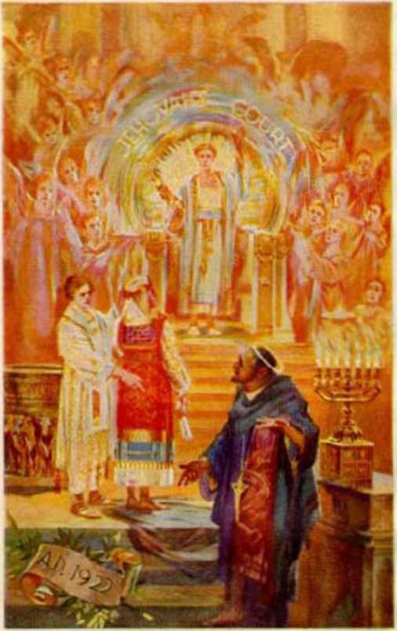
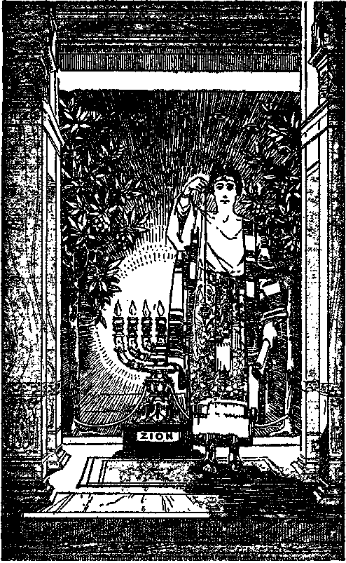
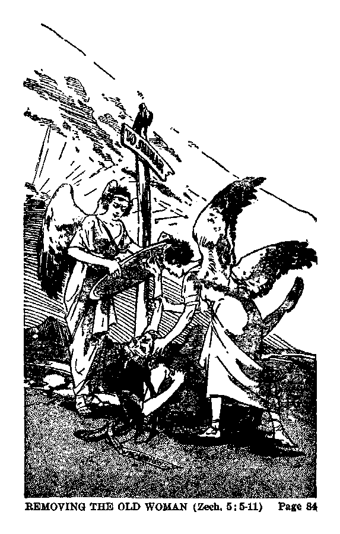
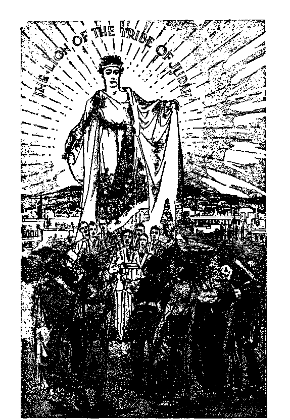
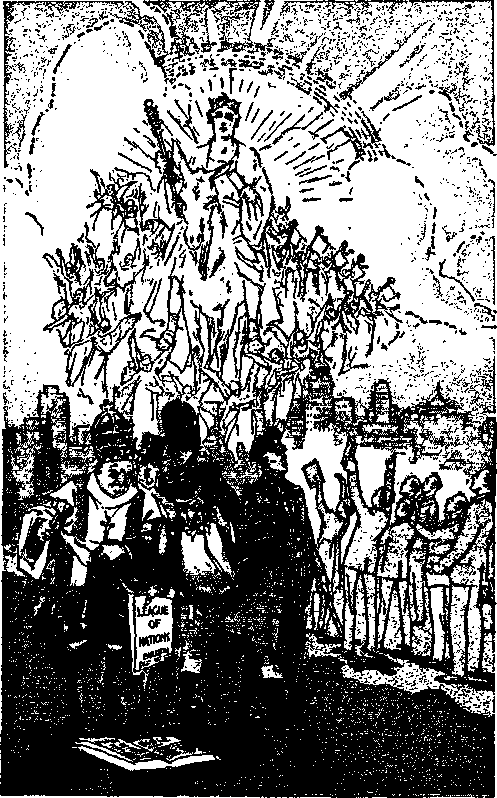
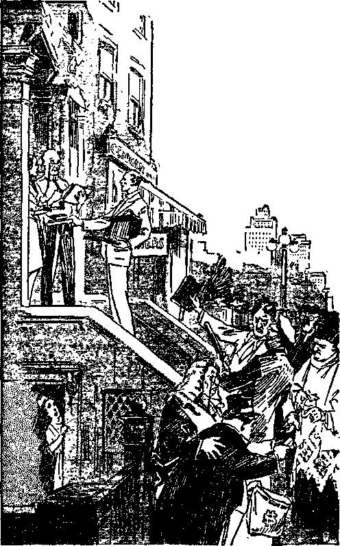
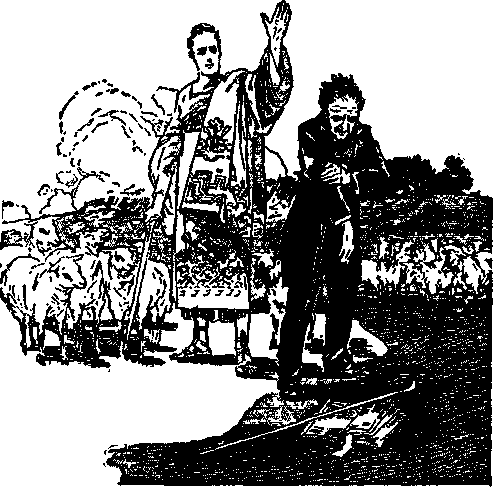
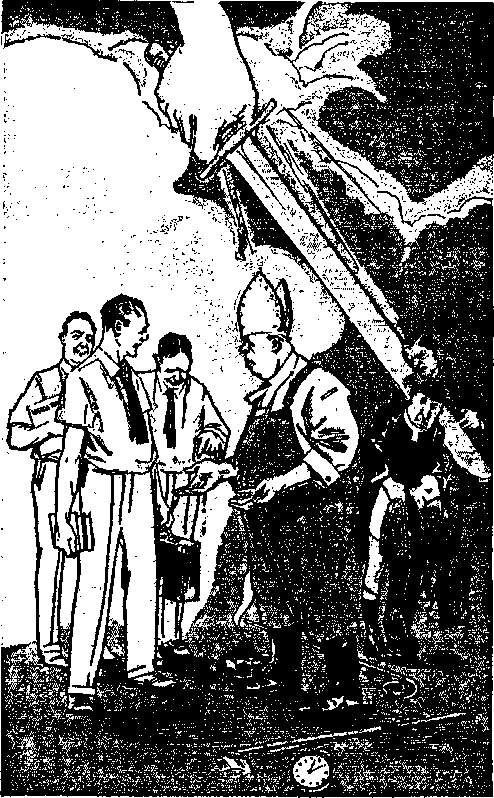

The revelation of the prophecy by Zechariah showing Jehovah and his enemies preparing for the final war, and describing the great battle and the conclusion thereof in a glorious victory and the establishment of peace on earth and good will toward men, and the everlasting vindication of Jehovah’s name.
Comments by J. F. Rutherford
AUTHOR OF
CREATION DELIVERANCE RECONCILIATION GOVERNMENT
PROPHECY LIGHT and other books
First printing 1,000,000 copies
•8
Publishers
WATCH TOWER
Bible and Tract Society International Bible Students Association
Brooklyn, New York, U. S. A,
Also
London, Toronto, Strathfield, Cape Town, Berne, Magdeburg, and in other countries.
TO
JEHOVAH OF HOSTS
The Victorious Warrior
This Book Is Dedicated
“Then shall the Lord go forth, and fight against those nations, as when he fought in the day of bat
tle.”—Zech. 14:3.
“0 sing unto the Lord a new song; for he hath done marvellous things: his right hand, and his holy arm, hath gotten him the vic
tory. ’ ’—Ps. 98:1.
Copyrighted 1933 by
J. F. RUTHERFORD
Made in U. S. A.
JEHOVAH’S NAME must be made known to all creation. ‘Jehovah of Hosts, that is my name.’ (Jer. 10:16, A.R.V.) That means that he is the Almighty God of war, commanding forces invincible to all foes. He engages only in righteous warfare for the purpose of vindicating his name and for the good of all his creatures who desire righteousness. He made the heavens and the earth and the fullness thereof, and all living creatures receive life from his gracious hand. It is therefore of most vital importance to his creatures that they know Jehovah.
Foreknowing that the day would come when all creation must choose either to follow Satan and die or to obey Jehovah and live, the Most High caused a record of his purpose to be made. In making this record he used trusted and true men wholly devoted to him, and who joyfully obeyed him. (2 Pet. 1:21) Among such holy prophets thus used was Zechariah. The prophecy recorded by Zechariah was given in connection with the building of the temple at Jerusalem by Zerubbabel, where Jehovah put his name. Zerubbabel was a type of Christ Jesus, the Head and Builder of Jehovah’s temple or royal palace. The fulfilment of the prophecy necessarily s
takes place after the coming of Christ Jesus to the temple of Jehovah for judgment and while the antitypical temple is in course of construction. For that reason it is now God’s due time for the prophecy of Zechariah to be understood by those who love and serve God. Among some of the thrilling truths that the prophecy discloses are the following:
After the eviction of Satan from heaven Christ Jesus, accompanied by his holy angels, makes an inspection of things on the earth, particularly with reference to the organization of “Christendom” and of his own faithful and true people. Then preparation begins for the great and final battle which is known as “Armageddon”. Jehovah calls upon Satan to get ready for that fight.
To prepare his own people Jehovah by the hand of Christ Jesus brings them out from captivity to Satan’s organization and begins to unfold to them vital truths which bring great consolation and peace to the faithful. The approved ones he then brings into his temple and anoints them. Then the Lord makes known to the anointed remnant that they must be wholly and completely obedient to him that they may be prepared to have a part in the great battle soon to follow.
The prophecy discloses Jehovah’s curse of vengeance upon the enemy organization and the certain doom that awaits all who oppose God, and he directs his faithful witnesses to bear testimony concerning the same to the peoples of the nations that they may have an opportunity to choose whom they will serve.
The prophecy shows Christ Jesus the great Prophet, Priest and King being triumphantly presented as the righteous Ruler of the earth, and his coming being hailed by the faithful with shouts and great rejoicing. Jehovah’s witnesses are sent forth to tell this and other vital truths to the nations of the earth, and their testimony greatly enrages the enemy. The dividing of the people is the result. The faithful remnant on earth are completely separated from all others in order that they may be clean and wholly devoted to Jehovah and faithfully perform the duties as his representatives on earth.
The prophecy shows the two opposing armies assembled for war. Jehovah’s army is under the immediate command of Christ Jesus, and the army of Satan is under the immediate command of Gog. Then Jehovah comes forth to direct the fight. He is pictured as standing upon the mountain, and at the touch of his feet the mountain separates, forming a great valley between the two mountains. From between these two mountains come forth the war chariots of the Almighty rushing into battle, and then follows a description of the most terrible war that will ever have been fought That is the end of war.
The battle of the great day of God Almighty results in the release of all who love righteousness and in the complete destruction of all who willfully work wickedness. The obedient ones then become wholly devoted to God, and the great long-hoped-for period of everlasting peace and prosperity on earth comes to stay.
Jehovah now is commanding this testimony to be given in the earth. Christ Jesus is the great witness, and He has committed to the faithful remnant who are members of his organization the work of delivering this testimony on the earth. The purpose of the testimony is to afford the people an opportunity to take their stand on the side of Jehovah and live, and that the name of the Most High may be made known and entirely vindicated. Every person who desires to live should carefully consider the prophecy as explained in this book.
PREPARATION
[BLANK]
CHAPTER I
JEHOVAH is now preparing those who love him for the most stupendous event in the history of man. For more than six thousand years conditions have appeared to be entirely adverse to those who have tried to do right. Now there is revealed to those who have taken their stand on Jehovah’s side the great truth that there is rapidly approaching a time of unprecedented prosperity and blessings for the human race. Those who are diligent to grasp the truths that are placed before them are lifted far above the present sad conditions of this world and see the incontrovertible proof that the time of deliverance is at hand.
In all the ages past a subtle foe has beset men, heaped upon them injustice and oppression, led them into pitfalls, filled their days with perplexity and distress, and in the end brought them in sorrow to the grave. That same enemy, Satan, has employed every conceivable means to defame the name of the great Creator Jehovah and to turn man away from Him. That enemy long ago formed an organization made up of false and fraudulent religion, planted superstitious fear in the heart of man, and has drawn u multitudes into his religious net. He has created a great commercial system and used it to rob the people of the fruits of their honest toil, and to corrupt the political element that ostensibly rules, and has used this political element to compel the people to remain in subjection. The climax of this wicked organization has, been reached in the seventh world power, which is otherwise designated as “Christendom”, and which world power has fraudulently and falsely assumed the name of The Christ of God and has brought upon Jehovah’s holy name the greatest amount of ignominy and shame. The end of such defamation and wickedness must come and now it rejoices the hearts of honest men to see that the climax is at hand when there will be a complete change for the good.
Jehovah declares his purpose to vindicate his holy name at Armageddon; hence it is designated in his Word “the battle of that great day of God Almighty”. The organization of Jehovah, symbolized by Mount Zion, is the place of the assembly of his troops; hence that place is called “Armageddon”. It is there that he will “go forth and fight” for his own. (Zech. 14:3) The militant host of Jehovah will be led by Christ Jesus, who is now King of kings exercising his royal authority. (Rev. 17:14; 19:11-14) To be sure, Jehovah does not need to prepare himself for the great battle, but it is necessary to prepare some parts of his organization and to send them forth to make known that he is God, and that his purpose is to destroy the enemy that has defamed his name and brought suffering and death upon his creatures. The administration of the affairs of the world must pass completely from the control of Satan and into the hand of Christ Jesus, who is earth’s rightful ruler. For centuries Satan has been “the prince of this world”, and now he refuses to abdicate; hence his power and organization are to be completely destroyed. Jehovah is long-suffering and forbearing. (Ex. 34:6) He has given the enemy every opportunity to make good his challenge and boast to turn all mankind against God. But the time must come for Jehovah to act, and when his wrath is expressed it will be so emphatic that all will know that he is the Almighty God. Before executing his judgment against the enemy fair warning and complete notice is given, and such is a part of his preparation.
In the centuries of long ago Jehovah, by his holy spirit, moved honest men to write down that which he purposed to bring to pass in future days, and now the prophecies then written are being fulfilled. Among those honest and God-fearing men who wrote prophecy was Zechariah, the grandson of Iddo the prophet. It was about the year 520 B.C. when Zechariah was given his first vision by Jehovah and when he began to write prophecy. More than 2,400 years thereafter that prophetic vision began to have fulfilment. At that time the World War, which began in 1914, had come to a conclusion, and the ruling powers of the world were bringing forth various schemes of reconstruction. The rulers of “Christendom” had received the evidence that Satan’s world had come to an end and that the time was at hand for the beginning of the kingdom of God under Christ Jesus. Instead of heeding this evidence the seventh world power set up a substitute for God’s kingdom, which is an abomination and detestable in Jehovah’s eyes.
Zechariah’s vision came to him from the Lord and in the nighttime. In vision he beheld a company of men riding on horseback. The leader of that company rode a red horse, and those who followed after him rode red, bay and white horses. That was a heavenly vision foreshadowing things to come to pass in future days upon the earth. That company of heavenly cavalry halted their horses upon the side of the Mount of Olives, in the shadow of a grove of myrtle trees. From this vantage point the chief horseman made a careful survey of the city of Jerusalem, while the other horsemen of his company rode up and down in the land gathering information and returned and reported that information to their chief. The information gained by his own inspection, and that reported to him by his aides, filled the chief with righteous indignation. In the vision Jerusalem appeared to be trodden down, and there was utter indifference on the part of the Jews to put it in proper shape. The chief horseman immediately began to prepare his forces for a great war, which foreshadows the greatest war that is ever to come to the nations of the earth.
A period of years passes while the chief horseman continues the work of preparation, and in that time only a small number of men on earth give any heed to what is being done. The preparatory work is not done in silence, but openly and aboveboard, the chief even serving notice upon his adversary and calling upon him to prepare for the great battle, and then he tells the enemy exactly what will be the result of that fight. In vision the prophet sees both Jehovah’s and the enemy’s mighty armies drawn up in battle array and marks the people taking their position in the respective militant forces. The crucial hour arrives, and the two mighty armies are hurled against each other, resulting in a complete victory for the leader who stood in the shade of the myrtle trees on his red war mount.
The vision first discloses the chief and his assistants making an inspection of Jerusalem. That city symbolically stood for God’s covenant people in the present-day “Christendom”, which particularly means the Anglo-American empire system, and which people are in an implied covenant to do God’s will. The inspection also includes all who have made a covenant to do the will of God; and that which follows involves all classes of people in the world.
The facts now fully known disclose that the work of preparation, in fulfilment of the prophetic vision, began in 1918 and has progressed over the period of fifteen years, and now the hour draws near for the terrible clash of the armed forces. Zechariah the prophet foreshadowed a small company of persons who are wholly devoted to God and who are now on the earth, and to which company of faithful ones Jehovah God has given an understanding of the prophetic vision. At the same time Jehovah has laid upon this company of witnesses taken out for his name the obligation and great privilege of informing other persons on earth as to the vision and its meaning. These are commanded to serve notice upon the rulers of the world to inform them of what is about to come to pass in fulfilment of the prophetic vision, and also to give information to all persons of good will that they may find a way of escape in that time of great slaughter that is shortly to take place.
The entire prophecy of Zechariah, which is here considered and which is now being unfolded, thrills the heart of everyone who has an honest desire to see a righteous government established in the earth. While this prophecy and its fulfilment involve all creatures now on the earth who are in an implied or direct covenant with Jehovah God, only a small number will understand it and appreciate it. The clergy of “Christendom” and the principal ones of their flocks, the opposers of the proclamation of the message of God’s vengeance and of his kingdom, and the “evil servant” class, the “man of sin”, “the son of perdition” (2 Thess. 2:3), not only will fail to understand the prophecy and its interpretation but will treat it with contempt and ridicule. On the other side, those who are wholly devoted to Jehovah, and who are therefore his chosen witnesses; and those who are of good will and who go to make up the Jonadab class (2 Ki. 10:15-23); and later the “great multitude” (Kev. 7:9-14), will see and greatly appreciate the prophecy and its meaning.
It was in A.D. 1914 that the Prince of Peace stood up and cast Satan out of heaven. (Dan. 12:1; Rev. 12:1-9) It was in 1918 that this mighty Prince came to the temple of Jehovah for judgment, and from that time dates the preparation. “He that dasheth in pieces is come up before thy face.” (Nah. 2:1) That prophetic statement means that the mighty Field Marshal of Jehovah is now present and preparing for the great battle. To his anointed remnant on earth Jehovah now says: “Keep [securely] the fortress, watch the way, make thy loins strong, . . . For Jehovah restoreth the excellency of Jacob [his anointed; meaning his faithful remnant on the earth].” (Nah. 2:1,2, A.R.V.) God’s people have been brought into unity, and now they “offer unto the Lord an offering in righteousness”, and that continually; and thus these are prepared to perform their part. The fact that Jehovah foretold by his prophet concerning the coming of the battle of Armageddon and that he would prepare for it is proof that the battle will be fought; and the further fact that he has now opened these prophecies to the understanding of his anointed is evidence that the time of the battle is near; hence the prophecy is of profound interest to the anointed.
Concerning his militant organization and its preparation “in that day” Jehovah’s prophet says: “The shield of his mighty men is made red, the valiant men are in scarlet; the chariots flash with steel in the day of his preparation, and the cypress spears are brandished.” (Nah. 2:3, AJi.V.) God’s organization is fired with zeal for the vindication of his great name, and hence that organization flashes as fiery steel. Furthermore, Jehovah says: “I have commanded my consecrated ones, yea, I have called my mighty men for mine anger, even my proudly exulting ones.” (Isa. 13: 3, A.R.V.) Then Jehovah addresses the enemy and tells him to prepare and warns him of what will be the result. “Draw thee water for the siege; strengthen thy fortresses; go into the clay, and tread the mortar ; make strong the brickkiln. There shall the fire devour thee; the sword shall cut thee off; it shall devour thee like the canker-worm: make thyself many as the canker-worm; make thyself many as the locust. Thou hast multiplied thy merchants above the stars of heaven: the cankerworm ravageth, and fleeth away. Thy princes are as the locusts, and thy marshals as the swarms of grasshoppers, which encamp in the hedges in the cold day, but when the sun ariseth they flee away, and theii’ place is not known where they arc.”—Nah. 3:14-17, J.Ti.P.
The Lord further gives assurance that this battle will be the final end. “What do ye devise against Jehovah! he will make a full end; affliction shall not rise up the second time.”—Nah. 1:9, American Revised Version.
The enemy knows that his time is short, and hence he prepares with haste for battle. (Rev. 12:12) Continuing his policy of fraud and deceit, diplomacy, boasting and flattery, Satan pulls his commercial, political, military forces and strong-arm squad together, and then by the mouth of his sanctimonious clergymen tells the people that this unholy alliance is the means for the salvation of the world. Satan uses the various elements of his wicked organization to draw the people of all nations, and particularly those of “Christendom”, away from God and into his own wicked camp. The Anglo-American empire system, which chiefly is “Christendom”, Satan makes his chief spokesman on earth, and therefore in the Scriptures this system is called the “false prophet”; and by this beastly organization Satan speaks to and deceives the people. “And I saw three unclean spirits like frogs come out of the mouth of the dragon, and out of the mouth of the beast, and out of the mouth of the false prophet. For they are the spirits of devils, working miracles, which go forth unto the kings of the earth and of the whole world, to gather them to the battle of that great day of God Almighty. And he gathered them together into a place called in the Hebrew tongue Armageddon.”—Rev. 16:13,14, 16; see Light, Book Two, page 42.
Thus Satan prepares for the great battle, and at the same time he takes a careful inventory of the faithful followers of Christ Jesus. Against these he forms a conspiracy the purpose of which is to cut off these faithful witnesses of God and to destroy them. (Ps. 2:3,4; 83:2-5) That conspiracy is formed, and the overt acts are committed against God’s anointed within the realms of “Christendom”, and this is further proof that “Christendom” is Satan’s instrument. His reason for attempting the destruction of these faithful ones of God is that they might not maintain their integrity toward God, and might thereby fail to be made part of His holy nation; and because these are the ones whom Jehovah uses to give notice to the world of his purpose to destroy the enemy organization. Jehovah causes his prophet to speak concerning his witnesses in these words: “Proclaim ye this among the nations; prepare war; stir up the mighty men; let all the men of war draw near, let them come up. Let the nations bestir themselves, and come up to the valley of Jehoshaphat; for there will I sit to judge all the nations round about.” —Joel 3:9,12, A.R.V.
THE TEMPLE (Zechariah, Chapter 1)
The temple or sanctuary of God must be set up and cleansed before the complete vindication of Jehovah’s name, and such work is a part of the preparation for the battle of the great day of God Almighty. For some time prior to the opening of the temple for judgment Christ Jesus was giving attention to the consecrated ones on the earth to prepare the way before Jehovah and to bring these consecrated ones to the time and place of judgment; and concerning that period of time Jehovah says: “And he shall prepare the way before me.” (Mal. 3:1) That work being completed, then Christ Jesus suddenly or straightway comes to the temple: “He shall come, saith the Lord of hosts.” From that time forward to the time of the battle of Armageddon is designated in the Scriptures “the day of his preparation”.
The Scriptures show that these two periods are separate and distinct in this, to wit, the time of ‘preparing the way before Jehovah’ ends with the coming of Christ Jesus to the temple; whereas “the day of his preparation” begins at the time of the coming of Christ Jesus to the temple. The consecrated must be brought before the Lord for examination, and must be tried and judged, and the approved ones are brought into the temple and anointed. This is part of the work of “the day of his preparation”. This work was foreshadowed by the rebuilding of the typical temple at Jerusalem. The prophetic book of Zechariah deals with this preparatory work, the battle of the great day of God Almighty, and the conditions that will exist at the conclusion of that battle. All of this was written aforetime for the purpose of giving strength to the faithful remnant of God’s anointed people now on the earth. Jehovah has furnished cumulative evidence upon this point and it behooves us to give careful consideration to all of such evidence. This publication is issued for that very reason.
When the term "Lord of hosts” or “Jehovah of hosts” appears in a Scriptural text it relates particularly to Jehovah as the Commander of his military force which he uses to express his wrath against the enemy. Note that the words of the prophet concerning the coming of Christ Jesus are: "Behold, he cometh, saith Jehovah of hosts” (Mal. 3:1, A.R.V.) Concerning the rebuilding of the temple as prophesied by Zechariah the command is: “Thus saith Jehovah of hosts: Return unto me, saith Jehovah of HOSTS, AND I WILL RETURN UNTO YOU, SAITH JEHOVAH of hosts.” (Zech. 1:3, A.R.V.) The great God of battle is preparing for the final war, and those in his organization eagerly seek for information concerning the same.
Cyrus, the king of Persia, under the direction of Jehovah issued a decree for the rebuilding of the temple at Jerusalem. A remnant of Jews returned from captivity and began the work of rebuilding, and then because of opposition these Jews for sixteen years did no work whatsoever in connection with the rebuilding of the temple. In the meantime Cyrus was succeeded by Darius, the Persian. It was in the second year of the reign of Darius that God sent his two prophets, Haggai and Zechariah, to stir up the Jews and put them to work on the temple. Zechariah began to prophesy two months later than Haggai, or, to wit, in the eighth month in the second year of the reign of Darius. (1:1) (See Vindication, Book Three, page 109.) Zechariah was a son of Berechiah, who was the son of Iddo the prophet. Therefore Zechariah was the grandson of the prophet. The scripture also shows that Zechariah was a priest. (Neh. 12:1-4,12-16) The name Zechariah means “whom Jehovah remembers”, and Zechariah foreshadowed God’s servant class on the earth at the end of the world and whom God remembers and makes living stones in his temple, which temple is his building for the vindication of his great name. The name Berechiah means “whom Jehovah hath blessed”. Sometimes Zechariah was called the son of Iddo, because he was in fact a son of the second generation. (Ezra 5:1) “Iddo” means "timely; one born on a feast day; loving; opportune”. We know that Jehovah does everything at the opportune time.
Jehovah was displeased with the service of these Israelites, and therefore he caused Zechariah to prophesy and say: “Return unto me, saith Jehovah of hosts. ... Be ye not as your fathers.” (1:2-5, A.R.V.) Their fathers had permitted the temple, which had been built by Solomon, to be cluttered up with trash and defiled by idol worship, and now the returned captives from Babylon were showing the same disregard for God’s interests by permitting the building of the temple at Jerusalem to stop and lie in waste. (Hag. 1:4) The words of the prophet Zechariah serve as a warning to all who are begotten of the spirit and who become negligent of the duties and obligations laid upon them by the Lord. (1:6) Isaiah prophesied of a similar displeasure on the part of Jehovah with his consecrated people on the earth. (Isa. 6:1-9; 12:1) This is one of the reasons why the Lord Jehovah sent his message to cleanse his people, that is, to refine and cleanse the temple class; and this work would necessarily mean the cleaning out and putting on the side all the stubborn and rebellious ones. All must know that Jehovah is God and that his name shall be vindicated ; and this work must begin at the house of God. (Mal. 3:1-3; Ezek. 20:1,37,38; 33:33) Such preparatory and cleansing work must be done before the final battle; hence it is a part of the work of the ‘day of preparation’.
A VISION
On the twenty-fourth day of the eleventh month, which corresponds to our modern month of February, the prophet Zechariah had avision. It was about the time for the “latter rain”. Three months previous to that time Ilaggai had been prophesying. After the twenty-fourth day of the ninth month of the same year, it seems, Haggai ceased prophesying, or at least there is no record of his further prophesying; but from that time forward Zechariah exclusively filled the prophetic office concerning the work to be done on the temple.
Concerning the vision the prophet said: “I SAW BY NIGHT, AND BEHOLD A MAN BIDING UPON A
RED HORSE, AND HE STOOD AMONG THE MYRTLE TREES that were in the bottom [of the mountain] ; AND BEHIND HIM WERE THERE RED HORSES, SPECKLED, and white.” (1:8) It being in the nighttime, the vision relates to a time when ‘there is darkness upon the earth, and gross darkness covers the people’. (Isa. 60:2) The “man riding upon a red horse” was the angel of the Lord which materialized and to whom other angels make report of the result of their investigation. (Zech. 1:11) He was riding on a red horse, which is a symbol of sanguinary warfare. (Isa. 63: 2) The ‘man on the red horse’manifestly represents Christ Jesus, the Leader and Field Marshal of Jehovah’s war organization.—Ps. 45:4.
HE SURVEYS
It is the time of inspection! The man on the red horse “stood”, that is, he made his horse come to a standstill, and this corresponds to the period of time of “silence in heaven”, it being the time when there was inactivity between the end of the Elijah work (Mal. 4:5,6) and the beginning of the Elisha work of the church. (Rev. 8:1; Light, Book I, page 99) The rider on the red horse “stood among the myrtle trees that were in the bottom”. Another translation renders this text “in the shade” or “shady place”. {Rotherham, and A.R.V., margin) Evidently the leader stood his horse at a point on the side of the Mount of Olives in the shadow of the trees, and from which point he makes an inspection of the city of Jerusalem. At that same time there were myrtle trees growing on the side of the Mount of Olives. (Neb 8:15) It was the appropriate place for the rider to stand his horse, and the fact that mention is made that he stood his horse among the myrtle trees shows that it was at an appropriate time for Jehovah to return to his people, to restore to them his truth, and to gather them unto himself. "Myrtle” means harvest, the time of restitution and joy. (The Watchtower, 1931, page 149; Preservation, page 19) This would fix the time of the fulfilment of the prophecy, to wit, at the time the Lord was gathering his people unto himself preparatory to cleansing them at the temple judgment.—Ps. 50:5; Isa. 41:19; 55:13.
The man on the red horse was inspecting the city of Jerusalem, which represented God’s covenant people. The city of Jerusalem must, at the time, have presented a sorry appearance according to the description given of it by the prophet. (Neh. 2:11-15) The inspector general of Jehovah’s hosts must have been filled with indignation when he surveyed the desolation of Jerusalem. Likewise when Christ Jesus came in 1918 to inspect the professed people of God and set up the temple, he would look with indignation upon the desolation of the earthly part of God’s organization, the covenant people of the Most High. The words of Isaiah, at this point, seem quite appropriate and express the indignation of the Lord: “For the day of vengeance is in mine heart, and the year of my redeemed [remnant people] is come.” (Isa. 63:4) This locates the time of the beginning of the fulfilment of Zechariah's prophecy.
The inspector general of Jehovah’s hosts at the same time made an inspection of Satan’s earthly organization: “He stood, and measured the earth.” What he then saw would further increase his indignation and in due time would increase his zeal to act in the destruction of the wicked world. “He beheld, and drove asunder the nations.” (Hab. 3:6) It is the day of Jehovah’s preparation. (Nah. 2:3) Standing behind the man on the red horse were other riders on “bed horses, speckled [margin, bay; Leeser, pate], and white [horses]”. This shows that the inspector general was accompanied by his army officers in the army of Jehovah, and these make inspection and render their report to their chief. (1:11) The conclusion is irresistible that these horsemen accompanying the Lord Jesus represented his holy angels that accompanied him at the time of judgment. (Matt. 25:31) “Behold, the mountain was full of horses . . . of fire.” (2 Ki. 6:17) These represent the war organization of Jehovah. “And the armies which were in heaven followed him upon white horses, clothed in fine linen, white and clean.”—Rev. 19:14.
Zechariah inquired of the Lord the meaning of these men on horses, and the angel talking with him explained it to him: “Then said I, 0 MY LORD, WHAT ARE THESE? AND THE ANGEL THAT TALKED WITH ME SAID UNTO ME, I WILL SHEW THEE what these be.” (1:9) This question is propounded for the benefit of those faithful ones of the remnant now on earth, and the angel of the Lord brings to them the needed information in answer to their questions. (Rev. 1:1) This is proof that the interpretation of prophecy does not proceed from man, but that the Lord Jesus, the chief one in Jehovah’s organization, sends the necessary information to his people by and through his holy angels. “And the man THAT STOOD AMONG THE MYRTLE TREES ANSWERED and said, These are they whom the Lord hath SENT TO WALK TO AND FRO THROUGH THE EARTH.” (1:10) In the vision these represent Jehovah’s host that he uses to express his wrath against the enemy. (Rev. 14:20) With this host Jehovah’s witnesses on earth are duly associated.
Satan and his wicked agents stalk through the earth to spy out and to maliciously act against God’s faithful people, and these horsemen in Zechariah’s vision act as observers of what concerns Jehovah’s organization and to carry out his purposes. The Lord now has his face or attention turned to consideration of things on the earth, and he inspects both the enemy organization and the organization of Jehovah. The eyes of the Lord are observing everything on the earth. (Zech. 4:10; Rev. 5: 6) The horsemen were as the eyes of the Lord. —Num. 10: 31.
The under-inspectors report to their chief: “And they answered the angel of the Lord THAT STOOD AMONG THE MYRTLE TREES, AND SAID, We have walked to and fro through the earth, AND, BEHOLD, ALL THE EARTH SITTETH STILL, AND is at best." (1:11) The substance of their report is that they have found the entire organization of Satan self-centered, in a state of selfcomplacency and giving no regard or concern to the kingdom of God under Christ. This report must have been made following the end of the World War and when Satan’s agencies were seeking means and remedies to bring peace on the war-torn earth. They gave no heed to God’s kingdom, but so far as it is concerned they sat still and rested and relied upon the League of Nations, the World Court, peace treaties, and like things, to keep Satan’s organization in possession of the world. Of course, they gave no assistance to God’s people to proclaim the truth, but treated them with contempt. Such describes the attitude of the various parts of Satan’s organization on earth from 1918 to 1922. But God’s remnant got on their feet and began to work.
At the conclusion of the report by these under-inspectors, “then the angel of the Lord ANSWERED AND SAID, 0 LORD OF HOSTS, HOW LONG WILT THOU NOT HAVE MERCY ON JERUSALEM AND ON THE CITIES OF JUDAH, AGAINST WHICH THOU HAST HAD INDIGNATION THESE THREESCORE AND TEN years?” (1:12) This corresponds to the condition amongst God’s people from 1918 to 1922, probably before the general convention of the latter year at Cedar Point, Ohio. It was when the Lord’s covenant people saw that Christ the great Inspector General had come to the temple that they cried out: “Save now, I beseech thee, O Lord: O Lord, I beseech thee, send now prosperity.” (Ps. 118:25) It was in 1922 that God’s covenant people became aware of their own negligence in connection with the building of the antitypical temple. It was then that the Lord spoke words of comfort to them and they rejoiced, seeing that Jehovah’s anger had turned away from them. (Isa, 12:1-4; 61:1-3) “And the Lord answered the angel that talked with ME WITH GOOD WORDS, AND COMFORTABLE WORDS.” —i:i3.
Zechariah, having received the good and comfortable words from the Lord, was commanded to make a proclamation: “So the angel that COMMUNED WITH ME SAID UNTO ME, CRY THOU, saying, Thus saith the Lord of hosts, I am jealous for Jerusalem and for Zion with a great jealousy.” (1:14) This proclamation or message must be both of God’s vengeance against the enemy and of comfort to his own people. Jehovah had put his name on his consecrated people who represented his true interest and whom he would give a part in the work of vindicating his name. Hence he manifests his jealousy (his zeal) by returning unto Zion his great favor. (Zech. 8:1-3; Ps. 102:16) For that very reason Jehovah provided for the release and delivery of his people from bondage in the year 1919. During the World War Satan’s agencies, particularly the Anglo-American empire system, had ill-treated God’s faithful people much to the displeasure of Jehovah; hence he caused his prophet to say: “And I am very sore displeased WITH THE HEATHEN THAT ARE AT EASE [CARELESS (pboud, margin), Roth.); for I was but a little displeased, and they helped forward the affliction.” (1:15) It was “Christendom”, this Anglo-American empire system, that not only became indifferent to God’s kingdom and rested in ease in their own strength to lift up the nations, but helped forward the affliction of God’s people in particular. The Lord also says, “I was but a little displeased [with his own people],” and for this reason he permitted them to be taken into custody by the enemy. (Jer. 12: 7) Instead of “Christendom’s” exercising mercy towards those who preached the gospel of God’s kingdom (at that time this very preaching was with fear and trembling), “Christendom” took delight in punishing Jehovah’s covenant people and helped forward their affliction. Since then the same agents of Satan continue to make war against God’s anointed. The prophecy of Ezekiel describes the malice of “Christendom” against God’s remnant people.—See Ezekiel 25; Vindication, Book Two, page 9.
In making preparation for the punishment of the enemy organization Jehovah sends his “Messenger of the covenant”, Christ Jesus, to gather together his people, build up the temple class, and make them fit for participating in his work. “Therefore thus saith the Lord, I am returned to Jerusalem with mercies ; my house shall be BUILT IN IT, SAITH THE LORD OF HOSTS, AND A LINE
SHALL, BE STRETCHED FORTH UPON JERUSALEM.” (1:16) Seeing this, Jehovah’s remnant should be very zealous and not slack their hands in the work because of opposition put forth by the enemy. The Lord declares that his temple shall be built up, and it is built up, “even in troublous times.” (Dan. 9:25) ‘The line stretched forth upon Jerusalem’ is to measure the progressive work which Jehovah has done in the building up of his organization on earth since 1922. He expresses his purpose to comfort and strengthen his people. “Cry yet, saying, Thus saith the Lord of hosts, My cities through prosperity SHALL YET BE SPREAD ABROAD [MY CITIES (SHALL) OVERFLOW WITH BLESSING, Roth."] J AND THE LORD SHALL YET COMFORT ZlON, AND SHALL YET CHOOSE Jerusalem.”—1:17.
Jehovah has prospered his organization by committing to the remnant the testimony of Jesus Christ, the kingdom interests on earth, and the duty of carrying on the Elisha work, and by pouring out his spirit upon them, and bringing them into his organization, and permitting them to drink the fruit of the vine new with the Lord Jesus Christ in his organization. “For the Lord shall comfort Zion: he will comfort all her waste places, and he will make her wilderness like Eden, and her desert like the garden of the Lord; joy and gladness shall be found therein, thanksgiving, and the voice of melody.” (Isa. 51:3) When Zion is builded up those therein must give praise to Jehovah. “Thou shalt arise, and have mercy upon Zion: for the time to favour her, yea, the set time, is come. When the Lord shall build up Zion, he shall appear in his glory. To declare the name of the Lord in Zion, and his praise in Jerusalem.” (Ps. 102:13, 16, 21) Jehovah has vindicated his Word toward his people by putting his message of truth into their mouths and sending them forth to deliver his testimony.—Isa. 51:16.
Having consoled his own people of Zion, Jehovah now tells her of the enemies that will come against her. “Then lifted I up mine eyes, AND SAW, AND, BEHOLD, FOUR HORNS.” (1:18) Horns symbolize means of pushing or inflicting punishment upon another. (Ezek. 34:21; Deut. 33:17) Up to the time of the prophecy of Zechariah four devilish world powers had existed and inflicted punishment upon men who served Jehovah God. The prophecy here means that four more world powers, to wit, Greece, Rome, the Anglo-American empire system, which is “Christendom”, and the combination of the League of Nations, which is the eighth world power, would further oppose God’s anointed people. (Rev. 17:11) The angel of the Lord tells Zechariah that these horns are the powers that scatter God’s people. (1:19) The “four horns” would also fitly represent the complete power of Satan’s organization, which does violence to God’s people and which reaches its climax of wickedness in the seventh world power.
The Scriptural use of “four” is symbolic of completeness, such as foursquare. “And the Lord shewed me four carpenters [craftsmen,
Roth.; smiths, A.R.V.].” (1:20) Generally the word here used for “carpenters” means artificers or ones who do constructive work. The “four” is here used as symbolical of the complete army of the Lord which hammers the horns off the bull heads of Satan’s organization, and crushes them. Since the prophet inquires concerning the four constructors or artificers, the angel of the Lord said: “Then said I, What come these to do? And he spake, saying, These [horns] ARE THE HORNS WHICH HAVE SCATTERED JUDAH [God’s faithful people], so that no man did lift vr his head [in 1918 and 1919]: but these [artificers or carpenters or constructors] are COME TO FRAY THEM, TO CAST OUT THE HORNS OF the Gentiles, which lifted up their horn over THE LAND OF JUDAH TO SCATTER IT.” (11 21) These are God’s provided means to discomfit the enemy, such as Gideon did in his time. (Judg. 8:12; Isa. 19:16; Ezek. 30: 9) This wicked crowd of Satan rises up to scatter and to destroy those who praise Jehovah God, pictured by Judah, and the Lord God purposes the destruction of these assailants and makes preparation to that end. If Jehovah’s witnesses were left without instruction or spiritual food they would be discouraged and cast down, and the enemy would put them to flight. Now Jehovah instructs his faithful people and gives them comfort and encouragement that they may have hope of complete victory through Christ Jesus; and thus he prepares them for their part in the work of vindication.
CHAPTER II
(Zechariah, Chapter 2)
JEHOVAH is the Father of mercy and the God of all comfort, and therefore he comforts his own people according to their needs. (2 Cor. 1:3-5) The anointed now are commissioned to comfort those on earth who mourn and who trust in Jehovah. This consolation is administered by informing those who will hear that Jehovah is God and that his kingdom is the means of complete relief and blessings for humankind. The greatest consolation that comes to the anointed is for them to know Jehovah and to understand his purposes and their own relationship to the Most High, and such privilege is given to them now by Jehovah through Christ Jesus the Head of the temple organization.
In the preceding chapter is recorded a vision had by Zechariah and in which the declaration is made by Jehovah of hosts that “a line shall BE STRETCHED FORTH UPON JERUSALEM”. NOW the prophet Zechariah has another vision: “I lifted UP MINE EYES AGAIN, AND LOOKED, AND, BEHOLD, A MAN WITH A MEASURING LINE IN HIS HAND.” (2:1) In this vision the man that appeared with the measuring line in his hand is shown by verse four to be a young man; hence he here pictures that same class represented in the prophecy of 35
Joel as ‘the young men which see visions’. (Joel 2: 28) In this vision the young man represents the faithful and zealous ones that appear before the Lord upon his coming to the temple for judgment. The prophet Zechariah then inquires the purpose of this man: “Then said I, Whither goest thou? And he said unto me, To measure Jerusalem, to see what is the breadth thereof, AND WHAT IS THE LENGTH THEREOF." (2:2) Thus he represents God’s faithful people examining his prophecies to ascertain what should be their state and their present work in his organization. These do not rely merely on what has been said by others concerning God’s Word, but they go “to the law and to the testimony" and continue to examine it, that they may find out what God would have done by his anointed people. (Isa. 8: 20) The young man here, picturing the faithful remnant, does not come to find fault with or criticize God’s organization and condemn it, but to know what he must do to be in harmony with Jehovah and to receive at his hands prosperity and blessings. Such is the correct attitude of the faithful remnant on earth. Such is further shown by the work of Ezekiel in taking note of the depths of the waters flowing out from the temple.—Ezek. 47: 3-6. . .
Certain duties and kingdom interests have been committed by the Lord to his angels, which include the transmission of information to God’s anointed people on the earth for their aid and comfort. Even though we cannot understand how the angels transmit this information, we know that they do it; and the Scriptures and the facts show that it is done. (Matt. 25: 31; Jude 14,15; Zech. 14:5) This conclusion is fully supported by the following words of Zechariah’s prophecy: “And, behold, the angel that TALKED WITH ME WENT FOETH, AND ANOTHER ANGEL WENT OUT TO MEET HIM, AND SAID UNTO HIM, Run, speak to this young man, saying, Jerusalem SHALL BE INHABITED AS TOWNS WITHOUT WALLS FOB THE MULTITUDE OF MEN AND CATTLE THEREIN.” (2:3,4) There the angel of the Lord is commanded to make haste and to tell the message of comfort to the inquiring saints on the earth. Many will recall now that in the year 1919, when the faithful were disconsolate, the Lord gave to his people an understanding of the Elijah and Elisha pictures (1 Ki. 19:13-21; Mal. 4:5,6) that had troubled them for a long while, and this brought to them consolation. It was then that they learned that there was still much work to be done to the glory of the Lord, and this brought them great joy. Then later, at the convention of God’s people in 1922, the angel of the Lord 'spoke’ to the “young man” class, that is to say, those who were strong in the Lord, and brought information to them; and these faithful ones were then permitted to “see visions”, that is to say, to understand God’s Word, and those who showed an appreciation of God’s favor thus bestowed upon them have since continued to progress in the understanding of prophecy, all of which has brought to them great consolation.
The "young man”, which is Jehovah’s faithful remnant on earth, is informed that Jerusalem is to be inhabited as a town without walls “for THE MULTITUDE OF MEN AND CATTLE THEREIN”. Jehovah’s woman, which is Zion, now having travailed, must bring forth her children, “the remnant of her seed,” and thus increase the number in God’s organization. (Isa. 66:8; Rev. 12: 17; Mic. 5:3) The command is given to “enlarge the place of thy tent”, for “thy seed shall inherit the [nations]”. (Isa. 54:2, 3) The prophecy applied to the time after the kingdom had been born, and now the city shall be brought under the rulership of the great Prince of Peace. This information, which began to be appreciated by some in 1924, was of real comfort and prepared them for greater things that followed, particularly participation in the work for the vindication of Jehovah’s name. “Towns without walls” does not mean that God’s organization is to be without protection, but that Jehovah is her protection. (2:5) “Men,” as used in verse four, must exclude all unclean ones. (Isa. 52:1) That means that those in the covenant with Jehovah, and who had responded to the call for the kingdom, and were at this time on the "highway” (Isa. 35:8), are small in number; but in God’s due time all spirit-begotten ones must come over the “highway” and into God’s organization, hence the prophecy must refer to and include those of the “great multitude” class. (Rev. 7:9-14) When these are brought in it will constitute a multitude in God’s organization which no man can number.
‘The multitude of cattle’ represents the wealth of God’s organization. God made cattle and creeping things and gave man dominion over the same; hence the word “cattle” of Jerusalem seems to figuratively represent those who are ultimately brought into Jehovah’s organization on earth and who are under the “Anointed One”, such as the “sheep” class described by Christ Jesus. (Matt, 25: 31-40) In due time these must come over the “highway” and come into God’s organization. All things of the earth which receive life will be put under Jehovah’s anointed “man”, Christ Jesus. (Ps. 8:4-7)) The picture here is of the great increase of God’s organization. Man who is favored by being given a knowledge of truth and who refuses to heed the same is ‘like the beast that perisheth’, (Ps. 49: 12,20) Such men have no preeminence above the beast.—Eccl. 3:18,19.
“The multitude of . . . cattle” may well picture those who are ‘marked in the forehead’ by the anointed class, and who are brought through the “tribulation”, and who are designated as ‘the Jonadab class’, and who later come over the “highway”, which class is also described as the ‘millions now living who will never die’. Such will be the spared ones described by the prophet. (Ezek. 9:4; 14:13,17,19,21; Isa. 49:20,21) These must be marked by the ‘man in linen, with the writer’s inkhom by his side’. These prophecies, being understood, therefore have brought
consolation to Jehovah’s anointed, because they inform them that there is a big work to be done, which they are privileged to have a part in if they are faithful, and that this work shall result in the vindication of Jehovah’s name. All who come over the “highway”, as above mentioned, must bo informed before Armageddon, and this work Jehovah has committed to his anointed remnant, giving them the privilege to carry the “fruits” of his Idngdom and bear them to others that they might know that he is the Almighty God. This work in the field of Jehovah is a blessed thing and is accompanied with peace and joy. .
This prophetic vision of Zechariah discloses that God’s temple or sanctuary will be built and cleansed and that Jehovah himself will be in the midst of and over and above all of his holy organization. Hence Jehovah is the complete protection thereof. “Hon I, saith the Lord, will be UNTO HER A WALL OF FIRE ROUND ABOUT, AND WILL BE THE GLORY IN THE MIDST OF HER.” (2:5) Jehovah’s remnant on the earth will not be relying on protection such as is furnished by detectives, policemen, armies and navies, but will rely for their protection upon the Lord, who is their real wall and strength. He is a wall of complete protection to those inside of his organization, and a wall of destructive fire to those on the outside and in opposition. Anyone who tries to go into God’s organization in any other way than by the “gate” or “door”, Christ Jesus, finds that he is attempting the impossible thing. He cannot scale the wall. (John 10:1-9) To the enemy “our God is a consuming fire”. (Heb. 12: 29) To His organization Jehovah is full protection: “As the mountains are round about Jerusalem, so the Lord is round about his people from henceforth even for ever.” (Ps. 125: 2) This prophecy applies particularly at the present time and discloses that Jehovah will give all the needed protection to his people to whom he has given his name, and therefore to them his name is a strong tower or fortress.—Prov. 18:10, A.R.V.
The glory of the entire organization is Jehovah himself: “I . . . will be the glory in the midst of her.” It is Jehovah’s palace that is being builded, and he is the light and the glory thereof. This prophecy discloses that Jehovah’s temple must be built and that he will dwell in his holy temple, in the midst of his organization. There will be no glory therein of creatures, such as leaders or elected elders or the ‘more holy than thou’ character-developers. Nor will there be any praise, honor and glory therein given to men, whether these men have lived in the past or live in the present. Jehovah is to be given all the glory for the truth and the work accomplished by it. The glory of God’s anointed people will be in the name and power of Jehovah. “And the city had no need of the sun, neither of the moon, to shine in it: for the glory of God did lighten it, and the Lamb is the light thereof.” (Rev. 21:23) “When the Lord shall build up Zion, he shall appear in his glory.” (Ps. 102:16) “Arise, shine; for thy light is come, and the glory of the Lord is risen upon thee.” (Isa. 60:1) "The voice of the Lord maketh the hinds to calve, and discovereth the forests: and in Ms temple doth every one speak of his glory.” (Ps. 29:9) The reason for this is stated in Ezekiel’s prophecy.—Ezek. 43:2,4; Vindication, Book Three, page 244.
The land of Babylon lay to the north of the land of Palestine inhabited by the Jews and is called “the land of the north”. (Jer. 25:9) Babylon is symbolic of Satan’s organization, particularly of “Christendom”; and all who will be prepared for the battle of the great day of God Almighty and be on God’s side must abandon the Devil’s organization. In harmony with tMs the prophecy of Zechariah says: “Ho, ho, COME FORTH, AND FLEE FROM THE LAND OF THE NORTH, SAITH THE Lord I FOR I HAVE SPREAD YOU ABROAD AS THE FOUR WINDS OF THE HEAVEN, SAITH the Lord.” (2:6) Ever since the general convention of God’s people in 1919 the cry has gone forth continually: “Come out of her, my people.” (Rev. 18:4) After learning that Satan had been cast out of heaven, and after discerning his organization, God’s anointed people have been more persistent than ever in crying out against that wicked organization and warning the people to take their stand outside of it and against it and on Jehovah’s side. The persecutions that were inflicted upon God’s people during the World War, particularly by the Anglo-American empire system of “Christendom”, Jehovah has turned to his own honor by increasing and intensifying the witness work done throughout the world. This is emphasized by Zechariah’s prophecy: “I have spread you abroad AS THE FOUR WINDS OF THE HEAVEN, SAITH THE Lord.” Jehovah has provided the ways and means and has sent his witnesses into all nations of “Christendom”, and in the spring of 1933 a united witness work was given in seventyeight different nations of the earth. The preparation of the people for the great battie of Armageddon progresses.
When the Israelites returned from Babylon to Jerusalem they went back, not for a selfish purpose, but went up “to build, the house of the Lord which is in Jerusalem”. (Ezra 1: 5) When Zechariah received the vision and began to prophesy, more than eighteen years had passed since Babylon had been overthrown; and yet he prophesied saying: “Ho! Zion, deliver thyself, THOU THAT DWELLEST WITH THE DAUGHTER OF Babylon.” (2:7, Roth.) “To Zion escape, thou inhabitress of Babel.” (Roth., margin) The gathering of the remnant to Zion, God’s organization, is not for rest and idleness, but to be prepared for work and to do the work of bearing testimony of Jehovah, and continuing this up to the time of Armageddon. God’s anointed people, therefore, must be completely separate and distinct from Satan’s organization. The gathering of the remnant of Zion began after Satan’s organization was cast out of heaven; and after that the cry speaks of Babylon as being still in existence, showing that the cry, in fulfilment of the prophecy, must go forth at the present time and before the battle of Armageddon. It is therefore the present work of the remnant; hence we behold the prophecy in course of fulfilment preparatory for the great day of God Almighty.
Christ Jesus is the vindicator of Jehovah’s name, and God has sent him to the nations, particularly to “Christendom”, which has persecuted the anointed ones. “For thus saith the Lord of hosts, After the glory hath he sent ME UNTO THE NATIONS WHICH SPOILED YOU; FOR HE THAT TOUCHETH YOU TOUCHETH THE APPLE OF his eye.” (2:8) Rotherham renders this text: “For his own honour hath [Jehovah] sent me UNTO THE NATIONS THAT ARE SPOILING YOU.” The Anglo-American imperialism constitutes the nations where the major portion of the persecution of Jehovah’s witnesses takes place, and it is among that people that “the testimony of Jesus Christ” must be delivered, and this is done for the honor of Jehovah’s name. Christ Jesus leads the “servant” class, causing them to go about the land and deliver the testimony of Jehovah, which is committed unto Christ Jesus and by him to the remnant. (Rev. 12:17) This is preparatory work for the great war, because Jehovah will have the testimony delivered before he engages in the fight. It is the honor of Jehovah’s name that is involved, and that is the reason the testimony must be given. “Therefore say unto the house of Israel, Thus saith the Lord God, I do not this for your sakes, 0 house of Israel, but for mine holy name’s sake, which ye have profaned among the heathen, whither ye went.”—Ezek. 36:22; Ps. 115:1,2; Isa. 66: 18,19.
The authoritative words of Jesus are that he would send forth his angels and gather out all that offend and all workers of iniquity. (Matt. 13:41) This is work of cleansing the sanctuary that the approved ones may be prepared to do the work of Jehovah and give full attention to the kingdom interests. This being done, the approved ones constitute the remnant, which are specially dear to the Lord and tenderly loved by him; hence Jehovah, by his prophet, speaks of these as "the apple of his eye”. The eyes of Jehovah watch over the remnant, and to commit an offense against them is to commit offense against the eyes of Jehovah God. Those who serve Jehovah faithfully he will protect and will prepare them for the war. “Mine eyes shall be upon the faithful of the land, that they may dwell with me: he that walketh in a perfect way, he shall serve me.” (Ps. 101: 6) With confidence the remnant pray: “Keep me as the apple of the eye; hide me under the shadow of thy wings, from the wicked that oppress me, from my deadly enemies who compass me about.” (Ps. 17:8,9) Those who maintain their integrity toward God he will keep.—Deut. 32:10.
Jehovah constantly bestows his loving-kindness upon his faithful witnesses, and to them that loving-kindness is great consolation. While the Lord comforts his own people he informs them that he will turn the tables on Satan’s organization, and particularly on that part of the organization of earth that persecutes the faithful remnant. "Fob, behold, I will shake, mine HAND UPON THEM, AND THEY SHALL BE A SPOIL TO THEIR SERVANTS: AND YE SHALL KNOW THAT THE Lord of hosts hath sent me.” (2:9) Other translations of this text read: “For, behold, I WILL SHAKE MINE HAND OVER THEM.” (English Revised Version) “For behold me! brandishing MY HAND OVER THEM, AND THEY SHALL BECOME A SPOIL UNTO THEIR OWN SLAVES, AND YE [hypocritical ‘Christendom’] shall know that Jehovah of hosts hath sent me.” (Roth.) This prophecy shows that it is the judgment of Jehovah against the persecutors of his people executed against them because they have thus dishonored Jehovah’s name. During the World War the Anglo-American imperialistic system, which is “Christendom”, spoiled Jehovah’s witnesses and killed the Elijah work. Now Jehovah says: “Behold me! brandishing my hand over them.” This is his hand of judgment that will destroy them. (Dent. 32:41) Jehovah has sent his witnesses to bear his testimony before “Christendom” and to thus ‘serve them’, and in turn “Christendom” has maltreated Jehovah’s witnesses, which is an insult to the Lord. Therefore the Lord directs his servants, saying concerning the enemy: “Reward her even as she rewarded you, and double unto her double according to her works: in the cup which she hath filled, fill to her double.” —Rev. 1&: 6.
The people of Satan’s organization, particularly the ruling class of “Christendom”, namely, the shepherds and the principal of the flocks, shall know that Jehovah of hosts has sent his witnesses to them. God will make known to these hypocrites that he sent his Judge and Messenger to the temple in 1918 and that since that time he has been causing his humble and faithful representatives on earth to bring the truth to the rulers of the world, and that they have spurned the truth and now shall receive their just punishment. It is displeasing to Jehovah to have the praises of men sung in connection with such work; hence he commands that his people shall sing forth God’s praises: “Sing unto the Lord; for he hath done excellent things: this is known [make known] in all the earth.” (Isa. 12:5) The universal organization of Jehovah is mentioned under the symbol of a woman called Zion, which gives birth to his kingdom or capital organization. This includes those of the remnant on earth who maintain their integrity to the end. The kingdom organization is therefore properly called the “daughter of Zion”. Those of the capital organization are told to sing forth the praises of Jehovah for the excellent things which he has done. “Sing and rejoice, 0 DAUGHTER OF ZlON : FOR, LO, I COME, AND I WILL DWELL IN THE MIDST OF THEE, SAITH THE Lord.” (2:10) The kingdom was born in 1914, and the birth of the children of Zion began in 1918, when judgment began at the house of God. All who have been thus born and who continue faithful are taught of God and have great peace, and hence with them it is a time of joy and singing. Now the anointed see that Jehovah has come to his sanctuary in the representative capacity of his beloved Son, and their joy knows no bounds. Jehovah is in his holy temple, and such is a cause of rejoicing to all who love his appearing. (Hab. 2:20; 2 Tim. 4:8) This is “the glorious appearing of the great God and our Saviour Jesus Christ”. (Titus 2:13) This means to the faithful that they are free and that they will serve God according to his will and not according to the will of any creature. Therefore they rejoice in the Lord and dwell in comfort and in safety in his temple.
That “day of the Lord” is from and after the beginning of the kingdom, and for the remnant it dates particularly from 1918. For the further consolation of his faithful people Jehovah through Zechariah says: “And many nations SHALL BE JOINED TO THE LORD IN THAT DAY, AND SHALL BE MY PEOPLE: AND I WILL DWELL IN THE MIDST OF THEE: AND THOU SHALT KNOW THAT THE Lord of hosts hath sent me unto thee.” (2:11) The organization of the nations of the earth that now rule will be destroyed and will never be joined unto the Lord. The “many nations” here mentioned means the people of the many nationalities which shall accept the message of the truth and take their stand on the side of God and his kingdom; and this is exactly what many are now doing, and which class of people were pictured by Jonadab joining Jehu and enter-inginto his chariot. (2 Ki. 10:15,16) Those that “shall be joined to the Lord in that day” must also include the “great multitude”, which comes from all nations. (Rev. 7:9) All who come into God’s organization must be included in this prophecy. (Num. 18: 2,4; Gen. 29: 34) All such become the people of God because they take Jehovah’s side in the controversy. A distinction is made between such and those whom God takes out as “a people for his name”, and it is these latter ones that the prophecy mentions as “the sanctuary” of Jehovah.
The remnant now know that Jehovah has sent his Messenger to the temple and that he has made known to the faithful the meaning of the prophecy. That means, then, that the remnant must not be idle, but that they must do with their might the work that has been assigned to them. “In that day it shall be said to Jerusalem, Fear thou not; and to Zion, Let not thine hands be slack. The Lord thy God in the midst of thee is mighty; he will save, he will rejoice over thee with joy; he will rest in his love; he will joy over thee with singing.” (Zeph. 3:16,17) The remnant cannot fulfil God’s commands by indulging in what is called “character development”. They must do much more than that. The remnant are marching to the battlefield, and they must be diligent while on the way, giving heed to every commandment of the Greater Moses, Christ Jesus.—Acts 3:22, 23.
The remnant now constitute the class on earth pictured by Judah (“Praise”), because they are engaged in singing the praises of Jehovah, and concerning these the prophet says: “And the Lord shall inherit Judah his portion in the HOLY LAND, AND SHALL CHOOSE JERUSALEM AGAIN.” (2:12) The kingdom covenant was made with the tribe of Judah; and those who have been called to the kingdom and accepted into the covenant for the kingdom, and who are faithfully keeping the terms of that covenant, are Jehovah’s “portion”. (Dent. 32:9) Jehovah has inherited them since the building up of Zion as his palace and place of official residence, at which time he made Christ Jesus as the chief corner and head stone of Zion, and then he brought forth his children by his woman.—Isa. 28:16; 54:13; 66:8; Ps. 132:13; 33:12.
The “holy land” mentioned in this prophecy is called also “the soil of the sanctuary”. {Roth.) It is particularly the presence of God’s beloved Son at the temple which sanctifies or makes holy the “land” or “soil”, that is to say, the condition of the remnant on earth. The temple is pictured by Ezekiel as located in the midst of the “holy portion of the land”. (Ezek. 45:1-3) Jerusalem is the name applied to God’s organization, symbolized by his woman. (Isa. 54:6,7) Now according to the prophecy of Zechariah Jehovah “shall choose Jerusalem again”. This marks the time of Jehovah’s organization giving birth to her children, and which means that all such will be taught of God in the temple and will have great peace and be prepared for the time of Armageddon and what shall follow.
Much boasting and foolish babble has been indulged in by creatures of Satan’s organization for centuries, and now Jehovah’s time for judgment has come, and he says: “Be silent, O all FLESH, BEFORE THE LORD: FOR HE IS RAISED UP OUT of his holy habitation.” (2:13) The official element of Satan’s organization presumptuously tries to control the speech of Jehovah’s witnesses, bragging about their own supreme power and determining what the people shall have or hear. Furthermore, they make feigned predictions as to what shall come to pass, and they bring forth vain and abortive schemes for the recovery of the sick world. They have refused to give heed to the message of Jehovah, and the day for the sacrifice of Satan’s wicked organization is at hand, and Jehovah says: “Hold thy peace at the presence of the Lord God; for the day of the Lord is at hand: for the Lord hath prepared a sacrifice [of Satan’s organization], he hath bid his guests [margin, prepared his guests; the faithful members of God’s organization]. And it shall come to pass in the day of the Lord’s sacrifice, that I will punish the princes, and the king’s children [seed of the Serpent], and all such as are clothed with strange apparel [marks of identification].” (Zeph. 1:7,8) The Devil’s servants are clothed with garments that identify them as members of his organization. Many peoples in the earth today, and particularly the rulers, are thus identifying themselves by taking their stand on the Devil’s side, and they shall be sacrificed.
“But the Lord is in his holy temple: let all the earth keep silence before him.” (Hab. 2:20) Since 1918 Jehovah, in the representative capacity of Christ Jesus, has been at his temple for judgment. But none of these braggarts shall be able to stand. The day of Jehovah’s wrath is at hand. (Ps. 76:7,8) Self-important members of Satan’s earthly organization continue to boast and talk loud and to stress their own importance. Therefore the Lord says to them: “Therefore prophesy thou against them all these words, and say unto them, The Lord shall roar from on high, and utter his voice from his holy habitation; he shall mightily roar upon [roar over] his habitation; he shall give a shout, as they that tread the grapes, against all the inhabitants of the earth.” (Jer. 25:30) Jehovah’s witnesses must continue to boldly declare the message of the kingdom. This is to be done, not with an air of apology, but with open frankness of speech, at the same time trusting implicitly in the Lord. Why should one of Jehovah’s witnesses ask permission of any part of Satan’s organization to go and preach the gospel of the kingdom? This is Jehovah’s fight, and he will ask no quarter. His faithful sons entirely trust and fully obey his commandments. Jehovah raises up and prepares his army and says: “When I have . . . raised up [my] sons . . . against thy sons, O Greece [the seed of the Serpent], and made thee [Zion] as a sword of a mighty man” then the Lord will destroy the enemy.—9:13,14.
Jehovah now shows his favored ones that he is preparing his creatures and maneuvering his forces for the battle of the great day. Hence let no man who will maintain his integrity toward God show any fear of creatures, but let him "stand in awe [of Jehovah], and sin not: commune with your own heart upon your bed, and be still”. (Ps. 4:4) This means that no creature dares to run ahead of the Lord and carry out his own views, but must watch the hand of the Lord and move strictly according to the commandments of the Lord God. Jehovah’s great Prophet, Christ Jesus, gives commandment, and let every one who will have the approval of Jehovah obey that great Prophet. (Acts 3:23) Not only a fight is just ahead, but the greatest fight of all ages. Those who steadfastly remain on the side of Jehovah will continue to enjoy peace and comfort while marching to the war.
CHAPTER III
(Zechaeiah, Chaptbb 3)
JEHOVAH’S Priest is his beloved Son Christ Jesus. He acts in the capacity of a sacrificing priest to offer up the members of his body, in which capacity he was foreshadowed by the Aaronic priesthood. He is the royal priest, and in this office he was foreshadowed by Melchize-dek, “a priest upon his throne.” In due time Jehovah sends forth his Son, the great Priest and Judge, to rule in the midst of his enemies, and at that time says to him: “The Lord hath sworn, and will not repent, Thou art a priest for ever after the order of Melchizedek. The Lord at thy right hand shall strike through kings in the day of his wrath.” (Ps. 110:1-5) Christ Jesus acts in the capacity of a sacrificing priest in offering up his body members, and acts in the capacity of the Melchizedek priest in preparing the members of his body for the great war.
“Joshua” is the Old Testament name for Jesus by whom salvation comes from Jehovah, and about which much is said in the third chapter of Zechariah’s prophecy, and which relates to God’s anointed people. The third chapter of Zechariah’s prophecy is explained at some length in Vindication, Book Three, pages 139-152. Since this chapter relates to the preparing of God’s remnant for the battle of the great day, further 64 consideration is here given to it. In this chapter of the prophecy Joshua represents those who have been called to the kingdom, who have responded to the call, and who stand in the presence of Christ Jesus for trial and preparation that the approved ones thereof may have a place in the temple. “Joshua the high priest” represents Christ Jesus, the sacrificing priest, who has brought these who are in a covenant with God by sacrifice up to this point of judgment. Christ Jesus is also in that same picture represented as “the angel of Jehovah”, that is to say, “the Messenger of the covenant” and Judge, and who as Jehovah’s Priest after the order of Melchizedek must and does conduct the trial of the covenant people of Jehovah, separating the disapproved and bringing into the temple the approved ones and anointing them in order that these approved ones may offer unto Jehovah an offering in righteousness.—Mal. 3:1-3.
The angel that talked with Zechariah (1:9) explained the vision to Zechariah, in these words: “And he shewed me Joshua the high PRIEST STANDING BEFORE THE ANGEL OF THE LORD, and Satan standing at his right hand to resist him. And the Lord said unto Satan, The Lord rebuke thee, O Satan; even the Lord that hath chosen Jerusalem rebuke thee: is not THIS A BRAND PLUCKED OUT OF THE FIRE? NOW Joshua was clothed with filthy garments, and STOOD BEFORE THE ANGEL.”—3 : 1-3.
In this prophecy “Joshua the high priest” means Jesus Christ who has brought “Joshua”, his prospective body members, to the temple before “the angel” of Jehovah, who is the great Judge representing Jehovah, and who there judges “Joshua”, the people of God, and determines who shall be made a part of the temple. (Rom. 14:10,12) The adversary, Satan, is shown as the opposer; and the facts show that those who had not a proper heart condition yielded to his influence, were disapproved, and turned aside to join Satan. (Matt. 13:41; 24: 48-51) From that point on “Joshua” pictures in particular the remnant which are approved and anointed. The Lord, as the representative of Jehovah, rebukes Satan and tells him that these who have been faithful up to this point are the remnant and, as such, are as “a brand plucked out of the fire”, that is to say, have withstood the refiner’s fire and have come through sound and purified. (Mal. 3:1-3) It was a decided rebuke to Satan when he saw Christ Jesus, the great Judge, had judicially determined that some in the covenant had maintained their integrity toward Jehovah and thereby had proved Satan to be a liar.
Joshua had been in Babylon where everything was ‘filthy’, and necessarily his garments would be spoiled. (Isa. 28:8) At the time of the vision Joshua had escaped from Babylon and was at Jerusalem as a temple builder. In this vision, at this point, Joshua is shown as clothed in filthy garments, and which filth must be taken away at the time that he was approved. (Isa. 4: 3,4) The “refiner’s fire” and “fullers’ soap” did this cleansing work. (Mal. 3:2) “The angel of Jehovah,” Christ Jesus, the great Judge, now speaks and says: “Take away the filthy garments from him. And unto him he said, Behold, I HAVE CAUSED THINE INIQUITY TO PASS FROM THEE, AND I WILL CLOTHE THEE WITH CHANGE of raiment.” (3:4) Thus is shown the purification of those on trial before the Lord at the temple; and such were given a change of raiment, showing that they were approved for the temple work and brought in and made a part of Jehovah’s organization.
In the vision a miter is brought forth. The miter is an ornamental headdress, and the same Hebrew word is translated “diadem”. Placed upon the head it would denote that the wearer was assigned to some official position in the organization of the Lord, and hence that he had been anointed. “And I said, Let them set a fair MITRE UPON HIS HEAD. So THEY SET A FAIR MITRE UPON HIS HEAD, AND CLOTHED HIM WITH GARMENTS. And the angel of the Lord stood by.” (3:5) This shows that at the temple judgment the approved remnant are brought into the temple, anointed, and assigned to positions of service in the organization of Jehovah. (Job 29:14; Isa. 62: 3) The remnant’s being now 'clothed with garments’ pictures their being brought under the “robe of righteousness” and identified as members of the capital organization of the Most High. (Isa. 61:10; Ps. 45:8) The Messenger of the covenant, God’s angel, “stood by,” and this indicates his approval of those whom he brings into the temple, and signifies that he stands as their shield and support; and this is a rebuke to Satan. Those now brought into the temple, the remnant, need instruction and enlightenment. “And the angel of Jehovah [Christ Jesus] protested unto Joshua [testified to and instructed the remnant class].”—3:6, A.R.V.
Those at the temple must now be wholly obedient to Christ, the Greater Moses, and hence Jehovah of hosts speaks to them by his Chief Representative, his Angel: “If thou wilt walk in my WAYS, AND IF THOU WILT KEEP MY CHARGE [ORDINANCE, margin; that is, thing to be watched], THEN THOU SHALT ALSO JUDGE MY HOUSE, AND SHALT ALSO KEEP MY COURTS ; AND I WILL GIVE THEE PLACES TO WALK AMONG THESE THAT STAND BY.” —3:7.
In this part of the prophecy the remnant class at the temple receive instructions preparing them for service in the organization of Jehovah. These must follow in the footsteps of Christ Jesus, that is to say, be entirely devoted to Jehovah God. The ‘things to be watched’ are “whatsoever he shall say unto you” that ye must do. (Acts 3:22,23) Such is the condition precedent that must be met and performed by those that will have a part in the judgment, that is to say, in declaring the judgment of Jehovah against fraudulent “Christendom” and other parts of Satan’s organization. It is this honor that Jehovah gives to his faithful ones. (Ps. 149:9) The faithful, therefore, must participate in declaring the judgments of Jehovah against the enemy.
Furthermore Jehovah says to the remnant: “And shalt also keep my courts” ; if they continue faithful. The faithful ones shall never go out of the temple, but ‘shall come near to me to minister unto me in my sanctuary, and they shall come near to my table, and shall keep my charge’. (Ezek. 44:15,16) “Blessed is the man whom thou choosest, and causest to approach unto thee, that he may dwell in thy courts: we shall be satisfied with the goodness of thy house, even of thy holy temple.”—Ps. 65:4; 84:10; 92: 13; 135: 2,3.
Then says the Lord to the remnant: “And I WILL GIVE THEE PLACES TO WALK [A PLACE OF ACCESS, H.V.] AMONG THESE THAT STAND BY”; that is to say, with Christ Jesus and his holy organization. Such is the final and everlasting reward of the faithful ones.
Jehovah now speaks to the temple organization, including Christ Jesus, and his body members with him, and the faithful remnant on the earth, and says: “Hear now, 0 Joshua thb HIGH PRIEST, THOU AND THY FELLOWS THAT SIT BEFORE THEE: FOR THEY ARE MEN WONDERED AT; FOR BEHOLD, I WILL BRING FORTH MY SERVANT, The BRANCH.” (3:8) These things being written aforetime for the aid and comfort of the remnant while on earth, it is a special privilege to now learn and understand this prophecy. An announcement of special importance is now made; hence attention is specifically directed to it. This very special announcement is that the kingdom of Jehovah is born and that he has brought into the temple Christ Jesus, “mt servant, The BRANCH.” This, in brief, means that Jehovah has presented Christ Jesus, the Messenger and great Executive Officer, to his temple, and it is therefore “the glorious appearing of the great God and our Saviour Jesus Christ”. (Titus 2:13) Those who were once in the covenant for the kingdom but who became heady and self-important have never seen that the Lord Jesus has appeared at the temple of Jehovah. They have rejected this great announcement made in this prophecy by Jehovah, and have allied themselves with Satan and gone into the “evil servant” class. They hold to the traditions of men, and their garments remain filthy; and concerning such the Lord says: “He which is filthy, let him be filthy still.”—Rev. 22:11.
“The BRANCH” is Christ Jesus, the glorious Son and offspring, that is to say, the firstborn, the only begotten Son of Jehovah; and as High Priest he is The BRANCH of Jehovah. (Isa. 55:3,4) The members of the body of Christ are “branches” of The BRANCH.—John 15:1-8.
Christ Jesus, the anointed and installed King of Jehovah, is The Stone now mentioned by the prophet, to wit: “For, behold, the stone that I HAVE LAID BEFORE JOSHUA: UPON ONE STONE SHALL BE SEVEN EYES: BEHOLD, I WILL ENGRAVE THE GRAVING THEREOF, SAITH THE LORD OF HOSTS, AND I WILL REMOVE THE INIQUITY OF THAT LAND in one day.” (3:9) This is the Foundation Stone for the temple, the headstone of the capital organization of Jehovah God. Jehovah brings forth The BRANCH and lays The Stone at the coining of the Lord Jesus to the temple. (Hag. 2:15; Isa. 28:16; Zech. 4:7; Ps. 118: 22; Dan. 2:44) The opposers ‘dash the foot against this Stone’, and the Stone crushes them; but the faithful remnant class (Joshua) joyfully ‘come unto the Stone’. (1 Pet. 2:4-8) The laying of this Stone before the Joshua class was done in 1918 by Jehovah, but his faithful people were not informed of it until 1922. (See The Watchtower, 1922, pages 324, 332; 1926, page 310.) When informed of the laying of the Stone it behooves the Joshua class, which is the remnant, to carefully scrutinize it, to “behold thy King”. (Zech. 9:9; Matt. 21:5) “Consider the Apostle and High Priest of our profession, Christ Jesus.” (Heb. 3:1) Jehovah calls attention to it because of its great importance to his people in particular, and to all creation in general.
All eyes shall gaze upon this Stone, which Stone abundantly testifies that Jehovah is the Almighty, the Most High, whose name endures eternally. This is pictured by the words “upon ONE STONE SHALL BE SEVEN [symbolic of all] EYES”. The eyes of Jehovah behold that Stone because the Stone is entrusted with the greatest of all tasks, to wit, the vindication of Jehovah’s name, which will be done by him at the battle of the great day of God Almighty. Unto Jehovah that Stone is “precious”; and the fact that his eyes are upon it shows that it has Ids approval and is fully supported by him. (Zech. 4:10; Ps. 110:5) Jehovah is the one who ‘engraves the inscription on the Stone’. (Ex. 39: 6) As Christ Jesus is designated Jehovah’s High Priest for ever, he is the Head of the capital organization of the Most High.
Jehovah uses his beloved “Stone” to remove all lawlessness from the universe. “I will remove THE INIQUITY OF THAT LAND IN ONE DAY” ; and that day is the day which Jehovah has made. (Ps. 118:22-24) In that day and before completely removing all iniquity Jehovah prepares his remnant as a people “for his name” and sends them forth to declare his name and his purpose and thus to inform the peoples of the earth. He first removes all iniquity or workers of lawlessness from his covenant people, thereby cleansing his sanctuary. This he began to do upon the coming of Christ Jesus to the temple, and that must continue until the sanctuary is cleansed and all his servants offer unto him an “offering in righteousness”. Then he sends forth his clean sanctuary class to offer unto him a continual offering of praise and testimony in righteousness, and when this work is done Jehovah the great God of battle will destroy all iniquity in the earth by the hand of his mighty Executive Officer. “That land” means primarily the condition of God’s covenant people, and from these he removes iniquity and brings them into his sanctuary and under the robe of righteousness.
As a result of removing all iniquity from his covenant people they enter into prosperity. “In THAT DAY, SAITH THE LORD OF HOSTS, SHALL YE CALL EVERY MAN HIS NEIGHBOUR UNDER THE VINE AND UNDER THE FIG TREE.” (3:10) Those who abide in the land, or condition cleansed from iniquity, call to one another to encourage one another in engaging in the offering of the continual sacrifice of praise to the Most High. (Isa. 12: 4; Ileb. 13:15) “In that day, saith Jehovah of HOSTS, SHALL YE INVITE EVERY MAN HIS NEIGHBOR UNDER THE VINE AND UNDER THE FIG-TREE.” —A.R.V.
The timid and lukewarm will specially need such invitation and encouragement. The vine and fig tree are here used as a symbol of peace, security, rest and joy in the favor of the Lord. (1 Ki. 4:25; Joel 2: 21-23) The fig tree particularly pictures sweetness and good fruit. “The fig tree said unto them, . . . my sweetness, and my good fruit.” (Judg. 9:11) The vine more fully pictures kingdom service, which makes glad the heart: “My wine, which cheereth God and man.” (Judg. 9:13; John 15:1-8) The Lord is prospering his kingdom service work more since the cleansing of the sanctuary, because the true and faithful ones trust in the Lord and are not offended. Under his vine and fig tree’ no one shall make them afraid. (Mie. 4:4) Abiding in this condition they are prepared for the battle of the great day of God Almighty.
ENLIGHTENMENT (Zechariah, Chapter 4)
Enlightenment proceeds from Jehovah hy and through Christ Jesus and is given to the faithful anointed on earth at the temple, and brings great peace and consolation to them. Again Zechariah talked with the angel of the Lord, which shows that the remnant are instructed by the angels of the Lord. The remnant do not hear audible sounds, because such is not necessary. Jehovah has provided his own good way to convey thoughts to the minds of his anointed ones. To all on the outside of the organization of Jehovah his is a secret organization. To Zechariah, meaning the remnant, the angel of the Lord speaks: “And said unto me, What seest thou ? And I said, I have looked, and behold a candlestick all of gold, with a bowl upon the TOP OF IT, AND HIS SEVEN LAMPS THEREON, AND SEVEN PIPES TO THE SEVEN LAMPS, WHICH ARE UPON THE TOP THEREOFJ AND TWO OLIVE TREES BY IT, ONE UPON THE RIGHT SIDE OF THE BOWL, AND THE OTHER UPON THE LEFT SIDE THEREOF ” (4:2,3) In this vision the remnant is shown as receiving further or cumulative evidence of the organization of Jehovah and their own work in connection therewith. God’s covenant people ‘did slumber and sleep’ for a time, as indicated by verse one. (Zech. 4:1; Matt. 25:1-5; Rev. 8:1) In 1919 they began to wake up, and some three years later were wide awake; and from that time forward those fully devoted to Jehovah have been able to “see afar off”, while others

imspi < noN । /n h I; 8 12)
Page 25
Commission! » IhpwistMAiivi > (Ztm 3 |-5i Pa<»i. 37
have indulged in dreaming and have remained in darkness.—Rev. 3:18; 2 Pet. 1:9; Joel 2: 28.
Zechariah saw a golden candlestick, a symbol of enlightenment and joy. The significant part of the vision is that, at the time of its fulfilment, ‘the temple of God has been opened in heaven’ for the enlightenment of those who are devoted to Jehovah. (Rev. 11:19) The bowl in the top of the candlestick contained the oil which produces the light and symbolizes the anointing by the spirit of God; and then those who had received the anointing could be enlightened concerning the “deep things” not before that time discernible; as it is written: “But God hath revealed them unto us by his spirit: for the spirit searcheth [revealeth] all things, yea, the deep things of God.” (1 Cor. 2:10) “But the anointing which ye have received of him abideth in you, and ye need not that any man teach you: but as the same anointing teacheth you of all things, and is truth, and is no lie, and even as it hath taught you, ye shall abide in him.” (1 John 2: 27) The “seven pipes to the seven lamps” is a symbol of the perfect channel of imparting the anointing and the enlightenment. The “seven lamps” impart complete spiritual light. The candlestick in its entirety pictures the organization and witness work for the enlightenment of all who devote themselves to Jehovah and learn of his purpose and his kingdom. The vision of the golden candlestick is a prophecy to Jehovah’s witnesses at the present time, and which is now being fulfilled to their joy in the Lord.
The two olive trees on either side of the bowls picture Jehovah’s remnant people, that is to say, the faithful witnesses. “These are the two ANOINTED ONES THAT STAND BY THE LORD OF THE whole earth.” (4:14) That these picture Jehovah’s witnesses is corroborated by Revelation 11: 3,4. The facts show that there are two parts of Jehovah’s witnesses receiving the anointing of Jehovah, to wit, (1) those found faithful at the time of the coming of Christ Jesus to the temple for judgment, and which are represented by Mordecai (Esther 2:5) and Naomi (Ruth 1:2), and which class doubtless received the anointing in 1922; and (2) those who afterwards came to the Lord and were chosen and anointed, and which class is pictured by Esther and Ruth. Being all of one “tree” family (olive), they all really form one class, to wit, the remnant, the witnesses of Jehovah, all doing one thing, to wit, bearing the illuminating message of the Lord to those who desire to know Jehovah and his kingdom. All are looking after the “goods” or kingdom interests and constitute the two-talent and five-talent servants, to wit, the “faithful and wise servant”. (Matt. 25:14-23; 24: 45-47) They have oil in themselves because they are ‘partakers of the root of the fatness of the olive tree’.—Rom. 11:17, R.V.
Jehovah’s anointed, pictured by Zechariah, inquire: “What are these [things], my lord?” showing that they seek the divine interpretation of God’s Word and do not seek the conclusion of men, nor rely upon the dreams of men. The angel said to Zechariah: “Knowest thou not what these be? And I said, No, my lord.” (4:4,5) God’s covenant people, here pictured by Zechariah, could not know until the coming of Christ Jesus to the temple. The fact that the prophecy relates to the temple and shows an intimacy between Zechariah and the angel proves that the angels of the Lord at the temple are used to enlighten and comfort the anointed ones and to bring them refreshing truths. Those of the remnant, being honest and true, must say, We do not know; and the Lord enlightens them, sending his angels for that very purpose.
Note in this connection that the angel has a proper appreciation of his place in the organization. A man who thinks himself wise and important would say: “I will tell you, because I am learned and I am on the inside.” The angel did not speak of his own private interpretation or teaching, but he gave Jehovah God all the credit. “Then he answered and spake unto me, saying, This is the word of the Lord unto Zerubbabel, saying, Not by might, nor by power, BUT BY MY SPIRIT, SAITH THE LORD OF HOSTS.” (4:6) The great lesson here is to honor and glorify Jehovah, who by his power accomplishes his purposes and spreads the feast for his people. This gives strength of faith to the people of God, and they are not in doubt as to whether they are following in the right course or not. Those who follow the teachings of men and give glory to man are not enlightened, and hence are not taught of God. The remnant should take notice of these and avoid such.
At most, the earthly remnant possess a very small amount of might and power or wealth, but their lack of these should not cause them discouragement. They can accomplish nothing except by the spirit of God. The candlestick and the olive trees teach the very same lesson. Jehovah’s witnesses now give forth the light of Jehovah only because they are in his organization and have his spirit. The real power causing them to bear testimony is “the golden oil” (verse 12), which is the spirit of Jehovah. It is Jehovah’s testimony which he has committed to Christ Jesus, who in turn has committed a part thereof to his faithful remnant. (Rev. 12:17) The temple cannot be completed in its entirety until the witness work is completed, because it is participating in this witness work that edifies and builds up the temple class and proves who is faithful unto the end.
The self-important, self-centered “elective elders” assume a ridiculous position by trying to hinder the forward progress of the witness work, which is an attempt to stop the building of the temple preparatory to the great day of battle. Such opposers are pictured by the religious hybrids, the Samaritans, who claimed to be God’s people; and which opposers now make a like claim but in fact are supporters of Satan’s organization. The angel of the Lord says unto the opposers; “Who abt thou, O gbeat Mouk-
TAIN ? BEFORE ZERUBBABEL THOU SHALT BECOME A PLAIN : AND HE SHALL BRING FORTH THE HEADSTONE THEREOF WITH SHOUTINGS, CRYING, GRACE, GRACE, UNTO IT.”--4 :7.
A class of religionists, foreshadowed by the people of Samaria, set up an organization which opposes God’s organization and its work on earth, and this opposing organization gives honor to a man or men and follows the teachings of a man, and not the teachings of the Lord, and by thus doing they commit “the sin of Samaria”. (Amos 8:14) These make themselves a part of Babylon, which is Satan’s organization. This class has been saying and still says: “There has been no truth in The Watchtower since the death of its original editor, and no revealed truth since that time.” This declaration is a presumptuous insult to Jehovah. The Lord ironically addresses these boasters as a “great mountain”, that is to say, great in their own estimation. They oppose the Greater Zerubbabel, Christ Jesus, the builder of the temple. In his organization are his faithful members which are the remnant now on earth, because they are of the anointed temple class and are temple builders; and this the “great mountain” opposes. The prophecy declares that this boasting “great mountain” shall become before Zerubbabel, Christ Jesus, a “plain”, meaning it is to be brought down flat. To his great temple builder, Christ Jesus, Jehovah says: “Behold, I will make thee a new sharp threshing instrument having teeth [Roth., a new pointed threshing sledge owning teeth]; thou shalt thresh the mountains, and beat them small [Roth., crush them], and shalt make the hills [highest portions] as chaff.”—Isa. 41:15; 40:4.
The head stone of the temple is Christ Jesus. The prophecy positively declares it shall be brought forth. This took place at the final laying of the “head stone of the corner” at the coming of Christ Jesus to the temple for judgment in 1918. (Ps. 118: 22; Isa. 28:16) He was then presented by Jehovah as earth’s rightful King. The body members of Christ on earth are used to bring this information to the attention of others. The faithful witnesses bring the information “with thundering shouts”, and this really began in 1922, at the general convention, when the thousands, assembled together, discerned the King had come to his temple, and rose and shouted, crying out: “Advertise the King and the kingdom”; and since then they have continued to shout fearlessly and with joy give the testimony.—Isa. 12:6; Zech. 9:9.
Jehovah gave grace and glory to the Stone, and his witnesses so declare: “Thou art fairer than the children of men; grace is poured into thy lips: therefore God hath blessed thee for ever.” (Ps. 45:2) “For the Lord God is a sun and shield: the Lord will give grace and glory: no good thing will he withhold from them that walk uprightly.” (Ps. 84:11) The faithful remnant admire the Stone as the fairest of all creation, being altogether lovely, the grandest ruler the world will ever have. They do not glorify man and give man credit, but because God has honored his beloved Son his witnesses cry out in honor to the Son: “Beautiful ! beautiful !” and say: “Blessed be he that cometh in the name of Jehovah: we have blessed you out of the house of Jehovah,” because you are the greatest of all builders. (Ps. 118:26, A.R.V.) Such is admiration of Jehovah’s workmanship done and provided for the vindication of his name; and hence credit is given to the Most High.—John 5:23; 2 Thess. 1:10.
Jehovah will use his anointed to accomplish his purposes regardless of all opposition, and his positive assurance thereof is stated by his prophet thus: “The hands of Zerubbabel have LAID THE FOUNDATION OF THIS HOUSE, HIS HANDS shall also finish it ; and thou [the remnant] SHALT KNOW THAT THE LOBD OF HOSTS HATH SENT me unto you.” (4:9) In the spring of 535 B. C. Zerubbabel laid the foundation of the temple. (Ezra 3:8-10) Sixteen years later Zerubbabel laid the foundation of the temple anew. (Hag. 2:18) Thus it was done successfully despite all opposition. Christ Jesus, the builder of the temple of Jehovah, uses his small number to represent him on the earth and to begin the Elisha work after coming to the temple for judgment ; and having begun it, he will finish it regardless of all opposition. (Phil. 1:6) He is no respecter of persons, but will permit those, and those only, to have a part in the temple building who are wholly devoted to Jehovah and who are obedient to Jehovah’s great Prophet. In due time he will finish the work. (Ezra 5:1, 2; 6: 14,15) This work Christ Jesus does to vindicate Jehovah’s name, and in this the remnant will be in full unity with him.—John 17: 21-23; Eph. 4: 12-14.
As Goliath despised the smallness of the man David, who came to fight him (1 Sam. 17:22-51), even so Satan and all of his cohorts despise the smallness and the allied equipment of God’s organization on the earth. Satan and all of his crowd despise Jehovah’s organization, and many who think themselves to be in present truth, but who are of “the synagogue of Satan”, also oppose. (Rev. 3:9) These speak with contempt, despising the small remnant, who in fact are small in number and in physical and financial strength. They fail to take into account that not by wealth, or power or influence is the work done, but by the spirit of God. It pleases God to call the “despised” for his service.—1 Cor. 1:28. .
Shall these despisers see and rejoice? They shall see the result of the Lord’s work, but they will not rejoice. “For who hath despised the DAY OF SMALL THINGS ? FOR THESE SEVEN SHALL REJOICE, AND SHALL SEE THE PLUMMET IN THE HAND of Zerubbabel ; these are the eyes of Jehovah, WHICH RUN to and fro through the whole earth.” (4:10, A..R.V.) This text clearly means that the perfect eyes of the Lord shall see the temple progress to completion; hence those perfect eyes blaze with delight. Jehovah knows that he will have a small faithful class on earth that
mS EARTHLY ORGANIZATION (Zech. 4:11-14), Page 72
[BLANK]
will maintain their integrity unto the completion of the temple and the vindication of his name, and this rejoices his heart and the heart of Christ Jesus. These seven eyes of the Lord run to and fro beholding the work in progress and seeing the accomplishment thereof. (Dent. 11:12; 2 Chron. 16:9; 1 Ki. 8:29) In the Authorized Version the preposition “with” is a supplied word, hence the text does not mean that Zerubbabel has both the plummet and also the seven eyes in his hand. The ‘seven eyes’ are Jehovah’s eyes or complete vision beholding the plummet in the hand of the great Builder, and it rejoices him that his anointed will vindicate his name. _
After receiving the explanation through the angel of the Lord, Zechariah again asked the meaning of the “two olive trees” upon each side of the candlestick, and of the “two olive branches, WHICH THROUGH THE TWO GOLDEN PIPES [EMPTIED] THE GOLDEN OIL OUT OF THEMSELVES”. (4: 11,12) His repeating the inquiry shows the Zechariah class searching God’s Word in the light of the facts well known, desiring to understand the prophecy. The candlestick seems to represent the light-disseminating organization of Jehovah on earth, and this conclusion is supported by the words of Jesus: “Repent, and do the first works; or else I . . . will remove thy candlestick.” (Rev. 2: 5) This pictures those of the ‘wise virgin’ class having the oil in their vessels; and they put it into their lamps, when going out to “meet the Bridegroom”. (Matt. 25: 7-9) As "trees of righteousness”, and living because 'planted by rivers of waters’, these keep their lamps lighted and alive and burning. A. miracle here appears, in this: The olive oil is generally obtained by crushing the fruit; but in this instance it is taken from the trunk of the tree. This is the way these “trees of righteousness” hold forth the fruit of the kingdom. They pipe the oil directly into the light-bearing organization and use it there to the honor of Jehovah and his King. “The olive tree said unto them, Should I leave my fatness, wherewith by me they honour God?”—Judg. 9:9.
The prophet told the angel he did not know the meaning thereof, and the angel answered: “These are the two anointed ones, that stand by the Lord of the whole earth.” (4:13,14) These are the two leading prophets in the building of the temple, namely, Joshua the high priest and Zerubbabel, which show Christ Jesus in the position both as a sacrificing Priest and as the great Executive Officer of Jehovah God, and Builder of the temple. As such he stands for Jehovah, the God of the whole earth. All of his anointed body members stand with him and enjoy great peace and consolation, because all have part in the vindication of Jehovah’s name.
CHAPTER TV
(Zechariah, Chapter 5)
JEHOVAH wrote his judgments long in advance of the time of execution, and now he discloses the meaning thereof to his anointed and sends forth the anointed to make announcement of the same. Jehovah’s witnesses are severely criticized because of their plainness of speech in declaring the vengeance of Jehovah against Satan’s organization. The clergy and their allies, including the “evil servant”, say that these witnesses should be prevented from “slandering the other religions”. They do not know that the remnant represent no 'religion’, as that term is understood, but that they do represent the Lord God. Those who claim to bo of the truth but who oppose the witness work of the Lord now in progress on earth say that such criticism of Satan’s organization is needless and wrong. The faithful will not be at all disturbed by such adverse criticism, but will see that Jehovah makes it obligatory upon his witnesses to cry out the declaration of his vengeance, serving notice upon the enemy and warning those who desire to learn the way of righteousness.
The prophet Zechariah, iji the fifth chapter, records a vision of a flying roll. “Then I turned, AND LIFTED UP MINE EYES, AND LOOKED, AND BEHOLD A FLYING ROLL. AND HE SAID UNTO ME, WhAT 6EEST 77 thou ? And I answered, I see a flying roll ; the LENGTH THEREOF IS TWENTY CUBITS, AND THE BREADTH THEREOF TEN CUBITS.” (5 : 1, 2) A roll is a written record. (Ezra 6: 2) What Zechariah saw was a record of Jehovah’s judgment against the enemy. (5:3) One side of the record is leveled against thieves, and the other side against liars. It is not stored away in some musty vault, but is flying like an airplane, swiftly to its destination. “As the swallow in her flying, so the curse that is causeless alighteth not.” (Prov. 26:2, A.R.V.) But here there is a good and sufficient cause; hence the curse comes swiftly. It is a message written in God’s Word called “the volume of the book”. (Ps. 40:7) To help Zechariah, now the remnant, to discern the meaning thereof, Jehovah gives ‘seeing eyes’, that is, understanding. (Prov. 20:12) The measure of the “roll” is shown to be fifteen by thirty feet, which is a great size for a record. It was unrolled and spread out flat; otherwise it could not have been measured on both sides. The dimensions equal the area of “the holy” in the tabernacle in the wilderness (Ex. 40:17-28), and suggest that the message thereof applies particularly to all who profess to be representatives of God in the land of “Christendom”.
CURSE
A curse is a solemn and irrevocable declaration of what shall be the fate of those who deliberately violate God’s law. The “flying roll”, written on both sides, contains a message of
God’s vengeance against covenant-breakers. “Then said he unto me, This is the cubse that GOETH FORTH OVER THE FACE OF THE WHOLE EARTH ; FOR EVERY ONE THAT STEALETH SHALL BE CUT OFF AS ON THIS SIDE ACCORDING TO IT; AND EVERY ONE THAT SWEARETH SHALL BE CUT OFF AS ON THAT SIDE according to it.” (5:3) It could not go forth over the face of the earth until after the coming of the Lord Jesus to the temple for judgment. The facts show that it began to go forth in 1922, when there was a “great voice out of the temple”, saying to the seven angels: ‘Go forth, and pour out the vials of the wrath of God upon the whole earth.’ (Rev. 16:1) The religious element of “Christendom” assume to be in a covenant with Jehovah God because of their taking the name of Christ and pretending to rely upon God’s Word. This particularly applies to the clergy, who have stolen the Word of God and taken away the key of knowledge. (Luke 11: 52) “Therefore, behold, I am against the prophets [false preachers], saith the Lord, that steal my words every one from his neighbour.”—Jer. 23:30. .
The clergy and their allies in “Christendom” have “transgressed the laws [of God, and] broken the everlasting covenant. Therefore hath the curse devoured the earth, and they that dwell therein are desolate; therefore the inhabitants of the earth are burned, and few men left.” (Isa. 24:5,6; Mal. 4:5,6) They have turned many people away from God, like Absalom, who stole the hearts of the people, and this they have done in order to serve the Devil. (2 Sam. 15:6) The curse is also against the “evil servant” class, the “man of sin”, “the son of perdition.” (2 Thess. 2:3) These have deliberately stolen away from God’s organization the weaker ones and turned them into the Devil’s company. “If a man be found stealing [away from God’s organization] any of his brethren of the children of [spiritual] Israel, and maketh merchandise of him, or selleth him; then that thief shall die.” (Deut. 24:7) This prophecy, which is a part of the covenant God made with Israel in Moab, applies specifically to those who have responded to the call to the kingdom, and this is emphasized by the fact that the kingdom covenant was foreshadowed by the covenant made in Moab. (Deut. 1:5; The Watchtower, 1933, page 163) “Through covetousness shall they with feigned words make merchandise of you.” (2 Pet. 2:3) The “evil servant” class has formed a partnership with the clergy in opposing the kingdom message. (Ps. 50:18; Prov. 29:24) The curse pronounced against such thieves is destruction.
This curse Christ Jesus pronounces when at the temple for judgment. (Mal. 3:5) ‘False swearers’ are those who have made a covenant to do the will of God and then willingly violate it. (Ps. 24:4; Lev. 19:12) False swearers have been warned by the Lord. (Eccl. 8:2) It is wicked for one to practice a religion that ignores Jehovah God; but when men claim to worship Jehovah and to follow in the footsteps of Jesus, and use such as a cloak for their hypocrisy, that is gross wickedness. The religion mislabeled “Christianity” or “Christendom” was adopted by the seventh world power as its religion, and for centuries the clergy of “organized Christianity” have hypocritically posed as the teachers of God’s Word, have lied to the weaker ones as well as to others, and have used the texts of the Scriptures as a camouflage for their crookedness, and by this means have turned the people away from God. They well know that they have sworn falsely. Likewise those who have entered into a covenant to do God’s will, and responded to the call for the kingdom, and who now oppose the proclamation of the message of the kingdom, have sworn falsely before Jehovah God. The curse will visit the habitations of these wicked ones, just as certainly as that the angel of the Lord visited each house in Egypt.—Ex. 12:23, 29.
“I WILL BRING IT FORTH, SAITH THE LORD OF HOSTS, AND IT SHALL ENTER INTO THE HOUSE OF THE THIEF, AND INTO THE HOUSE OF HIM THAT SWEARETH FALSELY BY MY NAME; AND IT SHALL REMAIN IN THE MIDST OF HIS HOUSE, AND SHALL CONSUME IT WITH THE TIMBER THEREOF AND THE stones thereof.” (5:4) The curse will locate the wrongdoers wherever they are, even though they may say, Who seeth us? Jehovah leaves no way of escape for them. The message of the curse reaches them by radio, telephone and in printed form, and goes into their hiding places and sweeps away ‘the hiding place of lies’. The fact that the prophet says that ‘the curse shall remain in the midst of their house’ shows that they are incorrigibly wicked and will be destroyed.—Jer. 23: 29.
Those who oppose the truth will not believe what is here written. Only those who lift their eyes to heaven and go in faith to God and obediently follow Christ Jesus are given this vision and the understanding thereof.
“Then the angel that talked with me went FORTH, AND SAID UNTO ME, LlFT UP NOW THINE EYES, AND SEE WHAT IS THIS THAT GOETH FORTH.” (5: 5) The angel of the Lord now discloses to the remnant the permanent place of wickedness. Satan began his wicked hypocritical religious organization on the plains of Shinar, which organization is symbolized by a woman, Satan’s wife, whose name is called “Babylon”. That devilish hypocritical organization has at all times stolen the Word of God and misused it, and has stolen the people away from serving God and has produced a crop of creatures that have sworn falsely before God. These religious frauds who are defamers of Jehovah’s name are to be transported to their everlasting abode.
The prophet inquires of the angel, “What is it?” and is told: “This is the ephah that goeth forth. He said moreover, This is their appearance in all the land.” (5:6, A.R.V.) The prophecy thus shows how it appears to the eyes of Jehovah who determines and metes out judgment. The ephah is a large measure and symbolizes a large measure of something. A measure denotes judgment; therefore this prophecy means that Jehovah has measured out or judged, and that the measure is large against those denounced by the judgment.
The ephah had a lid or covering of heavy material like lead on it, and inside the ephah appeared a woman sitting, (5:7) The lid was of a base metal having the appearance of silver and therefore pictures hypocrisy, which is so successfully practiced by the Devil’s religious agents; which base covering will be destroyed. (Jer. 6:29; Ezek. 22:18) The power of Jehovah lifts up this lid or covering and exposes what is inside the ephah, and therein appears a woman. This woman is evidently the Devil’s wife, that is, his hypocritical organization called “Babylon”. This organization gave birth to the thieves and the liars and all other lawless ones. (Rev. 17: 3, 5) Satan’s organization is entirely wicked. Concerning the woman sitting in the ephah the angel spoke: “And he said, This is WICKEDNESS. A.ND HE CAST IT INTO THE MIDST OF THE EPHAH; AND HE CAST THE WEIGHT OF LEAD UPON THE MOUTH THEREOF.” (5:8) “Wickedness,” in this text, means “Lawlessness” (Roth.), and particularly applies to the class whom the Lord gathers out from among his covenant people. (Matt. 13:41) This would specifically apply to the “man of sin”, “the son of perdition,” and all the clergy, who claim to serve God but who in fact serve the Devil. The lid was lifted up, exposing this wicked woman, and then she was pushed back inside of the ephah and the lid or
covering was closed down. Thus the Lord crates her up for transportation to where she belongs. She has no place in the “holy land”, the condition of God’s people, but is taken to her own place, which later the angel of the Lord explains to Zechariah.
The Lord’s method of gathering out and transporting this hypocritical crowd, which is the very embodiment of lawlessness, now appears: “Then lifted I up mine eyes, and looked, and, BEHOLD, THERE CAME OUT TWO WOMEN, AND THE WIND WAS IN THEIR WINGS; FOR THEY HAD WINGS LIKE THE WINGS OF A STORK; AND THEY LIFTED UP THE EPHAH BETWEEN THE EARTH AND THE HEAVEN.” (5: 9) Undoubtedly these two women are servants of the Lord God and of the great Judge at his temple. Being females, they would be subject to the “man Christ Jesus”. (1 Cor. 11:3) They therefore fitly picture the angels used by the Lord to gather out the wicked ones and to keep them away from the temple. “The Son of man shall send forth his angels [symbolized by these two women], and they shall gather out of his kingdom all things [that were in line for the kingdom] that offend, and them which do iniquity ; and shall cast them into a furnace of fire: there shall be wailing and gnashing of teeth.” (Matt. 13:41,42) The prophecy says, “The wind was in theib wings,” which signifies that the power of God was with them for the swift performance of his judgment. The wings show that they are creatures that fly swiftly before judgment. ‘Having wings like a stork’s’ shows
[BLANK]
that they knew the time of judgment and that the judgment time had come:. “Yea, the stork in the heaven knoweth her appointed times; . . . but my people [professed people, who are lawless] know not the judgment of the Lord.” (Jer. 8:7) The stork’s wings are large and able to lift heavy loads. Storks fly at a great height, and the prophecy says, “They lifted up the EPHAH BETWEEN THE EARTH AND THE HEAVEN” and transported the old woman, the personification of lawlessness, swiftly to her everlasting abiding place.
Where does “wickedness”, pictured by the occupant of the ephah, belong? This question was propounded by Zechariah, in verse ten, to which question the angel of the Lord replied: “And HE SAID UNTO ME, To BUILD IT AN HOUSE IN THE land of Shin ar; and it shall be established, AND SET THERE UPON HER OWN BASE.” ( 5 I 11) The land of Shinar was the place where Satan began his organization, to turn the people away from Jehovah by means of lying and stealing; hence that land represents the beginning of lawlessness. “And it came to pass, as they journeyed from the east, that they found a plain in the land of Shinar; and they dwelt there. And they said, Go to, let us build us a city, and a tower whose top may reach unto heaven; and let us make us a name, lest we be scattered abroad upon the face of the whole earth.” (Gen. 11:2,4) The covenant people of God were carried away captive into the land of Shinar. (Dan. 1:1, 2) Jehovah restored the remnant of his people in due time, then as he has now restored his faithful remnant, taking them away from Satan’s organization, and bringing them into his own organization. “In that day . . . the Lord shall set his hand again the second time to recover the remnant of his people.”—Isa. 11:11.
Jehovah’s swift messengers, flying like storks, bear the lawless or wicked class back to the place assigned to that crowd, and that place prepared for her was symbolized by the land of Shinar. “An house,” as here used, to which the woman “wickedness” is taken, pictures a condition of perpetual death. “The grave is mine house.” (Job 17:13) “All the kings of the nations, even all of them, lie in glory, every one in his own house.” (Isa. 14:18) A house denotes a place to stay, and this picture shows lawlessness assigned to a condition of everlasting destruction. The curse of Jehovah upon the wicked organization of Satan is a vindication of his holy name, and shows what shall be the result in the great war. Wickedness shall be destroyed for ever. —Ps. 145:20.
CHAPTER V
(Zechariah, Chapter 6)
JEHOVAH OF HOSTS is the almighty God of Battle. He has a fixed time for war and a fixed time for peace, and by making war he will establish everlasting peace among his creatures. When he sent Jesus Christ forth to reign in the midst of his enemies, war in heaven immediately followed, and Christ Jesus was the victor. The field of military action is then transferred to the earth, and the forces for the great combat must be prepared. In the first vision of the prophet there appeared a company of horsemen led by their Chief, who was Christ Jesus, and the first work of which was to make a careful survey or inspection of things in the earth before beginning operations. Horses symbolize war equipment, and that advance company of horsemen spying out the land shows that the Lord’s forces are preparing for the greatest war on earth.
During the building of the temple Zechariah was again given a vision of the militant organization of Jehovah. That means that while Christ Jesus is gathering his true followers to himself into the temple of God these faithful ones are given a vision of Jehovah’s great war organization. The prophet looked again and tells what he saw. "And I turned, and lifted up mine eyes, 89
AND LOOKED, AND, BEHOLD, THERE CAME FOUR CHARIOTS OUT FROM BETWEEN TWO MOUNTAINS ; AND THE MOUNTAINS WERE MOUNTAINS OF BRASS.” (6:1) “Chariots” are symbols of Jehovah’s militant organization, and there being four chariots means that God’s organization is a four-square one, fully equipped to push the enemy from every point and to completely defeat and destroy him. “For, behold, the Lord will come with fire, and with his chariots like a whirlwind, to render his anger with fury, and his rebuke with flames of fire. For by fire and by his sword will the Lord plead with all flesh: and the slain of the Lord shall be many.” (Isa. 66:15,16) “Like the noise of chariots on the tops of mountains shall they leap, like the noise of a flame of fire that devoureth the stubble, as a strong people set in battle array.” (Joel 2:5; Hab. 3:8) These war chariots’ coming out from between two mountains of brass symbolizes that they are exceedingly strong, and the “brass” (copper) shows that they are beyond the earthly quality, therefore superhuman, and are sent by Jehovah, and hence are in no way a part of Satan’s earthly government. These chariots picture the fighting organization of Jehovah God under the leadership of Christ Jesus.
In the fire these mountains would not become “a burnt mountain”, such as Satan’s organization will become. (Jer. 51:25) The fighting organization of Jehovah will in the fire of battle glow with brightness like the feet of Christ Jesus, as seen in the vision of John: “And his feet like unto fine brass, as if they burned in a furnace; and his voice as the sound of many waters.” (Rev. 1:15) “And unto the angel of the church in Thyatira write: These things saith the Son of God, who hath his eyes like unto a flame of fire, and his feet are like fine brass.” (Rev. 2:18) Both Daniel and Ezekiel had a vision of this Mighty One and say that his arms and feet looked like polished brass. (Dan. 10: 6) “Whose appearance was like the appearance of brass.” (Ezek. 40:3) These “mountains of brass” together picture the universal organization of Jehovah and also the capital organization thereof, coming forth with the military equipment after the war in heaven had ended. It is “out of the mountain” or organization universal that the “stone was cut out without hands” (Dan. 2: 34,45); whereas the Stone or capital organization, the anointed King, grew to be “a great mountain [that] filled the whole earth” (Dan. 2: 35), and is therefore the capital or chief part of Jehovah’s organization.
The horse-drawn war chariots seemed to appear at the same time, all moving abreast. By having in mind now that the Jews read from right to left, this picture would indicate that the first horses and chariots to be observed would be on the extreme right. “In the first chariot WERE RED HORSES, AND IN THE SECOND CHARIOT BLACK HORSES, AND IN THE THIRD CHARIOT WHITE HORSES, AND IN THE FOURTH CHARIOT GRISLED AND bay horses.” (6: 2,3) These chariots drawn by horses show preparation for and moving into position for the great battle. The horses on the extreme right are called “red”, according to the Hebrew, and are called “bay”, in verse seven. The second chariot is drawn by black horses, the third on the left center by white horses, and the fourth by “grisled and bay [margin, strong] horses”. The American Revised Version renders this part of the text “grizzled strong horses”, and which are on the extreme left and go to the south and are thus distinguished from bay horses on the extreme right.
The prophet asked the angel the meaning of the chariots and the horses, and the answer is: “And the angel answered and said unto me, These are the four spirits [margin, winds] of THE HEAVENS, WHICH GO FORTH FROM STANDING BEFORE THE LORD OF ALL THE EARTH.” (6 I 4, 5) These picture the organization of Jehovah God “who maketh his angels spirits”. (Ps. 104:4) It is a complete organization, because it is symbolized by four, and at the same time is heavenly, and includes the remnant on earth who have been made to “sit together in heavenly places in Christ Jesus”. (Eph. 1: 3; 2: 6) The faithful remnant in the temple have been 'delivered from the power of darkness and translated into the kingdom of Jehovah’s dear Son’. (Col. 1:13) The Lord by his angels has gathered out the remnant and brought them together since 1918, “from the four winds, from one end of heaven to the other.” (Matt. 24:31; Zech. 2:6) These “four spirits” have an approved standing before Jehovah, and they willingly serve him in this day. (Ps. 110:3) They come forth from presenting themselves unto the Lord, the same as the seven men described in the ninth chapter of Ezekiel’s prophecy.
Babylon is on the north of Palestine, hence called “the north country”. (2: 6,7; Jer. 10:22) The earthly Babylon was overthrown eighteen years before Zechariah began to prophesy; hence this prophecy must apply to Satan’s organization which bears the name of Babylon, and applies particularly to “Gog, of the land of Magog”, concerning which Ezekiel prophesied. (Ezek. 38:2,15; 39:2, R.V.) Zechariah sees “the black horses [which draw the second chariot] GO FORTH INTO THE NORTH COUNTRY”. (6:6) That division of the Lord’s army takes its position for the assault against the strongholds of Satan’s organization which are led by Satan’s prince Gog and move out for action. “And the white [horses drawing the third chariot] go forth after them.” (6:6) These two horsedrawn chariots assaulting the north country comport with the facts that two armies under two kings together assaulted and destroyed literal Babylon. “Thy kingdom is divided, and given to the Medes and Persians.” (Dan. 5:28) There are two divisions of Gog’s army, the invisible and the visible division, both of which are in the conspiracy against God’s anointed people, and both must be attacked and destroyed by the army of the Lord. The two chariots, the second and third, moving against the enemy here picture Jehovah’s sanctified ones, employed to destroy “the earth”. (Zeph. 3:8) “I have commanded my sanctified ones, I have also called my mighty ones for mine anger, even them that rejoice in my highness. They come from a far country [from heaven, and are no part of this world at any time], even the Lord [leading his army], and the weapons of his indignation, to destroy the whole land [Babylon, the north country or stronghold of Satan’s organization]. And Babylon, the glory of kingdoms, the beauty of the Chaldees’ excellency, shall be as when God overthrew Sodom and Gomorrah.”—Isa. 13: 3, 5,19.
The grizzled horses wheel their war chariot into position on the south line of battle: "the GRISLED [SPOTTED, Roth.] GO EORTH TOWARD THE south country.” (6:6) These horses draw the fourth chariot, and in the third verse of the prophecy they are called "grisled and bay horses”. Edom or Idumea (the northern section was also called Teman), Egypt and Ethiopia, all are south of the Holy Land. The prophecy, therefore, must refer to the antitypes of these countries, because those countries suffered defeat prior to the time of Zechariah’s prophecy. In the prophecy Edom or Idumea pictures the "wicked servant” class, the “man of sin”, "the son of perdition”; Egypt pictures Satan’s visible organization, made up of the commercial, political and religious elements; and Ethiopia represents the hireling military strong-arm squad. All of these shall fall at Armageddon, and Jehovah’s forces are moving into position for the attack. (Jer. 25:15,16) Ezekiel’s prophecy shows that the hireling crowd in particular joins forces with Gog in making the assault on Jehovah’s covenant people, and which shows a combining of the enemy forces north and south against the anointed of the Lord.—Ezek. 38:3-5.
The bay horses of verse seven represent the remnant of God’s anointed people on the earth. These are the same as those mentioned in verse two as “red horses”. The American Revised Version designates them as “strong” horses, and Rotherham refers to them as “deep red”. These horses are not the grizzled or bay (of verse three) which draw the fourth chariot. These “deep red” horses, of verses two and seven, draw the first chariot on the extreme right and would be the first ones to be observed by the covenant people of God; and this is in accord with the facts. They picture God’s remnant people on the earth who are pictured by Ezekiel under the symbol of The man in linen with the writer’s inkhorn by his side’ who scatters fire over the city. (See Ezekiel 9 and 10.) These horses drawing the first chariot symbolically say: The witness work, or ‘marking in the foreheads’, must be done before the battle of the great day is fought. “And the bay went forth, and sought to go, THAT THEY MIGHT WALK TO AND FRO THROUGH THE earth: and he said, Get you hence, walk to AND FRO THROUGH THE EARTH. So THEY WALKED TO AND FRO THROUGH THE EARTH.” (6:7) The fact that these “sought to go” proved that they were willing in the day of the King’s power, ready to
obey the command to go throughout the earth and preach the gospel of the kingdom. (Matt. 24:14; Ps. 110: 3) The angel of the Lord said to this remnant: “Get you hence, walk to and fro”; meaning that they must busy themselves in the witness work. This was their signal to go;
Note how the Lord by his angels directs the movements of his people, and that without their knowledge at the time. It was on the 8th day of September, 1922, when a convention of Jehovah’s people had learned that Christ Jesus is at the temple for judgment and that there was much work for them to do, that the Lord caused these words to be spoken to the assembled multitude : “Do you believe that the Lord is now in his temple, judging the nations of earth?” The multitude shouted: “Yes!” The speaker continued: “Do you believe that the King of glory has begun his reign ?” “Yes!” responded the multitude. “Then back to the field, O ye sons of the Most High God! . . . Herald the message far and wide. The world must know that Jehovah is God and that Jesus Christ is the King of kings and Lord of lords. This is the day of all days. Behold, the King reigns! You are his publicity agents. Therefore advertise, advertise, advertise the King and his kingdom.” (The Watchtower, 1922, page 337) In obedience to the Lord’s command the faithful remnant then went forth and walked through the earth proclaiming the message of the kingdom, and are still at that work. They asking how long this work must continue, the Lord makes it known that it must continue until the battle of the great day of God Almighty. (Isa. 6:11) The army of the Lord is on the trek and the day of war draws nigh.
The division of the army that moves against the enemy in the north country does the chief part of the work. “Then cried he upon [unto] ME, AND SPAKE UNTO ME, SAYING, BEHOLD, THESE THAT GO TOWARD THE NORTH COUNTRY HAVE QUIETED MY SPIRIT IN THE NORTH COUNTRY.” (6:8) The war chariots drawn by the black horses and white horses move against Gog in the land of Magog, and this is pleasing to Jehovah; showing that this is the division of his army that vindicates his name. “These . . . have quieted (the indignation of) my spirit” (Leeser) ;“have settled my spirit,” or, "caused mine anger to rest.” (Roth., footnote) These bring satisfaction to the spirit of Jehovah because they execute his vengeance upon Satan’s organization. (Ezek. 39: 6) This work they do after the witness work by the earthly division is completed.
The division pictured by the grizzled horses that move on “the south country”, the earthly part of Satan’s organization, do their part to the pleasure of Jehovah; but the division that destroys the invisible enemy, Gog and all those of the land of Magog, do the chief executing work. The earthly division of Satan’s army is merely the ally of Gog and in the conspiracy. After the fall of his organization, then Satan the old Dragon is bound and put to death. (Rev. 20:1-3) All of this must be done before Jehovah’s name is completely vindicated. Satan’s organization, head, body and tail, must be destroyed, and then Jehovah will be pleased. (Ezek. 5:13; 16:42; 21:17; 24:13) The fact that the leader of the army cries with a loud and positive command to this division moving on Gog shows that the army is moving into action and the noise of battle is on. All of this proves that Jehovah’s witnesses on the earth are not the ones that put the Devil’s organization out of business, but that they must do their witness work before the big fight is really on. The remnant could not accomplish the destruction of the enemy by bearing witness for a million years. They present themselves and perform their part according to the will of God, and then the great war follows. At this point in the prophecy the vision changes.
VINDICATOR
Those who are members of Jehovah’s organization and who faithfully perform their part of participating in the vindication of his name may properly be designated as vindicators. Christ Jesus is the Head and the Chief One, and therefore he is the great Vindicator, and the work done by the earthly members of his organization is very insignificant; yet the prophet of God gives attention here to the temple company, both Head and body, manifestly for the comfort and encouragement of the remnant on the earth. The builders of the temple of Jerusalem had been in captivity and were now released. Those who now have part in the building of the real temple, and who are yet on the earth, were once in captivity, and these now bring their little all, pictured by the silver and gold, to be used in connection with the temple work. “And the word of the Lord came unto me, saying, Take of THEM OF THE CAPTIVITY, EVEN OF HELDAI, OF TOBI-JAH, AND OF JEDAIAH, WHICH ARE COME FROM BABYLON, AND COME THOU THE SAME DAY, AND GO INTO THE HOUSE OF JOSIAH THE SON OF ZEPHANIAH (6:9,10) The captives have returned and come to Zion, which is God’s organization.
The names given in this verse of the prophecy are significant. “Heldai” (evidently the same one called “Helem” [“Strength”] in verse fourteen) means “worldly; enduring; long-lived”; the name “Tobijah” means “pleasing to Jehovah”; the name “Jedaiah” means “Jehovah has known; Jehovah cares (for him)”. The meanings of the names of these mentioned appear to apply collectively to the remnant. “Heldai,” the remnant, being in the world and having a transient existence here, is no part of the world but endures through Armageddon, and hence is long-lived. “Tobijah” is pleasing to God because of his faithful devotion to Him; and “Jedaiah” signifies not only that God knows the remnant, but that he cares for and preserves them. The three men named had come from Babylon and evidently had been sent as a delegation by those Jews remaining in Babylon, and had come to observe the work on the temple which had then been resumed. Zechariah was commanded to go into the house of Josiah and there to do certain things to Joshua the high priest and do them in the presence of these three men, which they would later report to their brethren remaining in Babylon. Evidently the house of Josiah was chosen and used because the temple was not then complete. The house was a priest’s house, “founded by Jehovah” (which the name “Josiah” means), and well pictures Jehovah’s priestly house, the remnant, the members of which are now in the secret place of the Lord, hidden and protected by him.
This delegation being gathered into the house of Josiah, Zechariah was directed to “then take SILVER AND GOLD, AND MAKE CROWNS, AND SET THEM UPON THE HEAD OF JOSHUA THE SON OF JOSEDECH, the high pbiest”. (6:11) It seems probable that this silver and gold had been collected or contributed by the three men and brought by them, because verse ten says, “Take of them.” The Revised Version of verse eleven agrees with this, reading: “Yea, take of them silver and gold.” The fact of the coming of this delegation of three men years after the original remnant had returned-from Babylon, and after the temple work had been resumed, suggests that the three men pictured the same ones as those represented by Esther and Ruth. (See verse 15.) Corresponding to this, members of the faithful remnant class, who are scattered throughout the earth, and therefore are in the world but not of it, come and present themselves unto the Lord and offer their contribution to the work of Jehovah’s King and kingdom, and this was foreshadowed by the use Zechariah made of the silver and gold brought to him.
Zechariah made “crowns [a crown, Roth.]” and set it on the head of Joshua the high priest, thus picturing the crown on the head of Christ Jesus. (Ps. 21: 3) The setting was done by Zechariah and suggests that it is the remnant that calls attention to the fact that Christ is crowned king and has come. This the remnant do after the coming of the Lord Jesus to the temple, and particularly after 1922, when they cried out: “The Lord is in his temple j advertise the King and his kingdom I” Now it is seen that Jehovah crowned Jesus in 1914, and the remnant bear witness to that fact, even as Heldai, Tobijah and Jedaiah on returning bore testimony before those men remaining in Babylon. Jehovah now commands that “all men should honour the Son, even as they honour the Father”. (John 5: 23) This is symbolized by their contributions of silver and gold.
Zechariah was commanded to speak to the high priest and to do so in the presence of and for the benefit of the three men who were there as witnesses and who pictured the remnant now on the earth. “And speak unto him, saying, Thus SPEAKETH THE LORD OF HOSTS, SAYING, BEHOLD THE MAN WHOSE NAME IS The BRANCH: AND HE SHALL GROW UP OUT OF HIS PLACE, AND HE SHALL BUILD THE TEMPLE OF THE LORD.” (6:12) At the time Christ the Stone was laid in miniature Pilate said: “Behold the man!” (John 19: 5) At the time Christ Jesus the anointed King, the Stone, was laid in completion Jehovah says: “Behold, THE MAN WHOSE NAME IS THE BRANCH margin, Spbout].” Jesus Christ is the Sprout or Branch of Jehovah. It was not Zerub-babel of the house of David that was crowned, but Joshua the high priest that was crowned. This proves that David’s natural house was merely typical and that The BRANCH is Jehovah’s direct Offshoot, his Chief Officer and great High Priest for ever after the order of Melchizedek. It was in 1914 that Jehovah sent forth The BRANCH out of Zion, and which is an insignificant “sprout” in the eyes of the earthly rulers, but he shines in the temple of Jehovah and shall vindicate Jehovah’s name.
The words in the prophecy “out of his place” mean ‘out of Zion’, that is to say, Jehovah’s universal organization from which Christ Jesus is taken and made the Head of the capital organization, and grows up out of the top thereof. (Ezek. 17:22-24) This prophetic picture particularly shows that after the crowning of Jesus as King by Jehovah, and after the casting of Satan out of heaven, he must come to Jehovah’s temple as a crowned King and as High Priest and as Judge of the house of God. Here he brings the faithful into the temple and prepares them to take a part in the work of vindicating Jehovah’s name. These witnesses of Jehovah, pictured by the three men, must bear testimony to others of the world, and that is what they are now doing.
Zerubbabel and Joshua the high priest prefigured one and the same person, to wit, Christ Jesus, who is “a priest upon his throne” and fills the office typified by Melchizedek. (Heb. 7:1) “Even he shall build the temple of the Lord ; and he shall bear the glory, and shall SIT AND RULE UPON HIS THBONE; AND HE SHALL BE A PRIEST UPON HIS THRONE J AND THE COUNSEL OF PEACE SHALL BE BETWEEN THEM BOTH.” (6:13) As builder of the temple he is clothed with majesty, honor and glory, and he bears the commission and the responsibility as the great Vindicator of his Father’s name. “And they shall hang upon him all the glory of his father’s house, . . . And he shall be for a glorious throne to his father’s house.” (Isa. 22:23,24) Christ Jesus fills the two offices of king and priest, and there is no conflict between the two; hence it is written : “And the counsel of peace shall be between the two of them.” (Roth.) The counsel or purpose of both offices is peace. As sacrificing priest he is the way for man to be at peace with God. (Eph. 2:14) He completes the atonement work in heaven as the royal priest; as God’s King he rules and destroys Satan and his organization, which has long been the disturber of the peace, and he will establish ‘peace on earth and good will toward men’. He is “King of Salem”, meaning “King of Peace” (Heb. 7:2); “and his name shall be called Wonderful Counsellor, . . . the Prince of Peace.” (Isa. 9:6,7) He is the Vindicator and brings everlasting peace by fighting for it.
Zechariah made from the silver and gold contributed a crown for the high priest, and this served as a memorial of the faithfulness and devotion of the contributors. “And the crowns [crown, Roth.] shall be to Helem [another name for Heldai], and to Tobijah, and to Je-daiah, and to Hen [another name for Josiah] the son of Zephaniah, for a memorial in the temple of the Lord.” (6:14) These men had shown their faithfulness by coming from Babylon to the Lord’s house in “the day of small things”, when the temple was hardly begun. (Hag. 2:3) The Lord shows his appreciation of their devotion and also that of Josiah (Hen), the son of Zephaniah, who allowed his house to be used on this occasion. These men pictured the faithful remnant who share with Christ Jesus in the honor bestowed upon him by Jehovah, and for which faithful ones he reserves "a crown of righteousness”. (2 Tim. 4:8) And this they receive upon the appearing of the Chief Shepherd. (1 Pet. 5:1-4) They must continue faithful, seeing that no man takes their crown. It is “for a memorial in the temple of Jehovah”, showing that the four men named are honored with recognition in Jehovah’s sanctuary, and shows that the remnant are now gathered together under Christ at the temple and are at the same time heirs of the kingdom and jointheirs with Christ Jesus. This is symbolized by the crown.
The work of these men did not end with their contributions of silver and gold. They had to witness the crowning of Joshua and to hear the words of the prophet, and now it devolved on them to return and bear testimony to others of what they had learned. This shows that the remnant, whom these men foreshadowed, must engage in the witness work, testifying to others, and this after they have received enlightenment; and this is supported by the concluding words of the prophecy, to wit: "And they that abe FAB OFF SHALL COME AND BUILD IN THE TEMPLE OF THE LoBD; AND YE SHALL KNOW THAT THE LOBD OF HOSTS HATH SENT ME UNTO YOU. And THIS SHALL COME TO PASS, IF YE WILL DILIGENTLY OBEY THE VOICE OF THE LoBD YOUB CrOD(6: 15) Those afar off are the ones taken into the temple after the second outpouring of the holy spirit and to whom those of the temple class give testimony. (Isa. 43:6,7; Ps. 147:2; Matt. 24:31) Those who are thus gathered come and do temple service. These fill up the places of others who might have been of the temple, and who were engaged in the Elijah work, but who were negligent and stumbled over the Stone and have been talking about "character building” since, and have been set aside. There were some at Jerusalem who concluded that it was ea time to dwell in ceiled houses and let the temple lie in waste’. (Hag. 1:4) Such foreshadowed the ones who have been obtaining “rest” in what the Lord gave to his people prior to the coming of Christ Jesus to the temple, and who have lost the opportunity to have a place of service in the temple; and "they that abe fab off” have entered now, in their stead, into that blessed privilege of temple service. These latter are particularly pictured by Esther and Huth.
The fact that Jehovah supplied all needed help for the building of the temple in harmony with the prophecy of Zechariah proves that Zechariah was a true prophet sent by the Lord. Jehovah thus vindicated his own word and now vindicates his own witnesses before “Christendom’^ and in this manner his witnesses have part in vindicating Jehovah’s name. Jehovah’s witnesses do not need to worry about when and how the many things promised will come to pass. If they are obedient to what the Lord gives them they shall see the fulfilment of Jehovah’s purpose. “If ye will diligently obey the voice of the Loed YOUE God”; meaning that the remnant must now be diligent in doing with their might the work which Jehovah has given them to do, regardless of what others may do. The temple will be completed in due time and Jehovah’s name will be vindicated ; but those who are now in the temple are required to render full obedience if they will ultimately participate in the vindication of Jehovah’s word and name.
CHAPTER VI
(Zechariah, Chapter 7)
JEHOVAH’S sanctuary class must first learn obedience before having a part in the vindication of his great name. God provides his covenant people with his Word and gives them an understanding thereof in due time, that they may be instructed, and then they must do his will. To those who are in the covenant with him he says: “Be thou instructed, O Jerusalem, lest my soul depart from thee; lest I make thee desolate, a land not inhabited.” (Jer. 6:8) These words of Jeremiah apply to those now on earth who are in a covenant to do God’s will. The wise man is one who diligently seeks to know the will of God, as stated in His Word, and who then hastens to do that will. To merely hear with the ears what his Word says is not sufficient: “Thou seest that faith wrought with his works, and by works was faith made perfect.” (Jas. 2:22, R.V.) This shows that those are in a state of delusion who take the letter of the Word and not the spirit of it, and who fail to do what God tells them. Mere formalism in service of the letter of the Word is displeasing to Jehovah because it is mockery, and “God is not mocked”.—Gal. 6:7.
When Christ Jesus appeared for judgment and to take the approved ones into the temple, the facts and the Scriptures show, there were two classes before him, one that indulged in formalism, such as the pious, sanctimonious in appearance, those who loved to engage in public prayer and fasting that they might appear good to others, as having developed themselves to such a state that they were fit and necessary for the kingdom; and another and different class, namely, the ones who are meek or teachable, faithful in the performance of what they learned to be the will of God, and doing that will with joy, never looking to their own powers or attainments. The first class mentioned is the disobedient, and the other mentioned, the obedient class. These two classes must be separated, that the approved ones may be prepared for the work in the temple and for the vindication of Jehovah’s name in connection with the battle of the great day. Those of both classes stand before the judgment seat, having sacrificed their right to live as human creatures. But now something more important has arisen. They must obey. “Hath the Lord as great delight in burnt offerings and sacrifices, as in obeying the voice of the Lord? Behold, to obey is better than sacrifice, and to hearken than the fat of rams. For rebellion is as the sin of witchcraft, and stubbornness is as iniquity and idolatry.” (1 Sam. 15: 22, 23) The prophecy of Zechariah delivered in connection with the building of the temple shows both the disobedient and the obedient class. The separation of the two classes takes place, and the obedient ones are prepared, received into the temple, and have a part in the vindication of Jehovah’s name.
The opening of the seventh chapter of Zechariah’s prophecy discloses certain men of the Israelites being sent from the city of Bethel to pray and make speech before the temple builders. This occurred more than two years before the temple was completed, which proves that these men were not sent to pray at the temple; and therefore the Authorized Version is a poor rendering of the text The correct rendering is: “And it came to pass in the fourth year of king Darius, that the word of Jehovah came unto Zechariah in the fourth day of the ninth month, even in Chislev. Now they of Bethel had sent Sharezer and Regem-melech, AND THEIR MEN, TO ENTREAT THE FAVOR OF JeHOvah.” (7:1, 2, A.R.V.) In the Hebrew, “house of God” is “Bethel”. The meaning of this text here is that these men were sent from the city of Bethel to Jerusalem. Those people had returned with the remnant from Babylon and now occupied Bethel. (Ezra 2:28; Neh. 7:32; 11:31) The two men Sharezer and Regem-melech were proceeding under names or titles of foreign derivation, although now living in the holy land, and this suggests that they were not entirely in line with Jehovah’s arrangement to carry forward his work. Those men therefore fitly represent that class of professed followers of Christ who heard the truth and who took part in the Elijah work and who have made much ado about their being a part of the house of God, that is, Bethel.
About 1918 and thereafter certain companies of dreamers have been in evidence, claiming to be in “present truth” and in line for the kingdom. The two men coming from Bethel, as above named, show by their course of action that they were “old-timers” who had not kept up to date with the Lord’s truth and service. Likewise the class they foreshadowed prove to be “old-timers” belonging to and holding to old forms set up by men, such as observing dates and months, times and seasons. (Gal. 4:10) They have not entirely broken away from Satan’s organization, but still think they should be subject to the political powers that rule the land, and they refuse to tell the truth about these as being a part of Satan’s organization lest they cause someone to turn away from what they call “the truth”. These come to “pacify the face of Jehovah” (Roth.); and this suggests a class of persons who indulge chiefly in so-called “devotional exercise”, delighting to sing hymns and tell of their own virtues and of their devotion to some hero of faith, but they show no real zeal and devotion to the service of the Lord God as he has commanded. They even call the hypocritical clergy, who form a part of the Devil’s organization, “our Christian brethren.” Since they are not a part of God’s organization, probably this is not out of the way for them to call the hypocrites “Christian brethren”. It is no wonder they desire the soft pedal to be put on when Satan’s organization is mentioned. “Birds of a feather flock together.”
Joshua the high priest and Zechariah and Haggai the prophets were at work at the temple when these men who appeared to be very devout came there to show themselves. Doubtless they wore long, well greased beards and had a very solemn and sanctimonious air and spoke with great gravity and sanctimonious solemnity to the priests at the temple, and, while speaking, shed a few crocodile tears. “And to speak unto THE PRIESTS WHICH WERE IN THE HOUSE OF THE LORD OF HOSTS, AND TO THE PROPHETS, SAYING, Should I weep in the fifth month, separating MYSELF, AS I HAVE DONE THESE SO MANY YEARS?” (7: 3) When they were in Babylon they had sat down and wept, and ever since had been great sticklers for formalities, and they had continued to indulge in shedding tears, even when they had been favored by being brought back to their homeland. They did not appreciate God’s goodness, but thought they must continue to weep and to appear to be good men. For sixteen years they had seen the temple lie in waste and nothing being done, and yet they continued to shed great tears at regular intervals that others might say: ‘Behold these devout men.’ Had they been really sincere and devoted to God they would have risen up long before, ceased their weeping, bravely and fervently faced the enemy, and joyfully entered into the work of building the temple at God’s commandment.
It is even so, since 1916, with the class above mentioned, and particularly after 1918. There are those who were brought out of Babylon, or Satan’s organization, and given the truth that was published prior to that date, and because one man, their earthly leader, was taken away from them, they said: ‘There is no more truth, and we will sit together and talk about the past and weep over what we have lost.’ The Lord has very marvelously foreshadowed all these minute things that are now being enacted, and this he has done for the very purpose of aiding the faithful ones to discern between the hypocrites and the zealous servants of God in order that the faithful might be greatly strengthened and prepared to press forward in the battle of the great day.
The men appearing at Jerusalem inquired of the priests and the prophets, asking if they should weep in the fifth and seventh months and separate themselves as they had been doing for many years. The seventh day of the fifth month was the day that Babylon had destroyed Jerusalem and the temple. (2 Ki. 25:8, 9) They now saw faithful men rebuilding the temple; and not seeing these faithful men weeping, but working with joy, these pious hypocrites evidently thought to rebuke the builders in some measure by thus inquiring and at the same time showing themselves to be very extremely good men. The Lord shows it was no longer proper to fast and to weep, but that the ‘fast of the fifth month shall be joy and gladness’.—8:19.
Since the coming of the Lord Jesus to the temple of Jehovah, and the gathering of the faithful together, it has been a time of joy; but those ‘dreamers’, the “old-timers” who hold to the traditions of men, continue to fast and weep, and verily they have their reward, which is their approval amongst themselves. (Matt. 6:16) The present-day weeping ones do not see that the Lord Jesus is at the temple. In fact, that is one great truth that they vehemently deny, and they use strong language against Jehovah’s witnesses because they declare that the Lord is at his holy temple. This shows that the temple does not exist for them, that they do not see the temple, and are not of it, and hence are not born of God’s organization and not taught of him. If they had been gathered unto the Lord and anointed they would see the great and wonderful truths which the Lord now reveals to his faithful ones. They would cease all outward formalities of fasting and weeping. ‘All of the temple show forth the glory of the Lord,’ and the ‘joy of the Lord is their strength’.—Ps. 29:9; Neh. 8:10.
Jehovah then gave his prophet a message to be delivered to those “old-time” weepers: “Then CAME THE WORD OF THE LORD OF HOSTS UNTO ME.” (7:4) The giving of the word to Zechariah finds a parallel in the increased light that comes to the faithful after 1922. Note now with joy some of the wonderful things the Lord has brought to the temple class since that date. It has pleased the Lord to use The Watchtower as a means of conveying his message to his covenant people; and in the year 1923 the Lord began to bring the message of joy to his hungry ones and they learned for the first time the meaning of “The joy of Jehovah is your strength”. (Neh.8:10, A.R.V.) Then in February of the same year the Lord revealed to his people that the eup of wine at the Memorial pictures good cheer resulting from the coming of the King and the kingdom. {The Watchtower, 1923, page 56) Then came for the first time the correct understanding of the parable of the talents and of the pounds, which involve the joy of the Lord. {The Watchtower, 1923, pages 35,71) Then the parable of the virgins, showing that the oil pictures joy and that the joy is in them because of God’s favors. {Thb Watchtower, 1923, page 296) Since then Jehovah has continued to cause his lightnings to flash upon the temple, and the temple class has continued to rejoice and put forth increased zeal and energy in his service.
Knowing that the Lord Jesus is at the temple, all of the temple rejoice. It would be entirely inappropriate for them to weep, and it would therefore be displeasing to the Lord. Hence the Lord commanded Zechariah to speak to these “old-time weepers” and say: “When ye fasted AND MOURNED IN THE FIFTH AND SEVENTH MONTH, EVEN THOSE SEVENTY YEARS, DID YE AT ALL FAST unto me, even to me?” (7:5) The divine message of advice and instruction was and is for all of God’s covenant people, that is to say, the ones holding responsible positions as well as all others, including the Mordecai-Naomi class, and the Esther and Ruth class that came to a knowledge of the truth later. This part of the prophecy shows that all of these had indulged to some measure in things which were no longer proper. They had mourned and wept in the past; but now that the Lord is at the temple they must no longer fast and weep, because it is a time of joy.
The very language of the fifth verse of the prophecy shows that fasting “in the fifth and seventh month” must have been a self-imposed fast in commemoration of the destruction of Jerusalem. (2 Ki. 25:25,26) There is no evidence that Jehovah by his prophets during the seventy years’ captivity enjoined these fasts upon the exiles. They had instituted these fasts at the instance of men. Likewise the many formalities that have been indulged in by the covenant people of God have been and are the institutions of men, and concerning such the words of the apostle are here very fitting: “If you died with Christ from the elements of the world, why, as living in the world, do you subject yourselves to ordinances: (‘Eat not,’ ‘taste not,’ ‘handle not’; all which things are consumed in the using;) according to the commandments and teachings of men? which ordinances, having a wordy show of wisdom in self-devised worship and humility, by a non-indulgence of the body, not in any honor, are only for a gratification of the flesh.”—Col. 2:20-23, Diaglott.
These modern dreamers and fasters were following the instruction of men, such as “character development”, which is pleasing to their own flesh and to other persons; and they think to do so to make themselves fit subjects for heaven, and that they may appear in the sight of others as approved ones. They abstain from things that are not forbidden by Jehovah, while at the same time they indulge in things that are forbidden by him. Their fasts, therefore, are not set by Jehovah. The unnatural life of self-affliction is not pleasing to God, but it pleases God for one to be active and positive in bearing the ‘fruits of his kingdom’ as he has commanded and to do so with zeal and joy. (Matt. 21:43) One who indulges in a “form of godliness”, and has his heart affections on himself or on some other creature, could not be pleasing to God. Outward show of righteousness is mockery, and to such the Lord is not blind.
Jehovah’s prophet then tells these self-constituted sanctimonious dreaming idolaters that when they did eat and drink in their time of prosperity they did it, not to use their strength in the service of the Lord, but for their own selfish benefit: “And when ye used to eat, and WHEN YE USED TO DRINK, WAS IT NOT OF YOUR OWN ACCORD YE DID EAT, AND OF YOUR OWN ACCORD YE Dm drink? Should ye not [have been doing] THE THINGS WHICH JEHOVAH HAD PROCLAIMED BY THE HAND OF THE FORMER PROPHETS, WHILE YET Jerusalem was inhabited and in peace, with HER CITIES ROUND ABOUT HER, AND THE SOUTH AND the Lowland were inhabited?”—'1: 6,7, Roth.
Prior to 1916 those in a covenant with Jehovah were in a prosperous condition for that time. The great adversity and captivity to Satan’s organization came in 1917 and 1918. Thereafter the dreamers, who are opposers, wept and howled, and still weep and howl, because ‘the last will and testament of a dead man was not strictly followed’, assuming that any man could put a restriction upon God’s work. Jehovah by his prophet says to them that instead of being sticklers for adhering to the words and opinions of a deceased man they should study the prophecies, which were aforetime written for the comfort and aid and instruction of God’s people, and that they should feed upon these words of the Lord and be diligent to obey his commandments. The Lord caused the prophet Isaiah to write concerning the same class. (Isa. 58:4,5) The Watchtower called attention to this prophecy and urged upon the lukewarm and the weeping ones to awaken and become obedient to the commandments of the Lord. But they continue to go on in their own way and give no heed to the Word of God.—The Watchtower, 1929, pages 131,147.
Now the time has come to preach the truth and the remnant must give the strictest heed to all the commandments of the Lord. (Acts 3: 22, 23) If they will avert the great calamity of going into captivity to Satan’s organization and therefore falling at Armageddon, they must follow closely the Word of God as set forth by his prophets and which Word was written for the special aid and comfort of the temple class. It behooves every one of the temple class to now walk circumspectly and render full obedience unto the Lord.
God’s covenant people are commissioned to declare the judgments previously written and to render justice unto others. “And the word of the Lord came unto Zechariah, saying, Thus SPEAKETH THE LORD OF HOSTS, SAYING, EXECUTE TRUE JUDGMENT, AND SHEW MERCY AND COMPASSIONS EVERY MAN TO HIS BROTHER.” (7: 8, 9) Those who have agreed to do the will of God are admonished that they should not show partiality or exalt the name of man. (Ps. 50:20; Luke 16:15) Every member of the body of Christ should show mercy and compassion to his brethren and to all the consecrated. This is what the Lord God requires. (Mic. 6:8) To take selfish advantage of a brother is a very reprehensible thing in God’s sight. “And oppress not the WIDOW, NOR THE FATHERLESS, THE STRANGER, NOB THE POOR; AND LET NONE OF YOU IMAGINE EVIL AGAINST HIS BROTHER IN YOUR HEART.” (7:10) Evil surmising and evil speaking against a brother is a manifestation of the spirit of the “man of sin” and is evil against God’s anointed, and the practice of such will land the perpetrator of the wrong into the “evil servant” class. (1 Thess. 5:15) Those men who came from the city of Bethel to the temple builders had been fasting, not to the glory of the Lord, but for selfish reasons; and the lesson is for those who are now on earth and who claim to be followers of Christ Jesus to devote themselves, not to fasting, but to joyful service to the Lord.
The Israelites were stiff-necked and refused to obey; and they suffered therefor. Their course of action and punishment are noted as “ensamples” for our benefit, that we may take the proper course: “But they REFUSED TO HEARKEN, AND PULLED AWAY THE SHOULDER, AND STOPPED THEIR EARS, THAT THEY should not hear (7:11) Not only is this the history of 2,500 years ago, but it exactly fits what “Christendom” and the “evil servant” class are doing and have been doing since 1922. Many who claim to be God’s children, instead of willingly putting their shoulder to the wheel with others in exalting the name of Jehovah, have opposed the kingdom work and continue to oppose it and to do so with strong words and acts. “Yea, they made their hearts as an adamant STONE, LEST THEY SHOULD HEAR THE LAW, AND THE WORDS WHICH THE LORD OF HOSTS HATH SENT IN
HIS SPIRIT BY THE FORMER PROPHETS: THEREFORE CAME A GREAT WRATH FROM THE LORD OF HOSTS.” (7:12) They have closed their ears to the truth and set their hearts against the kingdom work. The wrath of God came upon Israel for their disobedience; and that foreshadows that in the battle of the great day of God Almighty a like punishment shall come upon the opposers.
“Christendom” would not hear during the Elijah period of the work, and still persists in stubbornness; and the “evil servant” class now make an alliance with others of Satan’s organization and put themselves in opposition to God’s kingdom, and when they cry to God he will not hear their cries. “Therefore it is come to pass, THAT AS HE CRIED, AND THEY WOULD NOT HEAB; SO THEY CRIED, AND I WOULD NOT HEAR, SAITH THE Lord of hosts.” (7:13) “Wisdom crieth without ; she uttereth her voice in the streets. Turn you at my reproof: behold, I will pour out my spirit unto you, I will make known my words unto you. Then shall they call upon me, but I will not answer; they shall seek me early, but they shall not find me: for that they hated knowledge, and did not choose the fear of the Lord.”—Prov. 1:20,23,28,29.
Jehovah scattered the Israelites with great trouble by permitting them to be overthrown. (7:14) This is typical of the “great multitude” (Rev. 7:9-14), which is already like “desolate heritages”. (Isa. 49:8) The “great multitude” disregard the Word of God and are brought low, but in due time they will be loosed. But those who have been returned from Babylon, enlightened and called to the kingdom and given the privilege of temple work, and who then willfully become lukewarm and disobedient, how much greater will be their punishment! (Rev. 3:14-18; 1 Pet. 4:17; 2 Pet. 2:12,13) Outward show for selfish reasons and hypocrisy will receive a just recompense at the hands of the Lord. Those who joyfully obey will receive the approval of the Lord.
JEHOVAH’S ZEAL FOR ZION
(Zechariah, Chapter 8)
'Jehovah put his name on Jerusalem, and for his name’s sake he brought back the faithful. He is now likewise jealous (or zealous) for Zion his organization. Hence it is written in the prophecy: "And the word of Jehovah of hosts came saying: Thus saith Jehovah of hosts, I AM JEALOUS FOR ZlON WITH A GREAT JEALOUSY, YEA WITH GREAT WRATH AM I JEALOUS FOR HER.” (8: 1, 2, Roth.) After Satan was cast out of heaven there was great persecution upon God’s organization on earth. “Christendom” rejected Christ Jesus the King, and for these things Jehovah’s wrath will be expressed against “Christendom”. His zeal does not tarry long before taking action for the relief of Zion. (Jer. 25:12) After the “king of Babylon” (which is Satan) and “that nation” (the invisible part of Satan’s organization) had been cast out of heaven with great fury Jehovah’s zeal for Zion moved him to make preparation for the final punishment of the wicked organization, which punishment he will inflict at Armageddon.
Jehovah gave his word that his woman should bring forth a seed that would destroy the enemy. (Gen. 3:14,15) For six thousand years that promise was apparently forgotten; but it was not in fact forgotten. During that period the heavenly part of Jehovah’s organization was like a widow. By his prophet Jehovah declares: “For a small moment have I forsaken thee; but with great mercies will I [at my return] gather thee.” (Isa. 54:5-8) At 1914 the Lord returned his favor to his heavenly organization, symbolized by his “woman”. As for the earthly part of his organization, Jehovah did not return until 1918, when his Messenger straightway came to the temple. (Mal. 3:1) In harmony with this Zechariah prophesied: “Thus saith the Lokd, I AM RETURNED UNTO ZlON, AND WILL DWELL IN THE MIDST OF JERUSALEM J AND JERUSALEM SHALL BE CALLED, A CITY OF TRUTH J AND THE MOUNTAIN of the Lord of hosts, The holy mountain.” —8:3.
By the mouth of other prophets Jehovah made known his purposes to return his favor to Zion, which he has done. (Ps. 102:13-16) In Zion his faithful remnant now take refuge. (Isa. 14:32; 24:23) “And a Redeemer will come to Zion, and unto them that turn from transgression in Jacob, saith Jehovah. And as for me, this is my covenant with them, saith Jehovah: my spirit that is upon thee [Christ the Greater-than-Isaiah], and my words which I have put in thy mouth, shall not depart out of thy mouth, nor out of the mouth of thy seed [remnant, as pictured by Isaiah’s three sons], nor out of the mouth of thy seed’s seed [Ruth class, the 'daughter-in-law of Naomi’ class], saith Jehovah, from henceforth and for ever.” (Isa. 59:20, 21, A.R.V.) (Mic. 4:7,8; Isa. 33: 5,6) This prophetic promise Jehovah has fulfilled to his faithful ones on earth and has made them his witnesses.
Jehovah’s organization, symbolized by Jerusalem, shows prosperity thereafter. ‘It shall be called The city of truth,’ that is, the organization of fidelity and steadfastness, first by the earthly remnant, the Judah class, and then by the Jonadab class, and in due time by the “great multitude”. But the angel of the Lord will gather out all offenders and workers of iniquity. (Rev. 22:15) “Look upon Zion, the city of our solemnities: thine eyes shall see Jerusalem a quiet habitation, a tent that shall not be removed, the stakes whereof shall never be plucked Up, neither shall any of the cords thereof be broken. But there Jehovah will be with us in majesty, a place of broad rivers and streams, wherein shall go no galley with oars, neither shall gallant ship [Satan’s commercial power, particularly represented in the British empire] pass thereby. For Jehovah is our judge, Jehovah is our lawgiver, Jehovah is our king; he will save us.”—Isa. 33: 20-22, A.R.V.
Jehovah will for ever be a refuge unto his people, and no “strangers” in army formation will pass through her again. (Joel 3:16,17,21, A.R.V.) God’s remnant people now see these blessings, and they rejoice; and to them Jehovah says: “Thou shalt not fear evil any more. . . . Fear thou not; 0 Zion, let not thy hands be slack.” (Zeph. 3:14-17, A.R.V.) Jehovah has sent his great Judge to the temple; therefore he has now ‘restored thy judges’ and has sent his “Wonderful Counsellor”, and henceforth his organization shall be called The faithful city of righteousness. (Isa. 1:26; 30:20) Those born of Zion are taught of God and are in great peace and joy.—Zeph. 3:13.
Many prophecies show that many people will discern God’s organization before Armageddon and will acknowledge that Jehovah is not at all responsible for the woes and wickedness now in the earth and that the kingdom of Jehovah is the world’s true remedy. The day of great distress is here for those who fight against God. The day of prosperity, joy and blessings is here for those who take their stand on Jehovah’s side and remain true and steadfast for him. The people will come with gladness to Zion, the kingdom, and give joy to the King.—Jer. 31:23; Ps. 48:1,2; Joel 3:17.
Eighteen years after the remnant came back from Babylon this prophecy was uttered: “Thus saith the Lord of hosts, There shall yet old MEN AND OLD WOMEN DWELL IN THE STREETS OF Jerusalem, and every man with his staff in HIS HAND FOR VERY AGE. And THE STREETS OF THE CITY SHALL BE FULL OF BOYS AND GIRLS PLAYING IN the streets thereof.” (8:4,5) This could not refer to the dreamers mentioned in Joel’s prophecy (2:28) as “old men”, for Jehovah is against them that prophesy false dreams and tell them and cause the people to err by their lies; and these he clears away. (Jer. 23:32) The prophecy of Zechariah therefore shows in figurative language that in the old age of the church, that is, at the end of the world, God will restore his remnant to his organization and they shall then be fruitful. (Ps. 37: 25; 92:14,15) The faithful remnant shall abide in Jehovah’s organization, as it were in old age, and they shall have protection and shall not be cut off therefrom by the enemy.—Ps. 31: 23.
Mordecai and Naomi were both old at the time the Esther and Ruth dramas were performed; and the “boys and girls [that is, the younger ones] in the streets” suggests that the Esther and Ruth class are there foreshadowed as members of the remnant. These younger ones are children of Zion; hence they certainly picture a portion of the remnant. (Isa. G6: 8; Ps. 113:9; Ps. 127: 3-5) At the fulfilment of this prophecy Zion says: “Who hath begotten me these [Esther and Ruth class], seeing I have been bereaved of my children?” (Isa. 49:19-22,A.R.V.) Happy children play in streets. The prophetic statement that these children are playing in the streets shows that they are care-free, trustful, and joyful in the Lord. “Let the children of Zion be joyful in their King. Let them praise his name in the dance.”—Ps. 149: 2, 3.
These blessings bestowed upon Zion at the present time are marvelous, and the faithful see it proceeds from the Lord. “Thus saith the Lord of hosts, If it be marvellous in the eyes OF THE REMNANT OF THIS PEOPLE IN THESE DAYS, SHOULD IT ALSO BE MARVELLOUS IN MINE EYES? saith the Lord of hosts.” (8:6) With Jehovah nothing is impossible. The fulfilment of the prophecy is due to the fact of Jehovah’s returning his favor to Zion and bringing his covenant people that prove obedient and faithful unto the temple, anointing and enlightening them; and they exclaim: "This is the Lord’s doing; it is marvellous in our eyes.”—Ps. 118:23.
The people of Jehovah are those who gladly obey him, and he protects and blesses them: "Thus saith the Lord of hosts, Behold, I will SAVE MY PEOPLE FROM THE EAST COUNTRY, AND FROM THE WEST COUNTRY, AND I WILL BRING THEM, AND THEY SHALL DWELL IN THE MIDST OF JERUSALEM ; AND THEY SHALL BE MY PEOPLE, AND I WILL BE THEIR GOD, IN TRUTH AND IN RIGHTEOUSNESS.” (8:7,8) To save them he first brings forth his King, ousts Satan and his organization from heaven, stops the World War for the sake of his elect, and then sends forth his obedient ones prepared and equipped as his witnesses to represent him in further preparation for Armageddon. The remnant dwell safely because they have taken their refuge in the name of Jehovah. (Prov. 18:10) No longer do they give honor and glory to men. They worship and serve Jehovah.
The faithful remnant are Jehovah’s people taken out for his name, and they have a work to do and must use the message and their divine equipment in the Lord’s service. "Thus saith the Lord of hosts [to the remnant], Let your HANDS BE STRONG, YE THAT HEAR IN THESE DAYS THESE WORDS BY THE MOUTH OF THE PROPHETS, WHICH WERE IN THE DAY THAT THE FOUNDATION OF THE HOUSE OF THE LORD OF HOSTS WAS LAID, THAT THE TEMPLE MIGHT BE BUILT.” (8: 9) It is those who hear and appreciate the prophecies which Jehovah has opened and made plain to his people in this day that must be strong and active. It is their privilege to help the weaker ones understand, that is, to ‘strengthen the weak hands’. (Isa. 35:3) The temple work is now in progress, and the Lord supplies the needed food to his remnant that they may be strong in him and in the power of his might.
It was in 1922 that the people of God learned that Christ was at the temple, and only from that time forward could they appreciate the privilege of kingdom work. “For before these [those, R.V.] DAYS THERE WAS NO HIRE FOR MAN, NOR ANY HIRE FOB BEAST; NEITHER WAS THEBE ANY PEACE TO HIM THAT WENT OUT OR CAME IN, BECAUSE OF THE AFFLICTION; FOR I SET ALL MEN EVERY ONE against his neighbour.” (8:10) Zechariah was not here prophesying about the present commercial depression that exists in Satan’s organization, but about conditions that came to pass among God’s people prior to 1922. They did not seriously realize prior to that date the importance of organized service; hence there was no hire or effective service for them. There was no real peace. There was a measure of fear and restraint because of bowing down and being submissive to the commercial and political elements of Satan’s organization and of recognizing such as “the higher powers” (Rom. 13:1); consequently there was no peace. Character development was the chief doctrine and the matter chiefly discussed by the “elective elders” who wished to
shine; and they put the service work in the rear. No real, zealous and effective work was done. God’s people were afflicted and hindered by the “Samaritans” who still continue to commit the “sin of Samaria” by looking to the words of men and not to Jehovah as to what should be done. The Devil used these “Samaritans” and other elements of Satan’s organization to oppress and put fear in the hearts of God’s people; there was also strife in their company or class where the swell-headed 'elected elders’ lorded it over God’s heritage. These must be cleared out of God’s sanctuary before unity would fully exist. Even after they are cleared out some of that opposing element will continue their efforts to hinder the work of Jehovah’s witnesses; but the faithful ones will go steadfastly ahead and give no heed to the opposition, avoiding those who attempt to hinder.
When Zechariah prophesied, the foundation of the temple had been laid and the work had progressed for two years. That well corresponds to the time from 1922, and particularly from 1926, which latter date marks the beginning of the time of blessedness. (Dan. 12:12) “But now I will not be unto the residue [the remnant] of this people as in the former days, saith the Lord of hosts.” (8:11) The “former days” were the days of negligence. But when God’s covenant people came to realize that Jehovah had a work for them to do, conditions amongst them changed and prosperity followed. “For the seed shall be prosperous [Roth., secure] ; THE VINE SHALL GIVE HER FRUIT, AND THE GROUND SHALL GIVE HER INCREASE, AND THE HEAVENS SHALL GIVE THEIR DEW; AND I WILE CAUSE THE REMNANT OF THIS PEOPLE TO POSSESS ALL THESE THINGS.”—8:12.
Take note how Jehovah has fulfilled this prophecy by and through Christ Jesus, the mighty Builder of the temple. The security or prosperity mentioned by Zechariah exactly corresponds with the prophecy of Haggai 2:19 and Isaiah 30: 23. Hence there is now an abundance of spiritual food for those who care to partake of it. This spiritual food the Lord graciously permits to be published in the Watch Tower publications and to be put within the reach of all who love God. The “seed” has prospered, resulting in ‘peace that passeth the understanding of man’.
Jehovah produces the fruit by his “vine”. (Isa. 27: 2,3; John 15:1,2) The remnant delight to bear that fruit to their brethren and to all who hear. The remnant at the same time ‘drink deeply of the fruit of the vine new’ and give praise to the King and to Jehovah. (Matt. 26:29; Luke 22:18) The Lord has blessed the labors of his remnant in building up the land or organization, and thus has brought the increase and good resulting to the glory of the Lord.—Mal. 3:11.
The promise that “the heavens shall give their dew” in symbol says that there shall be no scarcity of truth but the Lord will continue to supply the remnant with all things needed.
The Lord has placed upon his table an abundance of fresh, life-sustaining food for his remnant and has brought them great joy and peace. In times past about one-half of The Watchtower space was taken up with "Views from the Tower”, meaning things pertaining to the world; but since 1924 such things have disappeared and all the space is given to the truths pertaining to Jehovah’s kingdom, and this gracious provision of the Lord has kept his faithful people refreshed. “My doctrine shall drop as the rain, my speech shall distil as the dew, as the small rain upon the tender herb, and as the showers upon the grass: because I will publish the name of the Lord: ascribe ye greatness unto our God.” (Deut. 32:2,3) Now his people have learned that the truths set out in the book of Deuteronomy apply particularly to God’s people who are brought to the temple. Those in Christ have been brought into unity, which unity is “as the dew of Hermon, and as the dew that descended upon the mountains of Zion: for there the Lord commanded the blessing, even life for evermore”.—Ps. 133:3.
Jehovah’s promise by Zechariah was, “I will CAUSE THE REMNANT OF THIS PEOPLE TO POSSESS ALL these things”; and truly he has fulfilled this promise and continues to do so. The work began in earnest in 1922, and in a very marked degree from and after 1926, which year marks the beginning of the special work of cleansing the sanctuary in preparation for the greater work to follow. (Joel 2:23-28) The obedient ones of Jehovah continue to rejoice and praise him while engaged in temple work, regardless of what the enemy may say or do, well knowing that they have protection from Jehovah and in his name they are safe.
Jehovah uses his people as instruments of blessings for others; hence Zechariah prophesied: “And it shall come to pass, that as ye WERE A CURSE AMONG THE HEATHEN, O HOUSE OF Judah, and house of Israel; so will I save you, AND YE SHALL BE A BLESSING; FEAR NOT, BUT LET your hands be strong.” (8:13) The mention of the ‘house of Judah and Israel’ shows that the prophecy has fulfilment at a time of unity in Christ. Because of disobedience they were under God’s curse and they dwelt amongst the heathen who also cursed them; and this was the condition of spiritual Israel prior to 1922, when God was angry with his covenant people because of disobedience and negligence. Then his anger was turned away. (Isa. 12:1) Now the faithful delight to diligently proclaim his name and his works, and so continue; and “there shall be no more curse” for them. (Rev. 22:3) Diligence in proclaiming the message of Jehovah’s kingdom is indeed a blessing to many people, particularly to the Jonadab class. “And the remnant of Jacob shall be in the midst of many people, as dew from the Lord, as the showers upon the grass, that tarrieth not for man, nor waiteth for the sons of men. And I will execute vengeance in anger and fury upon the heathen, such as they have not heard.”—Mic. 5:7,15.
Jehovah is preparing his people for the battle of the great day, and hence he commands them to fear not. “Hear, 0 Israel; ye approach this day unto battle against your enemies; let not your hearts faint; fear not, and do not tremble, neither be ye terrified because of them.” (Dent. 20:3) Gog has brought into the conspiracy all of his forces, and these are directing their efforts against Jehovah’s “hidden ones”; but those who trust Jehovah implicitly need not and will not fear. (Ps. 27:1; 118: 6; Zeph. 3:16; Heb. 13:6; 1 John 4:17,18) Therefore the remnant in this day of judgment are bold in declaring the message of the kingdom and will continue so to do regardless of all opposition.
Prior to 1918 Jehovah caused the truth then due to be proclaimed on earth, and “Christendom” had an opportunity to know about the kingdom. While the Elijah work was thus being done, and particularly in the year 1918, the Lord’s faithful people were illtreated by “Christendom”. Among God’s covenant people in that time there were the “elective elders” who failed to serve God, and because of their unfaithfulness it became necessary to clear these out that the approved ones might be prepared for God’s purposes. “For thus saith the Lord of hosts, As I thought to punish you, when your fathers provoked me to wrath, saith the Lord of hosts, and I repented not.” (8:14) The Lord did not repent, but has done the purging work that he may have a company who will “offer unto [him] an offering in righteousness”. (Mal.
3:1-4; Ezek. 20:35-38) Judgment must begin at the house of God and continue until the sanctuary is cleansed, and then lawlessness shall have an end.—1 Pet. 4:17; Ezek. 21: 24, 25.
From and after 1922, and more particularly since 1926, Jehovah has prospered his “faithful servant” class. “So again have I thought in THESE DAYS TO DO WELL UNTO JERUSALEM, AND TO THE HOUSE OF JUDAH J FEAR YE NOT.” (8 : 15) This Jehovah has done because it is the time for the vindication of his name, and not because the remnant deserved the blessing. (Ezek. 36:21-23) The “man child” having been born (Rev. 12:5), meaning the kingdom having begun, it is the “set time” to favor Zion and to honor and vindicate Jehovah’s name.—Ps. 102:13; Isa. 63: 4.
If the remnant would remain in the temple and partake of the good things which Jehovah prepares at this time, they must do what he commands them. “These are the things that ye shall do: Speak ye every man the truth to HIS NEIGHBOUR ; EXECUTE THE JUDGMENT OF TRUTH and peace in your gates.” (8:16) This commandment of the Lord cannot be fulfilled by making speeches before the people of God concerning “character development” or any other kind of speeches that merely sound nice. The speakers must speak the truth, and it is not true that man by his own efforts can prepare himself and make himself fit for the kingdom of heaven; nor by amusing or entertaining his hearers by his speech can he accomplish God’s purposes. He must obey the Lord God and the
Lord Jesus Christ. Having been brought to the point of unity each one must speak the kingdom message of truth which the Lord has provided. “And that ye put on the new man, which after God is created in righteousness and true holiness [margin, holiness of truth; that is, the truth alone]. Wherefore putting away lying, speak every man truth with his neighbour; for we are members one of another." (Eph. 4: 24, 25) They must speak up-to-date truth, and not what was learned during the Elijah period of the church. They must be frank to point out the true qualifications of a follower of Christ, his commission, and his responsibility, speaking the truth of and concerning the kingdom and plainly telling the truth concerning the enemy as God commanded.
Those who refuse to obey Jehovah’s great prophet in this and in other matters of importance shall be destroyed. Hypocrisy will no longer be tolerated. (Acts 3:22,23) The truth concerning Jehovah’s judgment must be told, because he has commanded this to be done. Avoid all controversy, but be diligent in telling the truth; as it is written: “Pray for the peace of Jerusalem: they shall prosper that love thee. Because of the house of the Lord our God I will seek thy good.” (Ps. 122:6, 9) “Butif ye bite and devour one another, take heed that ye be not consumed one of another.” (Gal. 5:15) The faithful remnant will keep the unity in Christ and go forward joyfully in the army of the Lord God. (Eph. 4:13; Phil. 1:27) Unfaithfulness to the Lord’s organization is hateful to Jehovah. (Isa. 58:1) Each member thereof is responsible to the Lord and must put self in the background and give strict heed and attention to the interests of the kingdom. “And let none of you IMAGINE EVIL IN YOUR HEARTS AGAINST HIS NEIGHBOUR ; AND LOVE NO FALSE OATH : FOB ALL THESE ARE THINGS THAT I HATE, SAITH THE LoBD.”—8: 17.
Jehovah gave answer to the question propounded by the inhabitants of the city of Bethel. (7:2) The fast of the fourth month commemorated the fall of Jerusalem and the capture of the king. (2 Ki. 25:3-5) The fast of the fifth month commemorated the destruction of the temple; the fast of the seventh month commemorated the time of the complete desolation (2 Ki. 25: 8,9, 25,26); and the fast of the tenth month, the time when Ezekiel received the news that the city had been smitten. (Ezek. 33:21) Concerning this Jehovah said: ‘This shall not be a time of weeping now, but shall be to the house of Judah joy and gladness, and cheerful feasts [pleasant appointed meetings, Roth.]’ Therefore says the Lord:
“Thus saith the Lord of hosts, The fast of THE FOURTH MONTH, AND THE FAST OF THE FIFTH, AND THE FAST OF THE SEVENTH, AND THE FAST OF THE TENTH, SHALL BE TO THE HOUSE OF JUDAH JOY AND GLADNESS, AND CHEERFUL FEASTS: THEREFORE love the truth and peace." (8:19) When the trouble came in 1917 to 1919 Goa’s covenant people should have received it with joy, accepting it as being permitted by Jehovah that his
purposes might be accomplished. Certainly after 1919 those who love the Lord and his truth should no longer mourn about what had come to pass. Those who do are “laying again the foundation of repentance from dead works” and not 'going on to perfection’. (Heb. 6:1) Instead of obeying the Lord and walking on joyfully in the light he has given to his people, many “weepers” have continued to observe days and months and times and years, and to hold solemn and weepy meetings to commemorate the death of one who in the past led them, and on such occasions to pray: “God bless his memory.” They also have tried to perpetuate the dead Elijah work, the dead pyramid stones, and such things, all of which is displeasing to the Lord.
The time having arrived, the temple work must be done, and it is time to 'forget the things that are behind’ and with joy reach out and do the work which Jehovah has commanded must be done looking to the vindication of his name. The Lord says: “Therefore love the truth and peace.” That means unity and peace in doing God’s will, and not peace that comes by compromise with the enemy. (Heb. 12:14) The true and faithful ones have responded to the Lord’s commandment. The large and small “service conventions”, the world-wide “united testimony periods”, the campaigns carried forward to the honor of Jehovah and to his praise, and this in the face of stubborn resistance by the enemy, in such places as Plainfield, Bergenfield and Asbury Park, N. J., and in other like places in the
THE JEW (Zech. 8:20-23)
Page 140
[BLANK]
land, are proof of their faithful devotion to Jehovah. This obedience they have rendered with joy and in great peace. These have been no “weep fest” occasions. The remnant are rejoicing in the truth that Jehovah continues to provide for them and which he has given them, particularly since 1922.
Jehovah’s promise given through Zechariah is that many who have been under Satan’s organization will come and seek the truth at the hands of the Lord’s representatives. (8:20) God’s capital organization shall become a house of prayer for all nations or people who ever get life. (Isa. 56:7) The truth must reach the ears of many people, that they may identify themselves as on the Lord’s side, and this must be done before Armageddon; and this was foreshadowed by Solomon’s prayer. (1 Ki. 8: 41-43) Zechariah 8: 21,22 shows that many people shall come to a knowledge of the truth and will tell others about it. The class foreshadowed by Jonadab is now hearing and saying, in the language of the prophet: “I will go also” and tell others about the kingdom, not out of envy or strife, but of good will to help others. (Phil. 1:15-17) This part of the prophecy of Zechariah shows that many people of different nationalities, such as the Japanese, Chinese, Indians and others, will hear this gospel of the kingdom. The facts show that this part of the prophecy is now in course of fulfilment. The kingdom message is now printed in sixty languages, and there are witnesses to Jehovah and
his kingdom in seventy-eight countries of the earth. Those who hear and accept the truth will no longer pray unto priests, preachers and rabbis, but will seek the truth at the temple of Jehovah. This is now in process of fulfilment. —Isa. 2:3; Mic. 4:2.
“TEN MEN”
The number “ten” symbolically represents completeness of things pertaining to the earth, or all things, and in this manner it is used in the following prophecy: “Thus saith the Lord of hosts, In those days it shall come to pass, that TEN MEN SHALL TAKE HOLD, OUT OF ALL LANGUAGES OF THE NATIONS, EVEN SHALL TAKE HOLD OF THE SKIRT OF HIM THAT IS A JEW, SAYING, We WILL GO WITH YOU; FOR WE HAVE HEARD THAT GOD IS WITH you.” (8: 23) The time, “those days,” has now begun; and “all languages” means all of those people who constitute the Jonadab class, regardless of nationality, and these are beginning to seek the kingdom truth. (2 Ki. 10:15-23; Ps. 68:31; Isa. 55:5,6) The skirt of the garment hangs down at the feet, and hence the language of the prophecy, “shall take hold of the skirt of him that is a Jew,” necessarily means “the feet” of the Christ, the One who gives “praise” and vindication to Jehovah’s name, because that is the meaning of the name “Jew” or “Judah”. Christ Jesus is “the Lion of the tribe of Juda” and the King to all that praise Jehovah’s name. (Rev. 5:5) His faithful followers on earth are his feet members, the remnant, which now bring good news of the kingdom and sing the praises of Jehovah.—Isa. 52:7,8.
The “evil servant” class say: “We are Jews”; but the Lord says they are members of Satan’s organization; and He knows. (Rev. 3:9; 2:9) Jehovah has put his name upon his anointed, and therefore the “ten men” means all persons of earth who honestly seek the truth and who will not be misled in determining who is “The Jcw”. They will know it is Christ, that is, Christ Jesus and his anointed body members. (Isa. 62: 2; 65:15; Rev. 2:17) These persons of good will are now saying to the feet members of Christ, the “Jew”, in the language of the prophecy: “We are with you’; meaning we are supporting Jehovah’s witnesses and we are for the kingdom. Today Jehovah’s witnesses, in obedience to his commandments, are taking the lead, and the Jonadab class follow and are thus getting into the chariot or organization. (Isa. 62:10; 57:13,14; see Vindication, Book Three, page 29) The faithful remnant render themselves in full obedience to Jehovah’s commandment and his organization instructions, and he is pleased to use them in the temple service and to continue to prepare them for Armageddon, which is just ahead.
CHAPTER VII
(Zechariah, Chapter 9)
JEHOVAH comforts his remnant people by telling them in advance what shall be the fate of their enemies who persecute them. (Isa. 42:9) Some of Jehovah’s witnesses at times are inclined to become discouraged when they do not see plainly that prosperity and the Lord’s blessing are with them. The enemy continues to persecute them and attempts to hinder the work in which they are engaged, and some of the weaker ones wonder just why this is permitted. Jehovah is permitting each one who hears the truth to identify himself as being either for or against the kingdom. The remnant must keep this in mind always, that the vindication of Jehovah’s name is the all-important thing and the kingdom will vindicate his name. Jehovah gives assurance to his faithful witnesses that they shall have a part in the execution of his judgment written. (Ps. 149:9) By his prophet Zechariah he tells the temple builders what his judgment, previously written, is against those who oppose God and the builders of his palace.
The word “burden” used in the following prophecy means “an utterance of doom”, that is to say, a written penal decree announcing the fate or destiny of the one named. Zechariah was 142 caused to write: “The burden of the word of the Lord in the land [upon the land, R.V.; concerning the land, Leeser] of Hadrach, and Damascus SHALL BE THE REST THEREOF I WHEN THE EYES OF MAN, AS OF ALL THE TRIBES OF ISRAEL, SHALL be toward the Lord.” (9:1) “Hadrach” is identified with Syria and, some authorities say, refers to a Syrian deity. It is written: “For the head of Syria is Damascus.” (Isa. 7:8) The doom pronounced shows that it finds its 'resting place’ on Damascus. The name “Damascus” means “industry, or, busy place”. It was the capital of Syria, and a busy and industrious place for Satan and his representatives even in the days of Abraham. (Gen. 14:14,15; 15: 2) In the day of King Jehoiakim the Syrians participated in the assault on Jerusalem, and this was shortly before the destruction of Jerusalem. (2 Ki. 24:1-5; Jer. 35:11) Both Damascus and the League of Nations are products of Satan, the League of Nations being particularly brought out by the seventh world power. Damascus clearly pictures a part of the League of Nations, because Bezin the king of Syria confederated with or formed a league with the ten tribes of Israel against Jerusalem. (Isa. 7:1,2,8) Jehovah caused Isaiah to give a name to one of his-sons, signifying that judgment would be meted out on this league or confederacy.—Isa. 8:1-4, 9-12.
God’s prophet, addressing commercial Tyre, that is, Big Business of Satan’s organization, said: “Syria was thy merchant by reason of the multitude of the wares of thy making: they occupied in thy fairs with emeralds, purple, and broidered work, and fine linen, and coral, and agate. Damascus was thy merchant in the multitude of the wares of thy making, for the multitude of all riches; in the wine of Helbon, and white wool.” (Ezek. 27:16,18) This shows that Damascus pictured the commercial part of Satan’s organization. The League of Nations is the handmaid of Big Business; hence Damascus stands for the commercial part of Satan’s organization upon which the doom of the Lord finds ‘its resting place’. “Fob Jehovah hath an EYE, TO MANKIND, AND TO ALL THE TRIBES OF ISRAEL.” (9:1, Roth.) That statement of the prophecy is a comfort to the remnant because it means that Jehovah will act in their behalf and in behalf of all mankind who stand on the side of Jehovah and remain steadfast at Armageddon.
The doom or fate is also directed against others: “And Hamath also shall border thereby [and Hamath, also, which bordereth thereon, R.V.]; Tyrus, and Zidon, though it be very wise.” (9:2) “Hamath” means “fortress”. It was a separate province in upper Syria and in league.or alliance with Syrians of Damascus; hence it also pictures an integral part of the League of Nations. The seventh world power, or Anglo-American imperialism, and which is “Christendom”, is the chief element of the League of Nations, having brought it forth at Satan’s command. “Tyre” specifically refers to the commercial element of Satan’s organization, and it is this element that dominates the commerce of the sea and the land and oppresses the people and persecutes those who represent Jehovah’s kingdom. Zidon particularly pictures the propaganda agencies of the commercial wing of Satan’s organization. (See Vindication, Book Two, pages 52,108.) Jehovah’s penal decree is also against these elements of Satan’s organization. Big Business audits advertising agencies assume to he very wise, and to them Jehovah ironically says: “Behold, thou art wiser [in thine own conceits] than Daniel; there is no secret that they can hide from thee.” (Ezek. 28: 3) Today the public press, the magazines, and other advertising agencies of Satan’s organization take a fiendish delight in holding up to ridicule and contempt Jehovah’s witnesses. For the encouragement and comfort of his faithful witnesses Jehovah now says, in substance: ‘Be calm and wait until I rise up and take action.’—Zeph. 3:8.
“Christendom,” formed chiefly by the Anglo-American imperialistic system, claims to be Christian. On the contrary, she is a colossal fraud, and about her the prophet wrote: “And Tyrus did build herself a strong hold, and HEAPED UP SILVER AS THE DUST, AND FINE GOLD AS the mire of the streets.” (9:3) “Organized Christendom,” particularly the commercial part thereof, has heaped up much silver and fine gold, but this will not save her from destruction at Armageddon. Concerning her the Lord says: “Behold, the Lord will cast her out [dispossess HER, jR.V.], AND HE WILL SMITE HER
POWER IN THE SEA; AND SHE SHALL BE DEVOURED with fire.” (9:4) Her sea power will be destroyed by the terrific storm stirred up by "the cast wind”. (Ezek. 27: 26) "Tyre” herself, both on land and sea, shall be devoured. The very places of Big Business, which is found chiefly in the seventh world power, will be made an ash heap. Jehovah by his Chief Officer, Christ Jesus, will do this destructive work in due time.
Today Big Business controls the radio, which is God's provided means for communication between places of the earth. Big Business uses the radio to exploit the people, and acts with other elements of Satan’s organization to prevent the message of Jehovah’s kingdom from being carried to the people. In January, 1933, the Radio Commission of Canada, at the instance of a company of Anglican clergymen, issued an order that Jehovah’s witnesses should first submit to the Radio Commission to be censored the message which they are telling at the command of Jehovah, before broadcasting it to the people. To comply with such demand and place before these self-appointed censors the message of Jehovah’s kingdom and let them determine whether or not the same should be broadcast to the people would be, in the language of Jesus, to ‘give that which is holy into the hands of the dogs, and to cast pearls before the swine’. (Matt. 7:6) It would be obeying man rather than God, and therefore a gross insult to the Lord God. (Acts 4:19) God’s anointed ones now have no alternative, but must obey implicitly the commandments of Jehovah and his King Christ Jesus, the Greater Moses.—Acts 3:22,23.
For the encouragement of those who wholly trust in Jehovah he now tells them what shall be the ultimate result upon the wicked crowd. Jehovah’s faithful remnant will not bow down to Satan’s representatives nor yield to their request concerning the radio. They will not submit to the censorship of Satan’s organization to be done and performed by the clergy, commercial or political power. Jehovah’s witnesses could not be faithful to him and at the same time consent to such wicked agencies of Satan censoring the message of God’s kingdom and determining what shall be broadcast to the people concerning God’s Word. Jehovah is all-powerful, and he will provide in his own good way to get the truth to the people. His faithful witnesses will not insult him by yielding to the request or demands of any of Satan’s agencies. They will not compromise with Satan’s organization, but will rely implicitly upon Jehovah God, knowing that he will bring to pass all things according to his sovereign will. In due time the whole of Satan’s organization will go up like smoke, and will never be known again.
Jehovah caused Zechariah to prophesy that the clergy and all who sympathize with Big Business, and all who act as Satan’s agents, shall, just before destruction, see what is coming upon Satan’s organization and this will make them sore afraid. That wicked crowd is now being served with the message of truth, and this has caused fear to take hold on them and ‘their faces are black’. Therefore says the Lord: “Ashkelon shall see it, and fear; Gaza also SHALL SEE IT, AND BE VERY SORROWFUL ; AND EKRON, FOB HER EXPECTATION, SHALL BE ASHAMED J AND THE KING SHALL PERISH FROM GAZA, AND ASHKELON shall not be inhabited.” (95) Ashkelon, Gaza and Ekron were Philistine cities and were also engaged in commerce either directly or indirectly. They were in sympathy with Tyre, and the doom was against them. They symbolized elements of Satan’s organization. The clergy and all minor institutions related thereto and relying upon Big Business are now in a very panicky state. The entire crowd tell the people that “prosperity is just around the corner”, but their expectation shall not be realized. Big Business economists, advertising agencies, clergy racketeers, political racketeers, royalty and aristocracy, democracy and every other element of Satan’s organization shall perish, because that is the decree of doom or penal announcement written against them by Jehovah. Knowing this, the faithful remnant will confidently go on in their work of proclaiming the message of the kingdom, wholly trusting in Jehovah and doing their work in his strength and with joy and praise to his name.
Jehovah’s law covenant with Israel provided that a bastard should not enter into the congregation of the Lord. (Deut. 23:2) That law foreshadowed present-day matters. The Pharisees, being sticklers for the letter of the law but en-
tirely ignoring the spirit of it, and being blind in their own conceits and being the ‘more holy than thou’ crowd, called in question the legitimacy of Jesus; in other words, applied to him the name “bastard”. (John 6:42; 8:41) A
bastard was very despicable in the eyes of the hypocritical Pharisees. Likewise the clergy of “Christendom”, who are the antitype of the Pharisees, look on the outward appearance of men and hypocritically assume to be above reproach themselves, despise the humble followers of Christ Jesus and put them in the class of bastards ; and when the clergy are told of the kingdom of God they turn from it with a contemptuous air and at the same time hail the Devil's substitute, the League of Nations, for the kingdom of God. The Lord tells them that the One whom they have labeled as a bastard shall put the hypocrites out of business.
“And a bastard shall dwell in Ashdod ; and I WILL CUT OFF THE PRIDE OF THE PHILISTINES.” (9:6) “Ashdod” means “stronghold”, and it was the chief town of the five confederated Philistine cities and was the seat of the worship of the sea-god Dagon. (1 Sam. 5:1-9) It therefore pictures the stronghold of the confederated enemy against God’s kingdom. (Ps. 83:5) To this wicked crowd of hypocritical “highbrows” the kingdom of God under Christ is despicable and in their eyes is described by the term “bastard”. Jehovah therefore tells them that the despised One, Christ Jesus, as the great victorious Conqueror, shall take possession of the stronghold of the Philistines (that is, “Christendom”) and cut off the whole crowd. The people of good will, known as the Jonadab class, therefore are warned and shown the way of escape in this time of destruction. “Before the
decree bring forth, before the day pass as the chaff, before the fierce anger of the Lord come upon you, before the day of the Lord’s anger come upon you. Seek ye the Lord, all ye meek of the earth, which have wrought his judgment; seek righteousness, seek meekness; it may be ye shall be hid in the day of the Lord’s anger.” (Zeph. 2:2,3) “But I will send a fire on the wall of Gaza, which shall devour the palaces thereof: and I will cut off the inhabitant from Ashdod, and him that holdeth the sceptre from Ashkelon; and I will turn mine hand against Ekron; and the remnant of the Philistines shall perish, saith the Lord God.” (Amos 1: 6-8) All of these shall drink the cup of Jehovah’s wrath. (Jer. 25:20) This will be a vindication of Jehovah’s Word and his name.
For many centuries “Christendom”, chiefly within the realms of the Anglo-American empire system, has illegally shed human blood in open violation of God’s everlasting covenant. Claiming to be followers of Christ, these have eaten at the Devil’s table and sacrificed to the Devil. (1 Cor. 10:21) Concerning the confederated enemies of God, and particularly “Christendom”, the Lord through his prophet says: “And I WILL TAKE AWAY HIS BLOOD OUT OF HIS MOUTH, AND HIS ABOMINATIONS FROM BETWEEN HIS TEETH; BUT HE THAT REMAINETH, EVEN HE, SHALL BE FOR OUR God ; AND HE SHALL BE AS a GOVERNOR in Judah, and Ekron as a Jebusite.” (9:7) The oppressed people of the earth shall be delivered from the voracious jaws of modem Philistines which have long persecuted them. The remnant, delivered from the enemy organization, “shall be fob oub God,” Jehovah, as “a people for his name”. “Judah” means the class that praise Jehovah’s name; hence here pictures the faithful remnant : “And he [the remnant] shall be as a chieftain in Judah” (R.V.), that is to say, shall be leaders or chief ones on the earth in the publishing of the name of Jehovah. (Isa. 62:10) The modern Philistines, that is to say, those who oppose God and his faithful remnant, shall be vanquished, just as ancient Jebusi was subdued by the tribe of Judah under King David, who therefore foreshadowed Christ, the true Governor or Chieftain of Judah.—2 Sam. 5: 6-9.
Satan is gathering all of his forces against Jehovah’s organization preparatory for the great battle. The wicked forces under the immediate leadership of Gog would immediately destroy Jehovah’s witnesses, except for the protection the Most High throws around them. (Ps. 34:7; Ps. 91:1, 2,10,11) Jehovah’s royal house is his anointed ones, foreshadowed by the temple built by Zerubbabel and Joshua; and concerning the anointed ones Jehovah says: “And I will encamp about mine house because of the army, BECAUSE OF HIM THAT PASSETH BY, AND BECAUSE OF HIM THAT RETUBNETH; AND NO OPPRESSOR SHALL PASS THROUGH THEM ANY MORE : FOB NOW HAVE I seen with mine eyes.” (9:8) This proves that the remnant now is in great danger of the enemy, but that God provides complete protection for them. Included in the enemies of the anointed are those who sneak in among God’s company and by hypocritical use of fair speech attempt to sow discord among them and bring destruction to the faithful. The faithful remnant should not even discuss anything with such spies and hypocrites, but should avoid them, as the commandment says. (Rom. 16:17,18) Jehovah gives his faithful remnant class the assurance that The enemy shall not pass through any more’. The enemy, particularly the ecclesiastical element, together with the “man of sin” class, see God’s favor bestowed upon the faithful remnant, and they are in fear, (Ps. 48: 4-8) “For the rod of the wicked shall not rest upon the lot of the righteous; lest the righteous put forth their hands unto iniquity.”—Ps. 125: 3.
The temple work has progressed, and the remnant are gathered into unity with the Head of the royal house, and Jehovah says: “Now have I seen with mine eyes.” He takes note of those who maintain their integrity toward him and bestows upon them his great favor. He sees the wicked conspiracy that is formed and being prosecuted against his faithful anointed ones, and he protects them, bestowing upon them his name, and brings them into his fortress, and there they shall dwell in safety and see the mighty power of Jehovah God and of his Executive Officer enforce the penal decree or doom against the enemy at Armageddon.
CHAPTER VIII
(Zbchabiah, Chapter 9)
JEHOVAH used a man to picture his great High Priest and the righteous Ruler of the world, and the name of that man was Melchizedek. He filled the twofold office of priest and king, and concerning him God caused Moses to write: “And Melchizedek king of Salem brought forth bread and wine; and he was the priest of the most high God” (Gen. 14:18) From the time of Abraham forward, men devoted to God have looked for the coming of the Greater Melchizedek. There is no record of his beginning or ending, nor of his father or mother, because there was none before him and he has no successor in office. Melchizedek pictured the offices filled by Christ Jesus. He was a type of Christ Jesus. “For this Melchisedec, king of Salem, priest of the most high God, .... first being by interpretation King of righteousness, and after that also King of Salem, which is, King of peace; without father, without mother, without descent, having neither beginning of days, nor end of life; but made like unto the Son of God, abideth a priest continually.”—Heb. 7: 1-3.
Jehovah sent his beloved Son Jesus to earth, anointed him to the high office of King and Priest, raised him up out of death, exalted him 154 above all creation, and clothed him with all power in heaven and in earth, and placed him in a position in heaven where he must remain until God’s due time to send him forth to rule. That due time came in A.D. 1914 and Jehovah then installed his King and great High Priest in office and sent him forth out of Zion to rule amidst his enemies. Of and concerning him Jehovah said: “The Lord hath sworn, and will not repent, Thou art a priest for ever after the order of Melchizedek.”—Ps. 110:1-4.
Jesus Christ, the Anointed One, near the end of his earthly ministry rode into Jerusalem on a young ass, and this was just three and one-half years after his anointing; and he was then and there presented to the Jews as their King and then straightway appeared at the temple and cleansed it. (Matt. 21:1-12) Just three and one-half years after he was installed as King, to wit, in the spring of 1918, Christ Jesus was presented to “Christendom” and all others as the world’s rightful and righteous King, and then straightway he appeared at the temple of Jehovah for judgment and cleansing of the temple class. It was then that Jehovah laid Christ Jesus as the chief corner and head stone of his royal palace. Then followed his inspection of the earth, particularly of “Christendom” and of his faithful followers, and that was the beginning of the preparation for the battle of the great day of God Almighty.
Concerning this great Melchizedek Zechariah prophesied at the direction of Jehovah and said: “Rejoice greatly, 0 daughter of Zion ; shout, 0 DAUGHTER OF JERUSALEM:; BEHOLD, THY KlNG COMETH UNTO THEE; HE IS JUST, AND HAVING SALVATION J LOWLY, AND RIDING UPON AN ASS, AND UPON A COLT THE FOAL OF AN ASS.”—9 : 9.
Zechariah’s prophecy, chapter 9, verses 1-8, which discloses the doom of Satan’s organization, could not be understood by men on the earth until the coming of Christ Jesus to the temple for judgment. Those who have rejected Christ Jesus as King, to be sure, will not understand this prophecy now. Those who rejected the published evidence concerning “the birth of the nation” (Rev. 12:1-5), meaning the beginning of the kingdom, have never discerned the Lord at the temple of Jehovah. The time of understanding and appreciating the prophecy set forth in this chapter is definitely located as being after the coming of the Lord Jesus to the temple and when the faithful remnant are brought to the temple and anointed. This is conclusively proved by the words of the ninth verse just above quoted.
The remnant, found faithful at the time of judgment, brought into the temple and anointed, are the ones who were called upon to greatly rejoice and who do rejoice. (Isa. 61:10) These are ‘the daughters of Zion’, because they are children of God’s woman, that is, his organization. Thereafter others as they hear and appreciate the fact that the Lord is in his holy temple may also rejoice exceedingly. The daughters of Zion described in this prophecy are made members
THE KING (Zech. 3:9; 9:9) Page 155
[BLANK] of God’s organization, and hence a part of the royal priesthood, and are taught of God. (Isa. 54:13) Jehovah had installed his King upon his throne, the kingdom was born, and now he sends his King to his faithful children. (Kev. 12:5; Matt. 21:1-12; John 12:12-16; Ps. 118: 22-26) The miniature fulfilment of this prophecy was when Jesus rode into Jerusalem on the ass; and the complete fulfilment thereof began in 1918, and the judgment continues until the real temple is cleansed. In the performance of this work it is written of the great Judge: ‘He is just, and the great Vindicator of Jehovah’s name.’—Roth.
Describing the riding of Jesus into Jerusalem, both Matthew and John quote a part of this prophecy of Zechariah 9:9, but they both omit these words: “He is just, and having salvation.” (Matt. 21:4,5; John 12:14,15) Other translators render this text as, “Righteous and victorious is he.” (Leeser) “Vindicated and victorious is he.” (Roth.) Manifestly these words were omitted by the apostles because the time for judgment and vindication had not then come and that part of the prophecy must have its complete fulfilment after Christ Jesus is installed as King and Judge and at the time he is presented as King of the whole earth. Installed as King in 1914 he gained a victory over Satan, first casting him and his crowd out of heaven. In 1918 he is presented as King and is commissioned to judge the world and to vindicate Je-
hovah’s name; hence he continues onward, “conquering, and to conquer.”—Rev. 6: 2; 12: 7-9.
At. the time of the miniature fulfilment of the prophecy the people who beheld Jesus riding into the city cried out: “Hosanna!” meaning “Save, we beseech thee!” Appropriately at the second fulfilment Jehovah’s anointed witnesses say: “Save now, we beseech thee, 0 Lord: 0 Lord, we beseech thee, send now prosperity.” (Ps. 118: 25, R.V.) Jehovah’s King, Christ Jesus, now brings salvation and deliverance from Satan’s organization as well as redemption from sin and death, all of which is in vindication of Jehovah’s name. When he came to earth he came meek and lowly, subjecting himself to Jehovah’s hand, and was therefore favored by the Most High. (Prov. 3:34) Now he comes to his temple and offers himself to the peoples of earth as their King and Judge, and this he does through his message delivered by his lowly feet members, the remnant, Jehovah’s witnesses on earth. He rode upon an ass, evidently to identify himself as the Messiah, the anointed King. (1 Ki. 1: 32-39) He is pictured as “biding udon . . . a colt, a young ass” (Roth.), that is to say, a fresh, new mount, on which no one else had ever ridden. As Anointed King of God he had no predecessor in office and will never have a successor. (Heb. 7:3) Jehovah’s anointed remnant now behold the mighty King, “high and lifted up,” at his temple, and they greatly rejoice, as both Zechariah and Isaiah prophesied. —Isa. 6:1-3.
Christ Jesus comes in peace, bringing great joy to those who love his appearing. Then he begins the work of preparing his body members on earth and giving attention to the things pertaining to the coming battle of the great day which will vindicate his Father’s name. “And I WILL CUT OFF THE CHARIOT FROM EPHRAIM, AND THE HORSE FROM JERUSALEM, AND THE BATTLE BOW SHALL BE CUT OFF; AND HE SHALL SPEAK PEACE UNTO THE HEATHEN; AND HIS DOMINION SHALL BE FROM SEA EVEN TO SEA, AND FROM THE RIVER EVEN TO THE ENDS OF THE EARTH.” (9: 10) In this prophecy Ephraim represented the ten tribes of Israel, while the interests of the other tribes centered in Judah. The cutting off of the horse and battle bow, as stated in the prophecy, shows the Lord establishing peace and unity between all of his organization, with one King thereof. —Ezek. 37:16-23; Ps. 133.
Christ the great warrior will whip the nations at Armageddon and thus compel them to be peaceable. “Come, behold the works of the Lord, what desolations he hath made in the earth. He maketh wars to cease unto the end of the earth; he breaketh the bow, and cutteth the spear in sunder; he burneth the chariot in the fire.” (Ps. 46:8,9) “And he shall judge among the nations, and shall rebuke many people; and they shall beat their swords into plowshares, and. their spears into pruninghooks: nation shall not lift up sword against nation, neither shall they learn war any more.” (Isa. 2:4) 'And his dominion shall extend from sea to sea, and from the Euphrates to the ends of the earth/ and he shall control everything formerly under Satan’s rule. (Ps. 72:8; Dan. 7:14,27; Gen. 15:18-21) As Jehovah’s great King and High Priest he will rule the whole world in righteousness, and as Prince of Peace he will establish peace on earth and good will toward men.
The prophecy of verse nine is not addressed to the Jews, but is addressed to those who are of God’s organization and who welcome the coming of the King at the time he is presented at the temple. Also the prophecy of verse 11 is addressed to the same class: “As fob thee also, by [Leeser, because of] the blood of thy covenant I HAVE SENT FOBTH THY PBISONEBS OUT OF THE PIT WHEREIN IS NO WATER.” (9:11) God’s faithful people for a long while were held as prisoners by Satan’s organization. The blood of Christ Jesus solemnized the covenant by sacrifice and guarantees the deliverance of those in the covenant who continue faithful to God and against Satan’s organization. The faithful ones Christ Jesus has already delivered from Satan’s organization. (Isa. 45:13) This was done after the coming of the Lord Jesus to the temple. Satan’s organization still holds the “great multitude” as prisoners, but the Lord in due time will bring them out of the prison houses. (Ps. 68:6; 69:33; Isa. 42:6,7) Zechariah’s prophecy here states that these prisoners are brought out of the pit wherein there is no water, that is to say, no truth. “Christendom,” which is a part of Satan’s organization and where the faithful were held, has hewed out cisterns of its own which are dry and wherein there is no truth; like that in which Jeremiah was imprisoned. (Jer. 38: 6-13) There is no water of truth in Babylon, and the prison keepers of that wicked organization diligently endeavor to keep Jehovah's witnesses from reaching the “great multitude” that are prisoners there and bringing to them the message of truth.
Those in the covenant for the kingdom and who were faithful up to the coming of the Lord Jesus to the temple are first delivered from captivity, being brought out from Satan’s organization, and then these, as Jehovah’s witnesses, must bear the message of truth to the “great multitude” who continue in Babylon as prisoners. Jehovah caused Zechariah to prophesy : “T URN YOU TO THE STRONG HOLD, YE PRISONERS OF HOPE : EVEN TO DAY DO I DECLARE THAT I WILL render double unto thee.” (9:12) This verse of the prophecy involves both the faithful remnant and the “tribulation” class. (Rev. 7:14) According to Rotherham the text is rendered: “Return to the stronghold, ye prisoners of HOPE; EVEN TO-DAY do I DECLARE, DOUBLE WILL I return to thee !” Jehovah there declares by his King and Judge, Christ Jesus, now come to the temple, that he (Jehovah) will render or return double unto “the strong hold”, that is to say, those who are of the faithful remnant class and who are brought into the temple.
God’s capital organization is the great strong hold of his organization. The ‘great company’ class also agreed to do God’s will and have been begotten by his spirit, and now these prisoners in Babylon, in order to live, must return unto God’s organization. This the “great multitude” will do when they take their stand on the side of Jehovah and hail Christ as King, and this is shown by The Revelation as being done by them in bearing palms in their hands and waving them before the King. (Rev. 7:9; Light, Book One, page 93) At the present time they are “prisoners of hope” because they still hope to be with the Lord. (Rom. 8:24) This hope is expressed by the “great multitude” when they pray the prayer that is set forth by the psalmist: “Bring my soul out of prison, that I may praise thy name.”—Ps. 142: 7.
The following part 'of the prophecy, to wit, “Even to day [or, That day5] do I declare that I will render double unto thee,” applies specifically to the faithful remnant. “That day” or time began with the reign of Christ Jesus and, as to the remnant, it begins with or relates to 1919, when they were, by the Lord’s grace, delivered from Satan’s organization. The “great multitude” continues in the custody of Babylon’s jailers ; but to the approved ones who are brought into the temple at judgment Jehovah by and through Christ Jesus, the Head of the temple class, now says: ‘Even this day I declare I will render [return, Roth.] a double unto thee.* The Hebrew here rendered “double” means “twice as much”. (Ex. 16:22; Job 42:10) The facts in support of the prophecy show that after 1919
Jehovah gave to his faithful remnant, which constitutes the Elisha class, “a double portion of [Elijah’s] spirit.”—2 Ki. 2:9. .
The facts and these scriptures definitely fix this part of the prophecy as applying to ttye faithful remnant as the ones receiving the double. After Job had been subjected to the test and had been approved he was given twice as much as he had before, which is an illustration of the same point. (Job 42:10) In like manner those who had been faithful during the Elijah work and who, when put to the test at judgment, were declared faithful under the test, and who had thus maintained their integrity, these constitute the class, that is to say, the remnant, which is given twice as much; hence Jehovah causes his favor which had been taken away for a time to “return” to the faithful ones. From 1918 to 1919 the favor of Jehovah was withdrawn, and afterwards returned, as shown by other prophecies. (Isa. 12:1) Jehovah has given his faithful remnant twice as much truth since that return of favor, and they have done a far greater work by carrying that truth to the people. A comparison of the publications bearing the message of truth during the Elijah work with those of the Elisha period of the church is here quite interesting.
The building up of the temple is preparing “the strong hold”. “When the Lord shall build up Zion [as a stronghold], he shall appear in his glory. He will regard the prayer of the destitute, and not despise their prayer. . . . For he hath looked down from the height of his sanctuary; from heaven did the Lord behold the earth; to hear the groaning of the prisoner, to loose those that are appointed to death; to declare the name of the Lord in Zion, and his praise in Jerusalem.” (Ps. 102:16-21) Having built up his stronghold, the Lord then calls to the “great multitude” class to return to his organization: “And it shall come to pass, that whosoever shall call on the name of the Lord shall be delivered; for in mount Zion and in Jerusalem shall be deliverance, as the Lord hath said, and in the remnant whom the Lord shall call.” (Joel 2; 32) “But upon mount Zion shall be deliverance, and there shall be holiness; and the house of Jacob shall possess their possessions.”—Obad. 17.
The “double” mentioned in verse twelve of this prophecy has no application to the punishment of the Jews, nor the return of God’s favor to the Jews. It is not a message of evil, but a message of good, meaning a double portion of good, applying exclusively to the temple class. According to Leeser this part of the prophecy reads: “Even to-day do I declare, that I will RECOMPENSE TWOFOLD (GOOD) UNTO THEE.” The marginal reading of the same rendering: “Even THIS DAY I ANNOUNCE TO THEE A TWOFOLD HAPPY message.” It is quite clear that verse thirteen is really a part of verse twelve of the prophecy and fixes the time when this 'double favor’ or 'message of happiness and favor’ will be granted unto the remnant. “When [at the time that] I have bent Judah [as a bow or archer’s war instrument] FOK ME, FILLED THE BOW WITH EpHRAIM, AND RAISED UP THY SONS, 0 ZlON, AGAINST thy sons, 0 Greece, and made thee as a sword of a mighty man.” (9:13) According to Rotherham the text reads: “I have bent for me Judah, AS A BOW HAVE I GRASPED EPHRAIM, THUS WILL I ROUSE UP THY SONS, O ZlON, AGAINST THE SONS OF Greece, and will make thee as the sword of a mighty one.” Jehovah here shows the preparation of his chosen ones for the great war.
Judah and Ephraim as here used stand for the united sons of Jehovah’s capital organization, because they are together called ‘the sons of Zion’. In this prophecy they picture the unity in Christ, for Jehovah’s work, of the entire twelve tribes as described in Revelation 7:4-8. It is the time of unity mentioned by the apostle. (Eph. 4:13) These are prepared for war against Satan’s organization. The chief Son of Zion is Christ Jesus, "the Lion of the tribe of Juda,” and the others praising Jehovah are with him in the war. In this prophecy Judah and Ephraim picture Christ and the faithful members of his body, to which Jehovah gives a double portion of his favor or spirit. These he raised up for his purposes. The great raising-up work began with the resurrection of the faithful sleeping saints, and later by bringing the remnant into unity with Christ Jesus, making them a part of the temple. It is the Christ united that is God’s war instrument and used by Jehovah for that purpose. "Thou art my battle axe and weapons of war: for with thee will I break in pieces the nations; and with thee will I destroy kingdoms; . . . And I will render unto Babylon, and to all the inhabitants of Chaldea, all their evil that they have done in Zion in your sight, saith the Lord?’—Jer. 51: 20-24.
Jehovah fills his bow (Judah) with Ephraim (as arrows) for war purposes. These sons of Zion Jehovah raises up and prepares for war against “Greece” and her “sons”. Here Greece and her sons stand for Satan’s organization, and particularly that part of it called “Christendom” or the seventh world power. At the time Zechariah’s prophecy was written Babylon had fallen, and Greece was soon to become the fifth world power. The Roman Empire and later the Anglo-American empire system were offshoots of the Grecian Empire; hence the prophetic expression “the sons of Greece” pictures the instruments of Satan on earth at the end of the world, which instruments are, to wit, the seventh world power and all those nations that go to make up the League of Nations. The most important part of this organization is “Christendom”, the Anglo-American imperialism. (Ban. 8: 21-23; see The Watchtower, June 15 to July 15,1933) In this day Zion, which is God’s organization, is made “as a sword of a mighty man”. The enmity between the two seeds is now vividly portrayed as Jehovah foretold. (Gen. 3:15) It is in this day when Jehovah prepares his army for war that he may use it to punish Satan’s organization, and it is in “that [time or] da/’ that he renders a double portion of good unto his anointed ones.—Isa. 27:1.
The remnant now see the fulfilment of the prophecy that ‘Jehovah of hosts is over all of his great war organization’, to wit: “And the Lord shall be seen over them, and his arrow SHALL GO FORTH AS THE LIGHTNING : AND THE LORD God shall blow the trumpet, and shall go with whirlwinds of the south.” (9:14) Henceforth Jehovah is the defender of his organization : “As birds flying, so will the Lord of hosts defend Jerusalem; defending also he will deliver it, and passing over he will preserve it.” (Isa. 31:5) Christ Jesus is Jehovah’s arrow or polished shaft: “And he hath made my mouth like a sharp sword; in the shadow of his hand hath he hid me, and made me a polished shaft; in his quiver hath he hid me.” (Isa. 49:2) As the glorious and victorious Warrior of Jehovah he goes forth “as the lightning”, that is, with lightning speed, like Jehu (2 Ki. 9:20), to war against the enemy. The lightning of Jehovah flashes from the temple, giving notice and warning of the early destruction that shall come upon the enemy. As Zechariah says: “The Lord God shall blow the tbumpet,” that is, the seven trumpets he has sounded. (Rev. 8-11) The sounding of the trumpets means a time of woe to Satan’s organization and a time of joy to God’s organization on earth, as well as in heaven, and denotes that the great battle and its complete victory is near. (See Light, Book One, page 100.) The “whirlwinds” mentioned by Zechariah show the swift moving of Jehovah’s organization with his host of warriors against Satan’s organization.—Ezek. 38:14,15; 39:2; Hab. 3:3; Isa. 21:1.
Many scriptures strongly indicate that at least some of the faithful remnant will be on earth and see Armageddon while in the flesh. The following prophecy strongly supports that conclusion, to wit: “The Lord of hosts shall DEFEND THEM; AND THEY SHALL DEVOUR [SO SHALL THEY EATj Roth.], AND SUBDUE WITH SLING STONES [and trample under foot sling-stones, Roth.] ; AND THEY SHALL DRINK, AND MAKE A NOISE AS THROUGH WINE, AND THEY SHALL BE FILLED LIKE BOWLS, AND AS THE CORNERS OF THE ALTAR.” (9:15) Even at the present time the enemy hurls a shower of stones against God’s remnant, but these do not hinder them from pressing on joyfully doing their part of the work. The faithful trample under foot these slingstones from the enemy and go on over them and continue to proclaim the praises of the Most High. Even now the faithful drink, not merely water, but the “fruit of the vine” of the kingdom of joy, which sustains them for the forward march. “Wine” symbolically here represents their gladness or joy of heart. (Ps. 104:15) Therefore the remnant “make a noise as through wine”, shouting with joy unto the Lord of hosts. (Isa. 12: 6) The prophetic statement that “they shall be filled like bowls” suggests that the remnant see the lifeblood of the enemy spilled and shall be satisfied. (Isa. 34:3,6,8) Bowls were used at the altar, in which to catch the blood. The feet of Christ shall be dipped in the blood of the enemy, says the prophet, symbolically saying that the feet members shall see the enemy perish.—Ps. 68:23.
Jehovah is the great Shepherd of his flock and, as such, he protects, shields and preserves them, and the flock find in him the high tower of safety. In harmony therewith Zechariah prophesies: “And the Lord their God shall, SAVE THEM IN THAT DAY AS THE FLOCK OF HIS PEOPLE : FOR THEY SHALL BE AS THE STONES OF A CROWN, LIFTED UP AS AN ENSIGN UPON HIS LAND.” (9:16) In the past Jehovah led his flock by the hand of Moses, and now he leads them by the hand of the Greater Moses, Christ Jesus. (Ps. 77:20) He gave his Word that he will save his flock and preserve them. (Ezek. 34:22; Ps. 95:7) With the remnant the chief doctrine is the kingdom because it is the kingdom that will vindicate Jehovah’s name. For this reason they lift high the standard of Jehovah and make the kingdom appear before the people as that which is most conspicuous. Jehovah lifts up his witnesses “AS THE STONES OF A CROWN”. It is Jehovah’s message that these faithful witnesses are holding forth, and this constitutes an ensign or guide to the people who desire righteousness. What a glaring insult to Jehovah for his witnesses to ask the Devil’s agents for permission to preach the gospel of the kingdom! Those who abide in the remnant or temple class will rely entirely upon Jehovah and obey his commandments given by the Greater Moses.
While the preparation work is going on amongst God’s people preceding the great battle, the goodness and beauty of Jehovah God is made to appear to them: “For how great is his GOODNESS, AND HOW GREAT IS HIS BEAUTY! CORN SHALL MAKE THE YOUNG MEN CHEERFUL, AND NEW wine the maids.” (9:17) Zion, which is God’s organization, is beautiful for situation, and out of Jehovah’s organization Jehovah’s beauty shines. (Ps. 48:2; 50:2) The King and High Priest who is the head of Zion is also beautiful. (Isa. 33:17; Ps. 45:2,11) The faithful ones behold the Lord Jehovah and his great Judge at the temple and in glory and beauty. The “corn” (or grain bread) gives strength to the remnant; and the wine of joy makes glad the heart, and'the joy of the Lord is the strength of all of the temple class. Some of these are called “young men”, that is to say, strong in the Lord, that are given visions of the prophecies; and some are “maids”, or virgins, that shall prophesy, because all of these have received the outpouring upon them of the spirit of the Lord. (Joel 2: 28, 29) The kingdom service makes glad their hearts and they see that Jehovah’s purpose is now to vindicate his name, and that he sustains the remnant and prepares them for the battle of the great day. They behold the beautiful King riding forth on his righteous war mount, and these faithful ones follow after him whithersoever he goes marching on to the war.
HIS BLESSINGS (Zechariah, Chapter 10)
The temple work progresses and will be completed when every living stone has hearkened unto the Greater Moses and proved his integrity towards Jehovah and abides permanently in the temple. Jehovah supplies all their needs. (Luke 11:13) To the remnant now working at the temple Jehovah says: “Ask ye of the Lord RAIN IN THE TIME OF THE LATTER RAIN; SO THE Lord shall make bright clouds, and give them: SHOWERS OF RAIN, TO EVERY ONE GRASS IN THE field,” (10:1) Rain is a symbol of God’s refreshing blessings which the remnant daily need. The latter rains came “in the first month”, or about April, our time. (Joel 2: 23) They denote kingdom favors, and now Jehovah has bestowed his great favor upon the remnant: “In the light of the king’s countenance is life; and his favour is as a cloud of the latter rain.” (Prov. 16:15) Particularly since 1925 Jehovah has given his people a continual downpour of rain, greatly refreshing and blessing them. The “bright clouds”, signifying the presence of the Lord with his organization, are giving them light and blessings. (Ps. 68:9; Ezek. 34:26; Joel 2: 23) Everyone who works at the temple receives his abundant supply and is made to rest in the “green pastures”. (Ps. 23:2) These faithful ones bring ‘all their tithes into God’s storehouse’ and he opens the windows of heaven and pours out his blessings upon them. (Mal. 3:10) Jehovah God, by the hand of his Chief Shepherd, Christ Jesus, is feeding the temple class. None of the faithful remnant will permit themselves to be disturbed by the opposers who scoff at God and his provision for his own. The faithful will separate themselves from all opposers and continue in full unity to serve at the temple with gladness and with joy. Those at the temple are now being prepared and, when proven faithful, shall be for ever made a part of the Melchize-dek priesthood, and hence instruments in the hands of Jehovah to perform the work and duties that he has laid upon them. In all the ages to come they will be the special recipients of his grace.
Now Jehovah gives his attention to the false shepherds or self-constituted teachers who follow their own way and therefore a lawless course, and this the Lord does that the remnant may be advised of such and avoid them. Hence Zechariah prophesied: “For the idols teraphim ; Roth., household gods] have spoken VANITY, AND THE DIVINERS HAVE SEEN A LIE, AND HAVE TOLD FALSE DREAMS [THE DREAMERS SPEAK falsely, R.V., margin]; they comfort in vain; THEREFORE THEY WENT THEIR WAY AS A FLOCK, THEY WERE TROUBLED, BECAUSE THERE WAS NO SHEPHERD.”—10 : 2.
Some have made to themselves household gods, such as the daily reading of a vow or morning resolve or twelve pages in Studies in the Scriptures, or a chapter in the Bible, inducing themselves to believe that by following such formality they are performing God’s service and that relying upon such they make themselves more holy than others, and this they do in the place or stead of receiving God’s rain or favor. Such vanities cannot produce rain, says the Lord. “But they are altogether brutish and foolish; the stock is a doctrine of vanities.” (J er. 10:8) “Are there any among the vanities of the Gentiles that can cause rain? or can the heavens [Devil star-worshipers] give showers? art not thou he, 0 Lord our God? therefore we will wait upon thee; for thou hast made all these things.” (Jer. 14: 22) “The diviners” among God’s professed people, mentioned by the prophet Zechariah, are such as the “elected” elders and others of like position who think to receive God’s approval by reason of their sanctimonious appearance and ‘fair-sounding speeches’, which they like to hear to tickle their own ears; such as attempt to draw followers after them and cause trouble amongst God’s covenant people who are diligently trying to obey his commandments and do his work. All the true and faithful witnesses of Jehovah will avoid all such ‘false teachers, diviners and dreamers’ who seek their own satisfaction and who have no real interest in the kingdom and hence do not joyfully serve it. —Rom. 16:17,18.
Jehovah is against such and advises the faithful remnant to stay out of their way. (Ezek. 13:9) This the faithful must do in order to be cleansed and prepared for the Lord’s work and in order that they may ultimately be of the priesthood after the order of Melchizedek. No one can be prepared for temple service by associating with those who oppose the work that the Lord is now doing in the earth. God excludes these self-important ‘diviners and tellers of dreams’ from his organization, and the faithful should avoid them: “Therefore ye shall see no more vanity, nor divine divinations: for I will deliver my people out of your hand; and* ye shall know that I am the Lord.” (Ezek. 13: 23) As surely as Jehovah has an organization on the earth, just so surely he is feeding the members of that organization by the hand of Christ Jesus. The facts prove that he uses the Watch Tower publications to bring these truths to the attention of his remnant. It is therefore to be expected that the ‘diviners and dreamers’ will be against those who publish the truth, and that these evil ones will ridicule the faithful; and the facts show that that is exactly what they are doing.
The Lord declares that darkness and confusion shall be the portion of such as make his people to err and as oppose his work. “Therefore night shall be unto you, that ye shall not have a vision; and it shall be dark unto you, that ye shall not divine; and the sun shall go down over the prophets, and the day shall be dark over them. Then shall the seers be ashamed, and the diviners confounded: yea, they shall all cover their lips; for there is no answer of God.” (Mic. 3:6,7) These dreamers speak falsely and turn away from God’s Word of truth. (Jer. 23: 26-28, 32) Their efforts to comfort anyone are wholly in vain, and hence they are not performing any part of the commission given to God’s covenant people. Not having received the love of the truth (2 Thess. 2:10), they go away from God’s flock and make up a flock of their own. They have been relying upon a man as their teacher and shepherd, and since his death they have no leader and are in trouble, and now they lament and say: “There is no shepherd, and no more truth since he passed away.”
The false shepherds also include the clergy, who make a pretense of representing the Lord, and include also the selfish “elective elders” who want the approval and praise of men, all of whom persist in their own wrongful way and in time end up in the ‘man of sin, the son of perdition’ class. Concerning such God caused Zechariah to prophesy: “Mine anger was is] KINDLED AGAINST THE SHEPHERDS, AND I PUNISHED THE GOATS [lIE-GOATS] ; FOR THE LORD OF HOSTS HATH VISITED HIS FLOCK THE HOUSE OF JUDAH, AND HATH MADE THEM AS HIS GOODLY HORSE IN THE battle.” (10:3) Such billy goats are self-constituted leaders and principal ones of the flock, and these God declares he will punish. (Ezek. 34:17,18; Isa. 34:6) Jehovah visits his own flock and doubles his blessings to them during the Elisha period of the work because of their faithfulness in obedience to his commandments. God visits his own flock, and this he does as Jehovah of hosts to prepare his flock for war. Says the prophet: ‘The house of Judah the Lord hath made as his goodly horse in the battle’; and on this he rides to Armageddon. (Ps. 68:32,33) Likewise Jehovah’s organization, of which the remnant form a part, are belligerent, fired with zeal, are fearless and entirely subjected to the Lord, and this is because they have received from the Lord a double portion of the Elijah spirit. Now they are enlisted in 'the armies which are in heaven’ and they follow Christ Jesus, who rides his righteous war mount, whithersoever he goeth—Rev. 19:14.
The prophet now speaks specifically of Christ Jesus, the Head of Jehovah’s organization, who was sent forth to the temple as the Chief Corner Stone and then laid in 1918, and to whom is given the kingdom. “Out of him came forth the CORNER, OUT OF HIM THE NAIL, OUT OF HIM THE BATTLE BOW, OUT OF HIM EVERY OPPRESSOR TOGETHER.” (10:4) Christ Jesus is the Chief Corner Stone of Jehovah’s glorious palace, his capital organization. (Isa. 28:16) Christ Jesus, the Head of the house of Judah, is “the nail” upon which Jehovah hangs all the vessels of his organization. (1 Cor. 8:6; Heb. 1:3; Col. 1:17) Jehovah’s remnant on earth form “the feet of him”, Christ Jesus, and are like a nail which Satan now tries to destroy. “And now for a little space grace hath been shewed from the Lord our God, to leave us a remnant to escape, and to give us a nail in his holy place, that our God may lighten our eyes, and give us a little reviving in our bondage.” (Ezra 9:8) Christ Jesus is 'fastened as a nail in a sure place’ to the glory of his Father and upon which shall hang all the glory of the royal house. The “man of sin” class, which was foreshadowed by Shebna, and which is the would-be “nail”, the Lord removes together with Satan for ever in the day of battle.—Isa. 22:15-25.
Christ Jesus is also “the battle bow” or war implement which Jehovah uses to smite the enemy. (Ps. 45:5) Jehu was a crack bowman and sent an arrow straight into the heart of the enemy, and thus he foreshadowed Christ, who will execute the enemies of Jehovah. (2 Ki. 9:24) “Every oppressor” is rendered, according to Rotherham, “every one that driveth on together.” At Armageddon Christ and his army will harass, press upon and drive before him the enemy under the leadership of Gog, and all the host of Satan’s crowd, and will completely break those who have hitherto been oppressors. “For thou hast broken the yoke of his burden, and the staff of his shoulder, the rod of his oppressor, as in the day of Midian. For every battle of the warrior is with confused noise; and garments rolled in blood; but this shall be with burning and fuel of fire.” (Isa. 9:4, 5) “Thou shalt take up this proverb against the king of Babylon, and say, How hath the oppressor ceased! the golden city ceased!”—Isa. 14:4.
Within themselves the remnant of the Lord are weak, but they are strong in the Lord and in the power of his might because they rely wholly upon him and obey his commandments. (Eph. 6:10) They fight under their Leader, and they will see the enemy made Christ’s footstool and crushed like as Jehu crushed Jezebel. —2Ki.9:33;Ps. 110:1, 5.
Zechariah further prophesies concerning God’s militant organization: “And they shall BE AS MIGHTY MEN, WHICH TREAD DOWN THEIR ENEMIES IN THE MIRE 0E THE STREETS [of Satan’s organization] in the battle: and they shall EIGHT, BECAUSE THE LORD IS WITH THEM, AND THE RIDERS ON HORSES SHALL BE CONFOUNDED.” (10: 5) The remnant, now being assured by the Lord of the final result of the battle, are greatly encouraged and with shouts of victory continue to perform their duties at the temple. The Lord is with them in the temple and gives them courage to work and to fight. The army of Jehovah will completely crush the enemy: “Thou art my battle axe and weapons of war: for with thee will I break in pieces the nations; and with thee will I destroy kingdoms.” (Jer. 51:20,21) It is the temple organization that Jehovah thus uses. “Speak to Zerubbabel, governor of Judah, saying, I will shake the heavens and the earth; and I will overthrow the throne of kingdoms, and I will destroy the strength of the kingdoms of the heathen: and I will overthrow the chariots, and those that ride in them; and the horses and their riders shall come down, every one by the sword of his brother.” (Hag. 2: 21, 22) The visible part of Satan’s organization will be greatly confounded, and because not having a visible foe against which to fight they will fight and slay each other.—Judg. 7:22;2 Chron. 20:22,23.
In the house of Joseph his son Ephraim took the foremost position. Zechariah’s prophecy now shows Judah and the house of Joseph standing unitedly together, which shows that the remnant that come from all parts of the earth are at unity in Christ and solidly against the enemy, and which happy condition has now been reached by the remnant. “And I will STRENGTHEN THE HOUSE OF JuDAH, AND I WILL SAVE THE HOUSE OF JOSEPH, AND I WILL BRING THEM AGAIN TO PLACE THEM [I WILL CAUSE THEM to dwell, H.V., margin]; for I have mercy upon THEM: AND THEY SHALL BE AS THOUGH I HAD NOT CAST THEM OFF: FOR I AM THE LORD THEIR GOD, and will hear them.” (10:6) The remnant now fully united are prepared for war, and forgetting all their troubles of the past, and relying wholly upon their Leader and Jehovah, without fear they follow their glorious Leader on to victory: “Fear not: for I am with thee: I will bring thy seed from the east, and gather thee from the west; I will say to the north, Give up: and to the south, Keep not back: bring my sons from far, and my daughters from the ends of the earth: even every one that is called by my name; for I have created him for my glory, I have formed him; yea, I have made him.” (Isa. 43:5-7) These faithful members of the temple class are now as though they had never been cast off, and they have full assurance that Jehovah God will hear them and shield and protect them.
“Ephraim” means “double fruitfulness”, and hence pictures the Christ, including the remnant, after receiving from Jehovah a double of his favor and entering into prosperity. In harmony with this the prophet Zechariah says: “And they of Ephraim shall be like a mighty MAN, AND THEIR HEART SHALL REJOICE AS THROUGH WINE; YEA, THEIR CHILDREN SHALL SEE IT, AND BE GLAD; THEIR HEART SHALL REJOICE IN THE LORD.” (10:7) This united host of the Lord is led by the “most Mighty”, who rides prosperously and is certain of great victory and whose arrows smite the enemy. (Ps. 45:3-5; Isa. 13:3) The members of his army are called and set aside and prepared specifically for God’s purpose to express his anger against the enemy. They are “mighty men of valour for the war”. (1 Chron. 12: 25) After the sanctuary is cleansed and all made ready for the war, “they shall run like mighty men; they shall climb the wall like men of war; and they shall march every one on his ways, and they shall not break their ranks.” (Joel 2:7) The prophet Zechariah says, “Their children shall see it,” manifestly referring to the remnant-children of God’s organization, who bear no carnal or actually destructive weapons but who sing the praises of Jehovah and who see the complete victory of the Greater Jehu over all of God’s enemies. “Only with thine eyes shalt thou behold, and see the reward of the wicked.”—Ps. 91:8.
As in times past, at the present the enemy hiss at God’s people, wag their heads, and gnash their teeth against them; but the tables will be turned on the enemies. (Lam. 2:15,16) Zechariah’s prophecy says: “I will hiss for them [Leeser, I will call (margin, whistle) for them], and gather.them; for I have redeemed them: and they shall increase as they have increased.” (10:8) The hiss or whistle of the Lord here is for the purpose of drawing the attention of his people and gathering them together, even as a shepherd gives a shrill whistle for his flock. The hiss of Jehovah suggests that he calls attention of his people to his message of vengeance and assembles them for the purpose of making announcement of this message. The Lord’s army is no part of Satan’s world, and when the Lord calls or hisses his faithful ones come with swift speed and in obedience to the Lord’s commandment march on to the battle. (Isa. 5: 26, 27) Those who make up the Esther and Huth class have been called and added to the anointed One since 1922 and are included here in the remnant, and hence are of the “redeemed” and of those that “have increased”.
Jehovah has placed his faithful witnesses amongst the peoples of earth, but not all in one place. They are scattered about for the purpose of performing the will of God. “And I will sow THEM AMONG THE PEOPLE [PEOPLES, R.V.] J AND THEY SHALL REMEMBER ME IN FAR COUNTRIES: AND THEY SHAT,I, LIVE WITH THEIR CHILDREN, AND TURN again.” (10:9) In the various countries where Jehovah’s witnesses are they keep in mind that Jehovah is their shield and strength and that they are his representatives; and like the ‘valley of dry bones’ (Ezek. 37:1-14) these scattered ones were at one time discouraged but now are revived, and they joyfully enter into and proceed in the service of the Lord regardless of their location. Jehovah has been pleased to use the Watch Tower publications to bring to these his present-day truth,.even as Ezekiel was used to prophesy to the valley of dry bones and caused them to revive. Now the faithful remnant see that Jehovah has returned his favor to his own people and has united them in Christ and prepared them for his use.
Jehovah has prepared the remnant for war service by bringing them out and completely separating them from Satan’s organization, and concerning this his prophet says: “I will bring THEM AGAIN ALSO OUT OF THE LAND OF EGYPT, AND GATHER THEM OUT OF ASSYRIA; AND I WILL BRING THEM INTO THE LAND OF GlLEAD AND LEBANON, AND PLACE SHALL NOT BE FOUND FOR THEM.” (10:10) Egypt here stands for the commercial, while Assyria stands for the political and religious elements of Satan’s organization. Out from this Jehovah has brought his faithful remnant, and they in obedience to his command declare his vengeance against Satan’s organization and advertise God’s kingdom and continue to sing forth the praises of his name: “At that time will I bring you again, even in the time that I gather you: for I will make you a name and a praise among all people of the earth, when I turn back your captivity before your eyes, saith the Lord.” (Zeph. 3:20) Jehovah brings his remnant '‘into the land of Gilead”, which name means the “heap of testimony” and which applies to Jehovah’s present-day remnant. He brings them to “Lebanon”, meaning “white”, and which applies to Jehovah’s righteous kingdom. Now the Most High has brought the remnant into the condition symbolized by Gilead and Lebanon, and they by delivering “the testimony of Jesus Christ” of and concerning Jehovah and his righteous kingdom thus bring ‘the balm of Gilead’ to those who hunger and thirst for the righteous kingdom of God. (Jer. 8:22; Judg. 7:3) ‘No permanent abiding place shall be found for them,’ the remnant on the earth, but they must bear the testimony to the “prisoner” class and to the Jonadab class and to all as a warning and as a witness.
The prophet then indicates that the faithful remnant will no more be prevented from giving testimony to the name of Jehovah: “And he SHALL PASS THROUGH THE SEA WITH AFFLICTION, AND SHALL SMITE THE WAVES IN THE SEA [according to Rotherham; Though he pass through a SEA OF AFFLICTION, YET SHALL HE SMITE THE SEA WITH ITS WAVES], AND ALL THE DEEPS OF THE RIVER [Nile, which Satan claims for himself as his organization] SHALL DRY UP; AND THE PRIDE OF ASSYRIA SHALL BE BROUGHT DOWN, AND THE SCEPTRE of Egypt shall depart away.” (10:11) The way for the advance of Jehovah’s witnesses must be cleared. “But I am the Lord thy God, that divided the sea, whose waves roared: The Lord of hosts is his name. And I have put my words in thy mouth, and I have covered thee in the shadow of mine hand, that I may plant the heavens, and lay the foundations of the earth, and say unto Zion, Thou art my people.” (Isa. 51: 15,16) This Jehovah does while he proceeds with the preparation for the great battle which will vindicate his name. Satan’s organization of commercial, political and religious elements shall no more prevent and stop the giving of testimony concerning God and his kingdom. This is full assurance to the remnant that they will continue to go forward regardless of opposition. Jehovah’s purpose is that his message shall be proclaimed, and nothing shall stop it. (Isa. 14: 24, 25) The “sceptre” or ruling power shall depart from Egypt, that is to say, from Satan’s organization, and Christ shall reign in righteousness, and “the sceptre shall not depart from Judah” henceforth and for ever. (Gen. 49:10) The throne of the mighty One, Christ Jesus, shall continue forever because “the sceptre of [that] kingdom is a right sceptre”.—Ps. 45:6; Heb. 1:8.
To prepare his remnant for the great climax Jehovah strengthens them, and he causes Zechariah to announce his promise thus to do: “And I WILL STRENGTHEN THEM IN THE LORD; AND THEY SHALL WALK UP AND DOWN IN HIS NAME, SAITH THE Lord.” (10:12) The faithful remnant have been brought into the house of the Lord and there have received strength by obtaining from him a better understanding of his name and his purposes and his organization. For this reason Jehovah has loaded his table with a plenteous supply of life-strengthening food for his covenant people. The time for much talk by wise “elective elders” has passed. These the Lord does not use to feed his people. Those who give diligence to carefully study the refreshing truths that come from the Lord’s table are the ones who grow strong in him and in the power of his might. Each one must partake of the food himself by diligently applying himself to the study of that which God has provided. "Counsel is mine, and sound wisdom: I am understanding; I have strength.” (Prov. 8:14) That means to understand Jehovah and his purposes, the significance of his name, and his organization, and organization instructions, and then to diligently obey them. "The way of the Lord is strength to the upright [that is to say, the lawful].” (Prov. 10:29) "A wise man is strong; yea, a man of knowledge increaseth strength.” (Prov. 24:5) These faithful ones of the remnant who are wise in heavenly wisdom receive their assignment of territory as Jehovah’s witnesses and walk up and down in the earth delivering his testimony. This they do, not in the name of any man, but in the name of Jehovah since he has bestowed his name upon them: “For all people will walk every one in the name of his god, and we will walk in the name of the Lord our God for ever and ever.” (Mie. 4:5) The faithful remnant now behold the glorious King marching triumphantly on to war, and with songs of joy they follow on after him.
CHAPTER IX
(Zechariah, Chapter 11)
JEHOVAH is the Great Shepherd, and Christ Jesus is the Chief Shepherd of God’s covenant people. Those who follow faithfully in the footsteps of Jesus and advance to unity with Christ are made under-shepherds. When one occupies a place of shepherd or teacher amongst God’s covenant people, and becomes arrogant, austere, selfish and hypocritical, he is a false and wicked shepherd, and is so designated by the Lord. (Ezek. 34; Vindication, Book 2, page 222) Such false shepherds are at first in three classes, but finally all end up in one class and go into the same place. These counterfeit shepherds must be gathered out from amongst God’s people preparatory for the battle of the great day of God Almighty. They must be assigned to their proper place. Jehovah reveals to his remnant the true condition and the course he takes that the remnant may understand and may be made strong in the Lord. With the shepherds there are associated the principal of the flock and others subject to them.
Jehovah caused Zechariah to prophesy concerning the stronghold of “Christendom”, and of the counterfeit or false shepherds and also the principal ones of their flocks, that are behind the doors or strong bars of Satan’s organiza-18$ tion, and to say: “Open thy doors, 0 Lebanon, THAT THE FIRE MAY DEVOUR THY CEDARS.” (11: 1) la chapter ten, verse ten, of Zechariah’s prophecy, Lebanon is used to picture Jehovah’s righteous kingdom, but in Zechariah 11:1 Lebanon is used ironically and pictures that hypocritical class which pretend to be God’s people but which in fact are of the synagogue or organization of Satan. These have to make themselves safe in their own strength, which is pictured by their fireproof doors; but such protection will not save them when the time comes for the execution of Jehovah’s judgment. The cedars of counterfeit Lebanon are the mighty ones in Satan’s organization and, of course, are not built into the temple. These mighty ones dwell in the high peaks of Satan’s visible organization. (Amos 2:9) The time comes when the Lord breaks these cedars as a strong man breaks a toothpick, and concerning which his prophet wrote: “The voice of the Lord breaketh the cedars; yea, the Lord breaketh the cedars of Lebanon.” (Ps. 29: 5) Zechariah prophesies concerning “Christendom” here in particular, and Ezekiel prophesies of the fire that shall destroy it.—Ezek. 20:45-49; Vindication, Book One, pages 269-271.
Trees are used to symbolize creatures. The fir and cedar trees are of the same tree family and are used to make ships for the commerce of the world and to make instruments of warfare. The figurative fir tree and figurative cedar tree are closely allied. (Ezek. 27:5; Nahum 2:3) When the one falls the other mourns; hence the prophecy of Zechariah is: “Howl, fir tree; for the cedar is fallen; because the MIGHTY ARE SPOILED; HOWL, 0 YE OAKS OF Bashan; for the forest of the vintage is come down.” (11:2) “Oaks of Bashan” also represent mighty ones that are enemies of God and hence are a part of Satan’s organization, all of which in due time must come down. (Ezek. 27: 6) “Hear this word, ye kine of Bashan, that are in the mountain of Samaria, which oppress the poor, which crush the needy, which say to their masters, Bring, and let us drink.” (Amos 4:1; The Watchtower, 1932, page 117) Idols were made of the oaks of Bashan. (Isa. 44:9-14) Idolatry was practiced under the oaks. (Isa. 1: 29; 57: 5, margin; Hos. 4:13) These oaks more particularly are representative of the Devil’s religion employed as a camouflage to hide the deeds of other parts of his wicked organization. Devil religion is practiced under the shade of Big Business, that is, the mighty “oaks of Bashan”.
Pharaoh of Egypt and his supporters that ruled and oppressed the people are likened to the lofty cedar for whom there is great mourning when he falls. (Ezek. 31: 2, 3, Id) The prophecies indicate that Satan’s organization will fall in sections, one after another, and that mourning follows the fall of each. “Christendom,” which is chiefly in the Anglo-American imperialistic system, claims to bear the vintage of the kingdom of God, and hence that she rules by divine right. The cedar tree in Zechariah’s prophecy here, therefore, seems to refer chiefly to “Christendom”. “Christendom” rejected the kingdom of Jehovah and took the Devil’s substitute and labeled it as ‘the representative of God’s kingdom’. Since then “Christendom” has become “the defenced forest” (marginal reading), or, “the inaccessible forest” (Roth.), by reason of her armaments, and she is called ‘security against war’ by reason of her peace pacts and like provisions. The fire of Armageddon shall devour the whole system, including Satan, the chief “cedar”, and the war-axe of Jehovah’s great Chopper is now ‘laid at the root of the forest’.—Matt. 3:10.
The false shepherds in “Christendom” have been the chief ones to practice religion and act as instruments to blind the people to the truth. In consideration for their hypocritical work the other portions of Satan’s organization have fed these shepherds; and when their meal ticket is taken away they will set up a great howl. They are hirelings of Big Business, and feed out of the hand of their masters; and when they have to hustle for their food, like others, they will certainly cry. Hence the prophet says: “There IS A VOICE OF THE HOWLING OF THE SHEPHERDS J FOR THEIR GLORY IS SPOILED; A VOICE OF THE ROARING OF YOUNG LIONS; FOR THE PRIDE OF JORDAN IS spoiled.” (11:3) When they see their pastures being spoiled they begin to howl, and their howling is already to be heard. (Jer. 25:36) Zechariah says: “Their glory is spoiled.” In all
other places in the Scriptures the Hebrew word here rendered “glory” or “majesty” is rendered “garments, mantle, or, robe”. These false shepherds wear a peculiar kind of garment, mantle or robe, and by this means have attempted to identify themselves as God’s representatives and have thereby been able to cast a spell over the people and cause the people to treat them with awe and much respect. But this prophecy shows that such “magic spell” produced by these gentlemen is rapidly disappearing. (See Ezekiel 34; Vindication, Book Two, page 222; Prophecy, pages 18-23.) Resolutions widely distributed by Jehovah’s witnesses have exposed these false shepherds and have already spoiled considerable of their glory; but the Lord tells that he has much more in store for them and he will completely spoil them.
The prophecy in connection with these shepherds mentions the ‘roaring young lions’, and manifestly these he used to picture the professional politicians that have used the clergy as a shield or blind for their crooked work; and when they lose their fat jobs and prestige they become hungry because thereof, and they howl and roar like a young lion seeking something to satisfy his hunger. “The young lions do lack and suffer hunger; but they that seek the Lord shall not want any good thing.” (Ps. 34:10) “Thou shalt tread upon the lion and adder: the young lion and the dragon shalt thou trample under feet.” (Ps. 91:13) These young lions roar, “for spoiled are the proud banks of the Jordan.” (Roth.) This seems to refer to the time when the opportunity for the witness work of Jehovah’s people is at a high stage, and results in spoiling the pastures of the proud, which is pictured by the spoiling of the proud banks of the Jordan. (Jer. 49:19; 50:43,44) The spoiling seems to have begun with the pouring out of the sixth “vial”, in 1927. (Kev. 16:12) The “young lions” and the religious politicians have been roaring and pawing the dust ever since. Some of these “young lions” are to be found amongst the directors and operators of radio who try to determine that the people shall hear only what their allies in Satan’s organization shall speak.
It is God’s flock of which'Jesus is the principal Sheep, and which flock is led “to the slaughter”. (Isa. 53:7) It is to Zechariah, representing Christ and his brethren, that Jehovah now speaks: “Feed the flock of the slaughter, WHOSE POSSESSORS SLAY THEM, AND HOLD THEMSELVES NOT guilty; and they that sell them say, Blessed be the Lord; for I am rich; and THEIR OWN SHEPHERDS PITY THEM NOT.” (11: 4, 5) To the same effect the apostle Peter was directed to write: “Feed the flock of God which is among you, taking the oversight thereof, not by constraint, but willingly; not for filthy lucre, but of a ready mind.” (1 Pet. 5:2) Satan’s servants, the clergy and “the man of sin”, sell the weaker of the flock to the procurers, that is, the ruling factors, who therefore wrongfully have such in custody. For a long while these procurers have abused, falsely accused and slaughtered the poor of the flock of God. By another prophet the Lord speaks of this wicked crowd that swallow up the needy, and pictures them as saying: ‘When . . . may we make the measure small [that is to say, to cheat], and the shekel great, and falsify the balances by deceit? that we may buy the poor for silver, and the needy for a pair of shoes.’ And then the Lord says to them because of their wicked works: “Surely I will never forget any of their works.”—Amos 8:4-7.
These oppressors and slaughterers of God’s people “hold themselves not guilty” of wrongdoing, because the religious false shepherds tell them that it is a good, work that they do against God’s humble people. Like obedient hirelings, they are not willing to bear any burden of the sheep, but because of their selfishness they connive at the destruction of God’s flock. The “man of sin” class engage in selling the flock of God and at the same time hypocritically assume to be doing God’s service when they say: “Blessed be the Lord; for I am rich.” This is the same thing that the Lord shows the lukewarm saying. (Rev. 3:17) Haman sold the Jews to the Persian slaughterers; concerning which Esther said: “We are sold, I and my people, to be destroyed.” (Esther 7:4) Many of the “elective elders”, who mingle with God’s flocks, refuse to join in the protest against Satan’s organization, and refuse to bear the kingdom message of comfort and deliverance to the people. It is this same self-important “elective elder” class that claim to shepherd the flock of God, but who do not; but, on the contrary, become party to the enemy’s action in destroying the flock.
The day has come when the people must take their stand for or against Jehovah, because it is the day of vindication; and therefore, by his prophet, Jehovah says: “For I will no more PITY THE INHABITANTS OF THE LAND, SAITH THE Lord : but, lo, I will deliver the men every one INTO HIS NEIGHBOUR’S HAND, AND INTO THE HAND OF HIS KING; AND THEY SHALL SMITE THE LAND, AND OUT OF THEIR HAND I WILL NOT DELIVER THEM.” (11:6) The inhabitants mentioned in this verse of the prophecy are the ruling elements and their supporters who do not receive the ‘mark in their foreheads’; and the Lord will not have pity on them. (Ezek. 9:4-10) They have been unmerciful, and shall not obtain mercy. (Matt. 6:14,15; 18:32-35) The Jonadab class are marked in the forehead, but those who do not sigh and cry for righteousness or seek the Lord are not marked. The Lord delivers this latter class into the hand of his King, Christ, and the members of his militant organization, pictured by Jehu, who shall smite “Christendom”, and nothing shall be permitted to deliver them out of the Executioner’s hands. In vain their gold and silver will be able to deliver them. (Ezek. 7:19; Zeph. 1:18) Not even those like Noah, Daniel or Job could deliver the unmarked ones. —Ezek. 14:16,18,20.
“BEAUTY” AND “BANDS”
The prophecy of verse seven following specifically applies after the holy spirit, as an advocate, ceases to function as a comforter and helper of the consecrated (John 14:16,17; 15:26); and therefore the application is after the Lord Jesus, as the antitypical David, appears at the temple and takes charge of God’s flock. From that time forward he feeds the flock of God. “And I will feed the flock of slaughter, EVEN YOU, O POOR OF THE FLOCK. And I TOOK UNTO ME TWO STAVES ; THE ONE I CALLED BEAUTY, AND THE OTHER I CALLED BANDS; AND I FED THE flock.” (11: 7) The prophet here says: “I fed the flock”; meaning, of course, that what he does is as the representative of Jehovah. The flock is Jehovah’s, and includes all the “poor in spirit” who take their stand on the side of Jehovah. First are those who are in the covenant for the kingdom, and then, in their turn, the “great multitude” and the Jonadab class are fed. Jehovah is a great Shepherd, and he employs his beloved Son, the good Shepherd, to feed his flock; and therefore Zechariah here pictures Christ Jesus, “the good shepherd.” (John 10:16) Christ Jesus at the temple is feeding the flock of God direct, and in this work he employs the faithful members of his body.
In feeding the flock Zechariah, as the Lord’s representative, says: “I took unto me two staves.” These were such as the shepherd boy David carried when he went out to engage Goliath in battle. (1 Sam. 17:40-43) In this prophecy the two staves pictured the two covenants of Jehovah, made with those who have called upon his name and who have, by implication or directly, entered into the covenant with him. One of these staves is called “Beauty [margin, Graciousness ; Roth., Grace]”, and pictures the everlasting covenant “made with all the people”. (See verse ten; Genesis 9:1-6,16,17.) The everlasting covenant had the beautiful symbol of the rainbow, and was and is a covenant of grace or graciousness in this, that Jehovah promises that a flood shall never again curse the earth.
The other stave he called “Bands [Binders, or, Union, A.R.V., margin]”, and it pictures the covenant with Judah or the house of David for the kingdom, upon which the brotherhood of Judah and Israel was based. (11:14; Gen. 49: 8-10) “Out of him came forth the corner, out of him the nail, out of him the battle bow, out of him every oppressor together.” (10:4) “For Judah prevailed above his brethren, and of him came the chief ruler; but the birthright was Joseph’s.” (1 Chron. 5: 2) “Then came all the tribes of Israel to David unto Hebron, and spake, saying, Behold, we are thy bone and thy flesh. So all the elders of Israel came to the king to Hebron ; and king David made a league with them in Hebron before the Lord; and they anointed David king over Israel.” (2 Sam. 5:1, 3) They were all in a brotherhood for one king.
During the operation of the holy spirit as advocate and helper, and while the two covenants were in good effect, Jehovah could deal with those of "Christendom” who had become parties to the covenant; but the time must come, and has come, when "Christendom” breaks the covenant and God is no longer under obligation to perform the covenant on his part, as appears from verses ten and fourteen following in this prophecy. Zechariah at this point in the prophecy foreshadows Christ Jesus in direct touch through his angels with the flock of God, to protect and feed the flock and to rule the enemy. Christ Jesus is shown as having come out of the antitypical Bethlehem, and stands and feeds his flock in the strength of Jehovah, in the majesty of Jehovah’s name. (Mic. 5:2,4) He does not feed those who have broken the covenant, but he is shepherd only for all who seek the Lord, and particularly feeds his faithful remnant. “And I will set up one shepherd over them, and he shall feed them, even my servant David; he shall feed them, and he shall be their shepherd.” (Ezek. 34:23) “And I will gather the remnant of my flock out of all countries whither I have driven them, and will bring them again to their folds; and they shall be fruitful and increase. And I will set up shepherds [the remnant, as representing the good shepherd, Christ Jesus, because in full unity with him] over them which shall feed them; and they shall fear no more, nor be dismayed, neither shall they be lacking, saith the Lord.” (Jer. 23:3,4) The Lord will no longer use the selfish and ambitious “elective elders” to attend to his flock, but uses those who are “born of God” and Taught of him’ and who walk humbly before the Lord, giving praise to his name. “And I will give you pastors according to mine heart, which shall feed you with knowledge and understanding.”—J er. 3:15.
All false and unprofitable shepherds God cuts off from his flock in order that the faithful may be prepared and fully equipped for his service. Such false and unprofitable ones are divided into three classes, to wit: (1) the “man of sin”, “the son of perdition”; (2) the clergy, both modernists and fundamentalists; and (3) the “elective elders” who have assumed to be overseers of the flock of God, but who fail and refuse to obey God’s commandments and to feed upon up-to-date truth which Jehovah has provided for his own. On the contrary, these selfishly feed themselves and stubbornly and willfully take a lawless course. Concerning this point the prophet says: “Three shepherds also I cut off in one month; and my soul loathed them, and THEIR SOUL ALSO ABHORRED ME.” (11:8) Christ Jesus, after coming to the temple, proceeds with this work of cutting off, or ‘sending off’ (Roth.). The “one month” is a brief period in which the rejected ones are cut off, and corresponds to the first month of the year, Nisan, the month in which Jesus appeared at the temple in the year 1918, when judgment began. All kingdom interests that had hitherto been in the hands of the three divisions of these false shepherds must now be taken away and given to the faithful ones.
Concerning the "man of sin” class it is written : “Who is that shepherd that will stand before me? Therefore hear the counsel of the Lord, that he hath taken against Edom [the ‘man of sin’ class]; and his purposes that he hath purposed against the inhabitants of Te-man.” (Jer. 49:19,20) As to the clergy, who are false shepherds, the Lord says: “And who is that shepherd that will stand before me? Therefore hear ye the counsel of the Lord that he hath taken against Babylon [the clergy of ‘organized Christianity’], and his purposes that he hath purposed against the land of the Chaldeans [‘Christendom’].” (Jer. 50:44, 45) “I will render unto Babylon, and to all the inhabitants of Chaldea, all their evil that they have done in Zion in your sight, saith the Lord.” (Jer. 51: 24) As to the other division, the selfish “elective elder” class who assume to feed the flock of God, but who act for their own selfishness, it is written, “Woe be to the shepherds of Israel [God’s covenant-people] that do feed themselves!”—Ezek. 34: 2.
Ultimately they all come into one class, of whom Jehovah says: “Yea, they are greedy dogs which can never have enough, and they are shepherds that cannot understand; they all look to their own way, every one for his gain from his quarter.” (Isa. 56:11) When Jesus appeared at the temple for judgment he began there the cutting-off work, at which time, says the prophet, “mine anger was kindled against the shepherds.” (10:3) He proceeded from that time forward to send away the workers of iniquity, the “evil servant” class. (Matt. 13:41; 24:50, 51; Hos. 5:6,7) These false shepherds show their hatred of God, and the Lord God abhors them. The three divisions of the shepherds named do not love the appearing of the Chief Shepherd, Christ Jesus, when he appears with all his angels with him at the temple; and therefore there is nothing for them. The “crown of life” is laid up for those who love the appearing of the Shepherd. (2 Tim. 4:8; 1 Pet. 5:4) The selfish ones have not received “the love of the truth” and are gathered out from the kingdom.—Ezek. 34:10.
There is a company of people who willingly follow after the false shepherd, to wit, the “man of sin” (2 Thess. 2:10,11); also a company of the principal ones of the flock of organized “Christendom” led by the clergy; and also those who give heed to and follow after the selfish “elective elder” class which opposes the work of the Lord after his coming to the temple. To all such the Lord, by his prophet Zechariah, says: “Then said I, I will not feed you : that THAT DIETH, LET IT DIE J AND THAT THAT IS TO BE CUT OFF, LET IT BE CUT OFF; AND LET THE REST EAT EVERY ONE THE FLESH OF ANOTHER.” (11:9) The wicked refuse to heed the warning that is given them, and the Lord permits them to die; and their blood is upon their own heads. (Ezek. 3:19) Others of this false shepherd class are cut off by the sore sword, and still another division by the famine, symbolized by ‘eating the flesh of his fellows’. This is supported by the prophecies, as follows: Ezekiel 5:1-4,12; Jeremiah 15:1, 2.
Zechariah the prophet is then caused to act out a picture disclosing the purpose of Jehovah, and this he does by the breaking of the two staves, Beauty and Bands. He first breaks the staff Beauty, symbolic of the everlasting covenant, because those in the other side of the covenant have already broken it. (Isa. 24: 5; Gen. 9:1-6) Therefore Jehovah by his prophet here says: “And I took my staff, even Beauty, AND CUT IT ASUNDER, THAT I MIGHT BREAK MY COVENANT WHICH I HAD MADE WITH ALL THE PEOPLE [peoples, R.V.].” (11:10) No longer can Jehovah in justice shepherd the covenant-breaking flock with “Beauty” and “Bands”; therefore he has brought forth from his universal organization “the man child”, who is to shepherd all the nations with the scepter of iron.—Rev. 12:5; Ps. 2: 8, 9.
Jehovah purposes to smite the earth with the worst curse of all time. (Mal. 4: 5, 6; Isa. 24:6) “Christendom” had repeatedly broken the everlasting covenant before the great climax was reached in 1914, when all “Christendom” engaged in the wholesale bloodshed in violation of the covenant and in maltreating and killing some of Jehovah’s faithful witnesses. “Christendom” thus spurning and breaking the everlasting covenant, Jehovah is under no obligation to longer keep covenant with “Christendom”, and the breaking of “Beauty” symbolizes the breaking of that covenant completely. “And IT WAS BROKEN IN THAT DAY; AND SO THE POOR OP THE FLOCK THAT WAITED UPON ME KNEW THAT IT was the word of the Lord.” (11:11) It was in “that day” that Jehovah must bring up the subject of the covenant and declare it broken, that it might be known by those who give heed to his Word that it was done by Jehovah.
The true meaning of the everlasting covenant was understood and published by God’s people first in 1927. (The Watchtower, December 15, 1927) The book Government, first issued in August, 1928, gives a further explanation of the everlasting covenant, and being publicly released, it constituted a notice to “Christendom” that “Christendom” in particular had broken that covenant. Those who are on the Lord’s side know now by Jehovah’s Word that he will settle the everlasting-covenant breakers at Armageddon, and that this will not be by conflict between the nations, but by the battle of the great day of God Almighty. Rotherham's rendering of the latter part of this text of the prophecy is: “Then did the sheep-merchants who were watching ME KNOW THAT THE WORD OF JEHOVAH IT WAS.” The visible rulers of Satan’s organization are likened unto sheep merchants, that is, buyers or possessors of the flock. (SeeZechariah 11:5.) Within a few days after the release of the book Government in 1928 the rulers in “Christendom” and other nations signed the Paris Peace Treaty renouncing war as an instrument for the settlement of international disputes, which peace treaty the clergy claim proceeded from the Lord. The faithful followers of Christ Jesus knew that such treaties were not from the Lord, but that the Lord had east away “Christendom” completely.
Zechariah then addresses these “sheep merchants” and says: “And I said unto them, If ye THINK GOOD, GIVE ME MY PRICE [MY HIRE, jR.F./ MY WAGE, Roth.] ; AND IF NOT, FORBEAR. So THEY WEIGHED FOR MY PRICE THIRTY PIECES OF SILVER.” (11:12) In applying this prophecy primarily to Jesus, in his case the “sheep merchants” desired to dismiss him from having oversight of their flocks by putting him to death. Jesus resigned from further service to the “lost sheep” of Israel when he made the declaration recorded at Matthew 23:37-39. Judas, who posed as the representative of Jesus, was the treasurer, having the moneybag; and he secretly entered into negotiations to sell and deliver Jesus to the “possessors” (“sheep merchants”). In the case of Jesus thirty pieces of silver was the value of his service which these possessors placed upon it. Judas, being a thief and privately negotiating the deal, stole the money, or “wage”, that should have been paid into the hands of Jesus. (John 12: 6) The price of the thirty pieces of silver was agreed upon between Judas and the purchasers (Luke 22:3-6), and thus the insignificant value which they placed upon Him! Now that the “man of sin”, “the son of perdition,” foreshadowed by Judas, has been revealed, will he do a like service for the “sheep merchants” before the time of Armageddon? If so, this would show that company so doing as worthy of death.—Ex. 21:16.
The notice that Jesus served upon Israel was that his service for them had ended. (Matt. 23: 37-39) In August, 1931, his true followers promulgated a resolution, designated a “Warning from Jehovah”, and this same message was broadcast over many radio stations and later sent by the millions to the people, and particularly placed in the hands of the “sheep merchants”; and this seems well to fit the resignation of the faithful followers of Christ Jesus from further connection with “Christendom” and its “sheep merchants” and false shepherds, and the further fulfilment of the prophecy of Zechariah 11:12. Among other things that resolution says: “We declare our allegiance is wholly to God and his kingdom, and we delight to be his witnesses and to bear his testimony to the honor of his name. Our faith forbids and precludes us from engaging in war or in any other enterprise that would work harm or injury to mankind. We are for Jehovah’s kingdom of everlasting peace.” This served as a resignation from further service or connection with “Christendom”. At that same convention a resolution was adopted in which God’s remnant took the “new-name” (Isa. 62:2; 65:15; Eev. 2:17), and which is a notice of completely separating themselves from the organization of their opposers. Such was equivalent to saying, in the language of the prophet: “Give me my price [or, wage].”
The Jewish clergy did not value the blood of Jesus as precious, and so they set a price of thirty pieces of silver on his life. The clergy of today and their allies place no value on the work which Jehovah’s witnesses are doing for the people to point them to the way of salvation and how they may escape the great trouble. Instead, they brand the work of Jehovah’s witnesses as commercial peddling or hawking. They set a very low value upon Jehovah’s witnesses; and what will be the price which the “man of sin”, “the son of perdition,” will agree upon for the delivery of these faithful ones?—Jer. 12: 6.
Summing up the matter, it now clearly appears that in A.D. 33 Jehovah sent his beloved Son, who was of priceless value, to Jerusalem, offering him as the Redeemer and King of that people. Under the leadership of the clergy and the principal of their flock the Jews rejected Jesus and fixed his price at thirty pieces of silver, took possession of him, and crucified him. In 1918 Jehovah sent his King of priceless value to “Christendom” and presented him as the King of the world, and “Christendom” rejected the King and kingdom and went fully over to Satan’s organization. Then Jehovah sent forth his faithful witnesses with the message of his kingdom, giving warning to all the world. This message the clergy and the principal of their flock have rejected, and have fixed the price of Jehovah’s message and messengers at nothing, saying to them in substance: “You are not worth thirty cents.” Jehovah says to “Christendom”: “What a great price you have set upon me and my message of goodness to you!” His faithful witnesses continue to deliver his testimony and, when done, report: “I have done as commanded.” Jehovah broke off relationship with Jerusalem and destroyed that city. He has broken off relationship with “Christendom” and will destroy that organization. These things were foreshadowed by the breaking of the staves Beauty and Bands. These things were written aforetime for the comfort of those now on earth who love Jehovah.
Jehovah is the Master of the Zechariah class, and therefore the price is Jehovah’s money. Hence the Lord directs Zechariah to prophesy: “And the Lord said unto me, Cast it unto the POTTER: A GOODLY PRICE THAT I WAS PRIZED AT OF THEM. And I TOOK THE THIRTY PIECES OF SILVER, AND CAST THEM TO THE POTTER IN THE HOUSE OF tiie Lord.” (11:13) Other translations of this particular prophecy read: “So I took the thirty pieces of silver, and cast them in the house of Jehovah, into the treasury” (Roth.); “unto the treasurer.” (Leeser) Jehovah is “the potter”. Many scriptures support this conclusion. The potter is the one who forms or creates. “But now, 0 Lord, thou art our father; we are the clay, and thou our potter; and we all are the work of thy hand.” (Isa. 64:8) The same Hebrew word rendered “potter” is rendered “former”, “formed” and “fashioned”. (Gen. 2:7, 8,19; Jer. 1: 5; Isa. 43:1, 7,21) Christ and his body members were “fashioned” by Jehovah (formed by the Potter). “Thine eyes did see my substance, yet being unperfect; and in thy book all my members were written, which in continuance were fashioned, when as yet there was none of them.” (Ps. 139:16) Jesus is the chief understudy of the Great Potter, Jehovah. —John 1:3.
In bargaining the price for Jesus the Jewish clergy really fixed the price of Jehovah and his service to them. (John 5:23) No wonder the Lord Jehovah ironically says, as stated by the prophet: “The magnificent price at which I HAD BEEN VALUED BY THEM !” (Roth.) This is ironically called “ ‘the precious price’ at which the divine care was valued”. (Leeser, margin) How insignificant is this when compared with the language of the psalmist: “None of them can by any means redeem his brother, nor give to God a ransom for him; (for the redemption of their soul is precious, and it ceaseth for ever;) that he should still live for ever, and not see corruption.”—Ps. 49:7-9.
The taking of the silver by Zechariah and casting it to the potter does not exactly foreshadow Judas’ accepting the blood money. It was Jeremiah who foretold that. (Matt. 27: 3-10) Judas cast the money down in the temple, the same place where Zechariah cast the money. Jehovah is now in the temple, and the receiving of the money from “Zechariah” bears testimony against those who do the pricing, and which
WEIGHING HIS PRICE (Zech. 11; 12) Page 206
[BLANK] therefore calls for the same action by the Great Potter against the “sheep merchants” who would have none of the service of Jehovah’s faithful witnesses; and therefore, they having been warned, ‘their blood is upon their heads.’ (Ezek. 3:19; 33:2-5) “Even so will I break this people, and this city, as one breaketh a potter’s vessel, that cannot be made whole again.” (Jer. 19:10,11) Jehovah thus pictures the breaking of the “sheep merchants”. (See Psalm 2:9; Isaiah 30:12-14; Revelation 2: 26,27.) The action of Zechariah in casting the money into the temple also seems to picture Jehovah’s witnesses who have been priced by Christendom’s “sheep merchants”; and then Jehovah’s faithful witnesses submit their case to their heavenly Father, presenting before him the evidence and in effect saying: “I have done as thou hast commanded me.”—Ezek. 9:11.
Zechariah then broke the staff Bands, or, Binders, which pictured the covenant for the kingdom. “Then I cur asunder mine other STAFF, EVEN BANDS, THAT I MIGHT BREAK THE brotherhood between Judah and Israel.” (11:14) The breaking of the brotherhood between the ten tribes of Israel and the tribe of Judah after the death of Solomon was due to their unfaithfulness to the kingdom covenant and to idolatry on the part of the reigning house of Solomon (1 Ki. 12:19-24; 11:4-13), and also to the refusal on the part of the ten tribes to longer submit to God’s will concerning the kingdom covenant. (Gen. 49:10; 2 Sam. 7:4-17; Ps. 89: 3, 4, 35-37) Israel refused to be ruled by the house of David with whom the kingdom covenant had been made. Likewise in the fulfilment of the prophecy of Zechariah, the breaking of the covenant with “organized Christianity” is shown in the breaking of the stave Bands, or, Binders. Catholics and Protestants and others have assumed to be in the covenant to do the will of God and in the covenant for the kingdom. Those who form “organized Christianity”, so called, have broken that covenant by idolatry or Devil worship, making themselves a part of Satan’s organization, and by refusing to be submissive to the requirements of the “Lion of the tribe of Juda”, which refusal reached an emphatic climax in the endorsement of the League of Nations, in 1919, by the Church Federation. There they took a positive stand in opposition to Jehovah and his kingdom. These, together with all who have rejected the Lord Jesus at his coming to the temple, have broken the covenant with Jehovah, and no longer could he shepherd that rebellious flock. The book Vindication deals fully with this matter.
The time when Zechariah, God’s faithful remnant, figuratively broke the staff Bands was at the adoption of the resolution in July 26, 1931, at which time Vindication and other like kingdom messages were published and served upon the followers of “Christendom”. The pouring out of the “seven last plagues”, from 1922 to 1928, did not move “Christendom” and other professed followers of Christ to repentance (Revelation 15 and 16); hence the breaking point came in 1931. It was at that time that the remnant disclaimed all brotherhood relationship with those rejecting the kingdom, and this they did by receiving and adopting the “new name” which Jehovah gave them. The enemy has falsely charged Jehovah’s witnesses with changing their name for the purpose of deception. This is in keeping with the action of Satan’s organization. God himself gave the new name and foretold this long ago, and the faithful ones, as Zechariah did, merely carried out his will which he had long ago declared should be done. Thus receiving the new name, and breaking all relationships with those who oppose the kingdom, the faithful remnant submit their case to Jehovah, declaring themselves wholly for his kingdom and that they have nothing in common with any organization that has to do with Satan.—2 Cor. 6:15-18.
After having broken the staffs “Beauty” and “Bands”, then the Lord commanded Zechariah to take the instruments of the “foolish shepherd [worthless shepherd, Roth.]”. (11:15) These instruments are the tools or equipment for service. The former holders thereof having forfeited their right to use them because of having become foolish, that is to say, perverse, and failing to perform their duties and obligations, such are not permitted on the “highway”, and their opportunity for service is taken away by the faithful ones. (See Isaiah 35:8, A.R.7.) This part of the prophecy applies to the “evil servant” class, “the man of sin,” described by Christ
Jesus in Matthew 24:48-51; 25:26-30; Luke 19: 24-26. “The fool shall be servant to the wise of heart.” (Prov. 11: 29) The Watch tower of February 1 and March 1, 1923, specially called attention to the transfer of the kingdom interests or “goods” of the shepherd from the foolish to the “faithful and wise servant” class. It was then known by the remnant, the “faithful servant” class, that the Lord was at the temple; but the foolish servant rejected the truth, showing that the temple is not for them. The remnant immediately responded to take up the instruments that the Lord had taken from the foolish ones and to use them to his praise.
When called to the kingdom and when entering the Lord’s service, these shepherds were not then foolish, but they became foolish, worthless and of the idol-worshiping class at the close of the Elijah work, and others became foolish by following in their same course. The Lord had no further use for this ‘worthless servant’ class. Hence he caused Zechariah to prophesy: “For, no, I WILL RAISE UP A SHEPHERD IN THE LAND, WHICH SHALL NOT VISIT THOSE THAT BE CUT OFF [that be hidden, margin'], neither shall seek THE YOUNG ONE [THOSE THAT BE SCATTERED, R.V.], NOR HEAL THAT THAT IS BROKEN [AND THE FRACTURED WILL HE NOT BIND UP, Roth.], NOR FEED THAT THAT STANDETH STILL; BUT HE SHALL EAT THE FLESH OF THE FAT, AND TEAR THEIR CLAWS [hoofs] in pieces.”—11:16.
It is the “great multitude” that are “hidden” or lost sight of in the prison houses, or church systems, and that need the message of the kingdom ; and the foolish or worthless servant docs not visit them. The "voting” as to knowledge of God’s Word and its meaning are the “scattered” ones, straying among the organizations of “Christendom” and searching for what satisfies. The “fractured” ones are such as have sustained injury by contact with Satan’s organization. None of these the slothful or foolish are permitted to serve. “The weak will he not nourish.” (Roth.) Those ‘standing still’, hence making no progress in knowledge, are the ones weak because of lack of spiritual food, convenient for them and which they fail to feed upon. The slothful or foolish servant does not go from house to house with convenient food in hand to teach the people concerning the kingdom, but, instead, opposes that which the Lord has provided. Like wild beasts, such as a wolf or a lion, they have attacked God’s flock, while serving themselves. Like a cat-faced animal, they mislead many by indulging in good words and fair speech to deceive the hearts of the simple, and thus they willfully feed their own bellies. From these the faithful must be entirely separate. —Rom. 16:17,18; Phil. 3:18,19; 2 Pet. 2: 3.
When the Chief Shepherd appears at the temple it is a time of woe for the foolish, good-for-nothing, worthless shepherds; hence says the Lord’s prophet: “Woe to the idol shepherd [R.7., worthless shepherd] that leaveth the FLOCK! THE SWORD SHALL BE UPON HIS ARM, AND UPON HIS RIGHT EYE; HIS ARM SHALL BE CLEAN
DRIED UP, AND I IIS RIGHT EYE SHALL BE UTTERLY darkened.” (11:17) The foolish servant becomes unprofitable, wicked and slothful. (Matt. 25:30) As an “idol servant” he is a thing of vanity and, like an idol, seats himself as a god (idol), claiming to be as God. (Jer. 10:8,15; 51:17,18; 2 Thess. 2: 4) Jehovah commanded Ezekiel to prophesy woe unto such shepherds. (Ezek. 34:1, 2; see Vindication, Book Two) The prophet then tells the course of this foolish servant class, to wit: Those making up the ‘worthless servant’ class leave the flock of God as soon as they find out that they will not be permitted to boss the Society or organization of Jehovah’s sheep. Even before they withdrew themselves from' the presence of God’s flock they were against his kingdom interests because of their selfishness, and in this condition the Lord found them when he came to the temple. They leave the flock and draw others away after them by speaking perverse things. (Acts 20: 30) “These be they who separate themselves, sensual, having not the spirit.” (Jude 19) Beginning in 1917, and from that time forward, those who go to make up this worthless servant class have followed such selfish and wicked course.
The great Judge at the temple casts the wicked servant away. The sword which comes upon his arm (‘drying it up,’ Roth., margin) shall also be upon his right eye. The apostle warns that Jehovah and his Chief Shepherd bear not the sword in vain. (Kom. 13:4) He expresses his sharp judgment against the “worthless sheb-herd”, and “his arm shall be clean dried up”. The arm, together with the hand, which is a part thereof, symbolically represents divinely provided equipment for service to the kingdom of God; and such, by the judgment of the Lord, is completely taken away from the worthless or “evil servant” class, and this is pictured by drying up. The “right eye” evidently means the best eye or means of seeing, and this “shall be utterly darkened”. This exactly fits the condi-
tion of the worthless servant class, the “evil servant”. Those of that class not only refuse to discern the Lord at his temple for judgment, but speak wickedly against those who are making known the fact that the Lord is at his temple. For them the temple does not exist, and hence the Lord does not reveal to them the deep things of his Word. (Isa. 42: 9; 1 Cor. 2:10) Such is the effect of God’s sword, or swift judgment, upon them. Their understanding is darkened. (Bom. 11:10; Eph. 4:18; Ps. 69: 23) The prophet therefore gives an exact description of the present-day condition of the “evil servant” class that opposes Jehovah’s witnesses in the proclamation of the kingdom message. “The wise man’s eyes are in his head, but the fool walketh in darkness.”—Eccl. 2:14; Matt. 6: 22, 23.
With these disabilities mentioned by the prophet the “idol shepherd” is “worthless”; hence concerning such it is written: “Let him be unjust still” (Rev. 22:11) The Lord easts such into outer darkness. (Matt. 25:30) The ‘worthless servant* class must be gathered out and taken away from God’s faithful ones before the temple is cleansed, in order that the approved ones might be prepared for the use of the Lord and offer unto him an offering in righteousness.
CHAPTER X
(Zechmuah, Chapter 12)
JRHOVAH is the Great Potter who prepares his vessels for his use. Some vessels honor him, while others, because of stubbornness and lawlessness, dishonor him. (Kom. 9: 21) One who is made a member of the royal house of Jehovah must be willingly submissive to the hand of the Lord, even as clay is submissive in the hand of the potter. (2 Tim. 2:19-21) A vessel is an implement, equipment or weapon prepared for use. “Take away the dross from the silver, and there shall come forth a vessel for the finer. Take away the wicked from before the king, and his throne shall be established in righteousness.” (Prov. 25:4,5) Jehovah’s organization, built up and equipped, is an instrument, implement or weapon used to accomplish his purpose.
The twelfth chapter of Zechariah’s prophecy deals with the prepared or equipped vessels of the Lord God and the use to which they are put. Says the prophet: “The burden of the word of the Lord foe [A.R.V., concerning] Israel, saith the Lord, which stretcheth forth the heavens, AND LAYETH THE FOUNDATION OF THE EARTH, AND FORMETH THE SPIRIT OF MAN WITHIN HIM.” (12:1) The word “burden” used in this text means “a weighty utterance” (Hebrew). According to Leeser it is "prophecy”; Rotherham, 219
“oracle.” It is a grand and weighty prophecy given for the encouragement of the faithful remnant people of God in the last days. “The heavens” and “the earth” here refer to the “new heavens” and “new earth”, which Jehovah plants at the building up of Zion.—Isa. 51:16; Kev. 21:1.
In this prophecy Jehovah pictures “man” as an inanimate body, as Adam was when formed and before He breathed into him the breath of life; and now God is energizing it and making it live and act in harmony with him and his purpose. Such action was necessary to bring ‘The valley of dry bones’ and God’s “two witnesses” to life and put them into service. (Ezekiel 37; Revelation 11) Since 1918 the Great Potter, Jehovah, has been at the temple in the representative capacity of Christ Jesus, and has been fashioning, molding and forming the proper spirit of love and of power and of a sound mind within his man, the remnant, while still in the flesh. (2 Tim. 1:7) He has been preparing the remnant as instruments or vessels for his use. In due time all who will get life on earth must be fashioned or molded by the Lord as vessels of less honor for his use.
Jerusalem restored, and the temple built up, represented God’s organization. It was after Jerusalem and the temple were built up that Zechariah prophesied and said: “Behold, I will make Jerusalem a cup of trembling unto all THE PEOPLE [peoples] ROUND ABOUT, WHEN THEY SHALL BE IN THE SIEGE BOTH AGAINST JUDAH, AND against Jerusalem.” (12: 2) The prophecy here must refer to God’s organization when he builds it up and appears in his glory. (Ps. 102:16) As “Jerusalem” includes the remnant now on the earth, because they do God’s work on earth, these are the only things in God’s organization which the earthly nations or peoples can attack. Jehovah, as the Great Potter, says he will make his organization a “cup of trembling [margin, poison; Roth., reeling]”. What God’s organization is now dealing out and will make the nations drink will surely poison them and make them reel and slumber. His organization is the cup or vessel containing a strong, bitter and poisonous potion for Satan’s crowd on the earth. The remnant now notify “all the peoples” of the cup that they are to drink, but the nations continue to prepare for the siege of war against God’s organization. The remnant will not be terrified by the opposing forces and the blustering of the enemy, because the Lord says to them: “And in nothing terrified by your adversaries; which is to them an evident token of perdition [to themselves], but to you of salvation, and that of God.”—Phil. 1: 28.
The enemy makes war “both against Judah AND AGAINST JERUSALEM”: “AND ALSO AGAINST Judah, who will have to be at the siege against Jerusalem.” (Leeser) “Jerusalem,” as here used, meaning, of course, the new Jerusalem, applies more particularly to the invisible part of Jehovah’s organization, that is, to Jesus and his resurrected body members. “Judah,” being merely the chief tribe from which the royal line is extracted, applies in this prophecy to the remnant, or earthly part of God’s organization, which are the last members of The Christ on earth. In verse seven of this same chapter Judah is described as dwelling in tents, meaning, temporarily or in a transient condition outside of the city, that is to say, on earth and in the flesh, and in this condition performing their part in the war. From this prophecy it would appear that the faithful remnant must be alive and in the flesh during the battle of the great day of God Almighty. The remnant must endure the stress of that siege while in the flesh, and Jehovah will provide all needed strength and protection for them. They are vessels for his use in the war. That at least a part of the remnant will be on earth during Armageddon is supported by numerous scriptures.
Daniel prophesied of the “stone . . . cut out of the mountain without hands”. (Dan. 2:34, 44,45) That Stone is the Chief One of God’s capital organization, Christ Jesus. In harmony with this Zechariah prophesied: “And in that DAY WILL I MAKE JERUSALEM A BURDENSOME STONE FOR ALL PEOPLE: ALL THAT BURDEN THEMSELVES WITH IT SHALL BE OUT IN PIECES, THOUGH ALL THE PEOPLE OF THE EARTH BE GATHERED TOGETHER against it.” (12: 3) Christ is a “stone of stumbling” and a “rock of offense” to “Christendom”. (Ps. 118: 22; Isa. 8:14) This Stone is the foundation and chief corner stone of God’s capital organization. (Zech. 3:9; Matt. 16:18; Rev. 21: 9, 10,14) God’s temple or kingdom, which shall become a house of prayer for all who get everlasting life, is a burdensome thing to “Christendom” now, because it is not operated according to the policy of “Christendom”, nor with any of that crowd now in power. The kingdom is here, and when “Christendom” tries to meddle with it or put it out of their way it is a very great burden to them, as the prophecy of Zechariah discloses. This is particularly shown by the efforts of “Christendom” to stop Jehovah’s witnesses from carrying the message of the truth to the peoples. The meddlers hurt themselves, instances of which are noted in many parts of the United States, Canada, Germany, Switzerland and other places. All the nations under the leadership of Gog, which include, of course, the League of Nations and all others combined against God’s organization, all these will be “cut in pieces” in the end, as the prophecy discloses.
The enemy is equipped and prepared for the war, and this is pictured by the “horse” and the “rider”. Says the prophet Zechariah: “In that DAY, SAITH THE LORD, I WILL SMITE EVERY HORSE WITH ASTONISHMENT [DIZZINESS, LeeSer; TERROR, Roth.; crazy madness], and his rider with madness ; AND I WILL OPEN MINE EYES UPON THE HOUSE op Judah, and will smite every horse of the people with blindness.” (12:4) The military preparation of Satan’s “beast” and “false prophet” will prove entirely in vain. Smitten with craziness and terror their commanders lose rea-
son, and they and their armies fight each other. —Rev. 19:19,20.
Jehovah smites them with blind terror. (2 Ki. 6:18; 7: 6, 7; Ezek. 38: 3-20; Vindication, Book Two, pages 309-334) During the preparation and during the fight Jehovah has his eyes on his faithful organization, and he keeps his eyes opened and will safeguard the interest of his own. (Ps. 11:4, 5; Isa. 37:17; Dan. 9:18) “The house of Judah,” that is, the remnant on earth, will be under Jehovah’s inspection as to their conduct and activity during the stress of the siege, and he will provide all the needs of the faithful. Every part of the enemy organization God will smite with blindness. In fact, Jehovah is now smiting the enemy “horses and riders’ with blindness by keeping the door open for his witnesses to proceed with the testimony work. It will grow worse for the enemy henceforth.
Some of the vessels of the Lord occupy a place of relatively more importance than others, and such were foreshadowed by Mordecai (Esther 2: 5-7); and hence it is the privilege of such to lead and to encourage others. Concerning this the prophet says: “And the governors [R.V., chieftains; Roth., chiefs] of Judah SHALL SAY IN THEIR HEART, The INHABITANTS OF Jerusalem shall be [R.V., are] my strength in the Lord of hosts their God.” (12:5) The root thought of the word “governors” is, “To associate with” and thereby “to learn”, that is to say, Mo have walked with Jesus and learned of him’; and hence they are not sissies or pussyfooters, but are bold to declare the word and the praise of Jehovah. (Acts 4:13; 1 John 4:17,18) Without the support and strength of the invisible army of Jehovah the remnant could neither stand nor serve; and Jehovah of hosts is the strength of his entire army, but especially is that true of that part on earth who have received the name of Jehovah. “The name of Jehovah is a strong tower; the righteous runneth into it, and is safe.”—Prov. 18:10, A.R.V.
Further speaking for the encouragement of his vessels on the earth Jehovah by his prophet says: “In that day wild I make the governors [R.V., chieftains; Roth., chiefs] of Judah LIKE AN HEARTH OF FIRE AMONG THE WOOD, AND LIKE A TORCH OF FIRE IN A SHEAF [R.V., AMONG SHEAVES; Roth., LIKE A PAN OF FIRE AMONG STICKS AND LIKE A TORCH OF FIRE IN A SHEAF] ; AND THEY SHALL DEVOUR ALL THE PEOPLE ROUND ABOUT, ON THE RIGHT HAND AND ON THE LEFT; AND Jerusalem shall be inhabited again in her own place, even in Jerusalem.” (12:6) This harmonizes with Ezekiel’s prophecy wherein the remnant is commanded to ‘go in between the wheels, under the cherub, and fill their hands with coals of fire, and scatter them over the city’. (Ezek. 10: 2-6; Isa. 10:16-18) “Our God is a consuming fire,” says the apostle. (Heb. 12: 29) “And the house of Jacob shall be a fire, and the house of Joseph a flame, and the house of Esau for stubble, and they shall kindle in them, and devour them; and there shall not be any remaining of the house of Esau; for the Lord hath spoken it.”—Obad. 18.
The remnant now is casting forth or scattering the fiery message on the right hand and on the left hand over the earth, but the invisible part of the army of Jehovah will do the actual devouring later. In the type not all of the governors of Jerusalem were out in the field or even seen; and so these in the antitype would represent Jesus and those resurrected with him as being the real devourers.
The Revised Version rendering is: “Jerusalem SHALL YET AGAIN DWELL IN HER OWN PLACE.” This certainly must apply after the siege is done and the enemy destroyed. Jerusalem’s own place is that of Jehovah’s capital organization governing all the earth. (Mic. 4: 8, R.V.) The “abomination of desolation” (Matt. 24:15), erected by the seventh world power, will then have been cleared out, and no longer will false claims be made that it is the “political expression of God’s kingdom on earth”. God’s kingdom will then be without a rival claimant and will then occupy the right place before all creation.
The remnant are now members of God’s organization, because the Lord counts them as such, but at the end must be brought actually into the heavenly city. Now they dwell temporarily on earth, which is pictured by the fact that they are in “tents”; and concerning such the prophet writes: “The Lord also shall save THE TENTS OF JUDAH FIRST, THAT THE GLORY OF THE HOUSE OF DAVID AND THE GLORY OF THE IN-
HABITANTS OF JERUSALEM: DO NOT MAGNIFY THEMSELVES AGAINST JUDAH.” (12:7) Like Abraham, the remnant by faith now dwell in tents. (Heb. 11:9,10) It was in 1919 that the “Judeans” that were pleasing to God were delivered from Babylon’s restraint; hence from that time it may be well said that “the tents of Judah” were preserved in this saved condition. Such then responded to the call for service, and the Lord covered them with “the garments of salvation”. (Isa. 61:10) Christ then sent them forth as his body members, clothed with “the garments of vengeance”, that is to say, identified with Him who will vindicate Jehovah’s name and who now declares God’s purpose so to do. (Isa. 59:17) This shows that the remnant must first be saved from Babylon and prepared before the battle of Armageddon is fought.
When the prophet says “glory of the house of David”, evidently the meaning is, Jesus and his risen saints united with him. The temple is “the house of my glory”. (Isa. 60: 7; 62:3) The “glory of the house of David” appears to be active privileges according to the covenant with Jehovah for the kingdom. “The inhabitants of Jerusalem” include all the angels with Christ Jesus. Neither 'magnified themselves against Judah’, the earthly remnant, for the reason that all are at unity, hence all one. The heavenly and earthly parts of the organization under Christ are in full harmony. (John 17:21-23; Eph. 1:10; 4:13) Jehovah has brought his remnant into unity with Christ Jesus, and he gives them his name (Rev. 3:12), and they drink the new wine in the kingdom with Christ Jesus, representing their joy in the Lord. All sing the praises of Jehovah. This honor have all the saints, whether resurrected or now dwelling in the temple condition on earth. (Ps. 149: 9) None can magnify himself above another, but all the glory is for Jehovah.—1 Cor. 1:29; Ps. 126:1-3, margin; Isa. 52:1-7.
Although dwelling temporarily in the flesh the faithful remnant are a part of Jehovah’s organization, that is, Jerusalem, and therefore Jehovah defends them. (12: 8) The remnant need Jehovah’s protection and defense. The “feeble among them” were made so during the trials that ended in their release in 1919 and other trials that have come upon them since. (Isa. 35:3) They are "as David”, because they become parties to the covenant Jehovah makes with the antitypical David, Christ, for the everlasting kingdom (Isa. 55: 3); hence the joy of the Lord becomes their strength, and they shall be like David when he slew Goliath, because they fight against Satan and his organization; hence it is written: “Each one resembled [margin, according to the form of] the children of a king.” (Judg. 8:18) “The house of David shall be as God [Elohim],” that is, like divine creatures. Jesus is now called by the name “The mighty God”. (Isa. 9: 6) Those who died faithful were sown in weakness and have been raised in power. (1 Cor. 15:43) They have been raised in “the power of his resurrection” and have become “like him”. (Phil. 3:10; 1 John 3:2) “As the angel of the Lord before them,” because they are like the Lord Jesus, who is the Chief Angel before Jehovah.—-Mal. 3:1; Rev. 10:1; 18:1.
Jehovah will set before Him the cause or grounds for the destruction of the enemy organization, and will make these things known: “And it shall come to pass in that day, that I WILL SEEK TO DESTROY ALL THE NATIONS THAT come against Jerusalem.” (12: 9) This does not mean that he attempts to do something that he cannot accomplish, but that he seeks or searches out the cause for their destruction. He also brings about conditions that compel the enemies to identify themselves for destruction. (2 Ki. 10:18-25; Ps. 21: 8) All nations or forces that come under the leadership of Gog and are spurred on by Satan’s croaking “frogs” shall be located and destroyed.—Rev. 16:13-16.
“SPIRIT OF GRACE”
Prophecy is not written in chronological sequence ; which apparently is one of God’s ways of concealing its meaning until time to be understood. Here is an instance. The prophetic picture now moves back from the time of Armageddon to a time approximately when the Lord appears at the temple, and is in the nature of a prelude to the beginning of chapter thirteen of the prophecy. Prior to 1918 the Lord had brought to many the knowledge of the truth, some of whom doubtless were approved and received the anointing; and these are represented in the prophecy as "the house ok David”, while "the inhabitants oe Jerusalem” pictured others who were consecrated and in line for the kingdom and who had not yet been anointed. Says the prophet Zechariah: “And I will pour upon the house of David, and upon the inhabitants of Jerusalem, the spirit of grace and of supplications ; and they shall look upon me whom THEY HAVE PIERCED, AND THEY SHALL MOURN FOR HIM, AS ONE M0URNETH FOR HIS ONLY SON, AND SHALL BE IN BITTERNESS FOR HIM, AS ONE THAT IS in bitterness for his firstborn” (12:10) Evidently the “grace” would be expressed on or through the lips. “He that loveth pureness of heart, and hath grace in his lips, the king shall be his friend.” (Prov. 22:11, margin) “The words of a wise man’s mouth are gracious.” (Eccl. 10:12) “The spirit of grace” is given to those who are obediently willing and submissive, to the Lord. (1 Pet. 5:5) Learning that the Lord, the Chief Stone, was at the temple the faithful ones began to cry out “Grace, grace, unto it”. (4:7) The spirit of grace moved such to take the message of the kingdom on their lips and deliver it to others. (Eph. 4:29) The remnant now sing with grace that message of the Lord.—Col. 3:16; Heb. 12: 28.
‘Supplication’ is made to Jehovah against his enemies for the vindication of his name and that the anointed may have increased opportunities of making known the name of Jehovah and the blessings of his kingdom. (Eph. 6:18,19; Job 9:15; Isa. 64:1,2; Ps. 83:9-18) God’s “lightnings” shine upon his Word, showing the remnant the things for which they may supplicate; and they thus pray intelligently to the Lord. In 1918 and 1919 the enemy specially cast iniquity upon the faithful followers of Christ, and the prayer of these faithful ones is outlined by the Lord's prophets'. ‘'Give ear to my prayer, 0 God; and hide not thyself from my supplication. Attend unto me, and hear me: I mourn in my complaint, and make a noise. Because of the voice of the enemy, because of the oppression of the wicked: for they cast iniquity upon me, and in wrath they hate me.” (Ps. 55:1-3) “Depart from me, all ye workers of iniquity: for the Lord hath heard the voice of my weeping.”—Ps. 6: 8-10.
Two classes are now disclosed, to wit, they that do the looking and they that do the piercing. According to the Revised Version: “And they [who look to the Lord] shall, look vnto me [the Lord] whom they [the piercers] have pierced.” At the coming of the Lord to the temple neither he nor Jehovah could be directly pierced bodily. Therefore the expression must be symbolic. Jehovah’s organization doing the Elijah work under the leadership of Christ Jesus from 1874 to 1918 was pierced through and killed at the time that the faithful were “hated of all nations for my name’s sake”. (Matt. 24:9) That piercing work is described in Revelation 11:7,8. (See Light, Book One, page 198.) The faithful looked upon them that represented Jesus and saw the Elijah work taken away, and, like Elisha, they rent their garments and were in mourning. (2 Ki. 2:12) They that did the piercing do not mourn, but they do rejoice over the ones to whom they had done violence. (Rev. 11:9,10) This shows that the ones who mourn are not the ones who do the piercing; and hence this prophecy has no reference whatsoever to the Jews’ mourning for the wickedness they had done to Jesus.
The Lord’s faithful people did mourn for the Elijah work for which Jesus stood as the Chief and Head, and which the enemy did pierce to death during the World War. Both the name of Jehovah and that of Jesus were blasphemed and thrust through by misrepresentation and false testimony. “A false witness [sheweth forth] deceit. There is that speaketh like the piercings of a sword.” (Prov. 12:17,18) When this was done God’s people, represented by ‘the valley of dry bones’, said: ‘Our hope is lost; we are cut off from our portion.’ (Ezek. 37:11) The prophecy of Zechariah 12:10, therefore, means that God’s kingdom work was pierced through, and the name of Jehovah and Christ Jesus were defamed, and those whom the Lord employed on earth to do that work mourned with great sorrow; and the facts from 1918 to 1919 exactly fit that condition.
The Elijah work was the sole fruit of the bodies of the faithful ones involved in this work, and this involved God’s only begotten Son. The Elisha work was not yet revealed to God’s people on earth; hence they mourned, “as one
MOURNETH FOR HIS ONLY SON, ... IN BITTERNESS for him.” Like Naomi who said: “Call me Mara [margin, that is, Bitter]; for the Almighty hath dealt very bitterly with me.” (Ruth 1: 20) The bitterness is not against Jehovah, but against the enemy that did the injury which Jehovah had not restrained. It was a bitter indignation against the wicked enemies of Jehovah and his cause.—Esther 4:1; Ps. 137: 8.
There was great mourning amongst Jehovah’s visible organization from 1918 to 1919, and this mourning did not fully cease until 1922, when they learned that the Lord had come to his temple; and then there was great rejoicing. “In THAT DAY SHALL THERE BE A GREAT MOURNING IN Jerusalem, as the mourning of Hadad-rimmon in the valley of Megiddon.” (12:11) This mourning has no reference to the wealthy godless descendants of Abraham who mourn chiefly when they lose some money; but it does have reference to God’s organization prior to their learning that Jesus Christ was at the temple, and the prophet shows that when they should learn that Jehovah had taken away their reproach they would greatly rejoice. (Isa. 6:5; 12:1,2; Ps. 30:11,12) It was then that the prophecy of Revelation 11:11,12 was fulfilled. “The mourning of Hadad-rimmon” is clearly mentioned here by way of comparison and is here used symbolically. The name “Hadad” means “the one god”, worshiped as the king of gods, that is, the Devil himself; and “Rimmon” means “pomegranate”, such as held in the hand of the idol Astarte, and symbolizes the fruit of the tree of knowledge of good and evil which Eve plucked, and hence here represents Satan’s organization. When Satan’s organization meets defeat at Armageddon, that will be a time of great mourning by Satan’s crowd. (Joel 3: 11-14; Bev. 16:16; Ezek. 31:15) The “mourning in Jerusalem”, which is now over for ever, is, in Zechariah’s prophecy, likened unto what yet awaits those of Satan’s organization.
Looking back to 1918 and the days of sadness that followed, the condition of God’s people on earth was that of lament and mourning, and that is the time to which the following prophecy of Zechariah refers: “And the land shall mourn, every family [Hebrew, families, families] APART ; THE FAMILY OF THE HOUSE OF DAVID APART, AND THEIR WIVES APART ; THE FAMILY OF THE HOUSE of Nathan apart, and their wives apart.” (12:12) That mourning continued until God’s people would again be in his service. (Rev. 11:12) “Every family apart” pictures the very opposite of united action of God’s people. There were those pictured by Mordecai and who were the first to take up the Elisha work; and also some who had not then responded to the call for the kingdom but do so later, the latter being pictured more particularly by Esther. Zion was then in travail. “The house of David . . . and their wives” shows an anointed company with the possibility of bringing forth others for the kingdom.
“The house oe Nathan” refers to the son of David born at Jerusalem, from whom the mother of Jesus descended. (Luke 3: 31) This family would seem to picture those who were temporarily held off as Nathan was, yet in line for the kingdom; and which were foreshadowed by Esther. “The family of the house of Levi” would include all spirit-begotten ones who were to be judged and purged as “the sons of Levi”, whom the Lord purges at the temple. (Mal. 3: 1-3) The priestly part of the house of Levi was pictured by Joshua. (3:1-3) The “great multitude” may also be included. (Rev. 7: 9-14) “Shim-ei” is likely the Levite mentioned by Ezra (10:23), and seems to picture the spirit-begotten ones never in line for the kingdom, since there is no record that Shimei ever became a priest.—12:13.
The prophecy makes no mention of God’s enemies’ mourning for the wrong that they had done. This part of the prophecy concludes with verse fourteen. This pictures those who “remain” in the covenant with the Lord by sacrifice during the season of mourning and who held fast to God’s organization, and hence make up the remnant that are prepared as Vessels unto honor’; the ‘sanctified and meet for the Master [Builder’s] use’. (2 Tim. 2: 21) And now these are fully united as one, marching on to the war.
CHAPTER XI
(Zechariah, Chapter 13)
JEHOVAH’S militant organization must be entirely cleansed and separated from that which defiles, and this must be done before the battle of the great day of God Almighty is fought. Jehovah caused his messenger to answer a question concerning the cleansing of his sanctuary; and about this it is written: “And he said unto me, Unto two thousand and three hundred days; then shall the sanctuary be cleansed.” (Dan. 8:14) The prophecy of Zechariah relates to the royal house of Jehovah; hence the cleansing eould have no reference to what shall be done during the period of restoration, or the millennial reign of Christ.
The work of cleansing of the sanctuary Jehovah does by the hand of Christ Jesus, his great Judge. “In that day there shall be a fountain OPENED TO THE HOUSE OF DAVID, AND TO THE INHABITANTS OF JERUSALEM, FOR SIN AND FOR UNCLEANNESS [margin, for separation for uncleanness].” (13:1) The fountain for cleansing is opened the same day as that of the mourning mentioned in the preceding chapter. Hence the latter part of chapter twelve is the prelude for chapter thirteen. The “fountain” is opened in Jehovah’s temple and proceeds from him and from the Lamb’s throne of judgment; and this
is supported by the prophecy of Ezekiel. (Ezck. 47:1; Vindication, Book Three, page 303; Rev. 22:1, 2; Light, Book Two, page 254) It is not for the general cleansing of mankind, but for “Jerusalem”, the organization of Jehovah, that is, those who shall compose the temple class. The great Judge, “like fullers’ soap,” sits by this fountain to cleanse the faithful ones, that they may be approved.—Mal. 3:1-3.
The blood of Jesus that cleanses from sin is available at all times for the consecrated. (Rev. 1:5) Upon the coming of the Lord Jesus Christ to the temple in 1918, however, the fountain for cleansing the sanctuary class is opened. This fountain is the water of truth respecting the preaching of “this gospel of the kingdom” and “the day of vengeance of our God”. (Matt. 24: 14; Isa. 12:1-6) This water of truth does not come now through the function of the holy spirit as a comforter and helper, but comes directly from Jehovah, by Christ Jesus, the Head of the temple. (Isa. 54:13) Jehovah is “the fountain of living waters”, and he supplies teachers and teaches his sons thereby. (Jer. 2:13; 17:13) The cleansing from sin and uncleanness prepares those of his organization for service unto Jehovah, that 'they may offer unto Jehovah an offering in righteousness’.—Mal. 3: 3.
“The house of David, and . . . inhabitants of Jerusalem” means all in line for the kingdom. The cleansing must precede the anointing; hence the fountain is opened before the Lord begins to “pour upon the house of David, and upon THE INHABITANTS OF JERUSALEM, THE SPIRIT OF grace and of supplications”, as stated in Zechariah 12:10. The period of mourning was a period of inactivity, therefore the sin of omitting to carry forward God’s witness work; for which sin and uncleanness the fountain is employed. (Isa. 6: 5-7; 12:1) God’s law provided that for uncleanness from contact with the dead “water of separation”, mixed with the ashes of the slain red heifer, should be used. (Num. 19:9,13,20, 21) If the temple class were not cleansed they would defile the temple, and that would cause them to be cut off. (Num. 19:13; 1 Cor. 3:17) The prophet Isaiah speaks for those in line for the kingdom when he says: “I am a man of unclean lips.” (Isa. 6:5) Again the prophet says: “But we are all as an unclean thing, and all our righteousnesses [such as devotional forms, character development, soft speech and the like] are as filthy rags; and we all do fade as a leaf; and our iniquities, like the wind, have taken us away.” (Isa. 64: 6) The ashes of the red heifer were of themselves unclean, but, when mixed with the water of separation, therefore pure, they were cleansing. Likewise the “ashes” of repentance, mixed with the “water” of prophetic truth revealed by the Lord to his people since coming to the temple, leads to a purging and purifying of one’s course, the cleansing from “dead works”, and the entering into the service of the living God in harmony with his commandment.—Heb. 4:1,2; 9:13,14.
The condition of the remnant is likened unto the “holy land” or “land of the living”. “And it SH ALL COME TO PASS IN THAT DAY, SAITH THE LORD OF HOSTS, THAT I WILL CUT OFF THE NAMES OF THE IDOLS OUT OF THE LAND, AND THEY SHALL NO MORE BE REMEMBERED; AND ALSO I WILL CAUSE THE PROPHETS AND THE UNCLEAN SPIRIT TO PASS OUT OF the land.” (131 2) This prophecy means that ‘idols of silver and gold’ (Ps. 115:4), that is, by engaging in commerce or commercial enterprises to become rich while in the service of God, must be cut off; also idols of creature worship, such as worshiping a leader who is dead, and the worshiping of prominent brethren or of clergymen or of “elective elders” or leaders; and all idols of character development and foolish hobbies, such as the pyramid of Egypt, chronology, tabernacle in the wilderness, cross-and-crown pins, and all like things, must be cut off and put away. The “names”, or terms of things, such as commercial terms in connection with the testimony work with the books, have in harmony with this been “cut off”.
Ephraim represented the tribe of Joseph in the house of the Lord. Concerning him God’s prophet says: “Ephraim shall say, What have I to do any more with idols ? I have heard him [Jehovah], and observed him: I am like a green fir tree. From me is thy fruit found.” (Hos. 14:8) These idols must be put out of mind, making room for the name of Jehovah to occupy the mind as the all-absorbing issue. Thus the faithful must forget the things that are behind and be wholly devoted to Jehovah and his kingdom.—Phil. 3:13.
The cleansing work removes all false and foolish teachers and those who desire to magnify themselves and to appear as wise teachers to express their own opinion. The true followers of Christ Jesus come to know that Jehovah and Jesus Christ are now the teachers, and that God by Christ Jesus teaches his sons, and these are at great peace. (2 Pet. 2:1; Isa. 54:13) Jehovah will keep out of his sanctuary false "prophets” and selfish self-appointed creatures in order that the remnant may give diligent heed to his Word and not be given over to words of guessers or would-be prophets or teachers.
Also the "unclean spirit [spirit of impurity, Roth.]” must pass out from the remnant. That means that the Jezebel spirit (Rev. 2:20-23), also the spirit of fear of man, which particularly includes the desire to please man, must be put away. Those who hesitate to carefully observe God’s word of commandment manifest the spirit of fear of man. (Prov. 29:25) One who is not diligent to observe and obey God’s commandments manifests the spirit of the fear of man. The spirit of selfish ambition and exaltation, the spirit of evil-speaking or backbiting, the spirit of Baalism and the Nicolaitanes, and the spirit of “holier than thou”, all of these things must be taken away; and the Lord removes them from his approved ones. Jehovah by Christ Jesus causes all such unclean spirits to get out, and then he pours upon his people The spirit of grace and prayer’. The unclean ones he will not permit to pass over the “highway” into “the land” or condition of the ones approved by the Lord.—Isa. 35: 8; 52:1; Matt. 13:41.
The gathered-out ones are no longer permitted to serve Jehovah, and to prophesy or teach in his name thereafter is a great wrong. Therefore says the prophet Zechariah: “And it shall COME TO PASS [So SHALL IT COME ABOUT, Roth.], THAT WHEN ANY SHALL YET PROPHESY, THEN HIS FATHER AND HIS MOTHER THAT BEGAT HIM SHALL SAY UNTO HIM, ThOU SHALT NOT LIVE; POR THOU SPEAKEST LIES IN THE NAME OF THE LORD: AND HIS FATHER AND HIS MOTHER THAT BEGAT HIM SHALL THRUST HIM THROUGH WHEN HE PROPHESIETH.” (13:3) In consequence of the casting out of the unclean ones the condition arises for the application of this prophecy. The faithful sons of God are all taught of Jehovah, and anyone who presumes to teach to the contrary is 'speaking lies in the name of the Lord’ and opposing God’s organization; and such are adversely judged. There are at this time companies amongst those who claim to be in “present truth” which are ruled by “elective elders” that oppose God’s organization and attempt “yet [to] prophesy” or teach. The “father” and “mother” picture those who have occupied the closest relationship to or connection with such false prophets by reason of being in the Lord’s organization with them, and these faithful ones shall pronounce what is the Lord’s judgment against the false prophets, saying: “Thou shalt not live,” and thus “thrust him through [with the 'sword of the spirit, which is the truth’] when he prophe-sieth.” Jehovah provided hy his law that the false prophet “shall be put to death”. (Dent. 13:1-5; 18:22) The book of Deuteronomy applies specifically to those who are called to the kingdom and who have responded to the call, and the application thereof is during the building up of Jehovah’s temple.
Repeatedly the Lord, through his publications, has given warning to these heady “elective elders” who have wanted merely to talk and exhibit their own learning and express their own wise opinions and who decline to get in line with God’s organization and to proclaim the message of his kingdom and to give glory to the Lord. Wise in their own conceits they have opposed and continue to hinder the witness work concerning the kingdom. Of such opposers the Lord says: “There shall in no wise enter into it [the heavenly Jerusalem] any thing that . . . mak-eth a lie . . . For without are dogs, . . . and whosoever loveth and maketh a lie.”—Rev. 21: 27; 22:15.
The apostle wrote: “For in Christ Jesus I have begotten you through the gospel.” (1 Cor. 4:15) Thus he bore to such the relationship of a father and mother who brought forth those mentioned as followers of Christ Jesus; and this he did by delivering them the gospel. Says the prophet Zechariah: “And his father and HIS MOTHER . . . SHALL THRUST HIM THROUGH when he prophesieth” ; meaning that those who are faithful and true to Jehovah will be wholly devoted to him and his organization, even though they must sever every tie that has bound them to others on earth, and declare to such opposers that they are in the “man of sin” class. The faithful cannot maintain their integrity as members of God’s house except by obeying God implicitly, regardless of what any creature may say or do. (Deut. 13:6-10) The faithful thus maintain their integrity by displaying perfect love and unqualified devotion to God and full and complete obedience to his beloved Son, the Greater Moses. (Acts 3: 22, 23; Deut. 18:15,18) “He that loveth son or daughter more than me is not worthy of me.” (Matt. 10:37; Luke 14: 26) The faithful remnant will not shield one who is opposed to God’s organization and its work, but will unsparingly use the “sword of the spirit, which is the word of God”, upon the wrongdoer and render him dead to themselves, and will not permit such wrongdoer to further interfere with their highest devotion to God and to his kingdom.
Such is the high degree of perfect love and faithfulness to Jehovah which is required of the remnant, and the remnant will maintain this high standard; and the false prophets and selfish teachers cannot thrive among God’s people, but must die quickly, meaning that they are turned away from God’s organization. The explanation, “Jehovah’s Organization,” published in The Watchtower of August 15 and September 1, 1932, and the subsequent adoption of resolutions relating io elders in the congregations, have been an act of thrusting through those of the false prophets or selfish teachers amongst God’s devoted people. Those who are true and faithful to Jehovah will henceforth follow the plain instructions given by the apostle Paul, and will avoid all such selfish ones who indulge in soft speeches to draw followers after them. (Eom. 16:17,18) The faithful will form separate companies of their own and absolutely refuse to have anything to do with the opposers. They will thus, therefore, avoid all controversy.
Let the opposers take whatsoever course they desire. This is not the time to try to bring opposers back into the fold, but is a time of faithful service to the Lord. The opposing prophets who speak lies in the name of the Lord are outside of the temple, and those of the temple have nothing in common with them, because the opposers are unclean. “Wherefore come out from among them, and be ye separate, saith the Lord, and touch not the unclean thing; and I will receive you, and will be a Father unto you, and ye shall be my sons and daughters, saith the Lord Almighty.” (2 Cor. 6:17,18) If such opposers and “elective elders” are in the majority in a company, let the minority who are faithful and true to Jehovah God withdraw or separate themselves from the opposers and go on in peace doing the work the Lord of the temple has assigned them to do.
Professed clergymen who have claimed to be the representatives of God and Christ, but who have allied themselves with Satan’s world, have caused many persons to err. They wear distinctive garments, thereby claiming to be representatives of God, but which, in fact, are a means of deceit. The time comes when these professional clergymen become unpopular and their hypocrisy is exposed, and concerning this Zechariah prophesied: “And it shall come to pass IN THAT DAY, THAT THE PROPHETS SHALL BE ASHAMED [WILL TURN PALE, Roth.] EVERY ONE OP HIS VISION, WHEN HE HATH PROPHESIED ; NEITHER SHALL THEY WEAR A ROUGH GARMENT TO DECEIVE.” (13:4) In this day the professional clergymen are becoming ashamed of their false predictions, such as ‘making the world safe for democracy’, ‘the League of Nations as being the means of bringing peace on earth and good will toward men,’ ‘the cleaning up of the morals of the earth by prohibition and like means,’ and Ty the moral achievements of men making the earth a fit place to be visited by Jesus’. The people are now seeing that these men do not represent God; and when the people are plainly told that such men are in fact the representatives of the Devil and are challenged to come forth and prove to the contrary, the clergymen remain silent, because they are ashamed, and the people know that they are hypocrites.—Jer. 51:30.
Not only have many of the clergymen secretly entered into a conspiracy against Jehovah’s witnesses, but they indulge in the commission of overt acts against God’s witnesses; and when confronted with these facts they show their shame and they “turn pale”. Some of these monstrosities appear in and about Bergenfield, New Jersey, and operate there. Jehovah sees to it that disgrace comes to these shamefaced prophets; for it is he “that frustrateth the tokens of the liars, and make th diviners mad; that turneth wise men backward, and maketh their knowledge foolish”. (Isa. 44:25) “Thus saith the Lord concerning the prophets that make my people err, that bite with their teeth, and cry, Peace: and he that putteth not into their mouths [something to eat and drink in payment for their false prophecy], they even prepare war against him: Therefore night shall be unto you, that ye shall not have a vision; and it shall be dark unto you, that ye shall not divine; and the sun shall go down over the prophets, and the day shall be dark over them. Then shall the seers be ashamed, and the diviners confounded: yea, they shall all cover their lips; for there is no answer of God.” (Mic. 3:5-7) Their shame has caused some of them to hunt honest work, but there are many of them who have not reached that point as yet.
CLERGY EXPOSED
The professional clergymen have for a long while been designated as “gentlemen of the cloth”, but they will have to cease wearing “a ROUGH GARMENT [or, HAIRY MANTLE, -R.P.] TO DECEIVE”, because the Lord is exposing them and his truth is sweeping away the hiding place of their lies. (Isa. 28:17) Esau was a type of the hypocritical and cruel clergymen, and God found him such. Esau, when he was born, was “red, all over like an hairy garment, and [therefore] they called his name Esau”. The hairy garment gives the clergymen a sanctimonious and professional appearance; thus they have created a superstitious awe for them on the part of others, and have attracted attention to themselves, and have assumed the offices and a dignified appearance of superior men before others in order to support their claims of being mouthpieces of God. It seems certain that their complete expose is near, and when it does come they will hasten to cast off their clergy wraps and get into clothes like those ordinary, common men wear, and this they will do in order to escape detection. What a great pity and a shame that men, elected to the place of an elder amongst God’s covenant people, have copied the clergymen in the matter of distinctive solemn ways in appearance and have deceived even those whom at the beginning they did not intend to deceive. When the faithful ones saw their undesirable position they quickly took the right course, threw away their “clergy garb” and sanctimonious appearance, and let the people see them as they are. Others who love the approval of men continued in the unhappy way of ‘more holy than thou’.
The expose of these false prophets and professional teachers is certain to come and will be complete, because God has declared it thus.
When that time does fully come the clergy and other like professional ones will attempt to deny the position they have occupied. Therefore says the prophet Zechariah: “But he shale say, I am no prophet [no false prophet], I am an husbandman [I AM A TILLER OF THE GROUND, H.V.] J FOR MAN TAUGHT ME TO KEEP CATTLE FROM MY youth.” (13:5) This text according to Leeser is: “Some one hath taught me to keep cattle from my youth.” A marginal note reads: “Some one hath purchased me as a serf.” He denies even being a free man, but wishes to pass off as a bondman compelled to labor daily in the humblest vocation, so as to avoid suspicion of belonging to the band of false prophets, of whom there were so many during the time of the first temple. Such become like and no better than Cain, for “Cain was a tiller of the ground”. (Gen. 4:2) The Hebrew word for “cattle” does not appear in the original, but the word employed is one regularly translated “to get; to buy; to purchase ; to possess”. In harmony with this, when Cain was born Eve said: “I have gotten a man from the Lord.”—Gen. 4:1.
Even the Devil utters a few words of truth; and there is some truth in the statement of these shamefaced false prophets who say they were hired men or serfs from their youth up, for such were really brought up and hired by the other elements of Satan’s organization. Commercial and political men meet together with others and “hire the preacher”, and this has been the common practice for many years;
I AM A FARMER (Zech. 13; 5, 6) Page 248
[BLANK]
and the preachers, or prophets, depend upon their employers, and the employers depend upon the preachers to protect them from “radicals” and the “detestable” class, such as Jehovah’s witnesses. The clergy have also been paid for their military service in war times to lend a sanctimonious air to the wholesale slaughter of others. This is proof, as stated, that he was “purchased ... as a serf”, owned and used as a bondman. These false preachers or prophets mean to be understood as saying: “Oh no, I am no religious fraud. I have never been associated with Big Business and politicians, or been a man of leisure; but from my youth up I have been one of the laboring class, exploited, possessed and bossed by the capitalists, the real slave of the oppressive industrial and commercial system.” They will not, however, be able to hide their identity.
Jehovah’s witnesses stand out boldly in contrast to these professional, sanctimonious preacher frauds. God’s faithful witnesses go about in snow and rain, cold and heat, and diligently endeavor to preach the kingdom message to the people. Public political officials, aided and urged on so to do by the professional clergy and the “man of sin” class, command Jehovah’s humble witnesses to stop their work of preaching the gospel by going from house to house, and to them these faithful witnesses of Jehovah reply, as did Amos to Amaziah: “I was no prophet, neither was I a prophet’s son; but I was an herdman, and a gatherer of sycamore fruit: and the Lord took me as I followed the flock, and the Lord said unto me, Go, prophesy unto my people Israel.” (Amos 7:14,15) As Jehovah took the humble man Amos and sent him to prophesy, so now he takes from amongst the common people those wholly devoted to him and uses them to go about and preach the gospel.
When the false teachers and professional clergy attempt to hide their identity they will be unsuccessful, and will be recognized as men who have been in the habit of haranguing the congregation and collecting money from the people. This is indicated by the words of Zechariah: "And one shall say unto him, What are these WOUNDS IN THINE HANDS? THEN HE SHALL ANSWER, Those [are the wounds] with which I WAS WOUNDED [WHEREWITH I WAS WOUNDED] IN THE HOUSE OF MY FRIENDS [OF THEM WHO LOVED me, Roth.].” (13: 6) In this manner they actually acknowledge their identity. It hardly seems that this prophecy means literal wounds in the hands by means of or use of violence, but the words are symbolically used. The hand of a man is a symbol of the ways and means or equipment had and used by him by which he carries on his work. (Ex. 4:7) The prophecy states that this man received the wounds in the "house of my friends”. That could not be God’s house, but the house which the clergy claim to be the house of God. The professional clergy, the false prophets, use what they call the "church house” of their congregation as a place for carrying on their commercial use of the gospel, and there they use their equipment which is symbolized by the hand. In that house or congregation are held the “prisoners”, which were foreshadowed by Samson and hence are the Samson class. (Judg. 16:1-31) These yet must have a part in pulling down the structure of the fraudulent church systems, during which destructive work the false teachers will suffer many wounds in their fraudulent work, that is to say, their fraud will be exposed and their place of operation and means of operation spoiled.
According to the law of God these “prisoners” are not permitted to use carnal weapons to inflict bodily injury upon others, but they do take positive action by taking a firm stand on the side of Jehovah when the real test comes, and this will render useless the ways and means or equipment used by the clergy to carry on their work in the congregations. They will therefore receive ‘wounds in their hands’, that is to say, the ways and means or equipment by which they carry on their work will sorely suffer, because, says the prophet, their pastures will be spoiled. (Jer. 25:36) The claim of the clergy, or false teachers, would seem, then, to be that ‘they suffer, not because of their unfaithfulness to God, but because of the lack of appreciation by their “friends” in their congregations who turn against them; and through them they had received the wounds’. Undoubtedly according to the prophecy they will be identified as the ones who operated their racketeer business as clergymen in the worldly church organizations. They will make as a defense, justification or reason for the spoiling of their equipment that their supposed friends had spoiled them and put them in this undesirable plight. (Ezek. 16: 37-42; 23: 22-29) The people will identify those false clergymen and will shun them.—J er. 2: 30.
The following prophecy relates to approximately the time when the Lord Jesus comes to the temple and there begins the cleansing work, and discloses the enemy organization giving expressions of enmity against the Lord and his faithful followers. Christ Jesus is “the good shepherd”, and the members of his little flock are the only class associated with him. (John 10:11) When Christ Jesus comes to the temple he is the “one shepherd” whom Jehovah has appointed to feed his flock. “And I will set up one shepherd over them, and he shall feed them, even my servant David; he shall feed them, and he shall be their shepherd.” (Ezek. 34: 23) “And David my servant shall be king over them: and they all shall have one shepherd: they shall also walk in my judgments, and observe my statutes, and do them.” (Ezek. 37:24) He is the “great Shepherd of the sheep”.—Heb. 13:20.
There was, however, an earlier fulfilment of the prophecy, at the first advent of Christ Jesus. When he was about to be taken into custody and crucified he knew that the hour had come for the enemy to act, and therefore he said to them: “This is your hour, and the power of darkness.” (Luke 22:52, 53) When he stood before Pilate he said: "Thou couldest have no power at all against me, except it were given thee from above.” (John 19:11) Jesus knew that the hour had struck for the enemy’s sword to awake against him and that such was by permission of Jehovah, to the end that the final test might come affording an opportunity to Jesus to prove his integrity toward Jehovah God and to vindicate his Father’s name. Satan had defied Jehovah to put on earth a man that would be faithful to him under the most adverse conditions. Here was the perfect man, the beloved Son of God, who had been sent from heaven and made in the likeness of sinful man, and had suffered all manner of persecution at the hands of Satan and his agents. Looking to the time when this perfect and undefiled one should die in the place of the sinner, God caused Zechariah to prophesy and say: "Awake, 0 sword, against MY SHEPHERD, AND AGAINST THE MAN THAT IS MY FELLOW, SAITH THE LORD OF HOSTS: SMITE THE SHEPHERD, AND THE SHEEP SHALL BE SCATTERED; AND I WILL TURN MINE HAND UPON THE LITTLE ones.” (13:7) This was said by Jehovah, not in anger against the shepherd, but because the time had come for the crucial test, and the time for the good Shepherd to lay down his life for the sheep. “I am the good shepherd, and know my sheep, and am known of mine. As the Father knoweth me, even so know I the Father; and I lay down my life for the sheep. Therefore doth my Father love me, because I lay down my life, that I might
take it again. No man taketh it from me, but I lay it down of myself.... I have power to take it again. This commandment have I received of my Father.”—John 10:14,15,17,18.
Satan had made repeated attempts to kill Jesus, but on each occasion had failed. Doubtless Satan’s chief officer, Gog, had formed a conspiracy to kill Jesus and had brought the Pharisees and their allies into the conspiracy. Jesus was fully aware of the conspiracy, and he knew that it would be carried out. He was familiar with the prophecy that had been written of and concerning him, to wit: “Surely he hath borne our griefs, and carried our sorrows: yet we did esteem him stricken, smitten of God, and afflicted.” (Isa. 53:4) Satan expected to kill Jesus and thus put an end to the anointed King of the world. God would permit Satan to kill Jesus, but would show him His greater power by raising Jesus up out of death; which he did. Jesus was not afraid to die, nor was he afraid he had been unfaithful in the smallest thing. He knew that he had maintained his integrity toward his Father. He knew that he must die as a sinner and hence Satan and all of his host would use his death as a means to further defame the name of his Father; and his fear and crying were because of the reproach that his death in this manner would bring upon his Father’s name. Hence he said: “0 my Father, if it be possible, let this cup pass from me!”—Matt. 26:39.
That Jesus was familiar with the prophecy of Zechariah and its application to himself, and with what would be the result, is shown by the fact that he quoted the prophecy at the time to his faithful disciples, immediately following the institution of the memorial supper. “Then saith Jesus unto them, All ye shall be offended because of me this night; for it is written, I [Jehovah, who calls for the sword to awake] will smite the shepherd, and the sheep of the flock [being offended] shall be scattered abroad. But after I am risen again, I will go before you into Galilee.” (Matt. 26:31, 32) But at the time Jesus did not quote all the words of Zechariah’s prophecy, omitting therefrom these words, to wit, “against the man that is my fellow”; which fact proves that there would be another fulfilment of the prophecy.
It is Jehovah who gives command: “Awake, 0 sword.” He calls to the enemy to awake and tells him to do now what he purposes to do, and do it quickly. The enemy has boasted of what he will do, and now let him proceed to do it! In like manner Jehovah tells the enemy now to prepare for the final war at Armageddon, because it is Jehovah’s purpose to clean out the enemy completely. The great issue of supremacy must now be settled, and hence Jehovah commands: “Behold, thy people in the midst of thee are women: the gates of thy land shall be set wide open unto thine enemies: the fire shall devour thy bars. Draw thee waters for the siege, fortify thy strong holds: go into day, and tread the morter, make strong the brickkiln. There shall the fire devour thee; the sword shall cut thee off, it shall eat thee up like the cankerworm: make thyself many as the cankerworm, make thyself many as the locusts. Thou hast multiplied thy merchants above the stars of heaven: the cankerworm spoileth, and fleeth away.” (Nahum 3:13-16) Jehovah is doing nothing against the enemy by secret; hence he says: “Proclaim ye this among the Gentiles: Prepare war, wake up the mighty men, let all the men of war draw near; let them come up; beat your plowshares into swords, and your pruninghooks into spears; let the weak say, I am strong. Assemble yourselves, and come, all ye heathen [nations], and gather yourselves together round about; thither cause thy mighty ones to come down, O Lord. Let the heathen be wakened, and come up to the valley of Jehoshaphat: for there will I sit to judge all the heathen round about.” —Joel 3:9-12.
But who is the man designated “the man that is my fellow”? Other translators render the text thus: “Even against the man that is my companion.” (Roth.) “The man whom I have associated with me.” (Lees er) Manifestly “the man” here mentioned stands for Jesus and, later, those associated with him who are his faithful followers, called to the kingdom and invited into the covenant for the kingdom with him (Luke 22:28-30); those for whom Jesus prayed that they might be made one with him even as he and his Father are one and associated together. (John 1:1; 17:21) The second fulfilment of the prophecy therefore takes place approximately at the time of the coming of the Lord Jesus to the temple, and hence would include those who at that time were faithful to their covenant. “The man” is evidently Christ Jesus as Head over those engaged in the Elijah work during the time He is ‘preparing the way before the Lord’, from 1878 to 1918.
The sword of the World War was being brandished from 1914 onward, but not until the latter part of 1917, or the beginning of 1918, was positive action taken against the faithful followers of Christ Jesus. The time had come for a crucial test to be put upon those who had been called and who had responded to the call for the kingdom. Satan declared they would not maintain their integrity towards Jehovah. Satan tried to inveigle them into the World War, but those faithful to Jesus would not go in. Now Jehovah said to Satan: ‘Awake, and do what you will against the man associated with me.’ The closest relationship exists between Jehovah and his beloved Son: “All things are delivered unto me of my Father; and no man knoweth the Son, but the Father; neither knoweth any man the Father, save the Son, and he to whomsoever the Son will reveal him.” (Matt. 11:27) The sword of enmity was awakened against the Elijah work, and the faithful workers were smitten; but in smiting them it smote Christ Jesus, for the reason, as he stated, “inasmuch as ye have done it unto one of the least of these my bretli-ren, ye have done it unto me.” (Matt. 25:40) The great Judge had come to the temple, and the children of Zion must be gathered as troops. “Now gather thyself in troops, 0 daughter of troops; he hath laid siege against us: they shall smite the judge of Israel with a rod upon the cheek.” (Mic. 5:1) The seed of the Serpent did then smite those gathered unto the Lord, in which smiting the great Judge, Christ Jesus, was reproachfully smitten upon the cheek: “They have gaped upon me with their mouth; they have smitten me upon the cheek reproachfully; they have gathered themselves together against me.”—Job 16:10.
The Elijah work was done, and Satan’s visible agents, the Anglo-American empire system, sought to kill it, and did kill God’s "two witnesses”. (Rev. 11:7) It was then that the sheep were scattered. Just prior to his crucifixion Jesus said to his disciples: “Behold, the hour cometh, yea, is now come, that ye shall be scattered, every man to his own [home], and shall leave me alone: and yet I am not alone, because the Father is with me.” (John 16:32) The scattering of the sheep at that time was only from Gethsemane to Pentecost. But toward the end of the World War, to wit, the beginning of 1918, the scattering of the sheep extended over a period of time until the latter part of 1919. “Then shall they deliver you up to be afflicted, and shall kill you; and ye shall be hated of all nations for my name’s sake. And then shall many be offended, and shall betray one another, and shall hate one another.” (Matt. 24:9,10) It was then, according to Zechariah’s prophecy, that "they [the scattered sheep] shall look upon me [Christ Jesus] whom they [Satan’s seed] have pierced, and they [the scattered sheep] shall mourn for him”. (12:10) The great Shepherd, represented by the Elijah work, was smitten, in 1918, by the sword of the enemy, and then the sheep were scattered.
"Christendom’s” clergy class, the pastors, like the Pharisees or pastors of Jesus’ day, were really the instruments of Satan responsible for the scattering of the sheep. Some who had been associated with the faithful in service now turned traitor and connived with the clergy in their wicked work against God’s faithful witnesses. Jehovah foretold that by his prophet Jeremiah: "Woe be unto the pastors that destroy and scatter the sheep of my pasture! saith the Lord. Therefore thus saith the Lord God of Israel against the pastors that feed [profess to feed] my people, Ye have scattered my flock, and driven them away, and have not visited them: behold, I will visit upon you the evil of your doings, saith the Lord.”—Jer. 23: 1,2.
To the same effect is the prophecy of Ezekiel 34:12. To be sure, Jehovah could have prevented the smiting and scattering of the sheep in 1918; but he permitted it that Satan’s wicked agents, the clergy, might mark themselves with blood and that his covenant people might have opportunity to prove their integrity under the severe test. God permitted this by somewhat turning away his protecting hand over the sheep, that the enemy might get at them, just as he did in Job’s case that Job’s integrity might be tested.—Job 1:9,10; 2: 3.
When Jesus quoted the prophecy of Zechariah he also omitted these words: “And I will turn mine hand upon the little ones.” Manifestly the reason why he did not include these words was that they were due to be fulfilled just after his resurrection. After he was awakened out of death he did meet the “little ones” at Galilee, as he had promised. (Matt. 28:5-7,16,17; 1 Cor. 15:6) The other fulfilment of this prophecy was after 1918. Satan’s agents unrestrained had scattered the sheep, and God foretold that he would restore them. “Howbeit I will turn back MY HAND OVER THE LITTLE ONES.” (Roth.) “I WILL TURN MY HAND TOWARD THE FEEBLE ONES.” (LeC-ser) In 1919 Jehovah exercised his power in behalf of the feeble ones who had remained faith* ful, saved them both from death and from Sai tan’s organization, and restored them to his service to deliver his testimony. Those who had betrayed their brethren and had become the “evil servant” class were not so favored by the Lord. Only the “feeble ones”, that is, feeble in themselves, “the little ones” who had not lifted up themselves to join the “man of sin” crowd, were thus favored by the Lord. Concerning these little ones who remained faithful, and who are thus the apple of the Lord’s eye, Jesus said: “But whoso, shall offend one of these little ones which believe in me, it were better for him [the ‘man of sin’] that a millstone were hanged about his neck, and that he were drowned in the depth of the sea. Take heed that ye despise not one of these little ones; for I say unto you, That in heaven their angels do always behold the face of my Father which is in heaven.”—Matt. 18: 6,10.
The turning back of Jehovah’s hand upon the little ones was the bringing of them to Zion, and this was done by his using the “man that is my fellow”, and who had been smitten, namely, Christ Jesus. The words of Jehovah delivered by Jeremiah here apply and are a great comfort to the remnant, to wit: “And I will gather the remnant of my flock out of all countries whither I have driven them, and will bring them again to their folds; and they shall be fruitful and increase. And I will set up shepherds over them which shall feed them; and they shall fear no more, nor be dismayed, neither shall they be lacking, saith the Lord.”—Jer. 23:3,4.
The remnant have seen the fulfilment of the prophecy concerning the regathering and the favor of God bestowed upon them as he promised: “For thus saith the Lord God, Behold I, even I, will both search my sheep, and seek them out. As a shepherd seeketh out his flock in the day that he is among his sheep that are scattered ; so will I seek out my sheep, and will deliver them out of all places where they have been scattered in the cloudy and dark day. And I will bring them out from the people, and gather them from the countries, and will bring them to
their own land, and feed them upon the mountains of Israel by the rivers, and in all the inhabited places of the country. I will feed my flock, and I will cause them to lie down, saith the Lord God. And I will set up one shepherd over them, and he shall feed them, even my servant David; he shall feed them, and he shall be their shepherd. And I the Lord will be their God, and my servant David a prince among them; I the Lord have spoken it.” (Ezek. 34: 11-13,15,23,24) “The hand of our God is upon all them for good that seek him.” (Ezra 8: 21, 22) “Then I [Nehemiah] told them of the hand of my God, which was good upon me; as also the king’s words that he had spoken unto me. And they said, Let us rise up and build. So they strengthened their hands for this good work.” —Neh. 2:18; Isa. 1:25,26. .
It was in 1919 that Jehovah began to turn his hand back upon his little ones and thus he ‘anointed them with fresh oil’ and gladness in the Lord. (Ps. 23:5; 92:10) During the time the little ones were scattered they prayed the prayer with which Jehovah had supplied them: “Let thy hand be upon the man of thy right hand [the man that is thy fellow], upon the son of man [Christ] whom thou madest strong for thyself. So will not we go back from thee: quicken us, and we will call upon thy name. Turn us again, 0 Lord God of hosts, cause thy face to shine, and we shall be saved.” (Ps. 80:17-19) Jehovah heard that prayer and turned his favor to the faithful little ones, and these he has hidden “in the shadow of his hand”, where they are safe.—Isa. 49: 2.
The Scriptures and the facts show that it is the hireling clergy class and the “man of sin”, including all the ones first enlightened with the truth and who have become bitter against God’s organization, that are the instruments of Satan actively employed by him against Jehovah’s little ones, the remnant; and these willful enemies are to be cut off. The faithful remnant must be completely separated from these false teachers, in order that they may be cleansed and prepared for the use of the Lord. The cutting off and gathering out of the unclean from God’s organization will leave there only the clean ones. In this connection Zechariah prophesied: “And IT SHALL COME TO PASS, THAT IN ALL THE LAND, SAITH THE LORD, TWO PARTS THEREIN SHALL BE CUT OFF, AND DIE J BUT THE THIRD SHALL BE LEFT THEREIN.”—13 : 8.
In the book Deliverance, page 298, this and the ninth verse of Zechariah’s prophecy concerning the two parts “cut off” are applied to “the beast” and “the false prophet”, and the other “part” is applied to the survivors at Armageddon. It is now seen that this application of the prophecy is incorrect. That error was evidently due to the attempt to interpret prophecy before its fulfilment was seen. It is manifest in the light of other scriptures that the prophecy applies during the temple-building work and before Armageddon is fought, and is a part of the work of cleansing or preparing the temple class.
In verse two of this same chapter of the prophecy Zechariah prophesies that the Lord declares his purpose to “cut off the names of the idols out of the land”, meaning out of the land of the living, the earthly condition of the faithful remnant. It seems that the same “land” is meant in verse eight of the prophecy; therefore the cutting off must refer to the taking away from amongst the remnant those who are of unclean spirit. The word “parts”, in verse eight of the prophecy, is from the Hebrew peh; and this is the only place in the Bible where the Hebrew word is rendered “parts”. It is derived from the verb meaning “to puff”, that is, to blow away with the mouth. This means the blowing, whether literally or figuratively, particularly as applied to speech. The prime significance of the word indicates that “two parts” are two sets, or two companies, of the mouthpieces used by Satan; and that the “third part” is the mouthpiece used by Jehovah to tell his testimony. For example, the psalmist says: “For the mouth of the wicked and the mouth of the deceitful are opened against me; they have spoken against me with a lying tongue.” (Ps. 109:2) “The mouth of the wicked speaketh frowardness,” and “poureth out evil things”. —Prov. 10:32; 15:28.
The facts which completely fit the prophecy show that one of these “two parts” is made up of the modern Pharisees and Sadducees, that is to say, “Christendom’s” clergymen, who have rejected Jehovah’s King, the Stone, and who smite him and speak the words of Satan against Jehovah and his kingdom. The other one of the “two parts” is the “slothful servant”, the “evil servant”, the opposer of God’s organized witness work, all of whom end up in the “man of sin”, “the son of perdition,” of which Judas was a type.
There are two things emphasized by this prophecy, to wit, the cutting off from Jehovah’s organization and, later, actual death. It was in 1918 that the great Judge, Christ Jesus, came to the temple, and from that time the cutting-off work proceeded. The clergy endorsed the League of Nations in the place and stead of God’s kingdom, hailed the abominable thing as man’s deliverer, and committed other acts of violence against God’s kingdom by persecuting his faithful witnesses who were telling of the great name of Jehovah and his kingdom. These men claim to be servants of God, and their course of action shows them to be servants of the Devil. (Rom. 6:16) “For thy [Edom’s, which is ‘Christendom’s’] violence [during the World War and since] againstthy brother Jacob [God’s faithful people], shame shall cover thee, and thou shalt be cut off for ever.” (Obad. 10) “The evil servant” began to be made manifest in 1918; concerning which Jesus said: “The lord of that servant shall come in a day when he look-eth not for him, and in an hour that he is not aware of, and shall cut him asunder [cut him off, margin], and appoint him his portion with the hypocrites; there shall be weeping and gnashing of teeth.” (Matt. 24:50,51) "The man of sin” class was not discerned by God’s people, however, until 1930.—The Watchtower, September 15,1930, page 275.
"For evil doers shall be cut off: but those that wait upon the Lord, they shall inherit the earth. For yet a little while, and the wicked shall not be; yea, thou shalt diligently consider his place, and it shall not be. For such as be blessed of him shall inherit the earth; and they that be cursed of him shall be cut off. Wait on the Lord, and keep his way, and he shall exalt thee to inherit the land: when the wicked are cut off, thou shalt see it.” (Ps. 37:9,10,22,34) "Therefore the Lord will cut off from Israel head and tail, branch and rush, in one day. The ancient and honourable, he is the head ; and the prophet that teacheth lies, he is the tail. For the leaders of this people cause them to err; and they that are led of them are destroyed” (Isa. 9:14-16) “I will early destroy all the wicked of the land, that I may cut off all wicked doers from the city of the Lord.” (Ps. 101:8) The cutting off must necessarily be continued until everything that is defiling, and hence displeasing to the Lord, is removed from his organization. The “elective elders” who are selfish and oppose the work of testimony in the name of Jehovah and his kingdom, and who decline to declare his vengeance against Satan and his organization, necessarily will be included in those cut off. At Armageddon all the enemies of God, after having been cut off from his organization, shall die, as this prophecy declares.
There is a third part, which survives; as Zechariah says: “The third [part] shall be left therein” (that is to say, in the holy ‘Hand of the living”, or earthly condition of Jehovah’s favor), and whom he makes representatives of his kingdom and to whom are committed the kingdom interests. Such is the happy state or condition of the faithful remnant whom Jehovah preserves even through Armageddon and for a temporary work on earth thereafter.
FAITHFUL REMNANT
The prophecy next following definitely shows that the “third part” left applies to the remnant. The cleansing and refining work of the sanctuary class must all be done before Armageddon, because such is a part of the preparatory work. The battle of the great day of God Almighty is not the time for the performance of the refining of God’s approved class, but is for the destruction of the workers of wickedness. Concerning the third part that shall be left in the land of the living, the favorable condition, the prophet of Jehovah says: “And I will bring THE THIRD PART THROUGH THE FIRE, AND WILL REFINE THEM AS SILVER IS REFINED, AND WILL TRY THEM AS GOLD IS TRIED: THEY SHALL CALL ON MY NAME, AND I WILL HEAR THEM I I WILL SAY, It IS my people; and they shall say, The Lord is my God.” (13:9) This prophecy shows the close and confidential relationship established between Jehovah and those faithful ones who are brought “through the fire”, and is strong proof that “the third part” means those whom the Lord approves at the temple and whom he anoints and makes his witnesses. It is the “Refiner” that brings them through the fire. Christ Jesus is the Refiner at the temple, and he purges those whom he approves; and it is the fire that is employed to do the refining, as mentioned by another prophet. “For he [Christ Jesus at the temple] is like a refiner’s fire, and like fullers’ soap: and he shall sit as a refiner and purifier of silver; and he shall purify the sons of Levi, and purge them as gold and silver, that they may offer unto the Lord an offering in righteousness.”—Mal. 3: 2,3.
This third part is the remnant mentioned by Zechariah, in chapter 3:1,2, as the “brand plucked out of the fire”. Fire tries or tests the works of each one called to the kingdom. “Now if any man build upon this foundation gold, silver, precious stones, wood, hay, stubble; every man’s work shall be made manifest: for the day shall declare it, because it shall be revealed by fire; and the fire shall try every man’s work of what sort it is. If any man’s work abide which he hath built thereupon, he shall receive a reward. If any man’s work shall be burned, he shall suffer loss; but he himself shall be saved; yet so as by fire?’ (1 Cor. 3:12-15) They must undergo the crucial test. “That the trial of your faith, being much more precious than of gold that perisheth, though it be tried with fire, might be found unto praise and honour and glory at the appearing of Jesus Christ.” (1 Pet. 1:7) This third part is the very part that Jehovah uses as his witnesses and upon whom he bestows his name, saying to them: “Fear not; for I have redeemed thee, I have called thee by thy name; thou art mine. When thou passest through the waters, I will be with thee; and through the rivers, they shall not overflow thee: when thou walkest through the fire, thou shalt not be burned; neither shall the flame kindle upon thee. Ye are my witnesses, saith the Lord, and my servant whom I have chosen; that ye may know and believe me, and understand that I am he: before me there was no God formed, neither shall there be after me.”—Isa. 43:1,2r10.
The fiery test began in 1918, and the sinners and hypocrites amongst God’s people became offended. Many of the weaker ones were afraid that they would lose the approval of men, and this led them into the snare of the enemy. Only those who put their trust wholly in the Lord and who feared God and who continued steadfast and immovable in doing the will of God have been able to stand. Jehovah is the refuge and safety for such only as love and serve him. (Isa. 8:13,14) “The sinners in Zion are afraid; fearfulness hath surprised the hypocrites: Who among us shall dwell with the devouring fire? who among us shall dwell with everlasting burnings? He that walketh righteously, and speaketh uprightly; he that despiseth the gain of oppressions, that shaketh his hands from holding of bribes, that stoppeth his ears from hearing of blood, and shutteth his eyes from seeing evil; he shall dwell on high: his place of defence shall be the munitions of rocks; bread shall be given him, his waters shall be sure. Thine eyes shall see the King in his beauty; they shall behold the land that is very far off.” (Isa. 33:14-17) After this cutting off has progressed, then the Lord permits the faithful ones in the temple to see it.
It is those who withstand the fire and who are refined that are taken into the temple and, says the prophet, “I . . . will refine them as silver IS REFINED, AND WILL TRY THEM AS GOLD IS TRIED” J and this must be done before these are approved by the Lord and placed in the temple building, and this of necessity must precede the time of Armageddon. Those refined then offer unto the Lord an offering in righteousness. (Mal. 3:3) “For thou, 0 God, hast proved us: thou hast tried us, as silver is tried.” (Ps. 66:10) “But he knoweth the way that I take: when he hath tried me, I shall come forth as gold.” (Job 23:10) “The Lord is in his holy temple, the Lord’s throne is in heaven: his eyes behold, his eyelids try, the children of men. The Lord trieth the righteous; but the wicked, and him that love th violence, his soul hateth.” (Ps. 11:4,5) “Behold, I have refined thee but not with silver [margin, for silver]; I have chosen thee in the furnace of affliction. For mine own sake, even for mine own sake, will I do it: for how should my name be polluted? and I will not give my glory unto another.” (Isa. 48:10,11; Jer. 20:12) The fiery furnace of trial is for the very purpose of preparing the approved ones for service. Jehovah had Gideon bring his men down to the water and there to “try them”, before they were sent into the battle.—Judg. 7:4.
These are put through the trial that God might prepare them as “a people for his name”, and, being thus prepared, then “they will call oh MY NAME, AND I WILL ANSWER THEIR PRAYER”. (13:9, Leeser) It is the tried and approved class that now pray: “0 Lord, I beseech thee, send now prosperity.” (Ps. 118:25) The heart of each one of the approved ones is entirely set on the vindication of Jehovah’s name; and they know that if they maintain their integrity they will come through victorious and to that extent participate in the vindication of the name of the Most High. “Let thy hand be upon the man of thy right hand, upon the son of man whom thou madest strong for thyself. So will not we go back from thee: quicken us, and we will call upon thy name.” (Ps. 80:17,18) “Then called I upon the name of the Lord: 0 Lord, I beseech thee, deliver my soul. I will take the cun of salvation, and call upon the name of the Lord. I will offer to thee the sacrifice of thanksgiving, and will call upon the name of the Lord.” (Ps. 116:4,13,17)—Isa. 12:4; Ps. 105:1; Joel 2: 32, B.P./Ps. 91:14,15.
Not only does Jehovah say that he will hear the prayer of the faithful, but he also says: “I will say, It is my people.” The people of Jehovah are those that are born of his woman and whom he teaches and to whom he gives a new name. (Isa. 54:13; 62: 2; 6515) It is this people that Jehovah uses as his witnesses to declare his commandments. “And I have put my words in thy mouth, and I have covered thee in the shadow of mine hand, that I may plant the heavens, and lay the foundations of the earth, and say unto Zion, Thou art my people.” (Isa. 51:16) Jehovah dwells amongst his temple class, and not amongst the “restitution class” on earth. (2:11; 8:8) “My tabernacle also shall be with them; yea, I will be their God, and they shall be my people. And the heathen shall know that I the Lord do sanctify Israel, when my sanctuary shall be in the midst of them for evermore.” (Ezek. 37: 27,28) This is further corroborative proof that the “third part” that is brought through the fire constitutes the faithful remnant that are made a part of the temple. When the Lord began judgment at the temple those who now compose the Ruth class were not there, but later are brought in. Concerning such it is written: “And I will sow her unto me in the earth; and I will have mercy upon her that had not obtained mercy [the Ruth class]; and I will say to them which were not my people, Thou art my people; and they shall say, Thou art my God.”—Hos. 2:23.
In harmony with this are the following: Romans 9: 25,26; 1 Peter 2: 9,10. It is those who are in the temple class, telling of the glory of Jehovah, that now say: “Jehovah is [our] God.” (A.R.7.) (Ps. 29:9) From and after the 26th day of July, 1931, the remnant have definitely declared these very words in fulfilment of the prophecy, and since then they are known as “Jehovah’s witnesses” and they say: “God is the Lord, which hath shewed us light; bind the sacrifice with cords, even unto the horns of the altar. Thou art my God, and I will praise thee; thou art my God, I will exalt thee.” (Ps. 118: 27, 28) “He that overcometh shall inherit all things; and I will be his God, and he shall be my son.” (Rev. 21:7) “0 Lord, thou art my God; I will exalt thee, I will praise thy name: for thou hast done wonderful things; thy counsels of old are faithfulness and truth. For thou hast been a strength to the poor, a strength to the needy in his distress, a refuge from the storm, a shadow from the heat, when the blast of the terrible ones is as a storm against the wall.”—Isa. 25:1,4.
Jehovah’s witnesses are his cleansed people, and must remain in that cleansed condition if they would “bear the vessels of the Lord”. They must be entirely separate from every part of Satan’s organization. They know that Satan and his agents are making war on them and endeavoring to bring about their destruction. (Rev. 12:17) Satan follows his subtle tactics in an endeavor to ensnare the remnant. Satan’s agents say to Jehovah’s witnesses: “You cannot preach your message until you first obtain a permit from us. You must submit to us, for our examination and censorship, your proposed speech before it is attempted to be broadcast, and if you say anything derogatory to the clergy you will not be permitted to be heard to speak.” Can the temple company remain true to the Lord God and abide in the temple if they yield to the demand of worldly officers who are of Satan’s organization, and first ask of such permission to preach the gospel or submit their message to be censored by worldly men before they attempt to preach it? The answer to this question is emphatically, No!
Jehovah has built up the temple class as a people for his name. The remnant now on earth he sends forth as his witnesses, and he commands them to declare that he is God, that his kingdom under Christ is at hand, that Satan is the enemy of God and of man, and that Satan and his wicked organization shall be destroyed at Armageddon. This is the message of Jehovah’s vengeance. The clergy of “Christendom” constitute one of the pillars in Satan’s visible organization. To fail or refuse to tell the people the truth of and concerning the clergy and the principal of their flock would be to violate God’s command and the commission which he has given to his people. (Isa. 61:1,2) To carry a copy of this gospel of the kingdom to representatives of Satan and hand it to them for examination is equivalent to saying that they have a right to censor it before the message is delivered; and such would be and is a direct insult to the Lord, because it is a violation of his command. The early apostles were put to the same test, and they replied to their would-be censors: “We cannot but speak the things which we have seen and heard. ... We ought to obey God rather than men.” Such is the only course for Jehovah’s witnesses to now take.
Jehovah sent Jeremiah to bear testimony to Jerusalem, telling of his purpose to destroy that city. Jeremiah knew that he was in danger of his life, that Satan and his agents, particularly the clergy, would attempt to do him bodily harm. Knowing this Jehovah said to him: “Thou shalt go to all that I shall send thee, and whatsoever I command thee thou shalt speak. Be not afraid of their faces: for I am with thee to deliver thee, saith the Lord.” (Jer. 1:7,8) The Pharisees and Sadducees were the pastors or clergymen of their day and had the Jewish people under their control in a large measure, and they together with the commercial and political elements hindered Jeremiah and tried to prevent him from telling the people God’s message of truth. Did Jeremiah put on the soft pedal and refrain from speaking the truth of and concerning the clergy and their allies at that time? Did he first submit his speech to them to be examined and censored? He did not; but he boldly told the truth to them even though he knew it would cost him his life. At Jehovah’s command he said concerning the clergy: “Woe be unto the pastors that destroy and scatter the sheep of my pasture! saith the Lord. Therefore thus saith the Lord God of Israel against the pastors that feed my people, Ye have scattered my flock, and driven them away, and have not visited them: behold, I will visit upon you the evil of your doings, saith the Lord.”—Jer. 23:1, 2.
In that day the preachers who called themselves "prophets”, or clergymen, were lying to the people, just as the clergymen of “Christendom” are now doing; and this they were doing in the name of the Lord because they were hypocrites. God commanded Jeremiah to say to those hypocrites and liars, and to the present-day hypocrites: “I have not sent these prophets, yet they ran: I have not spoken to them, yet they prophesied. But if they had stood in my counsel, and had caused my people to hear my words, then they should have turned them from their evil way, and from the evil of their doings. I have heard what the prophets said, that prophesy lies in my name, saying, I have dreamed, I have dreamed. And I will bring an everlasting reproach upon you [the clergymen], and a perpetual shame, which shall not be forgotten.” (Jer. 23:21, 22, 25,40) Had Jeremiah failed or refused to deliver that message, or had he directly or indirectly consented that the message should be censored or shaved down so as not to appear harsh against the clergymen, God would have destroyed Jeremiah. Jehovah’s witnesses stand today in an exactly similar position.
Jehovah sent Ezekiel to his unfaithful covenant people and commanded him what he must prophesy against them. Knowing that the clergy and their allies would bluster and threaten and try to intimidate his prophet, and that they would attempt to censor or prevent his speech and put him in fear, God said to Ezekiel: “Behold, I have made thy face strong against their faces, and thy forehead strong against their foreheads. As an adamant, harder than flint, have I made thy forehead; fear them not, neither be dismayed at their looks, though they be a rebellious house.” (Ezek. 3:8,9) Ezekiel had no alternative; if he would maintain his integrity toward God he must deliver the message, and a failure to do so would be a failure to maintain his integrity toward God, and that would mean his death: “Son of man, I have made thee a watchman unto the house of Israel: therefore hear the word at my mouth, and give them warning from me. When I say unto the wicked, Thou shalt surely die; and thou givest him not warning, nor speakest to warn the wicked from his wicked way, to save his life; the same wicked man shall die in his iniquity; but his blood will I require at thine hand. Yet if thou warn the wicked, and he turn not from his wickedness, nor from his wicked way, he shall die in his iniquity ; but thou hast delivered thy soul.”—Ezek. 3:17-19.
What Jeremiah and Ezekiel did to Israel was merely a type foreshadowing what must be done how at the end of the world, when Jehovah commands that “Christendom” shall be told of her sins and that every part of Satan’s organization must be served with warning, and particularly the clergy; because the things that came to pass upon Israel were merely examples showing what shall come to pass now upon “Christendom”. Jehovah has now taken out a “people for his name”, and these he sends forth to declare his Word. The great war is just ahead, and Jehovah will have warning served upon the enemy and the people notified that they must take their stand on Jehovah’s side if they would live. To be sure, there is danger ahead, and it is certain that Satan and his agents will do all they possibly can to prevent the message from being told; but for anyone of the temple class to go to Satan’s agents and ask permission to preach the message of truth, or to submit any part of that message for examination and possible censorship before preaching the same, means that one so doing thereby becomes unclean.
Jehovah has prepared his people for the war, and their part in the war is to proclaim the message of truth as he has commanded. It is not a question of whether we shall be courteous to worldly officers and comply with their command. The whole question is, Shall Jehovah’s witnesses be obedient to God? They must be obedient to God and follow his commands if they live. The safety of Jehovah’s witnesses is in his name which they have taken. (Prov. 18:10, A.R.V.) Those who remain clean will give earnest heed and obey every commandment that Jehovah gives by his Chief Officer, the Greater Moses. —Acts 3:22,23.
CHAPTER XII
(Zechariah, Chapter 14)
JEHOVAH is the God of war, almighty in battle. (Ex. 15:3; Ps. 24:8,10) He battles only for a righteous cause; hence he says: "To every thing there is a season, ... a time of war, and a time of peace.” (Eccl. 3:1-8) Jehovah knew the end from the beginning. (Acts 15:18) When Satan hurled defiance in Jehovah’s face, challenging him to put men on earth who would be true and faithful to him, Jehovah knew then that he would permit Satan a specific time limit in which to make proof of his defiance and challenge and that at the expiration of that time limit there would be a great war to settle the question at issue. That great war must precede the day of everlasting peace on earth and good will toward men. During that fixed period of time Christ Jesus, the mighty Field Marshal of Jehovah, must wait without taking action against Satan. (Ps. 110:1) That time limit expired in 1914, and immediately there began a war in heaven. (Rev. 11:17,18; 12:7) Jehovah caused his prophet Zechariah to prophesy concerning the end of that time limit and what should follow thereafter: "Behold the day or the Lord cometh, and thy spoil shall BE DIVIDED IN THE MIDST OF THEE.” (14:1) "The day of Jehovah of hosts’ began in 1914, and the 281 climax will be reached in the vindication of his holy name at Armageddon; hence that fight is called “the battle of that great day of God Almighty”. In this prophecy of Zechariah the first part of that day is referred to, when the enemy makes his initial assault upon the new-born Kingdom and its earthly representatives.
The kingdom of God under Christ had begun, and such is designated in The Revelation as ‘the birth of the man child’. Now Satan would, if possible, spoil those on the earth who represent the earthly interests of that kingdom. The work to be done on the earth in connection with God’s kingdom had been committed to faithful men who loved God and Christ and who devoted themselves unselfishly to proclaiming the gospel of the kingdom. The work which they did of preaching the gospel and thus giving attention to the kingdom interests had long previous thereto been pictured or foreshadowed by the prophet Elijah; and hence it is called the “Elijah work” of the followers of Christ Jesus. Elijah and Elisha were separated by a chariot and horses of fire, and Elijahwas taken away by a whirlwind. (2 Ki. 2:11) This prophetic picture foretold that the Elijah work would end amidst a fiery time or trials and war.
“Thy spoil shall be divided in the midst or thee.” (14; 1) This part of the prophecy was accomplished in the year 1918, when the Elijah work was killed. The prophecy shows that this dividing of the spoils must occur before Armageddon and, in fact, prior to the gathering of God’s people in the temple and their anointing there. In 1919 God’s covenant people were brought back from captivity to Satan’s organization and began the work which was foreshadowed by that which Elisha did; hence the work of the witnesses of Jehovah since that time is called the “Elisha work” of the followers of Christ Jesus. Since that time the promise of Jehovah applicable to his faithful people is: “For the sceptre of wickedness shall not rest upon the lot of the righteous; that the righteous put not forth their hands unto iniquity.” —Ps. 125:3, R.V.
Thereafter and before Armageddon God makes a covenant of peace with his people, which he will keep perpetually. (Ezek. 34:25; Vindication, Book Two, page 240) Gog and his wicked host shall never divide the spoil of God’s remnant; which is clearly shown by the prophecy of Ezekiel (chapters 38 and 39). (Vindication, Book Two, pages 309-348) Gog and his forces attempt to take the spoil again, but fail.
The ‘man child’s having been born’ means the beginning of God’s capital organization to function. And now the great question for determination is: Shall God’s organization exist permanently and rule the world in righteousness, or shall Satan continue his wicked rule? There must be a great and final war to settle this question once and for ever. The new and righteous government under Christ is designated under the symbol of Jerusalem, which is the new Jerusalem, the holy city coming down from God out of heaven. That is the holy organization of Jehovah. (Rev. 21:2) It is this holy organization against which Satan gathers his forces for the attack, because it is the place where the Lord God has chosen to put his name. (Deut. 16:11) Therefore Jehovah caused Zechariah to prophesy: ‘Ton I WILL GATHER ALL NATION'S AGAINST Jerusalem to battle; and the city shall be TAKEN, AND THE HOUSES BIFLED, AND THE WOMEN RAVISHED; AND HALF OF THE CITY SHALL GO FORTH INTO CAPTIVITY, AND THE RESIDUE OF THE PEOPLE SHALL NOT BE CUT OFF FROM THE CITY.”—14: 2.
Jehovah is the Commander in Chief of all the forces of righteousness, and he maneuvers the armies so that the enemy is forced to concentrate all of his forces at a certain location and where he will be completely destroyed in the great battle. The all-wise skillful General selects the place of battle, and there the battle shall be fought. Thus Jehovah in maneuvering all the forces gathers all the nations against Jerusalem to battle, that is to say, against his organization. God notifies the enemy of the attack and tells him to get ready for it, and He assembles his own troops in his organization on Mount Zion; and thus Satan is compelled to gather his forces to Armageddon. “For it was of the Lord to harden their hearts, that they should come against Israel in battle, that he might destroy them utterly, and that they might have no favour, but that he might destroy them, as the Lord commanded Moses.”—Josh. 11:20.
But before the great battle of Armageddon is fought Satan attacks God’s organization on earth and spoils it, as stated in verses one and two of this prophecy. "And the citv shall be captured.” (Roth.) In the spring of 1918 was the darkest period of the World War and Satan had then instilled into the hearts of the peoples of all nations of "Christendom” hatred for God’s covenant people. “Then shall they deliver you up to be afflicted, and shall kill you; and ye shall be hated of all nations for my name’s sake.” (Matt. 24:9) Smarting with hatred by reason of his defeat and ousting from heaven in the battle there with the Lord, Satan was determined that Jehovah’s covenant people on earth should nevermore give testimony in behalf of Jehovah and his Christ, which testimony would tend to vindicate the name of Jehovah. Therefore Satan set all the ruling powers of "Christendom” against God’s people and sought their destruction: "But the court which is without the temple leave out, and measure it not; for it is given unto the Gentiles: and the holy city shall they tread under foot forty and two months. And I will give power unto my two witnesses, and they shall prophesy a thousand two hundred and threescore days, clothed in sackcloth. And when they shall have finished their testimony, the beast that ascendeth out of the bottomless pit shall make war against them, and shall overcome them, and kill them. And their dead bodies shall lie in the street of the great city, which spiritually is called Sodom and
Egypt, where also our Lord was crucified.” —Rev. 11: 2, 3, 7,8. .
Great Britain and the United States, that is to say, “Christendom,” is where the attack was specifically made, being first begun in Canada, one of the governments of the Anglo-American empire system. God’s organization on earth was captured and “the houses [were] bifled”; that is, many houses of the consecrated were searched and rifled, and the occupants were arrested because they had in their possession song books, Bibles, and other books pertaining to the Bible,, particularly the Studies in the Scriptures. Shortly thereafter the rifling and searching by Satan’s agents was begun in the United States, and the Society’s headquarters and offices were rifled and searched without legal warrant, and books of account and important papers were seized and carried away. Then followed the searching of many private houses and class rooms of God’s people, and a wholesale seizure of their property, and many were arrested and thrown into prison because they had in possession Bibles and books bearing testimony to the name of Jehovah God and his kingdom.
No greater humiliation can be heaped upon a good woman than to be ravished. The prophecy says: “And the women bavished,” meaning those ‘chaste virgins’ espoused unto Christ who were waiting for the coming of the Bridegroom. (2 Cor. 11:2; Matt. 25:1-3) These faithful devoted ones were greatly humiliated by the agents of Satan who under the pretext of making the world safe for democracy showed no respect to the virgin purity and the relationship of the faithful ones to Christ. The agents of the wicked one attempted to force these virgins to abandon their state of virtuous devotion to Christ and to join the forces of the Devil; and when the faithful ones refused to yield, their work was killed and some of them were actually killed. This was a violent attempt to ravish some, but which did not succeed, the faithful preferring death rather than to yield.
But there were those who at and prior to that time were of God’s organization, that did yield to Satan’s rapers. A good woman will defend her virtue at the cost of her life, but a weaker one will be induced by fear or other cause to yield to the assault of the raper. During the World War there were those who became unfaithful to God and to Christ, being induced by fear and other causes to yield to the wicked influence and forces employed by Satan and his agents; and such became defiled, either going back into the world and denying the Lord or becoming members of the “evil servant” class, the “man of sin”, “the son of perdition.” Such were raped, within the meaning of the scripture, by Satan’s agents, and their virginity was lost. Such unclean ones no longer could be called “virgins”, but would be called “women”. (Jer. 51:30) Those who had fear of man or for any other cause permitted themselves to be brought into relationship with Satan’s organization, thereby became unclean, and the facts show that many who had been in
the covenant with God and Christ did thus fall away. There was a dear mark of distinction between sudi and the faithful who remained true to the Lord and were willing to undergo any kind of punishment rather than to yield. In the time of stress many who were in the covenant with the Lord saved themselves from prison by yielding, and many who refused to yield to the influence of Satan were imprisoned.
“The city,” God’s organization on earth, was taken, which means that the enemy forced the covenant people of God on earth to stop their work. The Elijah work was killed, or cut off, and never thereafter revived. But those faithful members of God’s organization by his grace thereafter rose up again and revived and engaged in the work of the Lord foreshadowed by Elisha. That, of course, was after they were delivered from the custody of Satan’s organization. Those in the covenant with Christ and God who were weak in faith and fearful fell away to Satan’s organization and lost out, some of whom have since tried to carry on a ‘dead work’, that is, the Elijah work, which came to an end in 1918. These being no longer virgins, because ravished by Satan’s organization, are therefore unclean, and they are not permitted to enter the house of the Lord.
In 1918, during the time of the assault made by Satan’s agents, the people then forming God’s organization on earth were separated into two companies or divisions. “And half of the city shall go forth into captivity,” says the prophet. This captivity does not seem to apply to the “great multitude”, as referred to in Ezekiel 39: 22-24, because the “great multitude” was never in line for the kingdom; whereas Zechariah’s prophecy here deals with those in the organization and who had responded to the call for the kingdom at the time when Christ Jesus appeared at the temple. Of that entire company or organization, symbolized by “the city”, one part goes into the “evil servant” class, while the other part the Lord uses to make up the “faithful and wise servant” class. (Matt. 24:45-51) The clear inference to be drawn from this language of Zechariah’s prophecy is that the one part that went into captivity is cut off completely from God’s organization. Exactly in contrast with this the prophet says: “And the residue [meaning the remnant] of the people shall not be CUT OFF FROM THE CITY.”
There is no evidence whatsoever in this prophecy to show that the “half”, or part, that is “cut off” is ever restored to the city. That conclusion is exactly in harmony with the ultimate fate of the “evil servant”, the “man of sin” class. This being true, the prophecy of Ezekiel 39, involving the “great multitude” class, is not involved at all in this prophetic picture recorded by Zechariah. The prophecy of Zechariah deals specifically with those who are being prepared for the final battle of Armageddon, -and, at this particular point in the prophecy, the faithful part that is prepared for Jehovah’s use is made prominent. The “great multitude” will have nothing to do with the battle of Armageddon, and those who yield to Satan and join his organization do so before the battle is fought. It is the remnant, who maintain their integrity and their virgin purity and cleanliness, that God declares “shall not be cut off from the city”, and these are exactly in contrast with the class that does fall away to Satan. That “half”, or part, that ‘goes forth into captivity’ means that they join with and go down with the enemy organization. Any interpretation of this part of the prophecy contrary to what is here said, and which has heretofore been published, is not correct. The above explanation here given is fully supported by the Scriptures and by the facts that have already come to pass, which is the best rule for the determination as to the correctness of a prophetic explanation.
Those who had unselfishly engaged in the Elijah work and who withstood the assaults of Satan and his agents at the time the Elijah work was killed, and which class was pictured by Mordecai and Naomi, are the ones that form the half (or part) of the Lord’s people that by his grace are used by him to begin and carry forward the Elisha work. These are not cut off from the "city” or organization. In due time those pictured by Esther and Euth are brought in and made a part of the "city” and become a part of the residue or remnant. The statement that “the residue . . . shall not be cut off” surely signifies that the Elisha-Jehu work shall never fail, but that those who are permitted to engage in that work maintain their integrity and shall for ever he with the Lord in the temple or holy organization of Jehovah.
It is the faithful remnant, cleansed and made a part of the temple organization, that constitutes the people of God ‘taken out for his name’ and upon which people God bestows his name and sends them forth to be his witnesses; and to this class he commits “the testimony of Jesus Christ”. It is against this faithful remnant that Satan gathers his forces to make war. (Rev. 12:17) This prophecy is an assurance that Satan cannot succeed against the faithful remnant of Jehovah. That faithful half of the city is built up into Zion, and to such Jehovah is a strong tower of refuge, into which they run and are safe. (Prov. 18:10, A.R.V.) That part of Zechariah’s prophecy (14:1,2) has been fulfilled, and the preparation work continues, looking forward to the great battle of Armageddon.
ALIGNMENT
Jehovah stopped the World War in 1918 Tor the sake of the elect’, that further preparation might be made for the coming battle. Christ Jesus then began to gather together unto himself the faithful remnant. (2 Thess. 2:1) The remnant is gathered into the temple and anointed and sent forth with the command to ‘preach this gospel of the kingdom unto the peoples for a witness’ before the final battle is fought. (Matt. 24:14,21, 22) These faithful ones that maintain their integrity and obey the Lord joyfully proclaim the message of warning to the rulers, and the message of good cheer to those who love righteousness and who desire to learn of Jehovah and his kingdom. These faithful ones are the real enemies of Satan on the earth. They constitute “the residue [that] shall not be cut off from the city”, but which the Lord has prepared for his service. They are in the temple, and they do temple service by continually proclaiming God’s name and singing forth his praises, advertising his King and kingdom.
Jehovah brings the great 'war chariot’ into view of the remnant. (Ezekiel 1) Zechariah says: “Then shall the Lord [Jehovah] go forth.” (14:3) Jehovah gives attention to the things pertaining to the earth, where his great battle is to be fought, and thus he 'goes forth’. Jehovah’s chief representative, Christ Jesus, takes his place at the head of the militant column of Jehovah, riding a “white horse”, hence a righteous war mount. He appears in battle array upon Mount Zion, at the head of Jehovah’s great organization. (Rev. 19:11,14) He is accompanied by a host of mighty angel warriors. (Matt. 25: 31) There on Mount Zion he gathers unto himself the entire 144,000 members of his body, including the faithful remnant on earth, all of whom are joining in the victory song of praise to Jehovah and his mighty anointed One. Mark that those who are with him there have not been “defiled with women [like other men] ; for they are virgins”, and are not cut off from the “city”, but they follow their Head and Leader -whithersoever he goes and in obedience to his command. They are pictured as being on Mount Zion, that is to say, in the Lord’s organization, proclaiming the praises of Jehovah and his King. (Rev. 14:1-4) It is the gathering together of Jehovah’s righteous government under Christ, and it shall take away Satan’s misrule and shall ever thereafter rule in righteousness.
Satan, having awakened from the jolt received by him at the time he was cast out of heaven, now boldly gathers together all his war forces, because he “knoweth that he hath but a short time”, and hence he hastens to prepare for the battle. Satan has three particular mouthpieces, to wit, (1) Gog, his chief representative, and who therefore is the representative of the “dragon” who assembles the dragon’s forces; and (2) the “beast”, that is to say, the entire visible or worldly organization of the Devil, and (3) the “false prophet”, which is the Anglo-American empire system and therefore “Christendom”. (Rev. 16:13) The latter maintains a wise appearance and gives utterance to great and blasphemous words to deceive and mislead the people, and hence is designated “the false prophet”. It specifically proclaims the message that it will make the world a fit place to live in. All of Satan’s forces exercise great power and influence over the peoples of the earth, and what they do appears to the godless people as miraculous. “For they are the spirits of devils, working miracles, which go forth unto the kings of the earth and of the whole world, to gather them to the battle of that great day of God Almighty.” —Rev. 16: 14.
Satan’s war organization is here symbolized by "chariots”, and these he rushes to the place of assembly, making much bluster and noise for the manifest purpose of impressing the ignorant people, as he hurries on to prepare for the fight. "The chariots shall rage in the streets, they shall justle one against another in the broad ways; they shall seem like torches, they shall run like the lightnings.” (Nah. 2:4) Amidst a great amount of noise, boasting and blustering of Satan and his visible agents he makes ready for the war: “The noise of a whip, and the noise of the rattling of the wheels, and of the prancing horses, and of the jumping chariots.”—Nah. 3:2.
It seems certain that from the time that the Lord ‘goes forth’, as stated in verse three of this prophecy of Zechariah, until the beginning of the 'fight’ is a period of time of considerable length, the duration of which is not made known. Jehovah, when coming forth, is pictured by the prophet as standing above his entire organization. “And his feet shall stand in that day UPON THE MOUNT OF OLIVES, WHICH IS BEFORE JERUSALEM ON THE EAST; AND THE MOUNT OF OLIVES SHALL CLEAVE IN THE MIDST THEREOF TOWARD THE EAST AND TOWARD THE WEST, AND THERE SHALL BE A VERY GREAT VALLEY: AND HALF OF THE MOUNTAIN SHALL REMOVE TOWARD THE NORTH, AND HALF OF it toward the south.” (14 .'4) Standing thus his feet would represent that all of his mighty force is under his command. A similar expression occurs concerning Barak, who on one occasion led the Lord’s forces, and who “went up with ten thousand men at his feet”. It was at that time that God fought for his covenant people, and it illustrates how he comes forth and will fight for them again. (Judg. 4:10; 5:20) Jehovah is the great Warrior, and his war organization is at his feet, the “ten thousand” being symbolic of the entire organization.—Dent. 33:3.
His feet “stand” upon the mount of Olives, says the prophet, “the mount of Olives, which is before Jerusalem,” and which is Jehovah’s universal organization and out from which he sends his Anointed, Christ Jesus, as his chief representative. This he does when he sends forth Christ Jesus, the Head of his capital organization, and commands him to stand up and rule amongst the enemy. (Ps. 110: 2; Dan. 12:1) The beginning of that period of time, or “that day”, marks the beginning of the reign of Christ, to wit, in 1914. From that time Jehovah 'stands’ as the right-hand support of his anointed One. “The Lord at thy right hand shall strike through kings in the day of his wrath. He shall judge among the heathen [nations], he shall fill the places with the dead bodies; he shall wound the heads over many countries.”—Ps. 110:5,6.
The word “Jerusalem”, in this verse four of the prophecy, includes all the spirit-begotten ones of earth, and particularly the faithful remnant, which is the visible part of Jehovah’s organization. The invisible or heavenly part of Jehovah’s organization overshadows the visible part, like as the Mount of Olives on the east of Jerusalem overshadows that city. It is on “the mount oe Olives"’, the great universal organization of Jehovah God, on which Jehovah’s feet stand and from which point he supervises the operation of his army against the enemy nations and forces gathered against Jerusalem. The mountain is “on the east”, which is the direction from which Jesus made his triumphant entry into Jerusalem when he offered himself as King. (Luke 19: 35-38) It is also the point from which he, as the great Officer of Jehovah, inspects the earth, as stated in Zechariah 1:10. Jesus was on the Mount of Olives at the time he gave the prophecy concerning the end of the world, about which Zechariah here prophesied. The east is the direction from which the Lord ascends as the angel with the “seal of the living God”.—Rev. 7: 2, 3; Light, Book One, page 86.
Lucifer was at one time an officer in the organization of Jehovah, pictured by the Mount of Olives, but because of his rebellion he was cast out of that “mountain” as profane. (Ezek. 28:14-16) The feet of Jehovah stand upon the mountain at the time when the counterfeit Jerusalem, that is to say, hypocritical “Christendom”, is destroyed: “Then did the cherubims lift up their wings, and the wheels beside them; and the glory of the God of Israel was over them above. And the glory of the Lord went up from the midst of the [condemned] city, and stood upon the mountain which is on the east side of the city.” (Ezek. 11:22,23) The prophecy of Zechariah discloses that when the feet of Jehovah "SHALL STAND . . . UPON THE MOUNT OF Olives” it shall cleave in the midst thereof and become two mountains, and thereafter is called by the Lord “mt mountains”. (14: 5, R.V., margin) It was in the year A.D. 1914 that Jehovah ‘came forth’, and out of his universal organization there tben comes without the act of hands the great “stone”, which is his anointed King, the Christ. That Stone, cut out of the “mount of Olives”, becomes the great mountain that fills the whole earth.—Dan. 2: 34,44,45.
When Jehovah’s feet stood upon the Mount of Olives, says the prophet, there was a splitting toward (in favor of) Jerusalem, which would now be at the western end of the split or valley, and right in line with it, as the result of the act of Jehovah’s feet standing on the mountain and the bringing forth of his kingdom. At that time there was a great war in progress in heaven, and later, when the facts were revealed to the consecrated people of God on earth that ‘The Nation is born’, there was a great shaking up amongst them. The publication of the explanation of Revelation twelve in The Watchtower, under the title of the “Birth of the Nation”, caused a great shaking amongst God’s covenant people. The splitting of the Mount of Olives forms a great valley, and this affords a way or course for a grand highway. (Isa. 35:8, 9) This is the Kingdom valley.
The "half of the mountain” that moves toward the north represents Jehovah’s royal family, the Christ, now in kingdom power. "North” is a superior position, as the capital of Zion, Jehovah’s organization; therefore of it there is written by the psalmist: “Beautiful for situation, the joy of the whole earth, is mount Zion, on the sides of the north, the city of the great King. God is known in her palaces for a refuge.” (Ps. 48:2,3) Jehovah’s position would be that of facing Jerusalem; hence his right foot would rest upon the north half of the mountain, or capital of his organization, and this pictures Jehovah as the Head of Christ. (1 Cor. 11:3) His left foot would rest upon the southern half of the mountain, or the other part of his organization, that is to say, his universal organization.
Satan tried to move his position, at one time, to “the sides of the north”, but did not succeed. (Isa. 14:13,14) That is the direction of supreme authority, and from which comes the destruction of “Christendom” and all other parts of Satan’s organization. “I have raised up one from the north, and he shall come: from the rising of the sun shall he call upon my name; and he shall come upon princes as upon mor-ter, and as the potter treadeth clay.” (Isa. 41:25) Ezekiel prophesied: “It was according to . . . the vision that I saw when I came to prophesy that the city should be destroyed.” (Ezek. 43:3, margin; 1:4) After Christ Jesus is made the Head of the royal house the rest of Jehovah’s organization takes a subordinate position; and this is pictured by the mountain on the south of the split or valley, the mountain on which the left foot of Jehovah stands.
The prophecy now gives direction to those who love God, saying: “Ye shall flee to the valley of my movntains.” (14:5, A.R.V., margin) The remnant, “the faithful and wise servant” class, are the first to see and appreciate this provision for their protection and safety. They see that the kingdom is born and “Christendom” has set up an abominable thing in its place and stead, and they flee to the mountains: “When ye, therefore, shall see the abomination of desolation, spoken of by Daniel the prophet, stand in the holy place, (whoso readeth, let him understand:) then let them which be in Judaea flee into the mountains.” (Matt. 24:15,16) They “which be in Judgea” are the ones set aside for the service and praise of Jehovah’s name. “And when ye shall see [unfaithful] Jerusalem [which is 'Christendom’ or 'organized Christianity’] compassed with [Jehovah’s] armies [the six with slaughter weapons, described in Ezekiel 9], then know that the desolation thereof is nigh. Then let them which are in Judaea flee to the mountains; and let them which are in the midst of it depart out; and let not them that arc in the countries enter thereinto. For these be the days of vengeance, that all things which are written may be fulfilled.” (Luke 21: 20-22) While in “the valley” Jehovah’s witnesses are protected by the north half (Christ) and by the south half (“his angels” of Jehovah’s organization). “The angel of the Lord encampeth round about them that fear him, and delivereth them.” (Ps. 34: 7) “For he shall give his angels charge over thee, to keep thee in all thy ways.”—Ps. 91: U- . .
The “mountain” yields to the irresistible touch of Jehovah’s feet and separates according to his will, forming a valley very near to and within easy access of the remnant, pictured by “Jerusalem”. This is shown by the words of the prophet saying, “The valley . . . shall reach unto Azal” (14:5), which means, “reach very near” (Roth.), and which is for the primary benefit of those who are not “cut off from the city”. “Yea, ye shall elee” ; meaning the remnant shall flee to the valley. (2: 6, 7) “Flee out of the midst of Babylon, and deliver every man his soul; be not cut off in her iniquity: for this is the time of the Lord’s vengeance; he will render unto her a recompence.” (Jer. 51: 6) “Like as ye ELED FROM BEFORE THE EARTHQUAKE IN THE DAYS of Uzziah.” Uzziah, king of Israel attempted impiously to offer incense and was stricken with the deadly malady of leprosy and was “cut off from the house of the Lord”; and this act is connected with the earthquake. (See Josephus Ant. IX, 10,4; 2 Chron. 26:16-21.) That corresponds to the time after “Christendom” was cut off from the Lord, and after the fulfilment of the vision, had by Isaiah, of the Lord in his temple. (Isa. 6:1-10) These prophecies locate the time of the ‘fleeing of the remnant’ as occurring after 1918. The “great multitude” and the Jonadab class flee into this valley of safety in God’s due time.
The prophetic picture first shows Jehovah’s feet standing on the mount; and now by his Proxy, Christ Jesus, he moves over to Jerusalem to the temple for judgment and for the vindication of his name, and concerning which Zechariah the prophet says: “And the Lord my God shall come.” (14:5) The next words of the prophecy to follow appear to be addressed by the prophet to Jehovah, when he says: “And ALL THE HOLY ONES WITH THEE [J ehOVah].” (14:5, R.V.) Manifestly “the holy ones” here means the holy creatures, seraphim and angels, that attend Jesus at the temple. (Matt. 25:31; Jude 14,15; Isa. 6:1,2) All of these are invisible now to those who flee into the valley and who take their position preparatory for the great battle that is about to follow.
The preparation for the battle continues, and the forces assume their various positions. In a time of fog there is some daylight, but not clear light. This fog picture seems to illustrate the expression of the prophecy following: “And it SHALL COME TO PASS IN THAT DAY, THAT THE LIGHT shall not be clear [precious, margin], NOR dark [thickness, margin].” (14:6) According to Rotherham: “There shall be no light, the bright stars shall be withdrawn.” The Hebrew word for “dark” means “shrunk, or, thick”, like curdled milk (Job 10:10) or frozen water. (Ex. 15:8) Hence during the cloudy condition of the skies some light only is apparent. This period of time when there is no clear light seems to have had its beginning about the end of 1914 and continued until the end of the 1260-day period, to wit, September, 1922. (Rev. 12: 6,13,14) That was the period of time when there was no clear light, but a time of much talk and conjecture and personal interpretation on the part of God’s covenant people, the “mystery of God” not then being “finished”. (Rev. 10:7; Light, Book One, page 180) Since then the prophecies have gradually unfolded to those fully devoted to God, but the day is still dark to those who have declined to feed upon the convenient food which Jehovah has provided for those that love him.
Beginning with 1914 and until Armageddon, therefore, appears to be a period of time set aside as peculiar to itself. “But it shall be one day [And it shall be a day by itself, Roth.], WHICH SHALL BE KNOWN TO THE LOBD, NOT DAY, NOR NIGHT; BUT IT SHALL COME TO PASS, THAT AT EVENING TIME IT SHALL BE LIGHT.” (14:7) The period of time from the beginning of the kingdom until the vindication of Jehovah’s name at Armageddon is a period of time separate and distinct from the thousand-year reign of Christ, and is therefore “a day by itself”. This would suggest that the “thousand years”, mentioned in Revelation 20:4, begins with the binding of Satan, and not with the birth of the kingdom. This particular “one day” is the one in which the light of the temple class continues to grow brighter as Jehovah unfolds his prophecy to them for their admonition and comfort, and it gradually comes unto the complete light of the perfect day. (Prov. 4:18) Therefore the "day”, or period of time, is in a class by itself. It is the Lord’s day; and what a day of blessedness it is to those who continue to maintain their integrity toward Jehovah, particularly from and after 1926!—Dan. 12:12.
“It shall be one particular day” (Lees er), and that day shall be “known unto the Lord”. (B.F.) This means that it belongs particularly to Jehovah’s service from the beginning of the kingdom and to the vindication of his name, and for which purpose it is set aside. To be sure, Jehovah foreknew the day, as he knows everything; but that is not the thought of the text, but, according to one translator, “it shall be one particular day which shall indeed be known as the Lobd’s [day].” Jehovah’s witnesses are the ones to know about it and appreciate it, and now they make it known to others.
The period of time here described by Zechariah is the period mentioned by Daniel when there is 'much running to and fro’, that is to say, searching the pages of Jehovah’s written Word, particularly the prophecies, to gain an understanding and discernment of the right way to go according to God’s expressed will; therefore the period is “not day, nor night”. The statement is that “at evening time there shall be light”. (I?.y.) The lightning flashes from Jehovah’s temple, furnishing the illumination to his people, and this illumination is a reward for their 'running to and fro’ seeking an increase of knowledge. (Rev. 11:19; Dan. 12:4) It is the time when the wise understand. (Dan. 12:10) Now the children of Zion are taught of God and are growing wise, by His grace. (Isa. 54:13) Their light is come, and they rise and shine. (Isa. 60: 1, 2) Gradually the light shall merge into the perfect day. “The sun shall be no more thy light by day; neither for brightness shall the moon give light unto thee: but the Lord shall be unto thee an everlasting light, and thy God thy glory. Thy sun shall no more go down; neither shall thy moon withdraw itself: for the Lord shall be thine everlasting light, and the days of thy mourning shall be ended.” (Isa. 60: 19, 20) “Moreover, the light of the moon shall be as the light of the sun, and the light of the sun shall be sevenfold, as the light of seven days, in the day that the Lord bindeth up the breach of his people, and healeth the stroke of their wound.” (Isa. 30: 26) “And the city [new Jerusalem] had no need of the sun, neither of the moon, to shine in it: for the glory of God did lighten it, and the Lamb is the light thereof.”—Rev. 21:23.
To God’s anointed people this has been a day of marvelous things; hence Zechariah prophesies: “And it shall be in that day [it shall COME TO PASS IN THAT DAY, RotJl.], THAT LIVING WATERS SHALL GO OUT PROM JERUSALEM; HALF OF THEM TOWARD THE FORMER SEA, AND HALF OF THEM TOWARD THE HINDER SEA : IN SUMMER AND IN WINTER shall it be.” (14:8) This prophecy shows that it is a day of marvels, a day which Jehovah hath made. (Ps. 118:22,23) Jehovah sends forth the miraculous stream of truth, which the prophet calls “living waters”, which go out from Jehovah’s temple. (Ezek. 47:1) To these living waters Jehovah’s witnesses now on earth are commanded to invite “whosoever will” to come and “take the water of life freely”. (Rev. 22:17) “And it shall come to pass in that day, that the mountains [Zion, Moriah, Olivet] shall drop down new wine, and the hills shall flow with milk, and all the rivers of Judah shall flow with waters, and a fountain shall come forth of the house of the Lord, and shall water the valley of Shittim.”—Joel 3:18.
A part of the holy waters goes toward “the former sea”, that is to say, the Dead or Salt sea. That sea was contiguous with the tribe of Judah, that is, those that praised Jehovah, and hence pictures the Jonadab class that get into the chariot with “Jehu”. The other part of the waters goes “toward the hinder sea [toward the western sea, Leeser]”, which evidently means Mediterranean sea. This is not strictly a Holy Land sea, but is called “the great sea”. The Jonadab class receive the life-giving waters before Armageddon, and the rest of manldnd (symbolized by “the great sea”) will receive the truth beyond or after Armageddon. This would also illustrate the truth that “his dominion shall be from sea even to sea, . . . even to the ends of the earth”. (Zech. 9:10; Ps. 72:8) There are two seasons mentioned in the
Scriptures, "seedtime and harvest, and cold and heat, and summer and winter” (Gen. 8:22); hence the statement of the prophecy: "In summer and in winter shall it be”; meaning all the year round.—1 Tim. 2: 3,4.
In proof that "the day” begins with the birth of the kingdom, which occurred in 1914, Zechariah prophesies: "And the Lord shall be king over all the earth: in that day shall there be one Lord, and his name one.” (14:9) "In that day” is when God, whose name is Jehovah, will demonstrate to all creation that his purpose must be carried out. Satan’s effort to be like the Most High shall fail in that day. The Revised Version renders this part of the text, "In that day shall the Lord be one”; and Jehovah shall be made known to all that he is THE ONE and Almighty God, whose name is Jehovah. “That men may know that thou, whose name alone is JEHOVAH, art the Most High over all the earth.” (Ps. 83:18) All his enemies will have to acknowledge this. The name of Jesus is secondary to that of Jehovah.
The following prophecy apparently refers to the remnant after being delivered from Satan’s organization in 1919, after which God’s faithful people have continued in prosperity and hence are said to be “in the land of the living”. “All THE LAND SHALL BE TURNED AS A PLAIN, FROM GeBA to Rimmon, south of Jerusalem : and it shall BE LIFTED UP, AND INHABITED IN HER PLACE, FROM Benjamin’s gate unto the place of the first GATE, UNTO THE CORNER GATE, AND FROM THE TOWER of Hananeel unto the king’s winepresses.” (14:10) “Geba” was the northern boundary mark of the kingdom of Judah; “Rimmon,” on the south of Jerusalem, was the southern boundary mark of the kingdom of Judah and Jerusalem. (2 Ki. 23:8; Josh. 15:21,32; 1 Chron. 4: 27, 28, 32) The fixing of these boundaries by the prophecy symbolically says that those of God’s organization, in "the land” of the living, would be made like a blossoming plain. Jehovah grants to his organization on earth favor and strength. The city of Jerusalem, that is to say, God’s organization, is “lifted up, and inhabited in heb place”. (8:4,5) The enemy killed the John-the-Baptist-Elijah work (Mal. 4:5, 6; Matt. 17:10-13), but after 1919 God raised up "Elisha” in the place thereof, stopped Satan’s destructive war, and sent His witnesses back to do the work foreshadowed by Elisha.
The city is “lifted up . . . from Benjamin’s GATE UNTO THE PLACE OF THE FIRST GATE”. Manifestly this does not refer to literal gates, but to the entryway of God’s organization. The gate specifications of this prophecy would, in the case of the ancient city of Jerusalem, make a complete circuit of the city, and thus would they bound the city. From the gate of Benjamin one would swing around south and then to the northward to “the corner gate” ; and this suggests that the full territory would be occupied by the entire 144,000 of the temple company. The psalmist says: “Our feet shall stand within thy gates, O Jerusalem. Jerusalem is builded as a city that is compact together: whither the tribes go up, the tribes of the Lord, unto the testimony of Israel, to give thanks unto the name of the Lord.” (Ps. 122:2-4) After Zion brings forth her children these inherit Jerusalem, which is God’s organization. (8:4-7) The Lord’s angels guard the gates and admit only the faithful approved ones.
The description continues: “From the tower opIIananeel unto the king’s winepresses.” “Ha-naneel” means “God has favored”; and this suggests that the organization of Jehovah on earth restored would be like the towers from which Jehovah would watch over his remnant company with favor and blessings. By Jehovah’s favor these are made watchmen to sound Jehovah’s message and notice of warning. (Isa. 52: 7,8) The “winepresses” symbolically say that the winepresses of Jehovah’s anointed ‘King’ shall be resumed and that he serves the delicious “fruit of the vine” to the royal house, drinking it new even with the remnant now on earth. This part of the prophecy seems to say “the joy of the Lord” (“King’s winepresses”) as well as divine watchfulness, care, preservation and favor are sure to Jehovah’s restored remnant; and this is pictured by restoring the “tower of Hananeel”.
The following prophecy shows Jehovah’s sanctuary cleansed, with no more destructive ones amongst his faithful people: “And men SHALL DWELL IN IT, AND THERE SHALL BE NO MORE utter destruction; but Jerusalem shall be safely inhabited.” (14:11) The sanctuary must be made clean, that no uncircumcised or unclean or strange thing shall dwell therein. (Isa. 52:1; 35:8; Joel 3:17) There faithful men shall dwell, “and there shall be no more curse.” (jR.y.) Those who are brought into the organization of the sanctuary and who remain faithful, maintaining their integrity, will there be safe. Not so, however, with the rebellious, hypocritical clergy, the “man of sin”, and the ambitious “elective elders” who will ultimately join the Judas class. These will not be permitted in the temple.—Isa. 43: 28; 34: 5; Mal. 4: 6.
The faithful “shall abidein security”. (Roth.) This further supports the conclusion that the ‘taking of the city’, mentioned in Zechariah 14: 1, 2, is not in the future, but that it took place in 1918. The army of Satan gathered to Armageddon will not weaken or destroy the safety and security of God’s remnant. The attack of Gog and his hordes upon God’s anointed will not succeed. The conclusion, therefore, must be that the Lord’s work by his remnant now on earth will not be disrupted, but will continue to accomplish Jehovah’s purpose. Jehovah’s sanctuary cleansed is made ready for his purpose, and those of the sanctuary will continue to joyfully sound out the praises of the Most High. The louder these faithful ones sound the praises of Jehovah, the greater is the wrath and viciousness of the enemy, and these gnash their teeth and express their malice.
The hour of battle draws nigh! Jehovah’s great Field Marshal is in the van of his army. “His eyes [flash] as a flamd of fire.” He is fully prepared, ready and eager to lead the assault upon the enemy and to completely vindicate his Father’s holy name. His armies in heaven, including the risen saints and his host of holy angels, follow after him, riding righteous war mounts and marching on to victory. (Rev. 11: 11-14) On earth are the remnant in evidence, and these are the only ones really seen by the enemy; and these are singing aloud the praises of the victorious Warrior whose name is now to be vindicated. Over and above his entire militant organization is the great Jehovah God, the mighty Warrior, who knows no defeat and who is directing the operation of his army.
Satan at all times has been a mimic, and no doubt will try to take a position like unto the Most High and thus put himself in a place high and lifted up, from which he can direct his forces. His chief marshal Gog is supported by the host of wicked angels, and on earth by military armies, navies, strong-arm squads, hired killers, commercial giants, and conscienceless politicians, and all of “Christendom’s" hypocritical clergy. All these Satan has assembled at Armageddon, and all intelligent creation awaits the striking of the war gong: “Then shall the Lord go forth, and fight against those nations, AS WHEN HE FOUGHT IN THE DAY OF BATTLE.” (14: 3) Zechariah’s vision is now thrilling!
THE FIGHT
Look, and behold! the Almighty God has arisen and come forth to fight and devour with fire all the nations. (Zeph. 3:8) Look at the two “mountains of brass” where the great Conqueror’s feet stand. Behold the “four chariots” coming out from between those two “mountains”. (6:1) The fight is on! Now the greatest issue of all ages will be settled by the most tremendous battle ever fought, and there will never be another. Now all four of the war chariots abreast, and all driving furiously, come out from between the “mountains”; and thus is pictured Jehovah’s entire militant organization, foursquare and complete, rushing into the battle. Jehovah God has given the command to charge, and the fight starts like “a great whirlwind . . . raised up from the coasts of the earth”. (Jer. 25:32) The “noise [of battle] shall come even to the ends of the earth”, for the God of heaven and earth is moving with irresistible power against the strong enemy, both the invisible and visible parts thereof; and before Jehovah’s irresistible forces the enemy shall crumble like a rotten wall.
Jehovah’s forces are attacking every part of the enemy’s stronghold. Now the war chariots drawn by the “black horses”, and the ones drawn by the “white horses”, attack the “north country”, which is under the direct command of Gog, the chief prince of the Devil, and which division of the enemy’s army is made up of a host of invisible wicked spirits. Another division of Jehovah’s army, represented by the war chariots drawn by the spotted horses, hurls its unbreakable power against the entrenched enemy on the earth, the forces of which are made up of the “wicked servant” class, the “man of sin”, “the son of perdition,” and the commercial power, political power, and hired strong-arm squad, and every part of the earthly division of Satan’s army. Against all of these the Lord’s warriors now dash with great fury. “Jehovah . . . [eights] against those nations, as when he FOUGHT IN THE DAY OF BATTLE.”—A.R.V.
No words of imperfect creature can describe that terrible battle, but since the Lord declares he will fight against those nations that have put themselves in battle array against him, as he fought in the former days of battle, we can draw some conclusion concerning that fight from what is recorded of former battles, which Jehovah fought in behalf of his people. Referring to those former fights the psalmist prays: “Do unto them as unto the Midianites; as to Sisera, as to Jabin, at the brook of Kison; which perished at En-dor: they became as dung for the earth.” (Ps. 83:9,10) Another prophet wrote: “For the Lord shall rise up as in mount Perazim, he shall be wroth as in the valley of Gibeon, that he may do his work, his strange work; and bring to pass his act, his strange act.” (Isa. 28:21) Of the fight against Sisera it is written: “They fought from heaven; the stars in their courses fought against Sisera. The river of Kishon swept them away, that ancient river, the river Kishon. 0 my soul, thou hast trodden down strength.” (Judg. 5:20,21) Thus is indicated that Jehovah will employ the things of nature, or visible creation, as well as his spirit creatures to fight his battle. He fought against the Midianites, as described in Judges 7 and 8. He fought a battle for the Israelites in Jehoshaphat’s day, as stated in 2 Chronicles 20:1-26; he fought for Israel in Hezeldah’s day (2 Chron. 32:1-22); and Ezekiel tells how he will fight against Gog and his army.—Ezek. 38:18-23; 39:1-8.
When Joshua engaged the enemy of Israel at war he slew many by the sword, and the Lord cast down great stones or chunks of ice from heaven and by that means slew even a greater number than were slain by the sword. Jehovah then made the sun and the moon to stand still until the battle was over, that the people might see to chase the enemy. “And there was no day like that before it, or after it, that the Lord hearkened unto the voice of a man; for the Lord fought for Israel.” (Josh. 10:10-14) Since the Scriptures show that Jehovah will fight for his people at Armageddon as he did in the days of old, we may be sure that he will employ similar means to do this fighting and which will include the sword, lightning and fire, and other spectacular means, that the people may know that the battle is the Lord’s and not man’s. God caused Ezekiel to prophesy that many would fall by the sword, by famine and by pestilence: “He that is far off shall die of the pestilence; and he that is near shall fall by the sword; and he that remaineth and is besieged shall die by the famine; thus will I accomplish my fury upon them. So will I stretch out my hand upon them, and make the land desolate, yea, more desolate than the wilderness toward Diblath, in all their habitations; and they shall know that I am the Lord.”—Ezek. 6:12,14.
Many scriptures show that Jehovah will employ means of destruction that will strike terror to the heart of the enemy: “The noise of a multitude in the mountains, like as of a great people ; a tumultuous noise of the kingdoms of nations gathered together; the Lord of hosts mus-tereth the host of the battle. They come from a far country, from the end of heaven, even the Lord, and the weapons of his indignation, to destroy the whole land. Howl ye; for the day of the Lord is at hand; it shall come as a destruction from the Almighty. Therefore shall all hands be faint, and every man’s heart shall melt: and they shall be afraid; pangs and sorrows shall take hold of them; they shall be in pain as a woman that travaileth; they shall be amazed one at another; their faces shall be as flames.” (Isa. 13:4-8) “For thus hath the Lord spoken unto me, Like as the lion and the young lion roaring on his prey, when a multitude of shepherds is called forth against him, he will not be afraid of their voice, nor abase himself for the noise of them; so shall the Lord of hosts come down to fight for mount Zion, and for the hill thereof. As birds flying, so will the Lord of hosts defend Jerusalem; defending also he will deliver it, and passing over he will preserve it.” —Isa. 31:4,5. .
A war resulting in great slaughter of human creatures and nothing more would be no vindication of Jehovah’s name. There must be such a demonstration of God’s power that all will know that the destruction proceeds from Jehovah. Zechariah specifically names means of destruction other than the sword or blasts of fire from heaven, when he says: “And this shall be THE PLAGUE WHEREWITH THE LORD WILL SMITE ALL THE PEOPLE THAT HAVE FOUGHT [MADE WAR, Roth.] against Jerusalem; Their flesh shall consume AWAY WHILE THEY STAND UPON THEIR FEET, AND THEIR EYES SHALL CONSUME AWAY IN THEIR HOLES, AND THEIR TONGUE SHALL CONSUME AWAY in their mouth.” (14:12) Clearly this scripture means that while the earthly division of Satan’s organization stand on their feet, and while on the march, the plague will mow them down.
Before the walls of Jerusalem Sennacherib had his army, which he thought to be invincible, and the Lord smote 185,000 of them in one night. (Isa. 37:33-38) At Armageddon Jehovah will smite them with the plague, while in battle formation, and they will know that the smiting comes from the great God of the universe, and not from man. When the enemy’s officers give command to the army and that army attempts to shout, says the prophet, “their tongue shall consume away in their mouth." While they bring into action their field glasses to discover the location of Jehovah’s faithful ones, the prophet says, “their eyes shall consume away in their sockets.” (2?.F.) The enemy will attempt to terrify the little band of Jehovah’s witnesses, but their cries will be of no avail to them because Jehovah defends and protects his own; and hence the faithful fear neither man nor devil. The faithful remnant are in the valley of security, between Christ on the one side and the angels of the Lord on the other side, and the enemy will not be able to reach them. This advance information doubtless is given to the remnant that they may now be strengthened in faith and that they may be strong in hope, and that they may continue without fear to sound a warning to the crowd that is antagonizing Jehovah’s work. Only the faithful who absolutely trust Jehovah will do this. The fearful will not be in God’s army.
At the present time selfishness is uppermost in every part of the organization of this world. Every worldly man is looking to his own interest. At Armageddon such selfishness will become even more marked, and concerning this Zechariah prophesies: “And it shall come to PASS IN THAT DAY, THAT A GREAT TUMULT [GREAT confusion] from the Lord shall be among THEM : AND THEY SHALL LAY HOLD EVERY ONE ON THE HAND OF HIS NEIGHBOUR, AND HIS HAND SHALL RISE UP AGAINST THE HAND OF HIS NEIGHBOUR.” (14:13) That part of Satan’s organization made up of men on the earth will not be able to see with the natural eye anyone that is against them
in God’s organization, except Jehovah’s faithful witnesses, and these will continuously and boldly declare the truth and greatly enrage the enemy. Jehovah protects his own by keeping them in the valley of safety, between his “mountains”, and at the same time Jehovah causes great confusion or tumult to prevail amongst Satan’s earthly organization, so that in their confusion they will fight against each other. In a similar manner God caused great confusion amongst the Philistines when they fought against Israel; as it is written: “Behold, every man’s sword was against his fellow, and there was a very great discomfiture. . . . Likewise all the men of Israel which had hid themselves in mount Ephraim, when they heard that the Philistines fled, even they also followed hard after them in the battle. So the Lord saved Israel that day; and the battle passed over unto Beth-aven.” (1 Sam. 14:20-23) Likewise, says Zechariah, “then shall Jehovah go forth, and EIGHT AGAINST THOSE NATIONS, AS WHEN HE FOUGHT IN THE DAY OF BATTLE.”--14:3, A..R.V.
The League of Nations, peace pacts, disarmament agreements, and like agreements between the nations, will not avail anything, because at the critical hour no nation or peoples will abide faithful by the terms of their agreements. In the language of worldly men, they will “doublecross” each other. All such agreements are unholy, and God declares they shall be broken to pieces: “Associate yourselves, 0 ye people, and ye shall be broken in pieces; and give ear, all ye of far countries; gird yourselves, and ye shall be broken in pieces; gird yourselves, and ye shall be broken in pieces. Take counsel together, and it shall come to nought; speak the word, and it shall not stand: for God is with us. For the Lord spake thus to me with a strong hand, and instructed me that I should not walk in the way of this people, saying, Say ye not, A confederacy, to all them to whom this people shall say, A confederacy; neither fear ye their fear, nor be afraid. Sanctify the Lord of hosts himself ; and let him be your fear, and let him be your dread.”—Isa. 8: 9-13.
There is only one safe place for any man, and that is to be wholly on the side of Jehovah. "Christendom,” or “organized Christianity”, is hypocritical and selfish in the extreme. There is no real love amongst the peoples that make up that crowd, and none of them have any love for God and his kingdom. Selfishness is in absolute control. The entire crowd is against Jehovah ; therefore it is written against Satan and Gog and his organization: “And I will call for a sword against him throughout all my mountains, saith the Lord God: every man’s sword shall be against his brother. And I will plead against him with pestilence and with blood; and I will rain upon him, and upon his bands, and upon the many people that are with him, an overflowing rain, and great hailstones, fire, and brimstone. Thus will I magnify myself, and sanctify myself; and I will be known in the eyes of many nations; and they shall know that I am the Lord.” (Ezek. 38:21-23) When the Midianites and their allies engaged in fighting one another, then Gideon and his army pursued them and slew them. Likewise in their confusion during Armageddon, and when the enemy fight against one another, Jehovah by his army will take a hand in the fight, that the enemy may know that it is Jehovah God that is fighting against them.—Judg. 7:23-25; 8:1-21.
Those who are of the anointed will stand firmly together as one man; and for this reason when there appear amongst God’s people some who claim to be Jehovah’s witnesses, but who are fighting against those who are really doing the work of the Lord, such is conclusive proof that the disturbers are not of Zion. All in Christ must be in complete unity. When the wall at Jerusalem was being built the order was given to the workers: ‘Tight for your brethren.” (Neh. 4:14) At Armageddon all the sons of Zion will stand firmly together: “And Judah also shall fight at Jerusalem ; and the wealth OF ALL THE HEATHEN ROUND ABOUT SHALL BE GATHERED TOGETHER, GOLD, AND SILVER, AND APPAREL, in great abundance.” (14:14) This is further corroborative proof that the “Judeans”, that is, those that are faithful to Jehovah, his remnant, must be at Armageddon and do their part, which is not fighting with carnal weapons; but their part is to sing the praises of Jehovah, just as the Israelites did when fighting in Jehoshaphat’s day. (2 Chron. 20:1-23) The faithful remnant must ‘stand for their lives’, as God’s
covenant people did when their enemies on a former occasion attempted their destruction. (Esther 8:11) This will mean that they will not flee before the enemy, but their faces will be like adamant, and they will continue to proclaim the message of Jehovah.
This prophecy shows that the nations, and particularly “Christendom”, bring all of their wealth and power against Jehovah’s organization, even as Ammon, Moab and Mount Seir did against Jehoshaphat, and all of them shall fall. The enemy know that all their wealth shall not prevail against God’s covenant people that maintain their integrity. “The wealth of the sinner is laid up for the just.” (Prov. 13:22) All that the enemy bring of their wealth into action against Jehovah’s people Jehovah will devote to his own name and kingdom: “Arise, and thresh, O daughter of Zion: for I will make thine horn iron, and I will make thy hoofs brass; and thou shalt beat in pieces many people; and I will consecrate their gain unto the Lord, and their substance unto the Lord of the whole earth.” (Micah 4:13) Big Business, acting by its hirelings, now grabs the radio stations and other means of communication between the people, and uses such for its own selfish purposes and against Jehovah; but let all who trust in Jehovah be of good courage and know that when Jehovah’s due time arrives he will use the radio and everything else to his glory. He now has these pig-headed, big-lieaded “roosters” on earth in complete derision, and laughs at them when
Thf Fioht Begins Zech 6 I <*i
pAOF 89
I Hr KlNOfMIM I /k II r I I
Pm.i 29/
they boast about what they are doing in preventing his message from being heard. (Ps. 2: 4,5) God is letting such go their limit now, but he will speak to them later, and they will know their end has come.
Jehovah will cause “the plague” to be upon every part of Satan’s war equipment. “And so SHALL BE THE PLAGUE OF THE HORSE, OF THE MULE, OF THE CAMEL, AND OF THE ASS, AND OF ALL THE BEASTS THAT SHALL BE IN THESE TENTS [iN THOSE camps, Roth.}, as this plague.” (14:15) In ancient times the armies used such beasts of burden as horses and chariots and like equipment to carry on their campaigns. (Judg. 6: 4, 5) No doubt they will use similar things at Armageddon, and also other equipment, such as tanks, airplanes, motor trucks and like instruments; hence the plague here mentioned certainly means that the Lord will cripple and destroy every part of Satan’s war equipment. Nothing of the enemy will be spared. All must know that Jehovah is the only God and that he is fighting this great battle.
Never before has there been and never again will there be such a fight as that of the “battle of that great day of God Almighty”. It will convince all creation that Jehovah is supreme, and will vindicate his name; and that is the chief reason for such battle. The nations of earth, and particularly “Christendom”, have refused to give heed to the warning of Jehovah. Instead these nations and people have blindly followed after Satan, and the preachers have been the chief instruments to lead the other blind ones. The preparation proceeds and the great fight draws near. The armies are made ready, and God says to the nations, and particularly to “Christendom”: “For, lo, I begin to bring evil on the city which is called by my name [‘organized Christianity’, taking the name of Christ], and should ye be utterly unpunished? Ye shall not be unpunished: for I will call for a sword upon all the inhabitants of the earth, saith the Lord of hosts. . . . Drink ye, and be drunken, and spue, and fall, and rise no more, because of the sword which I will send among you.” (Jer. 25: 29, 27) By the sword, by famine and pestilence, and by other means Jehovah will smite the enemy and destroy all his power, and will fill the earth with the slain: “And the slain of the Lord shall be at that day from one end of the earth even unto the other end of the earth: they shall not be lamented, neither gathered, nor buried; they shall be dung upon the ground.” (Jer. 25:33) Concerning this terrible battle Jesus prophesied: “For then shall be great tribulation, such as was not since the beginning of the world to this time, no, nor ever shall be.” —Matt. 24: 21.
Gog will be the active leader, or general, in charge of the military forces of Satan, while his chief, Satan himself as commander in chief, vzill behold the fight from his selected point of vantage, because he attempts to be “like the Most High”. Satan will see his organization ground to the dust and destroyed. In symbolic language the Lord describes that fight, in these words: “And I saw the beast, and the kings of the earth, and their armies, gathered together to make war against him that sat on the horse, and against his army. And the beast was taken, and with him the false prophet that wrought miracles before him, with which he deceived them that had received the mark of the beast, and them that worshipped his image. These both were cast alive into a lake of fire burning with brimstone.” (Rev. 19:19,20) After this, what is left appears to be the enemies in “the land of Magog”, which the Lord Jesus Christ, as Jehovah’s great executive and mighty Sword, will annihilate. (Rev. 19: 21; Ezek. 39: 6) It will be a terrific jolt to Satan when he sees his entire organization destroyed. He will begin to see that he is not so powerful. Then, it appears, the mighty executive of Jehovah, Christ Jesus, lays hold on the dragon, that old serpent, which is the Devil, and Satan’ and puts him out of business. (Rev. 20:1-3) Before he goes into the pit he will know that Jehovah did it.
The prophecy of Zechariah clearly discloses these truths, which, in brief, may be stated in this manner, to wit: After Satan and his wicked angels are cast out of heaven, and after the World War has ended, Christ Jesus and his accompanying hosts of angels make inspection, or survey, of all the things pertaining to the earth. The Lord beholds and makes note of the wicked condition of hypocritical “Christendom”. Christ then gathers together before him for judgment all who have made, either directly or in an implied manner, a covenant with Jehovah to do his will and all who have been called to the Kingdom, and begins the work of judging; and all the approved ones he brings into the temple and makes a part of Jehovah’s organization. Thus the approved ones are made a part of Zion and are truly “Judeans”. In the judgment work that takes place at the temple Christ Jesus gathers out or puts away all of “Christendom”, and particularly her clergy that have proved unfaithful to God. He gathers out and puts away all lawless workers, the selfish and ambitious ones that form the “evil servant” class; the slothful and improvident or worthless servant is taken away, and everything about the sanctuary is cleared out and cleansed, leaving only those who truly love God and who are entirely and wholly devoted to him and his kingdom. Thus God’s sanctuary is cleansed. The approved ones he sends forth then to “offer unto the Lord an offering in righteousness”, and their offering is “pleasant unto the Lord” because they are devoted to him and his praise and service. (Mal. 3: 3,4) All of such is a work of preparation before and for the great war, and at which “battle of that great day of God Almighty” the name and word of Jehovah will be for ever vindicated before all creation.
Before this great battle Christ, as Chief in command, at the direction of Jehovah sends the faithful remnant forth to preach this gospel of the kingdom as witness to all the world, and particularly to the peoples of “Christendom”. The facts show that this prophetic command has been carried forward, particularly from 1922 to the present time. It has been done amidst great opposition from the enemy. The Lord has used his message of truth to separate the pretenders from those who are really devoted to him. Thus Jehovah has revealed the “man of sin”, “the son of perdition,” who claim to be of God’s organization but who in fact are “of the synagogue of Satan”. He has revealed the selfish and ambitious men who desire to have a place or position of “elective elders”, and whose chief purpose of holding such a place amongst God’s people has been for their personal aggrandizement. The cleansing of the temple results in gathering out all of such, and they are no longer permitted to have a place with the faithful, but end up with the “evil servant” class. The message of truth has brought “Christendom” and her clergy clearly into the glare of the light, so that all who desire to know the truth may see that “Christendom” is hypocritical in the extreme and a part of Satan’s organization. Also all who have opposed God’s witness work, or who fail or refuse to have part therein, are aligned with Satan’s organization.
Jehovah thus uses and is using his faithful witnesses to serve notice upon the oppressive, commercial power, the political rulers and their allies, that their acts of oppression must cease. The military and the strong-arm squad have received notice and warning. This witness is given to the world by God’s command, that none may ever be heard to say that advantage was taken of them. Jehovah does nothing toward the destruction of the enemy in secret. His faithful witnesses must give this warning in the name of Jehovah, and their failure or refusal so to do would be evidence of their unfaithfulness and lead to their own destruction.
At the same time the witness work is bringing to the attention of the people who are of good will and honest heart that Jehovah is God and that his kingdom is the complete relief for the people. By this means the meek, or teachable, receive the mark of identification in their foreheads and are given opportunity to take their stand on the side of Jehovah, that they may be shielded in the day when Jehovah, with his invincible host, fights the battle of Armageddon. All of such .is preparatory work, and when it is done the Almighty God, the Commander in Chief, gives the command to his war hosts, and the battle is on! This advance information was written in the Scriptures by God’s commandment, and is given to the remnant that these may steadfastly go forward now against all opposition, and continue with joy in giving the testimony concerning the kingdom, and thus demonstrate their position and be comforted and brighten their hopes of having a part in the vindication of Jehovah’s name and of being for ever used in harmony with his purpose. Just how soon Armageddon will be fought, no man knows; but regardless of the time, Jehovah’s faithful witnesses with joy will continue their work and praise to Jehovah. In the exercise of his loving-kindness and for their good Jehovah continues to spread his table with rich, spiritual food and to feed his children upon that which is convenient for them. With joy these sing his praises and exclaim: “0 the depth of the riches both of the wisdom and knowledge of God!” —Rom. 11: 33.
Jehovah will preserve some human creatures, taking them through the great battle of Armageddon, and it is to such the prophet refers, when he says: "And it shall come to pass, that EVERY ONE THAT IS LEFT OF ALL THE NATIONS WHICH CAME AGAINST JERUSALEM, SHALL EVEN GO UP FROM YEAR TO YEAR TO WORSHIP THE KlNG, THE LORD OF HOSTS, AND TO KEEP THE FEAST OF TABERNACLES.” (14:16) As the witness work in the name of Jehovah progresses there is made known a company of people who have no sympathy with the wicked organization of this world and hence do not get the mark of Satan’s beastly organization in the hand or in the forehead. (Rev. 13: 16,17) Like Jonadab, they get into the chariot with the Greater Jehu, that is, they take their stand on the side of Jehovah and his Christ, and so declare themselves. Such the Lord described as the “sheep” class, the ones that are willing to be taught and that strive to do right and that render good unto Jehovah’s witnesses because they are serving God. (Matt. 25:31-40) Such will be eyewitnesses of Jehovah’s great vindication act. The promise of Jehovah is that he will leave in the land this remnant that shall escape: “Yet will I leave a remnant that ye may have some that shall escape the sword among the nations, when ye shall be scattered through the countries.” (Ezek. 6:8) “But I will leave a few men of them from the sword, from the famine, and from the pestilence, that they may declare all their abominations among the heathen whither they come; and they shall know that I am the Lord.”—Ezek. 12:16.
All those who are thus brought through the battle, if they would continue to live, must obey “the King, the Lord of hosts”. These will turn to God’s organization, for then “the Lord shall be king over all the earth”. (14:9) Hypocritical “Christendom” has made a mess of pretending to convert the world, and this mess they have made is far worse than nothing. Not only have they failed to convert the world, but they have turned the mass of humanity against God. After Armageddon, however, Christ, as the great High Priest and King of Jehovah, will convert the world in truth and in fact. All who live must worship and serve Jehovah and Christ Jesus, and ‘at his name every knee shall bow, and every tongue shall confess that he is the Christ, to the glory of God’. (Phil. 2:10,11) Then there will be no more bowing down to and worshiping men, as earthly kings or judges or systems or leaders. The kingdom and the dominion and the greatness thereof under the whole heaven shall be given to Jehovah’s King-
Priest, and all must worship and obey him. Then every soul on earth will be subject to the “higher powers”, which higher powers are Jehovah God and Christ Jesus. (Rom. 13:1) During the reign of the King the people will come to Jehovah’s temple, his holy organization, and there give praise to Jehovah and to his King. (Ezek. 45:18-25; Vindication, Book Three, pages 288293) The people will not appear ‘empty-handed’ before the Lord, but they will come with praise and thanksgiving and worship and with pure and honest hearts. (Deut. 10:16,17; 16:16,17; 30: 6) It seems probable that some of the remnant may be used for a time after Armageddon in directing the people in the way of the kingdom.
PROSPERITY
Jehovah will bring to the obedient peoples of earth the greatest prosperity men have ever imagined or dreamed about. Long ago he said to Abraham: “In thee [and in thy seed] shall all families of the earth be blessed.” (Gen. 12: 3; 22:18) That promised seed is The Christ, who shall rule the world in righteousness to the glory of Jehovah God. Having fought the greatest battle of all time that Jehovah’s name might be vindicated and that the people on earth might have peace he, the great Prince of Peace, will establish in the earth peace and prosperity that shall never end. (Isa. 9: 6, 7) The name of Jehovah, the King of eternity and Lord of hosts, having been vindicated now, all who love life everlasting must obey him gladly. Therefore says the Lord, through his prophet Zechariah: “And it shall be, that whoso will not come up OF ALL THE FAMILIES OF THE EARTH UNTO JERUSALEM TO WORSHIP THE KlNG, THE LORD OF HOSTS, EVEN UPON THEM SHALL BE NO RAIN.” (14:17) There will be no more unemployment, suffering and distress for want of material blessings. Thon the earth will yield its increase, and there will be a great abundance for all who will do right. (Ps. 67: 6) It will be a time of joy and thanksgiving to Jehovah and his King, and of continuous prosperity. The law of God will then go forth from Mount Zion, that is, the capital of the holy organization, and the way will be made plain to all the people. (Isa. 2:3; Dent. 31:10-13) The great Priest, Christ Jesus, will be officiating before Jehovah for mankind, and the annual feast to which the people will be required to come will be a bond that will bind together the people to Jehovah’s organization. The new covenant being then in operation, anyone refusing to come and participate in the feast unto the Lord will be a rebel deserving and receiving just punishment.
“The feast of tabernacles” mentioned in the foregoing prophecy pictures the temporary condition of dwelling and feasting of the people during the period of restoration of mankind under the glorious reign of Christ Jesus. It will be a time of learning of God and his law, a time when the people on earth will be going on to a place in or out of God’s organization, and that place of destiny will depend on their obedience to the law of God’s kingdom. Hence their way will be a time of temporary dwelling. “All the families of the eabth” who obey will joyfully come unto Jerusalem and worship Christ and Jehovah of hosts. The word “Jerusalem”, as used here in this prophecy, does not mean the city of that name in Palestine, because even if that city should be rebuilt all the families of the earth could not assemble there. The name “Jerusalem” refers to the new Jerusalem, which is Jehovah’s capital organization and which shall rule the world in righteousness. (Rev. 21: 2) To “come up . . . unto Jerusalem” the people must travel on the great “highway”, which is the way of complete devotion to God and his kingdom. Then the capital organization of Jehovah, his royal house or palace, will become the ‘house of prayer for all nations’, and there shall the people worship. —Isa. 56: 7.
All the families of the earth will be required to come together at a stated time and for one purpose, and that in order that “they may all call upon the name of the Lord, to serve him with one consent”. (Zeph. 3: 9) Jesus said that the hour would come in which the people would not worship at the literal city of Jerusalem, but only “the true worshippers” would “worship the Father in spirit and in truth”. (John 4: 21, 23) The actual place for the assembly of the people will not be in Palestine; but regardless of physical location, all shall assemble unto God’s organization, devoting themselves to the King and the kingdom. The arrangement of the Kingdom will permit everybody on earth to hear the name of the Lord and join in the praise of his name. No selfish men or commercial interest will then have anything to do with the radio stations; but with one grand radio station operating without interference, and with unlimited power, such will enable the people at all times, with their superfine receiving sets, to hear the message of the Lord and join in praise to his name.
The word “rain” appearing in the seventeenth verse of this prophecy is symbolically used. In times past, when one section of the land was without rain the people suffered for want of food and other necessities; but under the operation of the kingdom, with fleet-moving transportation facilities, refrigerator cars and storage houses, the lack of rain in one part of the earth will not be cause for starvation in another part. Symbolically, however, “rain” means the favor of God and his attending blessings. It is like the “pure river of water of life . . . proceeding out of the throne of God and of the Lamb” which refreshes and gives life to the obedient peoples. (Rev. 22:1; Ezek. 47:1-5) Lack of such blessings would not mean instantaneous death, but disobedience would merit and receive a punishment from which one might be recovered. But if such refusal to obey would continue, that would lead to the complete removal of all the blessings of the Lord and would result ultimately in eternal death. (Heb. 6:7,8) Those who are obedient to the Lord are represented by the prophet as saying: “Then shall we know, if we follow on to know the Lord: his going forth is prepared as the morning; and he shall come unto us as the rain, as the latter and former rain unto the earth.” (Hos. 6:3) The King will bless the obedient ones: “He [the King] shall judge thy people with righteousness, and thy poor with judgment. He shall come down like rain upon the mown grass; as showers that water the earth. In his days shall the righteous flourish; and abundance of peace so long as the moon en-dureth.”—Ps. 72:2,6,7.
These precious truths now give hope to the remnant because they know that Jehovah will vindicate his name and give his blessings to them and to all who are obedient to him, and it is their great privilege to transmit this message to the people of good will. These truths when received will establish faith in the mind of those of good will. They can see that the great suffering, injustice and distress now on earth are soon to be followed by prosperity and everlasting joy to those who know and obey the law of God’s kingdom. Thus seeing, they take their stand on the side of Jehovah and his organization preparatory for the great battle.
There will be no excuse for any to stay away from “Jerusalem”, which is God’s capital organization. The way will be made plain for the people. (Isa. 19:23-25) In harmony with this Zechariah prophesies: “And if the family of Egypt go not up, and come not, that have no
RAIN, THERE SHALL BE THE PLAGUE WHEREWITH the Lord will smite the heathen that come NOT UP TO KEEP THE FEAST OF TABERNACLES.” (14:18) Egypt was not a land of natural rainfall, but depended upon the waters of the river Nile for irrigation. (Deut. 11:10,11) The people of ancient Egypt evidently were ignorant of the fact that the overflowing of the Nile was due to the abundance of rainfall near its source. “Egypt,” as here used, symbolically pictures the nations of the earth. As the people of Egypt felt entirely independent of rain, even so the selfish and stubborn people remaining on earth will feel independent of the Lord and will expect to go on without his blessings. God will use the plagues to bring such to terms, as he did the ancient Egyptians. (Ex. 9:13-15) In this prophecy of Zechariah the Lord states that the willful, rebellious and disobedient ones not only shall receive no “rain”, but shall be punished by the “plague”, which symbolizes destruction. Willful and persistent disobedience will preclude such from having the services of the great Physician to heal them from the “plague”. (Isa. 53:5; Luke 5:17; Deut. 28: 27, 35; Isa. 33: 24) The prophecy declares that the plague shall be visited upon all “nations [2?.F.] that come not UP TO KEEP THE FEAST OF TABERNACLES”.
No one will be permitted to evade the law of the kingdom. “This shall be the punishment of Egypt, and the punishment of all nations THAT COME NOT UP TO KEEP THE FEAST OF TABERNACLES.” (14:19) For centuries God has permitted man to follow his own wicked inclination, but when all come to know the Lord they must obey the Lord or die. (Isa. 66:23, 24) As the Lord now requires complete obedience on the part of the remnant, so shall complete obedience be required of all who will get life everlasting under the gracious and righteous reign of the King of kings.
COMPLETE DEVOTION
Complete devotion to Jehovah and his kingdom will be required of all during the reign of Christ, and such will be the final and complete result. Zechariah, by the Lord’s direction, prophesies : “In that day shall there be upon the bells [bridles, margin] of the horses, HOLINESS UNTO THE LORD, and the pots in the Lord’s house shall be like the bowls before the altar.” (14:20) The first mention made in the Bible of horses and riders thereon was in connection with Egypt. (Gen. 47:17; 50:9) While Satan has ruled the world horses have been employed for battle or warfare. At Armageddon the Lord will destroy all instruments and symbols of war and destroy war itself. (9:10) That does not mean the destruction of horses, because they might be employed for peaceable purposes. Under the righteous reign of Christ the horse with tinkling bells upon his bridle will denote that he is used as an instrument of service to the glory of God and for the good of the people, because the inscription upon these bells will read, ‘HOLINESS UNTO JEHOVAH.’ That will be the same inscription that was on the golden plate worn by the high priest on the front of his miter. (Ex. 28: 36) Horses will no more be employed for harmful and oppressive purposes, such as war, because at that time there will be, instead of war, “on earth peace, [and] good will toward men.” The horses then will pull the plow and render other service for the good of man and to the glory of God. When they beat their war instruments into plowshares they will need horses to pull them. (Isa. 2:4) The people will then be at rest and peace in the Lord, and without any fear of any creature, but all will walk in the name of the Lord, being wholly devoted to the Most High and to his kingdom.—Mie. 4:4, 5.
In this prophecy Zechariah says: “And the pots [caldrons] in the Lord’s house shall be like the bowls before the altar.” These picture the vessels of a lower order and therefore of less honor in Jehovah’s universal organization. (2 Tim. 2: 20, 21) The purpose of the pots, as shown by God’s prophet, is to ‘"boil up” things for the people; hence the word is here rendered “caldrons”. (Roth.) (Jer. 52:18,19; Ezek. 11: 3,7,11) These vessels were made of noble metal, that is to say, brass or copper (Ex. 38:3), hence were representative of superhuman creatures in Jehovah’s organization that serve in behalf of mankind. “And there was a row of building round about in them, round about them four, and it was made with boiling places under the rows round about. Then said he unto me, These are the places of them that boil, where the ministers of the house shall boil the sacrifice of the people.” (Ezek. 46:23,24) This part of the prophecy therefore clearly applies to those who serve at the temple of Jehovah. “And the caldrons IN THE HOUSE OF JEHOVAH SHALL BE LIKE THE DASHING BOWLS BEFORE THE ALTAB.” (Roth.) These bowls were for sprinkling purposes and were used to minister about the altar.—Num. 4:14, margin.
The pots (or caldrons) of this prophecy being wholly devoted to Jehovah would mean that all other “vessels”, that is to say, the selfish-minded persons, the clergy, the “man of sin”, and the selfish “elective elder” class, had been entirely cleared out and that the sanctuary is completely cleansed; hence it would denote that when this takes place the prophecy of the 2,300 days mentioned by Daniel is fulfilled. (Dan. 8:14) The class that is described as the “more holy than thou”, the “character-developing” ones once prominent in the organization of the Lord, would at this time be entirely cleared out, and would be kept out henceforth and forever. (Isa. 65:5) At this time all of the temple would be and must be wholly and completely devoted to God and to his kingdom, and hence all must conform to the image, or standard, of God’s dear Son, Christ Jesus, the Head of the temple. •—Rom. 8: 29.
The prophecy of Zechariah shows that prior to and at the day of the battle of Armageddon every one on Jehovah’s side will be wholly devoted unto Jehovah of hosts. That host will he an army of holiness and righteousness and engaged in righteous warfare: “Yea, every pot [caldron, Both.] in Jerusalem, and in Judah, SHALL EE HOLINESS UNTO THE LORD OF HOSTS; AND ALL THEY THAT SACRIFICE SHALL COME AND TAKE OF THEM, AND SEETHE THEREIN; AND IN THAT DAY THERE SHALL BE NO MORE THE CANAANITE IN THE house of the Lord of hosts.” (14: 21) Sanctimonious, selfish “character development” cannot then be substituted for holiness. Jehovah’s witnesses now have the correct understanding of holiness. It means everything therein, even to the seething pots, must be completely and unequivocally devoted to Jehovah of hosts. All of Jehovah’s faithful remnant offer the sacrifice of praise and thanksgiving, the fruit or calves of their lips, and all of these shall come to Jehovah’s cleansed temple and “take of [the caldrons] and boil therein”. This ‘boiling of the flesh’ is under the supervision of Christ Jesus, and the ‘boiling’ process is done in the court of the temple where Jehovah’s witnesses “offer up spiritual sacrifices”. (Ezek. 46:19,20; 1 Pet. 2:5) The boiled flesh was offered for the offerer and the priest to eat in communion with the Lord, and hence is eaten at “the Lord’s table”. (1 Cor. 10:21) This shows that to engage in offering of sacrifice of praise and thanksgiving unto Jehovah is ‘meat and drink’ unto Jehovah’s anointed witnesses.—John 4:34.
The conclusion to be drawn from this prophecy is: That in the organization of Jehovah on earth, that is, the faithful remnant, there is no distinction between ‘pot’ and ‘bowl’; but all of the “vessels”, being anointed with his spirit, would share in the same general service unto Jehovah, having fellowship with Jehovah and his King in the same general work of presenting their bodies as a living sacrifice in praise unto God amidst fiery trials and great opposition. Their “outward man” must perish, but the “inward man” is renewed by eating at the Lord’s table in fellowship and communion with him and unto his glory. Jehovah’s anointed ones, the remnant, are now experiencing these very precious things. They are walking in the light and are cleansed, and have fellowship with the Lord. (1 John 1:7) While this prophecy has to do with the ‘residue that shall not be cut off from the city’, the faithful remnant, in due time the “great multitude” will have to take their stand on the side of Jehovah and against Satan’s organization. Also the Jonadab class, or ‘millions now living that will never die’ class, must wholly devote themselves to the Lord. All who come to the organization of Jehovah must come wholly and completely devoted to God. This is particularly magnified in this prophecy.
This is further shown by the prophetic statement that “in that day there shall be no more the Canaanite [trafficker, R.V., margin; MERCHANT, Roth.; TRADER, Lee.SCr] IN THE HOUSE of the Lord of hosts”. There shall be none there to sell to the true worshipers so-called “holy vessels”, which have been approved by men-Such traffickers are deceivers and are unclean and must all be cleared out and separated from God’s organization before the battle. Jehovah speaks by his prophet Hosea concerning the unfaithful Ephraim, who illustrates the unclean class: “He is a merchant [Canaan, margin], the balances of deceit are in his hand: he loveth to oppress. And Ephraim said, Yet I am become rich, I have found me out substance; in all my labours they shall find none iniquity in me that were sin.” (Hos. 12:7,8) Likewise it is written concerning “Christendom”, or “organized Christianity”, so called: “And say, Thus saith the Lord God unto Jerusalem, Thy birth and thy nativity is of the land of Canaan; thy father was an Amorite, and thy mother an Hittite.” (Ezck. 16:3) Those Canaanites were unclean, and here picture those who are not “the elect” and “chosen” by the Lord.
Those who have been gathered out from the kingdom have taken their place with the world, or ‘Canaanites’. (Matt. 13:41) All having the Canaanite spirit, that is, the spirit of merchandise or selfish gain, must be removed in order that the sanctuary be entirely clean. The Judases, the Balaams, the Nicolaitanes, the selfish “elective elders”, who serve for filthy lucre, those who do wrong and seek to justify themselves, those who are fearful, all of which are unclean, are cast out. (1 Pet. 5:2; 2 Pet. 2:15; Jude 11; Rev. 2:14,15; Luke 16:15) All who now bear the vessels of the Lord must be clean. (Isa. 52:11) Such are the ‘drawers of water out of the wells of salvation’. (Isa. 12: 3) Since 1918 judgment at the temple has been in progress, and this judgment of the Lord includes all who “through covetousness . . . with feigned words make merchandise of you”.—2 Pet. 2:3.
The prophecy of Zechariah conclusively proves that “the day of his preparation” began with the coming of Christ Jesus to the temple for judgment and continues until Armageddon. “For behold, I will bring forth my servant, The BRANCH,” says Jehovah. (3:8) Jehovah has brought forth his Messenger,. The BRANCH, for the cleansing work and judgment at the temple. (Mal. 3:1-5) He has come as a “swift witness” against those who have made God’s house one of merchandise and like a den of thieves, and all such he cleans out and puts away. (Matt. 21:12,13) All of this is preparatory work for the battle of the great day of God Almighty. The overwhelming testimony of the prophecy and of the supporting facts shows that the cleansing of the sanctuary has been accomplished, and this indicates that Armageddon draws nigh.
CORROBORATION
Jehovah graciously provides the remnant of his organization on earth with corroborative proof, that they may be stronger in faith and in hope. The holy prophets necessarily would give testimony supporting each other, because all such “holy men of God spake as they were moved by the holy [spirit]”. (2 Pet. 1:21) This proves that their testimony is cumulative and given for the purpose of strengthening and comforting God’s faithful witnesses on earth at the present time. We should therefore expect to find amongst the other prophets proof corroborating that of Zechariah. Jehovah gave Daniel a vision and caused him to prophesy concerning the eleansing of his sanctuary, which is in fact a work in preparation for the battle of the great day of God Almighty. The prophecy of Daniel describes certain world powers that existed prior to and leading up to the time of the cleansing of the sanctuary; and this is done apparently for the purpose of enabling the children of God on earth, the remnant, to clearly identify the one that takes away the “continual sacrifice” (Leeser) and casts down the sanctuary class, and to enable them to locate the time when the sanctuary is cleansed. First describing the world powers from Babylon and those that followed after, the prophecy of Daniel states: “And out of one of them came forth a little horn which waxed exceeding great, toward the south, and toward the east, and toward the pleasant land. And it waxed great, even to the host of heaven; and it cast down some of the host and of the stars to the ground, and stamped upon them. Yea, he magnified himself even to the prince of the host, and by him the daily sacrifice was taken away, and the place of his sanctuary was cast down. And an host was given him against the daily sacrifice by reason of transgression, and it cast down the truth to the ground; and it practised, and prospered.” (Dan. 8:9-12) This prophecy is considered at length in The Watchtower, and the proof there set forth clearly identifies the Anglo-American empire system, the principal part of “Christendom”, as the one that 'takes away the continual sacrifice and casts down the sanctuary’. (See The Watchtower, June 15 to July 15, 1933.)
It was during the World War, to wit, the year 1918, that the Anglo-American empire system, “Christendom,” made up of the commercial, political and religious element of Satan’s organization, cast down Jehovah’s devoted people and took away their “continual sacrifice” of service. God’s faithful people at that time were offering unto him “the sacrifice of praise to God continually, that is, the fruit of our lips, giving thanks to his name”. (Heb. 13:15) They were delivering the testimony which they were commissioned to deliver, and the Anglo-American empire system stopped that work by force and violence. This was done by stopping the witness work of Jehovah’s faithful sons on earth, and the World War was the excuse for so doing. The League of Nations is the “abomination that maketh desolate”, and which the Anglo-American empire system set up in the “holy place”, that is to say, in the place and stead of the kingdom of God under Christ, and which Jesus prophesied would be done at the end of the world. (Matt. 24:15) Not until after that could the vision of Daniel be understood. “At the time of the end” shall the vision be understood, when the purifying work is accomplished. (Dan. 8:17; 12:10) Then says the prophet Daniel: “Then I heard one saint speaking, and another saint said unto that certain saint which spake, How long shall he the vision concerning the daily sacrifice, and the transgression of desolation, to give both the sanctuary and the host to be trodden under foot? And he said unto me, Unto two thousand and three hundred days; then shall the sanctuary be cleansed.”—Dan. 8:13,14.
The 2,300-day period must have its beginning from the time that the two things mentioned in the prophecy exist, to wit: (1) The taking away of the “continual sacrifice”; and (2) the “transgression of [and concerning] desolation”. While the taking away of the continual sacrifice took place in 1918, the “transgression” could be counted only from the 25th day of May, 1926, at which time the two things here mentioned did exist. “Transgression” means a ‘revolt and rebellion’, that is, knowingly and willfully violating the law of God. (Rom. 7:7) One might commit an act willfully and knowingly without knowing at the time that such constitutes a violation of God’s law, and hence would not be held strictly responsible for such act. That was exactly the position of the apostle Paul, and which he defines in the text above cited. The rule “The ignorance of the law excuses no man” is a rule of Satan’s organization and is not of God’s law. However, when knowledge is brought home to the wrongdoer that his act is in violation of
God’s law, from that time forward he becomes responsible before the Lord.
The elergy of "Christendom” had declared before the world rulers that the League of Nations had God’s approval. The commercial and political rulers might have claimed that, because they had been advised by the clergy that the League of Nations has God’s approval, in setting up the same they were doing no wrong. Jehovah forestalled any such excuse or justification on the part of them or anyone else. Hence he brought strictly home to them the knowledge of their wrongdoing. On the 25th day of May, 1926, Jehovah’s covenant people, and therefore his witnesses, assembled in convention at London, England, and adopted and widely published a resolution addressed to the rulers of the world, setting forth that the League of Nations is of the Devil and is an abomination in the sight of Jehovah God, and that the clergy are liars and that they had deceived the other rulers of the nations. That the record against “Christendom” may be preserved and stand as a testimony against them, the resolution adopted by God’s anointed people at London in May, 1926, and a portion of the address given in support of such resolution, are here set forth, to wit:
A TESTIMONY
To the Rulers of the World :
The International Bible Students in general convention assembled declare their unqualified allegiance and devotion to the Almighty God; and believing it to be their privilege and duty so to do, in obedience to the commandments of God, send this testimony to the governing powers of the world, to wit:
First. That it is of paramount importance that all recognize that Jehovah, the Creator of heaven and earth, is the true and Almighty God, besides whom there is none other; that his [purpose] for man is set forth in the Bible, which is his Word of Truth, and that Christ Jesus is the Executor of Jehovah’s [purpose] ; that it is now apparent to all that the nations of the world are in dire distress and perplexity; that great trouble, more terrible than any heretofore experienced, is now threatened; that the efforts of the rulers to establish a desirable government or world power have failed; and now, be it known unto you, that the outworking of God’s [purpose] concerning man, and that alone, can and will stabilize the world, and bring lasting peace, prosperity and happiness to the peoples; and that the time has come for those who are exercising governing power over the peoples to recognize these great truths.
Second. That the reason for the prevailing condition of perplexity and distress is, because man disobeyed the true God and yielded to the wicked influence of Satan the false god; that Lucifer, originally the rightful overlord of man, because of his disloyalty to God became Satan the Devil, the instigator of all [wickedness], the adversary of God and the arch enemy of man; that the [wicked] one alienated man from the true God and caused him to sin, by reason of which man lost his perfect home and his right to life and happiness; that since then man has organized governments and world powers in an attempt to govern himself, but in so doing has ignored the Word of God and submitted to the control of Satan the Devil; that until now God has not interfered with Satan, to the end that man might be free to choose right or wrong . . . ; but now the time has come when God will interfere in behalf of the peoples.
Third. That Christ Jesus, by his faithfulness unto death, became the Redeemer and Deliverer of mankind; that when on earth he taught that the time for the deliverance of the people would begin when the evil world, under the rulership of Satan, shall end; and that he, Christ Jesus, would return and set up God’s kingdom of righteousness that the peoples might know and follow the right way; and for this reason he taught his followers to pray, ‘Thy kingdom come, thy will be done on earth as in heaven’; that in the meantime various world powers have been organized and carried on for the purpose of ruling and controlling the peoples; and these world powers are designated in the Scriptures by the symbol ‘beast’, for the evident reason that they are the result of the combined efforts of the commercial, political and ecclesiastical leaders of men, and are influenced and dominated by Satan, the god of this world; and these powers have been and are military, harsh, cruel and oppressive, and manifest the spirit of Satan, their invisible ruler or god; and now the repeated cries of oppressed humanity have reached unto the God of heaven, who will hear and deliver them.
Fourth. That divine prophecy, now fulfilled and in the course of fulfilment, bears testimony to the fact that Satan’s lease of power is done, that the old world has ended, and that the time is at hand when Christ Jesus, the Executive Officer of Jehovah and the rightful King of earth, will oust Satan the [wicked] one and begin His righteous government which will establish God’s will on earth; that beginning with 1914 divine prophecy, in the course of fulfilment, gave testimony that the end of the evil world had begun in this, to wit, the World War, famine, pestilence, earthquakes, revolutions, . . . and, later, the general distress and perplexity of the nations of the world; that this testimony of the fulfilment of the divine prophecy having been plainly given to the governing powers of the world, there is placed upon the shoulders of the rulers a responsibility that cannot be avoided.
Fifth. That although Jehovah God furnished conclusive proof that the evil world had ended and that the time for the reign of his beloved Son had come, yet this testimony was ignored and pushed aside by those who should have known better; and contrary to the Word of God the commercial, political and ecclesiastical rulers attempted to stabilize the world and keep the peoples under control by adopting that makeshift which is called the League of Nations and which was wrongfully and blasphemously hailed as the political expression of God’s kingdom on earth; that the real author and father of the League of Nations compact is Satan the Devil, the god of this evil world, which was put forward by him as his last desperate effort to deceive the peoples, turn them away from the true God, and hold them under his own wicked control; that now after seven years of laborious effort on the part of the proponents of that compact to establish peace and prosperity, it is practically conceded that the League of Nations is a complete failure and that its utter collapse is a matter of only a brief space of time; that even now, while its advocates are striving to reassemble their forces to maintain that disintegrating and unholy alliance, the peoples are hearing the solemn warning of God’s prophet concerning the federation, saying, “Associate yourselves, 0 ye people, and ye shall be broken in pieces; and give ear, all ye of far countries: gird yourselves, and ye shall be broken in pieces. . . . Take counsel together, and it shall come to nought; speak the word, and it shall not stand. ’ ’—Isaiah 8: 9,10.
Sixth. That by reason of the blinding influence of Satan the minds of the rulers and the ruled are turned away from the true God, and the evil forces are gathering the whole world unto the great battle of the Lord God Almighty; that there is now impending a time of trouble such as the world has never known, during which conflict Satan’s powerful organization shall fall, never to rise again, and there shall be such a demonstration of divine power that all the nations will learn that Jehovah is God and that Christ Jesus is King of kings and Lord of lords.
Seventh. That the great tribulation will reveal to the people the kingdom of God, which kingdom shall rest upon the shoulder of his beloved Son, the Prince of Peace; and of the peace of that kingdom there shall be no end: it will bring the heart’s desire of all people of good will, and in that kingdom the blind ignorance with which the people have long been afflicted will be for ever removed; and with the knowl-
edge of and obedience to God there shall come to the people everlasting peace, prosperity, health, life, liberty and happiness; and the kingdom will be the complete fulfilment of the prophetic song of the angels, ‘Peace on earth, good will toward men. ’
Therefore we earnestly bear before you this testimony: That Jehovah is The God, and that he has installed Christ his Son, as The King of the earth, and bids you to give full obedience to earth’s rightful King. Do so and use your influence to turn the minds of the people to THE TRUE GOD, that disaster may not befall you.—Psalm 2:2-12.
From the address made at the time in support of the resolution the following excerpts are taken, to wit:
The trouble of this world has resulted because: (1) The law of Jehovah God has been disregarded and ignored; (2) and that throughout the ages world powers have been organized and succeeded each other, and have now reached a climax in the British Empire; (3) that in all of these world powers fraud has been freely practiced in the name of religion and in the name of the Almighty God, and that the clergy have been chiefly used in the practicing of such fraud; (4) that the time has come when Almighty God will make himself known to the people and will express his indignation against all hypocrisy; (5) that to this end Jehovah God has set his anointed King upon his throne of authority and judgment; (6) that the kingdom of God is the complete remedy for all human ills and that there is none other; and (7) that the rulers of the earth should now hear and heed these facts.
• • • •
WORLD POWERS
World powers have been organized by men, with Satan as invisible ruler or overlord. To accomplish his purposes in keeping man under his control Satan has always resorted to deceit; and by this means he has overreached and controlled the world powers that have existed in all the ages, past and present.
A world power is an organization formed and operated for the purpose of ruling the peoples. Seven great world powers have existed, in the order named, to wit: Egypt, Assyria, Babylon, Medo-Persia, Greece, Rome, and the British Empire. The governing factors of each and every one of these world powers have been three, to wit: the commercial, political and religious elements. The god or invisible ruler of each has been Satan the Devil, even as the Scriptures declare. (2 Cor, 4: 3, 4; John 12: 31) When Rome adopted Christianity as her religion she was there hypocritically calling herself by the name of the Lord; but in truth and in fact she continued to be the representative of the Devil, even as was done in the day of Enos.—Gen, 4:26, margin,.
beasts
All of these world powers are indicated by Jehovah in his Word, and each one of them is designated by the Lord God under the symbol of “beast”. (Dan. 7: 3) The evident reason for this is that all of these world powers have been harsh, ferocious and oppressive. The commercial element is cold, calculating, military and harsh. The political element is suave, diplomatic and faithless. The religious element is, and always has been, sanctimonious, hypocritical, fraudulent, and seductive. All of these reflect the disposition of their invisible ruler, Satan the Devil. In keeping with divine prophecy, these world powers have even designated themselves under the symbol of “beasts”. The British Empire has adopted the lion as its symbol.
* • • ♦
EVERLASTING KINGDOM
Prominently set forth in the Word of Jehovah is his purpose to set up his kingdom of righteousness, with his anointed Son, the Messiah, as the King. By the mouth of his holy prophet Jehovah describes the beastly world powers or kingdoms, of which the British world power is the seventh; foretells their warring with each other; and then declares: “And in the days of these kings shall the God of heaven set up a kingdom, which shall never be destroyed: and the kingdom shall not be left to other people, but it shall break in pieces and consume all these kingdoms, and it shall stand for ever.”—Dan. 2:44.
This prophecy relates to the kingdom foretold by all the holy prophets of Jehovah. This is the kingdom for which Jesus taught his followers to pray, ‘Thy kingdom come; thy will be done on earth as in heaven. ’ This is the kingdom which the clergy of all denominations, in all times past, have declared would come at some future time. Now God himself has given conclusive proof, which proof is available for all mankind and particularly for the rulers, that his due time has come; and he now calls upon the rulers of earth to recognize and render allegiance and obedience to his anointed King, whom he has set upon his throne. —Ps. 2:2-12.
* • • *
When the war ceased the grave and wise men of the world powers assembled at Paris for conference. There the rulers took counsel together, which counsel resulted in bringing forth a compact against Jehovah and against his anointed King. Necessarily Satan, the god of this world, would know the purpose of Jehovah in establishing his kingdom; and therefore Satan set about to produce something to offset that kingdom, whereby to turn the minds of the rulers away from it and away from God. To do this he must again resort to fraud and deceit.
The commercial and political elements, constituting the military of the world powers, in substance said: “To stabilize the world we must have a compact of nations, in which all nations shall agree that our council shall govern and cohtrol them.” The result was the formation of the League of Nations. Notwithstanding the claim that these world powers rule by divine right and authority, neither the name of Jehovah God nor his anointed Son was even mentioned in the League of Nations compact. But in order to lend a sacred tinge thereto, and that the people might be further deceived, Satan, through the clergy element of the world powers, in sanctimonious phrase declared the League of Nations to be “the political expression of God’s kingdom on earth”. . . .
These distinguished ecclesiastics, contrary to the teachings of the Prince of Peace, whom they claim to represent, and in direct violation of his law, preached men into the trenches and hailed the World War as a means of making the world safe for democracy. Thereby they deceived the young men and sent them to untimely graves. (Jer. 2:34) And then after the war they completely repudiated the Lord God by openly allying themselves with and endorsing the Devil’s substitute for God’s kingdom.
The League of Nations is against God and his anointed. In it is nothing but darkness. Its approval by the clergymen, as a substitute for Messiah’s kingdom, has caused gross darkness to settle down upon the peoples of the world. (Isa. 60: 2) No longer can the people look to the clergymen as safe leaders. Their leadership is done.—Ps. 82:1-5.
LEAGUE FORETOLD
God foretold the seven world powers, to wit, Egypt, Assyria, Babylon, Medo-Persia, Greece, Rome and the British Empire, and also foretold that out of the seven would grow the eighth. The latter is also symbolized as a “beast”, because its purpose is to rule and control the peoples of the earth. The Lord foretold its birth, its short existence, and its everlasting end. —Rev. 17:10,11; Isa. 8:9,10.
The governing factors of the world powers, particularly the ecclesiastical element, by reason of claiming that these world powers rule by divine right and authority, thereby admit that the Word of God is true. Therefore they must be judged by the Word and are estopped from denying the Scriptural proofs which disclose their wrongful acts. No one will attempt to deny that the British world power is the earthly agency that was responsible for the formation of the League of Nations compact. The British Empire is the very bulwark thereof. Let Britain withdraw and there will be no League of Nations.
But who is primarily responsible for the League of Nations compact? Is it formed and docs it exist by divine right and authority? I answer, No. The Devil is its father, the British Empire is its mother, and the other nations which support it are its wet nurses. . . .
The Devil caused the governing factors of so-called “Christendom” to enter into this compact against Jehovah and his anointed King and thereby, in fulfilment of prophecy, to say in effect: “Let us refuse to give our allegiance and support to Jehovah and his King, but rather let us cast them away from us and hold to our present evil organization. ’ ’
Hear now, if you please, the inspired words of God’s holy prophet, which were written three thousand years ago, written to apply at this very time, and which do apply at this hour:
“Wherefore have nations consented together? or should peoples keep muttering an empty thing? The kings of earth take their stand, and grave men have sat in conclave together, against Jehovah and against his Anointed One, [saying,] ‘Let us tear apart their bands, and cast away from us their cords!’ One enthroned in the heavens will laugh, my Sovereign Lord will mock at them; then will he speak to them in his anger, and in his wrath will dismay them: ‘Yet I have installed my king on Zion my holy mountain, let him tell my decree!’ Jehovah said to me: ‘My Son art thou, I today have begotten thee: Ask of me, and let me give nations for thine inheritance, and as thy possession the ends of the earth: Thou shalt shepherd them with a sceptre of iron, as a potter’s vessel shalt thou dash them in pieces. ’—Ps. 2:1-9, Roth.
But in order that those who have been inveigled into the Devil’s trap might see their mistake and repent and escape, God further says to them through his prophet: “Now therefore ye kings, show your prudence, be admonished, ye judges of earth: Serve ye Jehovah with reverence, and exult with trembling: kiss the Son, lest he be angry, and ye perish on the way; for soon might be kindled his anger. How happy are all who take refuge in Him! ’ ’—Ps. 2:10-12, Roth.
The clergy are the most reprehensible of all the elements that go to make up the governing powers of the world. Claiming to be teachers of the Word of God, their duty was to ascertain the truth and explain it to the others. But instead, they have caused the rulers of earth to commit fornication with an apostate church system, and have made the people drunk with their false doctrines. (Rev. 18:3) The commercial and political rulers admit the ecclesiastics to their councils, with the evident thought that their piety and sanctimoniousness will remove the curse from their own skirts; but now they see that these ecclesiastics have practiced a fraud upon them, because they are not in truth and in fact the representatives of God as they have claimed.
That Resolution and the accompanying address widely published throughout “Christendom” were notice to the rulers that their action was a violation of God’s law and an abomination in his sight. From that day forward there existed the two things above mentioned, to wit: “The abomination that maketh desolate” (which is the League of Nations compact), and “the transgression” by reason of “the abomination”, which transgression is marked by reason of “Christendom’s” continuing to support the League of Nations, which is in opposition to God’s kingdom, after receiving due notice that it is in violation of God’s law.
It is certain that the cleansing of the temple began when the Lord Jesus, the great Judge, appeared at the temple in 1918. (1 Pet. 4:17) Those found true and faithful, and who qualified under the judgment, were then to be set in the temple, and those found disqualified would be set aside or cast out. (Matt. 24:48-51) The question propounded at Daniel 8:13,14 is: TIow long from the time of the transgression until the cleansing?’ and the answer is: ‘Unto twenty-three hundred days; then shall the sanctuary be cleansed.’ According to the Scriptural method of counting time the twenty-three hundred days is actually six years, four months, and twenty days, and which time began on the 25th day of May, 1926, and would therefore necessarily end on October 15,1932.
It appears that Jehovah uses his covenant people to perform certain things in fulfilment of prophecy and then afterwards reveals to them the meaning thereof. The work of cleansing the sanctuary would mean that the clergy and the principal of the flock of “Christendom”, because of unfaithfulness and rebellion, are for ever debarred from the organization of Jehovah. All who use God’s organization in any manner for a selfish purpose must be cleared out, because, as hereinbefore shown by Zechariah’s prophecy, everything in Jehovah’s organization must be entirely ‘Holiness unto Jehovah of Hosts’. The “man of sin”, “the son of perdition,” the slothful and unprofitable servant class; the selfish “elective elder” class who used the office for personal pleasure or gain; those who justify themselves in wrongdoing or attempt to do so; and those who are fearful and hence have the desire to please creatures more than God, all of which are unclean in the sight of Jehovah, must be removed from his organization.
By The Watchtower of August 15 and September 1, 1932, the Lord made known to his covenant people that there is no Scriptural authority for the office of “elective elder”, made so by the vote of other creatures, but that all who are brought into full unity in Christ at the coming to the temple, and who are chosen and anointed, are elders in fact. This is further illustrated and emphasized by the prophecy of Zechariah 14: 21, as above stated. On the 15th of October, 1932, exactly at the end of the twenty-three hundred days, The Watchtower published a Resolution that had been adopted concerning the Scriptural method of organization of the Lord’s work and which excludes selfish “elective elders”. So far as known, no one on earth at the time of the publication of that Resolution knew that it marked the end of the twenty-three hundred days. The facts fully support this conclusion concerning the prophecy, however, and that this conclusion is correct. It must therefore be considered that the cleansing of the temple took place at that time.
"GNASHING OF TEETH”
It would necessarily follow that those removed from the sanctuary class would oppose Jehovah’s clean organization. The facts are that the clergy and the principal of their flocks continue to constantly oppose Jehovah’s remnant. At the coming of the Lord to his temple there were those who were once in line for the kingdom but who became lawless, who set snares for their brethren and insisted on going their own selfish way, and who now oppose and persecute Jehovah’s witnesses. Also, there are even yet some who associate at times with Jehovah’s witnesses who were once acting as “elective elders” amongst the company of God’s people, but who are now set aside by the adoption of the Resolution above mentioned, and which persons now bitterly oppose Jehovah’s witnesses and service work, and murmur, find fault with the work, weep and wail because they do not have their own way and because they are not permitted further to serve as “elective elders”. Does this indicate that the sanctuary is not clean but that there is yet some cleansing work to be done ?
The words of Jesus show that after the sanctuary is cleansed there would continue to be much opposition by those who even claim to be on the Lord’s side. These must at one time have been in line for the kingdom, and concerning them Jesus said: “The Son of man shall send forth his angels, and they shall gather out of his kingdom all things that offend, and them which do iniquity; and shall cast them into a furnace of fire: there shall be wailing and gnashing of teeth.” (Matt. 13:41,42) Concerning such Jesus declared that they are unprofitable and could have no service, and hence he takes away from them the "talent” and gives it to the ones who are faithful in the performance of their covenant. "And cast ye the unprofitable servant into outer darkness: there shall be weeping and gnashing of teeth.” (Matt. 25:28-30) "For without are dogs [commercial D.D.’s], and sorcerers [those who poison men’s minds against God and his kingdom organization], and whoremongers [those who go back into the world, and who sell themselves to worldly things], and murderers [brother haters, or the haters of those who have once been their brethren], and idolaters, and whosoever loveth and maketh a lie.” —Rev. 22:15.
It is such a class that weep crocodile tears, wailing because the truth exposes them, and they gnash their teeth against those who are faithful in telling the truth concerning Jehovah and his kingdom and declare the vengeance of Jehovah against Satan’s organization. Not only do these weep and wail, but they serve notice on others of the world that they themselves are entirely separate from the ones who claim to be Jehovah’s witnesses; and such notice is about the only truth they tell in connection therewith. They thus don the garments of Satan’s organization and identify themselves with his organization.
Those of the sanctuary have no occasion or time to weep, but with them it is a time and occasion of continuous and joyful service. (Isa. 12:2-6; 29:19) Being now in the temple and taught of Jehovah by the great Teacher, Christ Jesus, they rejoice and are in great peace. They drink the wine of the kingdom new with Christ Jesus there. They continue to do Jehovah’s commandments with joy because they are wholly devoted to him. “Blessed are they that do his commandments, that they may have right to the tree of life, and may enter in through the gates into the city.”—Rev. 22:14.
The angels of the Lord stand guard at the temple gates, and if anyone of the sanctuary becomes unfaithful he would, of course, be immediately put out by these heavenly guards. The temple having been cleansed, all therein are righteous by the grace of God through the merit of Christ Jesus. Hence of them Jesus says: “Then shall the righteous shine forth as the sun in the kingdom of their Father. Who hath ears to hear, let him hear.” (Matt. 13:43) The faithful remnant from henceforth will not indulge in controversy with those who oppose them.
They have neither time nor inclination to engage such in controversy. The faithful are wholly devoted to Jehovah of Hosts. They will faithfully continue the work of bearing testimony to the name and purpose of Jehovah God and his kingdom. Fearing God and trembling lest they should come short, they joyfully continue in his service. They are secure in Jehovah’s name by faithfully obeying his commandments. It is out of God’s organization that he shines on earth (Ps. 50:2); and Jehovah’s faithful witnesses hold forth his message of truth and deliver his testimony, and thus God shines to those who have the hearing ear.
The name “Zechariah” means “Remembered by Jehovah”. Zechariah, in the prophecy, pictures Jehovah’s remnant who are wholly devoted to God and who are members of his sanctuary class; and therefore those who continue faithful have a part in the vindication of his holy name. The prophecy opens with a vision of an inspection being made by Christ Jesus and his accompanying angels. It shows the progressive steps taken thereafter in preparation for the battle of the great day of God Almighty. It discloses that before and at the time of that fight everything in the organization must be wholly devoted to the Most High. The prophecy concludes with these fitting words (A.R.V.):
“the house of Jehovah of hosts.”
“Blessed be My Lord! Day by day he beareth our burden for us, God himself is our salvation.
The God we have is a God of saving deeds, and due to Jehovah My Lord are escapes from death. Yea God himself will smite through the head of his foes.” (Ps. 68:19-21, Roth.) “That men may know that thou whose Name alone is
JEHOVAH
art Most High over all the earth.”—Ps. 83: 18, Roth.